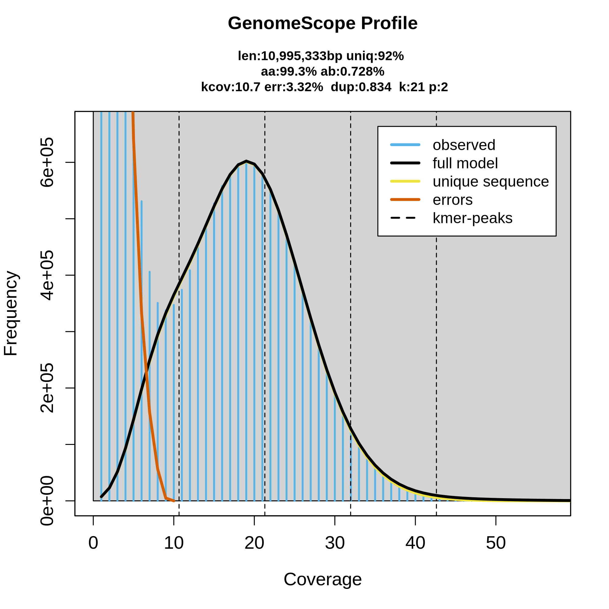
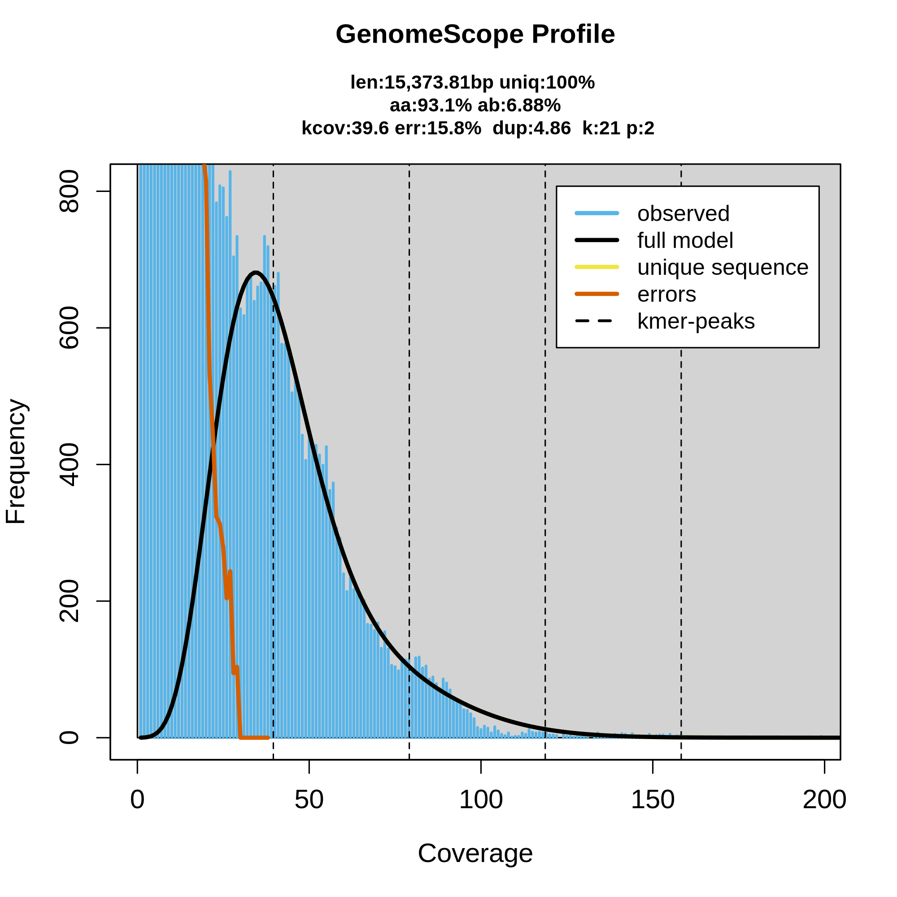

Montagem de genomas com dados Nanopore¶
Resumo
Tutorial prático de montagem de novo de genomas a partir de dados de sequenciamento Oxford Nanopore Technology (ONT). Cobrimos o pipeline completo: download dos dados públicos, controle de qualidade, filtragem, exploração de contaminantes (Kraken2), estimativa do genoma por k-mers (GenomeScope2), três estratégias de montagem (Flye, Hifiasm, NextDenovo), avaliação comparativa (QUAST, Merqury, BUSCO), polimento (Medaka), scaffolding com e sem referência (RagTag, LongStitch), escolha da montagem final e checagem de contaminação na montagem com BlobTools.
Autora: Profa. Renata de Oliveira Dias Instituição: Laboratório de Genética & Biodiversidade (LGBio) — Instituto de Ciências Biológicas (ICB) / Universidade Federal de Goiás (UFG) Contato: renata_dias@ufg.br Última atualização: Julho de 2026
Objetivos de aprendizagem¶
Ao final deste curso, você será capaz de:
- Baixar dados públicos de sequenciamento ONT de bancos como ENA/SRA
- Avaliar qualidade de leituras longas com NanoPlot
- Remover adaptadores residuais (Porechop_ABI) e filtrar por qualidade/tamanho (Chopper)
- Explorar contaminantes com Kraken2 e interpretar suas limitações
- Estimar parâmetros do genoma a partir de k-mers (Meryl + GenomeScope2)
- Executar e comparar montagens de novo com Flye, Hifiasm e NextDenovo
- Avaliar montagens com QUAST, Merqury e BUSCO e entender por que essas métricas podem discordar
- Polir montagens com Medaka e avaliar quando o polimento realmente ajuda
- Realizar scaffolding com referência (RagTag) e sem referência (LongStitch)
- Escolher a montagem final com base em múltiplas evidências, não em uma métrica isolada
- Checar contaminação diretamente na montagem com BlobTools
Carga horária estimada¶
~16 horas
Pré-requisitos¶
| Item | Detalhes |
|---|---|
| Curso anterior | Bash / Linux para bioinformática |
| Biologia molecular | Conceitos de sequenciamento, genoma, contig, scaffold |
| Softwares | SRA Toolkit, NanoPlot, Porechop_ABI, Chopper, Kraken2, Meryl, GenomeScope2, Flye, Hifiasm, NextDenovo, QUAST, Merqury, BUSCO, Medaka, RagTag, LongStitch, minimap2, samtools, BLAST+, BlobTools |
| Recurso | Servidor Linux com boa quantidade de RAM/threads e várias dezenas de GB de storage livre |
Dados do exercício¶
Utilizamos duas amostras de Saccharomyces cerevisiae sequenciadas com PromethION, depositadas no projeto PRJEB77686 (ScRAP — S. cerevisiae Reference Assembly Panel), parte do estudo de Loegler et al. (2025).
| Amostra | Accession | Linhagem | Bases | Read N50 |
|---|---|---|---|---|
| Scer1 | ERR13367646 | CBS7963 | ~1 Gb | 5.592 bp |
| Scer2 | ERR13375657 | SM.9.1.AL1 | ~108 Mb | 1.865 bp |
Atenção à cobertura
Scer2 tem cobertura muito baixa para montagem de qualidade — usada aqui apenas para fins didáticos e comparação entre montadores. Ao longo do tutorial ela serve de contraste: mesma metodologia, dados insuficientes.
Referência
Loegler V. et al. From genotype to phenotype with 1,086 near telomere-to-telomere yeast genomes. Nature (2025). DOI: 10.1038/s41586-025-08616-z
Acesso aos resultados pré-computados¶
Não conseguiu rodar localmente, ou quer conferir se seus resultados batem com os esperados? Os principais outputs deste tutorial estão disponíveis para download/visualização direta na página, próximos de cada etapa. Resumo dos principais:
-
Relatórios de QC
NanoPlot (bruto e filtrado), estatísticas Kraken2, GenomeScope2
-
Avaliação das montagens
QUAST, Merqury e BUSCO — antes e depois do polimento
-
Montagens (FASTA)
Flye, Hifiasm, NextDenovo, versões polidas e scaffolded
-
Blob plots (BlobTools)
Checagem de contaminação nas montagens finais
Etapa 1 — Obtenção dos dados públicos¶
Os dados estão disponíveis no ENA. O download pode ser feito via SRA Toolkit (prefetch + fasterq-dump) ou diretamente via FTP do ENA, que costuma ser mais rápido.
Opção 1 — SRA Toolkit (recomendado para arquivos grandes):
mkdir 0.DadosBrutos
prefetch ERR13367646 -O 0.DadosBrutos
fasterq-dump ERR13367646 --outdir 0.DadosBrutos --outfile Scer1.fastq --progress && gzip 0.DadosBrutos/Scer1.fastq
prefetch ERR13375657 -O 0.DadosBrutos
fasterq-dump ERR13375657 --outdir 0.DadosBrutos --outfile Scer2.fastq --progress && gzip 0.DadosBrutos/Scer2.fastq
Ver saída do comando
$ prefetch ERR13367646 -O 0.DadosBrutos
2026-06-04T14:11:41 prefetch.3.0.0: Current preference is set to retrieve SRA Normalized Format files with full base quality scores.
2026-06-04T14:11:42 prefetch.3.0.0: 1) Downloading 'ERR13367646'...
2026-06-04T14:11:42 prefetch.3.0.0: SRA Normalized Format file is being retrieved, if this is different from your preference, it may be due to current file availability.
2026-06-04T14:11:42 prefetch.3.0.0: Downloading via HTTPS...
2026-06-04T14:12:36 prefetch.3.0.0: HTTPS download succeed
2026-06-04T14:12:37 prefetch.3.0.0: 'ERR13367646' is valid
2026-06-04T14:12:37 prefetch.3.0.0: 1) 'ERR13367646' was downloaded successfully
2026-06-04T14:12:37 prefetch.3.0.0: 'ERR13367646' has 0 unresolved dependencies
$ fasterq-dump ERR13367646 --outdir 0.DadosBrutos --outfile Scer1.fastq --progress && gzip 0.DadosBrutos/Scer1.fastq
join :|-------------------------------------------------- 100%
concat :|-------------------------------------------------- 100%
spots read : 349,324
reads read : 349,324
reads written : 349,324
$ prefetch ERR13375657 -O 0.DadosBrutos
2026-06-04T14:12:12 prefetch.3.0.0: Current preference is set to retrieve SRA Normalized Format files with full base quality scores.
2026-06-04T14:12:12 prefetch.3.0.0: 1) Downloading 'ERR13375657'...
2026-06-04T14:12:12 prefetch.3.0.0: SRA Normalized Format file is being retrieved, if this is different from your preference, it may be due to current file availability.
2026-06-04T14:12:12 prefetch.3.0.0: Downloading via HTTPS...
2026-06-04T14:12:27 prefetch.3.0.0: HTTPS download succeed
2026-06-04T14:12:27 prefetch.3.0.0: 'ERR13375657' is valid
2026-06-04T14:12:27 prefetch.3.0.0: 1) 'ERR13375657' was downloaded successfully
2026-06-04T14:12:27 prefetch.3.0.0: 'ERR13375657' has 0 unresolved dependencies
$ fasterq-dump ERR13375657 --outdir 0.DadosBrutos --outfile Scer2.fastq --progress && gzip 0.DadosBrutos/Scer2.fastq
join :|-------------------------------------------------- 100%
concat :|-------------------------------------------------- 100%
spots read : 57,918
reads read : 57,918
reads written : 57,918
Opção 2 — wget direto do ENA (mais simples):
mkdir 0.DadosBrutos
wget -P 0.DadosBrutos ftp://ftp.sra.ebi.ac.uk/vol1/fastq/ERR133/046/ERR13367646/ERR13367646.fastq.gz
wget -P 0.DadosBrutos ftp://ftp.sra.ebi.ac.uk/vol1/fastq/ERR133/057/ERR13375657/ERR13375657.fastq.gz
# Renomear para padronizar
mv 0.DadosBrutos/ERR13367646.fastq.gz 0.DadosBrutos/Scer1.fastq.gz
mv 0.DadosBrutos/ERR13375657.fastq.gz 0.DadosBrutos/Scer2.fastq.gz
Ver saída do comando
$ wget -P 0.DadosBrutos ftp://ftp.sra.ebi.ac.uk/vol1/fastq/ERR133/046/ERR13367646/ERR13367646.fastq.gz
--2026-07-07 23:37:28-- ftp://ftp.sra.ebi.ac.uk/vol1/fastq/ERR133/046/ERR13367646/ERR13367646.fastq.gz
=> '0.DadosBrutos/ERR13367646.fastq.gz'
Resolving ftp.sra.ebi.ac.uk (ftp.sra.ebi.ac.uk)... 193.62.193.165
Connecting to ftp.sra.ebi.ac.uk (ftp.sra.ebi.ac.uk)|193.62.193.165|:21... connected.
Logging in as anonymous ... Logged in!
==> SYST ... done. ==> PWD ... done.
==> TYPE I ... done. ==> CWD (1) /vol1/fastq/ERR133/046/ERR13367646 ... done.
==> SIZE ERR13367646.fastq.gz ... 952022096
==> PASV ... done. ==> RETR ERR13367646.fastq.gz ... done.
Length: 952022096 (908M) (unauthoritative)
ERR13367646.fastq.gz 100%[=========================================================>] 907.92M 597KB/s in 31m 15s
2026-07-08 00:08:45 (496 KB/s) - '0.DadosBrutos/ERR13367646.fastq.gz' saved [952022096]
grupo_1@lgbio-ProLiant-DL580-Gen10:~$ wget -P 0.DadosBrutos ftp://ftp.sra.ebi.ac.uk/vol1/fastq/ERR133/057/ERR13375657/ERR13375657.fastq.gz
--2026-07-08 00:08:45-- ftp://ftp.sra.ebi.ac.uk/vol1/fastq/ERR133/057/ERR13375657/ERR13375657.fastq.gz
=> '0.DadosBrutos/ERR13375657.fastq.gz'
Resolving ftp.sra.ebi.ac.uk (ftp.sra.ebi.ac.uk)... 193.62.193.165
Connecting to ftp.sra.ebi.ac.uk (ftp.sra.ebi.ac.uk)|193.62.193.165|:21... connected.
Logging in as anonymous ... Logged in!
==> SYST ... done. ==> PWD ... done.
==> TYPE I ... done. ==> CWD (1) /vol1/fastq/ERR133/057/ERR13375657 ... done.
==> SIZE ERR13375657.fastq.gz ... 101703198
==> PASV ... done. ==> RETR ERR13375657.fastq.gz ... done.
Length: 101703198 (97M) (unauthoritative)
ERR13375657.fastq.gz 100%[=========================================================>] 96.99M 605KB/s in 4m 2s
2026-07-08 00:12:49 (410 KB/s) - '0.DadosBrutos/ERR13375657.fastq.gz' saved [101703198]
Verificar integridade após o download:
gzip -t 0.DadosBrutos/Scer1.fastq.gz && echo "OK" || echo "CORROMPIDO"
gzip -t 0.DadosBrutos/Scer2.fastq.gz && echo "OK" || echo "CORROMPIDO"
Ver saída do comando
Etapa 2 — Controle de qualidade dos dados brutos (NanoPlot)¶
O NanoPlot gera estatísticas e gráficos interativos para avaliar a qualidade das reads antes de qualquer processamento.
mkdir 1.QC_dadosbrutos/
NanoPlot --fastq 0.DadosBrutos/Scer1.fastq.gz -o 1.QC_dadosbrutos/ --prefix Scer1_ --threads 20 --loglength
NanoPlot --fastq 0.DadosBrutos/Scer2.fastq.gz -o 1.QC_dadosbrutos/ --prefix Scer2_ --threads 20 --loglength
Visualizar estatísticas
Ver saída do comando
$ more 1.QC_dadosbrutos/Scer1_NanoStats.txt
General summary:
Mean read length: 2,909.1
Mean read quality: 11.6
Median read length: 1,599.0
Median read quality: 12.8
Number of reads: 349,324.0
Read length N50: 5,592.0
STDEV read length: 3,578.7
Total bases: 1,016,222,921.0
Number, percentage and megabases of reads above quality cutoffs
>Q10: 274368 (78.5%) 840.0Mb
>Q15: 84994 (24.3%) 262.8Mb
>Q20: 2246 (0.6%) 2.5Mb
>Q25: 34 (0.0%) 0.0Mb
>Q30: 4 (0.0%) 0.0Mb
Top 5 highest mean basecall quality scores and their read lengths
1: 31.2 (217)
2: 30.9 (265)
3: 30.4 (102)
4: 30.1 (264)
5: 29.4 (213)
Top 5 longest reads and their mean basecall quality score
1: 88753 (7.6)
2: 82457 (11.0)
3: 79554 (4.3)
4: 71052 (12.0)
5: 49948 (13.8)
$ more 1.QC_dadosbrutos/Scer2_NanoStats.txt
General summary:
Mean read length: 1,865.7
Mean read quality: 10.9
Median read length: 1,127.0
Median read quality: 12.2
Number of reads: 57,918.0
Read length N50: 3,145.0
STDEV read length: 2,252.9
Total bases: 108,057,273.0
Number, percentage and megabases of reads above quality cutoffs
>Q10: 41441 (71.6%) 82.1Mb
>Q15: 12940 (22.3%) 26.6Mb
>Q20: 561 (1.0%) 0.8Mb
>Q25: 16 (0.0%) 0.0Mb
>Q30: 0 (0.0%) 0.0Mb
Top 5 highest mean basecall quality scores and their read lengths
1: 28.5 (139)
2: 28.0 (142)
3: 27.9 (552)
4: 26.9 (310)
5: 26.7 (387)
Top 5 longest reads and their mean basecall quality score
1: 88333 (7.8)
2: 71372 (13.3)
3: 70398 (13.3)
4: 63207 (10.1)
5: 46792 (5.1)
O que observar: - N50: tamanho da read mediana ponderada (quanto maior, melhor para montagem) - Mean quality: qualidade média das bases (Q≥10 é aceitável para Nanopore R9.4) - Total bases: cobertura estimada (divida pelo tamanho do genoma ~12Mb) - Compare Scer1 (~1Gb, ~83x) e Scer2 (~108Mb, ~9x). Como veremos ao longo desse tutorial, a diferença de cobertura vai impactar diretamente a qualidade das montagens.
Resultados pré-computados
Scer1_NanoStats.txt · Scer2_NanoStats.txt · Relatório NanoPlot Scer1 (HTML) · Relatório NanoPlot Scer2 (HTML)
Etapa 3 — Filtragem dos dados brutos de sequenciamento¶
Esta etapa é dividida em duas partes: remoção de adaptadores residuais e filtro por qualidade/tamanho.
3.1 Remoção de adaptadores (Porechop_ABI)¶
O Porechop_ABI usa uma abordagem ab initio. Ele descobre os adaptadores diretamente nas reads sem precisar de um banco de dados externo, o que é útil quando o kit de sequenciamento não é conhecido.
Atenção aos avisos
Mensagens como "this file is already trimmed" indicam que o basecaller (Dorado) já removeu parte dos adaptadores. O Porechop_ABI ainda consegue remover resíduos remanescentes. Veja no resultado que adaptadores SQK-NSK007 foram encontrados e removidos em ambas as amostras.
conda init
source ~/.bashrc
mkdir -p 2.Filtragem-dadosbrutos
conda activate porechop_abi_env
porechop_abi -abi -i 0.DadosBrutos/Scer1.fastq.gz -o 2.Filtragem-dadosbrutos/Scer1_trim.fastq.gz --format fastq -t 20
porechop_abi -abi -i 0.DadosBrutos/Scer2.fastq.gz -o 2.Filtragem-dadosbrutos/Scer2_trim.fastq.gz --format fastq -t 20
conda deactivate
Ver saída do comando
$ porechop_abi -abi -i 0.DadosBrutos/Scer1.fastq.gz -o 2.Filtragem-dadosbrutos/Scer1_trim.fastq.gz --format fastq -t 20
Ab Initio Phase
Starting with a 10 run batch.
Using config file:/home/lgbio/programas/porechop_abi/Porechop_ABI/porechop_abi/ab_initio.config
Command line:
/home/lgbio/programas/porechop_abi/Porechop_ABI/porechop_abi/approx_counter 0.DadosBrutos/Scer1.fastq.gz -v 1 --config /home/lgbio/programas/porechop_abi/Porechop_ABI/porechop_abi/ab_initio.config -o ./tmp/temp_approx_kmer_count -nt 20 -mr 10
Kmer size: 16
Sampled sequences: 40000
Sampling length 100
LC filter threshold: 1
Adjusted LC threshold: 1
Nb thread: 20
Number of kept kmer: 500
Number of runs: 10
Verbosity level: 1
A total of 10 runs will be performed.
[11.1623 ms] Parsing FASTA file
[13614.5 ms] Number of sequences found: 349324.
Starting run number 1
[13614.6 ms] Working on sequence start.
[20996.6 ms] Working on sequence end.
Starting run number 2
[28236 ms] Working on sequence start.
[35144.9 ms] Working on sequence end.
Starting run number 3
[42353.2 ms] Working on sequence start.
[49274.9 ms] Working on sequence end.
Starting run number 4
[56473.3 ms] Working on sequence start.
[63379.6 ms] Working on sequence end.
Starting run number 5
[70581.9 ms] Working on sequence start.
[77410.1 ms] Working on sequence end.
Starting run number 6
[84618 ms] Working on sequence start.
[91513.2 ms] Working on sequence end.
Starting run number 7
[98691.1 ms] Working on sequence start.
[105587 ms] Working on sequence end.
Starting run number 8
[112756 ms] Working on sequence start.
[119739 ms] Working on sequence end.
Starting run number 9
[126896 ms] Working on sequence start.
[133724 ms] Working on sequence end.
Starting run number 10
[140873 ms] Working on sequence start.
[147760 ms] Working on sequence end.
Assembling run 1
/!\ The most frequent kmer has been found in less than 10% of the reads starts after approximate count (2.3975%)
/!\ It could mean this file is already trimmed or the sample do not contains detectable adapters.
/!\ The most frequent kmer has been found in less than 10% of the reads ends after approximate count (5.075%)
/!\ It could mean this file is already trimmed or the sample do not contains detectable adapters.
Assembling run 2
/!\ The most frequent kmer has been found in less than 10% of the reads starts after approximate count (2.13%)
/!\ It could mean this file is already trimmed or the sample do not contains detectable adapters.
/!\ The most frequent kmer has been found in less than 10% of the reads ends after approximate count (5.15%)
/!\ It could mean this file is already trimmed or the sample do not contains detectable adapters.
Assembling run 3
/!\ The most frequent kmer has been found in less than 10% of the reads starts after approximate count (2.2425%)
/!\ It could mean this file is already trimmed or the sample do not contains detectable adapters.
/!\ The most frequent kmer has been found in less than 10% of the reads ends after approximate count (5.2%)
/!\ It could mean this file is already trimmed or the sample do not contains detectable adapters.
Assembling run 4
/!\ The most frequent kmer has been found in less than 10% of the reads starts after approximate count (2.2325%)
/!\ It could mean this file is already trimmed or the sample do not contains detectable adapters.
/!\ The most frequent kmer has been found in less than 10% of the reads ends after approximate count (5.205%)
/!\ It could mean this file is already trimmed or the sample do not contains detectable adapters.
Assembling run 5
/!\ The most frequent kmer has been found in less than 10% of the reads starts after approximate count (2.1175%)
/!\ It could mean this file is already trimmed or the sample do not contains detectable adapters.
/!\ The most frequent kmer has been found in less than 10% of the reads ends after approximate count (4.99%)
/!\ It could mean this file is already trimmed or the sample do not contains detectable adapters.
Assembling run 6
/!\ The most frequent kmer has been found in less than 10% of the reads starts after approximate count (2.455%)
/!\ It could mean this file is already trimmed or the sample do not contains detectable adapters.
/!\ The most frequent kmer has been found in less than 10% of the reads ends after approximate count (5.1925%)
/!\ It could mean this file is already trimmed or the sample do not contains detectable adapters.
Assembling run 7
/!\ The most frequent kmer has been found in less than 10% of the reads starts after approximate count (2.1725%)
/!\ It could mean this file is already trimmed or the sample do not contains detectable adapters.
/!\ The most frequent kmer has been found in less than 10% of the reads ends after approximate count (5.1075%)
/!\ It could mean this file is already trimmed or the sample do not contains detectable adapters.
Assembling run 8
/!\ The most frequent kmer has been found in less than 10% of the reads starts after approximate count (2.2975%)
/!\ It could mean this file is already trimmed or the sample do not contains detectable adapters.
/!\ The most frequent kmer has been found in less than 10% of the reads ends after approximate count (5.1525%)
/!\ It could mean this file is already trimmed or the sample do not contains detectable adapters.
Assembling run 9
/!\ The most frequent kmer has been found in less than 10% of the reads starts after approximate count (2.365%)
/!\ It could mean this file is already trimmed or the sample do not contains detectable adapters.
/!\ The most frequent kmer has been found in less than 10% of the reads ends after approximate count (4.9025%)
/!\ It could mean this file is already trimmed or the sample do not contains detectable adapters.
Assembling run 10
/!\ The most frequent kmer has been found in less than 10% of the reads starts after approximate count (2.23%)
/!\ It could mean this file is already trimmed or the sample do not contains detectable adapters.
/!\ The most frequent kmer has been found in less than 10% of the reads ends after approximate count (5.3375%)
/!\ It could mean this file is already trimmed or the sample do not contains detectable adapters.
/!\ The adapters currently found are not all identical.
/!\ A consensus will be made.
/!\ Launching 20 additional runs to build a consensus.
Following with a 20 run batch.
Using config file:/home/lgbio/programas/porechop_abi/Porechop_ABI/porechop_abi/ab_initio.config
Command line:
/home/lgbio/programas/porechop_abi/Porechop_ABI/porechop_abi/approx_counter 0.DadosBrutos/Scer1.fastq.gz -v 1 --config /home/lgbio/programas/porechop_abi/Porechop_ABI/porechop_abi/ab_initio.config -o ./tmp/temp_approx_kmer_count_sup -nt 20 -mr 20
Kmer size: 16
Sampled sequences: 40000
Sampling length 100
LC filter threshold: 1
Adjusted LC threshold: 1
Nb thread: 20
Number of kept kmer: 500
Number of runs: 20
Verbosity level: 1
A total of 20 runs will be performed.
[7.54732 ms] Parsing FASTA file
[13569.1 ms] Number of sequences found: 349324.
Starting run number 1
[13569.2 ms] Working on sequence start.
[20436 ms] Working on sequence end.
Starting run number 2
[27645 ms] Working on sequence start.
[34518.7 ms] Working on sequence end.
Starting run number 3
[41724.7 ms] Working on sequence start.
[48644.3 ms] Working on sequence end.
Starting run number 4
[55804.7 ms] Working on sequence start.
[62645.8 ms] Working on sequence end.
Starting run number 5
[69859.4 ms] Working on sequence start.
[76775.5 ms] Working on sequence end.
Starting run number 6
[83919 ms] Working on sequence start.
[90736.8 ms] Working on sequence end.
Starting run number 7
[97919.8 ms] Working on sequence start.
[104776 ms] Working on sequence end.
Starting run number 8
[112019 ms] Working on sequence start.
[118893 ms] Working on sequence end.
Starting run number 9
[126105 ms] Working on sequence start.
[132973 ms] Working on sequence end.
Starting run number 10
[140191 ms] Working on sequence start.
[147036 ms] Working on sequence end.
Starting run number 11
[154178 ms] Working on sequence start.
[161081 ms] Working on sequence end.
Starting run number 12
[168219 ms] Working on sequence start.
[175065 ms] Working on sequence end.
Starting run number 13
[182211 ms] Working on sequence start.
[189091 ms] Working on sequence end.
Starting run number 14
[196214 ms] Working on sequence start.
[203134 ms] Working on sequence end.
Starting run number 15
[210324 ms] Working on sequence start.
[217328 ms] Working on sequence end.
Starting run number 16
[224455 ms] Working on sequence start.
[231312 ms] Working on sequence end.
Starting run number 17
[238437 ms] Working on sequence start.
[245315 ms] Working on sequence end.
Starting run number 18
[252442 ms] Working on sequence start.
[259378 ms] Working on sequence end.
Starting run number 19
[266561 ms] Working on sequence start.
[273387 ms] Working on sequence end.
Starting run number 20
[280510 ms] Working on sequence start.
[287359 ms] Working on sequence end.
Assembling run 1
/!\ The most frequent kmer has been found in less than 10% of the reads starts after approximate count (2.56%)
/!\ It could mean this file is already trimmed or the sample do not contains detectable adapters.
/!\ The most frequent kmer has been found in less than 10% of the reads ends after approximate count (5.0225%)
/!\ It could mean this file is already trimmed or the sample do not contains detectable adapters.
Assembling run 2
/!\ The most frequent kmer has been found in less than 10% of the reads starts after approximate count (2.3475%)
/!\ It could mean this file is already trimmed or the sample do not contains detectable adapters.
/!\ The most frequent kmer has been found in less than 10% of the reads ends after approximate count (5.36%)
/!\ It could mean this file is already trimmed or the sample do not contains detectable adapters.
Assembling run 3
/!\ The most frequent kmer has been found in less than 10% of the reads starts after approximate count (2.3625%)
/!\ It could mean this file is already trimmed or the sample do not contains detectable adapters.
/!\ The most frequent kmer has been found in less than 10% of the reads ends after approximate count (4.8125%)
/!\ It could mean this file is already trimmed or the sample do not contains detectable adapters.
Assembling run 4
/!\ The most frequent kmer has been found in less than 10% of the reads starts after approximate count (2.33%)
/!\ It could mean this file is already trimmed or the sample do not contains detectable adapters.
/!\ The most frequent kmer has been found in less than 10% of the reads ends after approximate count (5.1375%)
/!\ It could mean this file is already trimmed or the sample do not contains detectable adapters.
Assembling run 5
/!\ The most frequent kmer has been found in less than 10% of the reads starts after approximate count (2.31%)
/!\ It could mean this file is already trimmed or the sample do not contains detectable adapters.
/!\ The most frequent kmer has been found in less than 10% of the reads ends after approximate count (4.955%)
/!\ It could mean this file is already trimmed or the sample do not contains detectable adapters.
Assembling run 6
/!\ The most frequent kmer has been found in less than 10% of the reads starts after approximate count (2.2625%)
/!\ It could mean this file is already trimmed or the sample do not contains detectable adapters.
/!\ The most frequent kmer has been found in less than 10% of the reads ends after approximate count (4.9775%)
/!\ It could mean this file is already trimmed or the sample do not contains detectable adapters.
Assembling run 7
/!\ The most frequent kmer has been found in less than 10% of the reads starts after approximate count (2.4125%)
/!\ It could mean this file is already trimmed or the sample do not contains detectable adapters.
/!\ The most frequent kmer has been found in less than 10% of the reads ends after approximate count (5.0825%)
/!\ It could mean this file is already trimmed or the sample do not contains detectable adapters.
Assembling run 8
/!\ The most frequent kmer has been found in less than 10% of the reads starts after approximate count (2.435%)
/!\ It could mean this file is already trimmed or the sample do not contains detectable adapters.
/!\ The most frequent kmer has been found in less than 10% of the reads ends after approximate count (5.1325%)
/!\ It could mean this file is already trimmed or the sample do not contains detectable adapters.
Assembling run 9
/!\ The most frequent kmer has been found in less than 10% of the reads starts after approximate count (2.4825%)
/!\ It could mean this file is already trimmed or the sample do not contains detectable adapters.
/!\ The most frequent kmer has been found in less than 10% of the reads ends after approximate count (4.93%)
/!\ It could mean this file is already trimmed or the sample do not contains detectable adapters.
Assembling run 10
/!\ The most frequent kmer has been found in less than 10% of the reads starts after approximate count (2.1225%)
/!\ It could mean this file is already trimmed or the sample do not contains detectable adapters.
/!\ The most frequent kmer has been found in less than 10% of the reads ends after approximate count (5.0425%)
/!\ It could mean this file is already trimmed or the sample do not contains detectable adapters.
Assembling run 11
/!\ The most frequent kmer has been found in less than 10% of the reads starts after approximate count (2.32%)
/!\ It could mean this file is already trimmed or the sample do not contains detectable adapters.
/!\ The most frequent kmer has been found in less than 10% of the reads ends after approximate count (5.3025%)
/!\ It could mean this file is already trimmed or the sample do not contains detectable adapters.
Assembling run 12
/!\ The most frequent kmer has been found in less than 10% of the reads starts after approximate count (2.415%)
/!\ It could mean this file is already trimmed or the sample do not contains detectable adapters.
/!\ The most frequent kmer has been found in less than 10% of the reads ends after approximate count (5.17%)
/!\ It could mean this file is already trimmed or the sample do not contains detectable adapters.
Assembling run 13
/!\ The most frequent kmer has been found in less than 10% of the reads starts after approximate count (2.5275%)
/!\ It could mean this file is already trimmed or the sample do not contains detectable adapters.
/!\ The most frequent kmer has been found in less than 10% of the reads ends after approximate count (5.17%)
/!\ It could mean this file is already trimmed or the sample do not contains detectable adapters.
Assembling run 14
/!\ The most frequent kmer has been found in less than 10% of the reads starts after approximate count (2.375%)
/!\ It could mean this file is already trimmed or the sample do not contains detectable adapters.
/!\ The most frequent kmer has been found in less than 10% of the reads ends after approximate count (4.975%)
/!\ It could mean this file is already trimmed or the sample do not contains detectable adapters.
Assembling run 15
/!\ The most frequent kmer has been found in less than 10% of the reads starts after approximate count (2.5175%)
/!\ It could mean this file is already trimmed or the sample do not contains detectable adapters.
/!\ The most frequent kmer has been found in less than 10% of the reads ends after approximate count (5.135%)
/!\ It could mean this file is already trimmed or the sample do not contains detectable adapters.
Assembling run 16
/!\ The most frequent kmer has been found in less than 10% of the reads starts after approximate count (2.3425%)
/!\ It could mean this file is already trimmed or the sample do not contains detectable adapters.
/!\ The most frequent kmer has been found in less than 10% of the reads ends after approximate count (5.0875%)
/!\ It could mean this file is already trimmed or the sample do not contains detectable adapters.
Assembling run 17
/!\ The most frequent kmer has been found in less than 10% of the reads starts after approximate count (2.265%)
/!\ It could mean this file is already trimmed or the sample do not contains detectable adapters.
/!\ The most frequent kmer has been found in less than 10% of the reads ends after approximate count (5.03%)
/!\ It could mean this file is already trimmed or the sample do not contains detectable adapters.
Assembling run 18
/!\ The most frequent kmer has been found in less than 10% of the reads starts after approximate count (2.37%)
/!\ It could mean this file is already trimmed or the sample do not contains detectable adapters.
/!\ The most frequent kmer has been found in less than 10% of the reads ends after approximate count (5.25%)
/!\ It could mean this file is already trimmed or the sample do not contains detectable adapters.
Assembling run 19
/!\ The most frequent kmer has been found in less than 10% of the reads starts after approximate count (2.47%)
/!\ It could mean this file is already trimmed or the sample do not contains detectable adapters.
/!\ The most frequent kmer has been found in less than 10% of the reads ends after approximate count (5.3025%)
/!\ It could mean this file is already trimmed or the sample do not contains detectable adapters.
Assembling run 20
/!\ The most frequent kmer has been found in less than 10% of the reads starts after approximate count (2.555%)
/!\ It could mean this file is already trimmed or the sample do not contains detectable adapters.
/!\ The most frequent kmer has been found in less than 10% of the reads ends after approximate count (5.08%)
/!\ It could mean this file is already trimmed or the sample do not contains detectable adapters.
Consensus step done
/!\ Frequency warning triggered by 30/30 runs for start adapters
/!\ Frequency warning triggered by 30/30 runs for end adapters
Rebuild adapters:
Start
Consensus_1_start_(100.0%)
GTACTTCGTTCAGTTACGTATTGCTAAGGTTAACCTGGGAGCATCAGGT
End
Consensus_1_end_(100.0%)
AGGTGCTGCTGTTACTACCTGATGCTCCCAGGTTAACCTTAGCAATACGTAACTTA
Building consensus adapter objects
The inference of adapters sequence is done.
Loading reads
0.DadosBrutos/Scer1.fastq.gz
349,324 reads loaded
Looking for known adapter sets
10,000 / 10,000 (100.0%)
Best
read Best
start read end
Set %ID %ID
SQK-NSK007 96.6 81.8
Rapid 68.5 0.0
RBK004_upstream 76.9 0.0
SQK-MAP006 78.6 82.6
SQK-MAP006 short 74.1 75.9
PCR adapters 1 78.3 83.3
PCR adapters 2 81.8 82.6
PCR adapters 3 79.2 78.3
1D^2 part 1 75.0 73.3
1D^2 part 2 85.3 80.6
cDNA SSP 73.7 70.5
Barcode 1 (reverse) 84.0 80.0
Barcode 2 (reverse) 79.2 83.3
Barcode 3 (reverse) 76.9 75.0
Barcode 4 (reverse) 77.8 76.9
Barcode 5 (reverse) 80.0 77.8
Barcode 6 (reverse) 76.9 76.9
Barcode 7 (reverse) 80.0 76.9
Barcode 8 (reverse) 80.0 76.9
Barcode 9 (reverse) 79.2 76.9
Barcode 10 (reverse) 80.0 81.5
Barcode 11 (reverse) 76.9 80.0
Barcode 12 (reverse) 80.0 79.2
Barcode 1 (forward) 77.8 80.0
Barcode 2 (forward) 79.2 80.0
Barcode 3 (forward) 76.0 77.8
Barcode 4 (forward) 79.2 76.0
Barcode 5 (forward) 80.8 79.2
Barcode 6 (forward) 76.0 80.0
Barcode 7 (forward) 80.8 79.2
Barcode 8 (forward) 79.2 80.0
Barcode 9 (forward) 77.8 77.8
Barcode 10 (forward) 80.0 76.9
Barcode 11 (forward) 77.8 80.8
Barcode 12 (forward) 79.2 80.8
Barcode 13 (forward) 79.2 76.9
Barcode 14 (forward) 77.8 80.0
Barcode 15 (forward) 76.0 84.6
Barcode 16 (forward) 79.2 79.2
Barcode 17 (forward) 80.0 79.2
Barcode 18 (forward) 77.8 80.0
Barcode 19 (forward) 79.2 80.0
Barcode 20 (forward) 76.0 80.8
Barcode 21 (forward) 80.0 76.9
Barcode 22 (forward) 76.9 80.0
Barcode 23 (forward) 77.8 77.8
Barcode 24 (forward) 76.0 92.3
Barcode 25 (forward) 77.8 79.2
Barcode 26 (forward) 80.0 80.0
Barcode 27 (forward) 76.0 83.3
Barcode 28 (forward) 76.0 79.2
Barcode 29 (forward) 76.9 76.0
Barcode 30 (forward) 76.9 76.9
Barcode 31 (forward) 79.2 76.9
Barcode 32 (forward) 76.9 80.0
Barcode 33 (forward) 76.0 79.2
Barcode 34 (forward) 80.0 79.2
Barcode 35 (forward) 80.8 76.0
Barcode 36 (forward) 80.0 79.2
Barcode 37 (forward) 79.2 79.2
Barcode 38 (forward) 81.5 79.2
Barcode 39 (forward) 76.9 76.9
Barcode 40 (forward) 79.2 76.0
Barcode 41 (forward) 76.0 79.2
Barcode 42 (forward) 76.9 76.9
Barcode 43 (forward) 77.8 76.9
Barcode 44 (forward) 76.0 75.0
Barcode 45 (forward) 77.8 76.9
Barcode 46 (forward) 80.0 76.0
Barcode 47 (forward) 76.0 79.2
Barcode 48 (forward) 79.2 83.3
Barcode 49 (forward) 80.8 76.9
Barcode 50 (forward) 77.8 76.9
Barcode 51 (forward) 76.9 79.2
Barcode 52 (forward) 84.0 80.0
Barcode 53 (forward) 76.9 76.0
Barcode 54 (forward) 78.6 80.0
Barcode 55 (forward) 76.0 79.2
Barcode 56 (forward) 76.9 80.0
Barcode 57 (forward) 76.0 77.8
Barcode 58 (forward) 80.0 76.9
Barcode 59 (forward) 79.2 88.0
Barcode 60 (forward) 79.2 79.2
Barcode 61 (forward) 76.9 76.9
Barcode 62 (forward) 75.0 76.0
Barcode 63 (forward) 76.0 83.3
Barcode 64 (forward) 80.0 76.0
Barcode 65 (forward) 80.0 79.2
Barcode 66 (forward) 76.9 76.0
Barcode 67 (forward) 76.0 76.0
Barcode 68 (forward) 77.8 76.0
Barcode 69 (forward) 80.0 79.2
Barcode 70 (forward) 76.0 76.0
Barcode 71 (forward) 100.0 100.0
Barcode 72 (forward) 79.2 79.2
Barcode 73 (forward) 76.9 80.0
Barcode 74 (forward) 80.0 80.0
Barcode 75 (forward) 76.9 78.6
Barcode 76 (forward) 76.9 77.8
Barcode 77 (forward) 75.0 80.0
Barcode 78 (forward) 80.0 77.8
Barcode 79 (forward) 76.9 79.2
Barcode 80 (forward) 80.8 76.9
Barcode 81 (forward) 78.6 79.2
Barcode 82 (forward) 77.8 79.2
Barcode 83 (forward) 76.0 76.9
Barcode 84 (forward) 79.2 76.9
Barcode 85 (forward) 76.0 79.2
Barcode 86 (forward) 76.9 76.0
Barcode 87 (forward) 75.0 77.8
Barcode 88 (forward) 80.0 80.8
Barcode 89 (forward) 80.8 77.8
Barcode 90 (forward) 76.0 75.0
Barcode 91 (forward) 75.0 76.9
Barcode 92 (forward) 80.0 79.2
Barcode 93 (forward) 80.0 80.0
Barcode 94 (forward) 76.9 75.0
Barcode 95 (forward) 80.0 79.2
Barcode 96 (forward) 76.9 79.2
Consensus_1_start_(100.0%)_adapter 94.0 0.0
Consensus_1_end_(100.0%)_adapter 0.0 86.0
Trimming adapters from read ends
SQK-NSK007_Y_Top: AATGTACTTCGTTCAGTTACGTATTGCT
SQK-NSK007_Y_Bottom: GCAATACGTAACTGAACGAAGT
BC24: GCATAGTTCTGCATGATGGGTTAG
BC24_rev: CTAACCCATCATGCAGAACTATGC
BC71: CCTGGGAGCATCAGGTAGTAACAG
BC71_rev: CTGTTACTACCTGATGCTCCCAGG
Consensus_1_start_(100.0%): GTACTTCGTTCAGTTACGTATTGCTAAGGTTAACCTGGGAGCATCAGGT
349,324 / 349,324 (100.0%)
40,770 / 349,324 reads had adapters trimmed from their start (572,257 bp removed)
55,520 / 349,324 reads had adapters trimmed from their end (860,293 bp removed)
Splitting reads containing middle adapters
349,324 / 349,324 (100.0%)
739 / 349,324 reads were split based on middle adapters
Saving trimmed reads to file
Saved result to /media/hd15-cursos/nanopore_lgbio_2026/grupo_1/2.Filtragem-dadosbrutos/Scer1_trim.fastq.gz
### Scer2
$ porechop_abi -abi -i 0.DadosBrutos/Scer2.fastq.gz -o 2.Filtragem-dadosbrutos/Scer2_trim.fastq.gz --format fastq -t 20
Ab Initio Phase
Starting with a 10 run batch.
Using config file:/home/lgbio/programas/porechop_abi/Porechop_ABI/porechop_abi/ab_initio.config
Command line:
/home/lgbio/programas/porechop_abi/Porechop_ABI/porechop_abi/approx_counter 0.DadosBrutos/Scer2.fastq.gz -v 1 --config /home/lgbio/programas/porechop_abi/Porechop_ABI/porechop_abi/ab_initio.config -o ./tmp/temp_approx_kmer_count -nt 20 -mr 10
Kmer size: 16
Sampled sequences: 40000
Sampling length 100
LC filter threshold: 1
Adjusted LC threshold: 1
Nb thread: 20
Number of kept kmer: 500
Number of runs: 10
Verbosity level: 1
A total of 10 runs will be performed.
[7.547 ms] Parsing FASTA file
[1512.7 ms] Number of sequences found: 57918.
Starting run number 1
[1512.73 ms] Working on sequence start.
[8832.83 ms] Working on sequence end.
Starting run number 2
[16434.5 ms] Working on sequence start.
[23714.5 ms] Working on sequence end.
Starting run number 3
[31304.9 ms] Working on sequence start.
[38564.7 ms] Working on sequence end.
Starting run number 4
[46057.9 ms] Working on sequence start.
[53245.4 ms] Working on sequence end.
Starting run number 5
[60804.9 ms] Working on sequence start.
[68034.8 ms] Working on sequence end.
Starting run number 6
[75551.3 ms] Working on sequence start.
[82753.9 ms] Working on sequence end.
Starting run number 7
[90239.3 ms] Working on sequence start.
[97436.7 ms] Working on sequence end.
Starting run number 8
[104970 ms] Working on sequence start.
[112163 ms] Working on sequence end.
Starting run number 9
[119696 ms] Working on sequence start.
[126975 ms] Working on sequence end.
Starting run number 10
[134513 ms] Working on sequence start.
[141733 ms] Working on sequence end.
Assembling run 1
/!\ The most frequent kmer has been found in less than 10% of the reads starts after approximate count (2.315%)
/!\ It could mean this file is already trimmed or the sample do not contains detectable adapters.
/!\ The most frequent kmer has been found in less than 10% of the reads ends after approximate count (4.785%)
/!\ It could mean this file is already trimmed or the sample do not contains detectable adapters.
Assembling run 2
/!\ The most frequent kmer has been found in less than 10% of the reads starts after approximate count (2.2975%)
/!\ It could mean this file is already trimmed or the sample do not contains detectable adapters.
/!\ The most frequent kmer has been found in less than 10% of the reads ends after approximate count (4.735%)
/!\ It could mean this file is already trimmed or the sample do not contains detectable adapters.
Assembling run 3
/!\ The most frequent kmer has been found in less than 10% of the reads starts after approximate count (2.2525%)
/!\ It could mean this file is already trimmed or the sample do not contains detectable adapters.
/!\ The most frequent kmer has been found in less than 10% of the reads ends after approximate count (4.795%)
/!\ It could mean this file is already trimmed or the sample do not contains detectable adapters.
Assembling run 4
/!\ The most frequent kmer has been found in less than 10% of the reads starts after approximate count (2.29%)
/!\ It could mean this file is already trimmed or the sample do not contains detectable adapters.
/!\ The most frequent kmer has been found in less than 10% of the reads ends after approximate count (4.815%)
/!\ It could mean this file is already trimmed or the sample do not contains detectable adapters.
Assembling run 5
/!\ The most frequent kmer has been found in less than 10% of the reads starts after approximate count (2.23%)
/!\ It could mean this file is already trimmed or the sample do not contains detectable adapters.
/!\ The most frequent kmer has been found in less than 10% of the reads ends after approximate count (4.8225%)
/!\ It could mean this file is already trimmed or the sample do not contains detectable adapters.
Assembling run 6
/!\ The most frequent kmer has been found in less than 10% of the reads starts after approximate count (2.2025%)
/!\ It could mean this file is already trimmed or the sample do not contains detectable adapters.
/!\ The most frequent kmer has been found in less than 10% of the reads ends after approximate count (4.7%)
/!\ It could mean this file is already trimmed or the sample do not contains detectable adapters.
Assembling run 7
/!\ The most frequent kmer has been found in less than 10% of the reads starts after approximate count (2.215%)
/!\ It could mean this file is already trimmed or the sample do not contains detectable adapters.
/!\ The most frequent kmer has been found in less than 10% of the reads ends after approximate count (4.8225%)
/!\ It could mean this file is already trimmed or the sample do not contains detectable adapters.
Assembling run 8
/!\ The most frequent kmer has been found in less than 10% of the reads starts after approximate count (2.16%)
/!\ It could mean this file is already trimmed or the sample do not contains detectable adapters.
/!\ The most frequent kmer has been found in less than 10% of the reads ends after approximate count (4.85%)
/!\ It could mean this file is already trimmed or the sample do not contains detectable adapters.
Assembling run 9
/!\ The most frequent kmer has been found in less than 10% of the reads starts after approximate count (2.285%)
/!\ It could mean this file is already trimmed or the sample do not contains detectable adapters.
/!\ The most frequent kmer has been found in less than 10% of the reads ends after approximate count (4.77%)
/!\ It could mean this file is already trimmed or the sample do not contains detectable adapters.
Assembling run 10
/!\ The most frequent kmer has been found in less than 10% of the reads starts after approximate count (2.32%)
/!\ It could mean this file is already trimmed or the sample do not contains detectable adapters.
/!\ The most frequent kmer has been found in less than 10% of the reads ends after approximate count (4.8125%)
/!\ It could mean this file is already trimmed or the sample do not contains detectable adapters.
/!\ The adapters currently found are not all identical.
/!\ A consensus will be made.
/!\ Launching 20 additional runs to build a consensus.
Following with a 20 run batch.
Using config file:/home/lgbio/programas/porechop_abi/Porechop_ABI/porechop_abi/ab_initio.config
Command line:
/home/lgbio/programas/porechop_abi/Porechop_ABI/porechop_abi/approx_counter 0.DadosBrutos/Scer2.fastq.gz -v 1 --config /home/lgbio/programas/porechop_abi/Porechop_ABI/porechop_abi/ab_initio.config -o ./tmp/temp_approx_kmer_count_sup -nt 20 -mr 20
Kmer size: 16
Sampled sequences: 40000
Sampling length 100
LC filter threshold: 1
Adjusted LC threshold: 1
Nb thread: 20
Number of kept kmer: 500
Number of runs: 20
Verbosity level: 1
A total of 20 runs will be performed.
[7.40009 ms] Parsing FASTA file
[1511.68 ms] Number of sequences found: 57918.
Starting run number 1
[1511.71 ms] Working on sequence start.
[8968.53 ms] Working on sequence end.
Starting run number 2
[16552.6 ms] Working on sequence start.
[23638.6 ms] Working on sequence end.
Starting run number 3
[31021.7 ms] Working on sequence start.
[38192.6 ms] Working on sequence end.
Starting run number 4
[45609.1 ms] Working on sequence start.
[52700.2 ms] Working on sequence end.
Starting run number 5
[60135.8 ms] Working on sequence start.
[67261.6 ms] Working on sequence end.
Starting run number 6
[74767.5 ms] Working on sequence start.
[81837.6 ms] Working on sequence end.
Starting run number 7
[89202.6 ms] Working on sequence start.
[96280.9 ms] Working on sequence end.
Starting run number 8
[103660 ms] Working on sequence start.
[110747 ms] Working on sequence end.
Starting run number 9
[118187 ms] Working on sequence start.
[125293 ms] Working on sequence end.
Starting run number 10
[132690 ms] Working on sequence start.
[139814 ms] Working on sequence end.
Starting run number 11
[147210 ms] Working on sequence start.
[154297 ms] Working on sequence end.
Starting run number 12
[161664 ms] Working on sequence start.
[168822 ms] Working on sequence end.
Starting run number 13
[176190 ms] Working on sequence start.
[183284 ms] Working on sequence end.
Starting run number 14
[190672 ms] Working on sequence start.
[197800 ms] Working on sequence end.
Starting run number 15
[205210 ms] Working on sequence start.
[212292 ms] Working on sequence end.
Starting run number 16
[219677 ms] Working on sequence start.
[226755 ms] Working on sequence end.
Starting run number 17
[234130 ms] Working on sequence start.
[241184 ms] Working on sequence end.
Starting run number 18
[248697 ms] Working on sequence start.
[255774 ms] Working on sequence end.
Starting run number 19
[263149 ms] Working on sequence start.
[270261 ms] Working on sequence end.
Starting run number 20
[277621 ms] Working on sequence start.
[284714 ms] Working on sequence end.
Assembling run 1
/!\ The most frequent kmer has been found in less than 10% of the reads starts after approximate count (2.23%)
/!\ It could mean this file is already trimmed or the sample do not contains detectable adapters.
/!\ The most frequent kmer has been found in less than 10% of the reads ends after approximate count (4.8025%)
/!\ It could mean this file is already trimmed or the sample do not contains detectable adapters.
Assembling run 2
/!\ The most frequent kmer has been found in less than 10% of the reads starts after approximate count (2.245%)
/!\ It could mean this file is already trimmed or the sample do not contains detectable adapters.
/!\ The most frequent kmer has been found in less than 10% of the reads ends after approximate count (4.815%)
/!\ It could mean this file is already trimmed or the sample do not contains detectable adapters.
Assembling run 3
/!\ The most frequent kmer has been found in less than 10% of the reads starts after approximate count (2.305%)
/!\ It could mean this file is already trimmed or the sample do not contains detectable adapters.
/!\ The most frequent kmer has been found in less than 10% of the reads ends after approximate count (4.8225%)
/!\ It could mean this file is already trimmed or the sample do not contains detectable adapters.
Assembling run 4
/!\ The most frequent kmer has been found in less than 10% of the reads starts after approximate count (2.14%)
/!\ It could mean this file is already trimmed or the sample do not contains detectable adapters.
/!\ The most frequent kmer has been found in less than 10% of the reads ends after approximate count (4.8125%)
/!\ It could mean this file is already trimmed or the sample do not contains detectable adapters.
Assembling run 5
/!\ The most frequent kmer has been found in less than 10% of the reads starts after approximate count (2.2725%)
/!\ It could mean this file is already trimmed or the sample do not contains detectable adapters.
/!\ The most frequent kmer has been found in less than 10% of the reads ends after approximate count (4.8075%)
/!\ It could mean this file is already trimmed or the sample do not contains detectable adapters.
Assembling run 6
/!\ The most frequent kmer has been found in less than 10% of the reads starts after approximate count (2.1975%)
/!\ It could mean this file is already trimmed or the sample do not contains detectable adapters.
/!\ The most frequent kmer has been found in less than 10% of the reads ends after approximate count (4.915%)
/!\ It could mean this file is already trimmed or the sample do not contains detectable adapters.
Assembling run 7
/!\ The most frequent kmer has been found in less than 10% of the reads starts after approximate count (2.21%)
/!\ It could mean this file is already trimmed or the sample do not contains detectable adapters.
/!\ The most frequent kmer has been found in less than 10% of the reads ends after approximate count (4.7325%)
/!\ It could mean this file is already trimmed or the sample do not contains detectable adapters.
Assembling run 8
/!\ The most frequent kmer has been found in less than 10% of the reads starts after approximate count (2.155%)
/!\ It could mean this file is already trimmed or the sample do not contains detectable adapters.
/!\ The most frequent kmer has been found in less than 10% of the reads ends after approximate count (4.82%)
/!\ It could mean this file is already trimmed or the sample do not contains detectable adapters.
Assembling run 9
/!\ The most frequent kmer has been found in less than 10% of the reads starts after approximate count (2.26%)
/!\ It could mean this file is already trimmed or the sample do not contains detectable adapters.
/!\ The most frequent kmer has been found in less than 10% of the reads ends after approximate count (4.7975%)
/!\ It could mean this file is already trimmed or the sample do not contains detectable adapters.
Assembling run 10
/!\ The most frequent kmer has been found in less than 10% of the reads starts after approximate count (2.31%)
/!\ It could mean this file is already trimmed or the sample do not contains detectable adapters.
/!\ The most frequent kmer has been found in less than 10% of the reads ends after approximate count (4.875%)
/!\ It could mean this file is already trimmed or the sample do not contains detectable adapters.
Assembling run 11
/!\ The most frequent kmer has been found in less than 10% of the reads starts after approximate count (2.105%)
/!\ It could mean this file is already trimmed or the sample do not contains detectable adapters.
/!\ The most frequent kmer has been found in less than 10% of the reads ends after approximate count (4.575%)
/!\ It could mean this file is already trimmed or the sample do not contains detectable adapters.
Assembling run 12
/!\ The most frequent kmer has been found in less than 10% of the reads starts after approximate count (2.23%)
/!\ It could mean this file is already trimmed or the sample do not contains detectable adapters.
/!\ The most frequent kmer has been found in less than 10% of the reads ends after approximate count (4.7275%)
/!\ It could mean this file is already trimmed or the sample do not contains detectable adapters.
Assembling run 13
/!\ The most frequent kmer has been found in less than 10% of the reads starts after approximate count (2.1625%)
/!\ It could mean this file is already trimmed or the sample do not contains detectable adapters.
/!\ The most frequent kmer has been found in less than 10% of the reads ends after approximate count (4.695%)
/!\ It could mean this file is already trimmed or the sample do not contains detectable adapters.
Assembling run 14
/!\ The most frequent kmer has been found in less than 10% of the reads starts after approximate count (2.2675%)
/!\ It could mean this file is already trimmed or the sample do not contains detectable adapters.
/!\ The most frequent kmer has been found in less than 10% of the reads ends after approximate count (4.905%)
/!\ It could mean this file is already trimmed or the sample do not contains detectable adapters.
Assembling run 15
/!\ The most frequent kmer has been found in less than 10% of the reads starts after approximate count (2.1775%)
/!\ It could mean this file is already trimmed or the sample do not contains detectable adapters.
/!\ The most frequent kmer has been found in less than 10% of the reads ends after approximate count (4.9075%)
/!\ It could mean this file is already trimmed or the sample do not contains detectable adapters.
Assembling run 16
/!\ The most frequent kmer has been found in less than 10% of the reads starts after approximate count (2.3275%)
/!\ It could mean this file is already trimmed or the sample do not contains detectable adapters.
/!\ The most frequent kmer has been found in less than 10% of the reads ends after approximate count (4.605%)
/!\ It could mean this file is already trimmed or the sample do not contains detectable adapters.
Assembling run 17
/!\ The most frequent kmer has been found in less than 10% of the reads starts after approximate count (2.245%)
/!\ It could mean this file is already trimmed or the sample do not contains detectable adapters.
/!\ The most frequent kmer has been found in less than 10% of the reads ends after approximate count (4.7975%)
/!\ It could mean this file is already trimmed or the sample do not contains detectable adapters.
Assembling run 18
/!\ The most frequent kmer has been found in less than 10% of the reads starts after approximate count (2.145%)
/!\ It could mean this file is already trimmed or the sample do not contains detectable adapters.
/!\ The most frequent kmer has been found in less than 10% of the reads ends after approximate count (4.99%)
/!\ It could mean this file is already trimmed or the sample do not contains detectable adapters.
Assembling run 19
/!\ The most frequent kmer has been found in less than 10% of the reads starts after approximate count (2.3025%)
/!\ It could mean this file is already trimmed or the sample do not contains detectable adapters.
/!\ The most frequent kmer has been found in less than 10% of the reads ends after approximate count (4.885%)
/!\ It could mean this file is already trimmed or the sample do not contains detectable adapters.
Assembling run 20
/!\ The most frequent kmer has been found in less than 10% of the reads starts after approximate count (2.1875%)
/!\ It could mean this file is already trimmed or the sample do not contains detectable adapters.
/!\ The most frequent kmer has been found in less than 10% of the reads ends after approximate count (4.8975%)
/!\ It could mean this file is already trimmed or the sample do not contains detectable adapters.
Consensus step done
/!\ Frequency warning triggered by 30/30 runs for start adapters
/!\ Frequency warning triggered by 30/30 runs for end adapters
Rebuild adapters:
Start
Consensus_1_start_(100.0%)
GTACTTCGTTCAGTTACGTATTGCTAAGGTTAATACAGTCC
End
Consensus_1_end_(100.0%)
AGGTGCTGAATCACATGAACTCGGACTGTATTAACCTTAGCAATACGTAACTTA
Building consensus adapter objects
The inference of adapters sequence is done.
Loading reads
0.DadosBrutos/Scer2.fastq.gz
57,918 reads loaded
Looking for known adapter sets
10,000 / 10,000 (100.0%)
Best
read Best
start read end
Set %ID %ID
SQK-NSK007 96.4 81.8
Rapid 67.3 0.0
RBK004_upstream 75.0 0.0
SQK-MAP006 78.6 82.6
SQK-MAP006 short 76.9 75.0
PCR adapters 1 78.3 83.3
PCR adapters 2 90.9 82.6
PCR adapters 3 78.3 80.0
1D^2 part 1 75.9 74.1
1D^2 part 2 88.6 78.1
cDNA SSP 69.8 69.0
Barcode 1 (reverse) 84.0 76.9
Barcode 2 (reverse) 77.8 80.0
Barcode 3 (reverse) 78.6 76.0
Barcode 4 (reverse) 79.2 78.6
Barcode 5 (reverse) 76.9 80.0
Barcode 6 (reverse) 77.8 79.2
Barcode 7 (reverse) 79.2 76.0
Barcode 8 (reverse) 76.0 79.2
Barcode 9 (reverse) 79.2 79.2
Barcode 10 (reverse) 76.9 79.2
Barcode 11 (reverse) 76.9 76.9
Barcode 12 (reverse) 83.3 95.8
Barcode 1 (forward) 80.0 80.0
Barcode 2 (forward) 80.0 80.8
Barcode 3 (forward) 80.0 76.9
Barcode 4 (forward) 80.8 76.9
Barcode 5 (forward) 80.0 77.8
Barcode 6 (forward) 79.2 80.8
Barcode 7 (forward) 76.9 80.8
Barcode 8 (forward) 76.0 79.2
Barcode 9 (forward) 80.0 76.0
Barcode 10 (forward) 80.0 76.9
Barcode 11 (forward) 80.0 80.8
Barcode 12 (forward) 76.9 83.3
Barcode 13 (forward) 80.0 87.5
Barcode 14 (forward) 76.9 76.9
Barcode 15 (forward) 79.2 76.0
Barcode 16 (forward) 80.0 76.9
Barcode 17 (forward) 80.8 76.0
Barcode 18 (forward) 76.0 79.2
Barcode 19 (forward) 80.0 77.8
Barcode 20 (forward) 76.9 77.8
Barcode 21 (forward) 80.0 76.0
Barcode 22 (forward) 76.9 80.0
Barcode 23 (forward) 79.2 80.0
Barcode 24 (forward) 80.0 80.0
Barcode 25 (forward) 76.9 77.8
Barcode 26 (forward) 79.2 80.8
Barcode 27 (forward) 83.3 79.2
Barcode 28 (forward) 79.2 79.2
Barcode 29 (forward) 76.0 76.9
Barcode 30 (forward) 92.0 79.2
Barcode 31 (forward) 80.0 80.0
Barcode 32 (forward) 80.8 76.9
Barcode 33 (forward) 77.8 77.8
Barcode 34 (forward) 77.8 76.9
Barcode 35 (forward) 80.8 81.5
Barcode 36 (forward) 80.8 76.9
Barcode 37 (forward) 79.2 80.0
Barcode 38 (forward) 84.6 80.0
Barcode 39 (forward) 79.2 76.0
Barcode 40 (forward) 78.6 80.0
Barcode 41 (forward) 79.2 79.2
Barcode 42 (forward) 76.0 76.9
Barcode 43 (forward) 77.8 79.2
Barcode 44 (forward) 79.2 79.2
Barcode 45 (forward) 80.0 76.9
Barcode 46 (forward) 80.0 76.0
Barcode 47 (forward) 79.2 79.2
Barcode 48 (forward) 92.0 81.5
Barcode 49 (forward) 80.0 80.0
Barcode 50 (forward) 80.8 77.8
Barcode 51 (forward) 80.8 77.8
Barcode 52 (forward) 80.8 80.0
Barcode 53 (forward) 80.0 77.8
Barcode 54 (forward) 79.2 80.8
Barcode 55 (forward) 78.6 76.9
Barcode 56 (forward) 79.2 80.0
Barcode 57 (forward) 76.9 76.9
Barcode 58 (forward) 87.5 76.9
Barcode 59 (forward) 83.3 80.0
Barcode 60 (forward) 76.9 77.8
Barcode 61 (forward) 91.7 80.8
Barcode 62 (forward) 80.0 76.0
Barcode 63 (forward) 80.0 79.2
Barcode 64 (forward) 80.8 78.6
Barcode 65 (forward) 76.9 76.0
Barcode 66 (forward) 76.9 76.9
Barcode 67 (forward) 79.2 80.0
Barcode 68 (forward) 79.2 76.9
Barcode 69 (forward) 100.0 100.0
Barcode 70 (forward) 76.0 79.2
Barcode 71 (forward) 79.2 79.2
Barcode 72 (forward) 79.2 76.9
Barcode 73 (forward) 77.8 76.9
Barcode 74 (forward) 79.2 80.0
Barcode 75 (forward) 76.9 78.6
Barcode 76 (forward) 76.0 76.9
Barcode 77 (forward) 80.0 79.2
Barcode 78 (forward) 79.2 79.2
Barcode 79 (forward) 76.9 77.8
Barcode 80 (forward) 80.8 80.8
Barcode 81 (forward) 80.0 76.0
Barcode 82 (forward) 79.2 80.8
Barcode 83 (forward) 80.8 76.9
Barcode 84 (forward) 80.0 79.2
Barcode 85 (forward) 79.2 77.8
Barcode 86 (forward) 77.8 79.2
Barcode 87 (forward) 80.0 80.0
Barcode 88 (forward) 80.0 80.0
Barcode 89 (forward) 80.0 79.2
Barcode 90 (forward) 76.0 75.0
Barcode 91 (forward) 76.0 76.0
Barcode 92 (forward) 77.8 76.9
Barcode 93 (forward) 79.2 76.9
Barcode 94 (forward) 76.0 76.0
Barcode 95 (forward) 80.8 76.9
Barcode 96 (forward) 76.9 80.0
Consensus_1_start_(100.0%)_adapter 95.2 0.0
Consensus_1_end_(100.0%)_adapter 0.0 90.9
Trimming adapters from read ends
SQK-NSK007_Y_Top: AATGTACTTCGTTCAGTTACGTATTGCT
SQK-NSK007_Y_Bottom: GCAATACGTAACTGAACGAAGT
PCR_2_start: TTTCTGTTGGTGCTGATATTGC
PCR_2_end: GCAATATCAGCACCAACAGAAA
BC12_rev: TCCGATTCTGCTTCTTTCTACCTG
BC12: CAGGTAGAAAGAAGCAGAATCGGA
BC30: TCAGTGAGGATCTACTTCGACCCA
BC30_rev: TGGGTCGAAGTAGATCCTCACTGA
BC48: CATCTGGAACGTGGTACACCTGTA
BC48_rev: TACAGGTGTACCACGTTCCAGATG
BC61: AGAGGGTACTATGTGCCTCAGCAC
BC61_rev: GTGCTGAGGCACATAGTACCCTCT
BC69: TACAGTCCGAGCCTCATGTGATCT
BC69_rev: AGATCACATGAGGCTCGGACTGTA
Consensus_1_start_(100.0%): GTACTTCGTTCAGTTACGTATTGCTAAGGTTAATACAGTCC
Consensus_1_end_(100.0%): AGGTGCTGAATCACATGAACTCGGACTGTATTAACCTTAGCAATACGTAACTTA
NB12_start: AATGTACTTCGTTCAGTTACGTATTGCTAAGGTTAATCCGATTCTGCTTCTTTCTACCTGCAGCACCT
NB12_end: AGGTGCTGCAGGTAGAAAGAAGCAGAATCGGATTAACCTTAGCAATACGTAACTGAACGAAGT
57,918 / 57,918 (100.0%)
12,786 / 57,918 reads had adapters trimmed from their start (174,920 bp removed)
13,566 / 57,918 reads had adapters trimmed from their end (220,542 bp removed)
Splitting reads containing middle adapters
57,918 / 57,918 (100.0%)
43 / 57,918 reads were split based on middle adapters
Saving trimmed reads to file
Saved result to /media/hd15-cursos/nanopore_lgbio_2026/grupo_1/2.Filtragem-dadosbrutos/Scer2_trim.fastq.gz
Dica
Quando você já conhece a biblioteca/kit usado (como confirmamos aqui, SQK-NSK007), você pode usar o -abi apenas uma vez para confirmar o adaptador e, nas próximas rodadas, filtrar diretamente pelo adaptador já conhecido com a opção --custom_adapters (-cap), passando um arquivo de texto com o nome e a sequência do adaptador. Combinado com --discard_database/-ddb (que ignora a busca no banco padrão do Porechop), o processo fica bem mais rápido e evita erros de detecção de falsos adaptadores, já que você não depende mais da inferência ab initio rodar de novo (e possivelmente errar) a cada nova amostra.
Exemplo usando adaptador já conhecido (opcional)
# arquivo de adaptador conhecido (formato: nome / seq inicial / seq final)
cat > sqk_nsk007.txt << EOF
SQK-NSK007
AATGTACTTCGTTCAGTTACGTATTGCT
GCAATACGTAACTGAACGAAGT
EOF
porechop_abi -cap sqk_nsk007.txt -ddb -i 0.DadosBrutos/Scer1.fastq.gz -o 2.Filtragem-dadosbrutos/Scer1_trim.fastq.gz --format fastq -t 20
3.2 Filtro por qualidade e tamanho (Chopper)¶
| Parâmetro | Valor | Justificativa |
|---|---|---|
-q 10 |
Phred ≥ 10 | Remove reads com >10% de erro, o mínimo aceitável para Nanopore R9.4 |
-l 500 |
≥ 500bp | Remove reads curtas que prejudicam a montagem |
Extra: como funciona a escala Phred
A escala é logarítmica: P(erro) = 10^(-Q/10)
| Phred Score (Q) | Probabilidade de erro | Acurácia |
|---|---|---|
| Q10 | 10% (1 em 10) | 90% |
| Q20 | 1% (1 em 100) | 99% |
| Q30 | 0,1% (1 em 1.000) | 99,9% |
| Q40 | 0,01% (1 em 10.000) | 99,99% |
chopper -q 10 -l 500 -t 32 < 2.Filtragem-dadosbrutos/Scer1_trim.fastq.gz | gzip > 2.Filtragem-dadosbrutos/Scer1_q10_l500.fastq.gz
chopper -q 10 -l 500 -t 32 < 2.Filtragem-dadosbrutos/Scer2_trim.fastq.gz | gzip > 2.Filtragem-dadosbrutos/Scer2_q10_l500.fastq.gz
Ver saída do comando
$ chopper -q 10 -l 500 -t 32 < 2.Filtragem-dadosbrutos/Scer1_trim.fastq.gz | gzip > 2.Filtragem-dadosbrutos/Scer1_q10_l500.fastq.gz
Kept 230433 reads out of 349234 reads
$ chopper -q 10 -l 500 -t 32 < 2.Filtragem-dadosbrutos/Scer2_trim.fastq.gz | gzip > 2.Filtragem-dadosbrutos/Scer2_q10_l500.fastq.gz
Kept 33007 reads out of 57783 reads
Resultado
Scer1 manteve 230.433 de 349.234 reads (66%) e Scer2 manteve 33.007 de 57.783 (57%). A maior taxa de descarte em Scer2 é esperada dado o N50 mais baixo dessa amostra.
Etapa 4 — Remoção de contaminantes com Kraken2 (opcional)¶
Nota
Na prática, muitos pipelines realizam a remoção de contaminantes após a montagem usando o Blobtools, que permite visualizar e filtrar contigs contaminantes com base em cobertura, composição GC e classificação taxonômica. Ambas as abordagens são válidas e complementares — este tutorial mostra as duas (Kraken2 na Etapa 4, Blobtools na Etapa 14).
O Kraken2 classifica as reads contra um banco de dados de referência. As reads não classificadas são mantidas como dados limpos. No caso de S. cerevisiae, isso é o comportamento esperado, pois fungos não estão no banco minikraken2.
Limitação do banco minikraken2
Inclui apenas bactérias, vírus e humano. Para confirmar que as reads não classificadas são de fato de levedura, seria necessário um banco que inclua fungos (ex.: PlusPF).
mkdir 3.Descontaminacao
kraken2 --db /home/lgbio/lgbio_database/minikraken2_v2_8GB_201904_UPDATE --threads 20 --gzip-compressed --output 3.Descontaminacao/Scer1_kraken.out --report 3.Descontaminacao/Scer1_kraken_report.txt --unclassified-out /dev/stdout 2.Filtragem-dadosbrutos/Scer1_q10_l500.fastq.gz | gzip > 3.Descontaminacao/Scer1_clean.fastq.gz
kraken2 --db /home/lgbio/lgbio_database/minikraken2_v2_8GB_201904_UPDATE --threads 20 --gzip-compressed --output 3.Descontaminacao/Scer2_kraken.out --report 3.Descontaminacao/Scer2_kraken_report.txt --unclassified-out /dev/stdout 2.Filtragem-dadosbrutos/Scer2_q10_l500.fastq.gz | gzip > 3.Descontaminacao/Scer2_clean.fastq.gz
Ver saída do comando
$ kraken2 --db /home/lgbio/lgbio_database/minikraken2_v2_8GB_201904_UPDATE --threads 20 --gzip-compressed --output 3.Descontaminacao/Scer1_kraken.out --report 3.Descontaminacao/Scer1_kraken_report.txt --unclassified-out /dev/stdout 2.Filtragem-dadosbrutos/Scer1_q10_l500.fastq.gz | gzip > 3.Descontaminacao/Scer1_clean.fastq.gz
Loading database information...
done.
230433 sequences (824.93 Mbp) processed in 72.055s (191.9 Kseq/m, 686.92 Mbp/m).
78405 sequences classified (34.03%)
152028 sequences unclassified (65.97%)
$ kraken2 --db /home/lgbio/lgbio_database/minikraken2_v2_8GB_201904_UPDATE --threads 20 --gzip-compressed --output 3.Descontaminacao/Scer2_kraken.out --report 3.Descontaminacao/Scer2_kraken_report.txt --unclassified-out /dev/stdout 2.Filtragem-dadosbrutos/Scer2_q10_l500.fastq.gz | gzip > 3.Descontaminacao/Scer2_clean.fastq.gz
Loading database information... done.
33007 sequences (79.21 Mbp) processed in 7.113s (278.4 Kseq/m, 668.10 Mbp/m).
10718 sequences classified (32.47%)
22289 sequences unclassified (67.53%)
- Análise dos contaminantes identificados pelo Kraken2 — Opcional
Sobre esta etapa
Esta etapa não remove dados, apenas explora o que o Kraken2 classificou. Útil para entender a composição da amostra.
Visualizar os top organismos classificados:
# Top 20 organismos mais abundantes (excluindo não classificados)
sort -k2 -rn 3.Descontaminacao/Scer1_kraken_report.txt | grep -v "unclassified" | head -20
sort -k2 -rn 3.Descontaminacao/Scer2_kraken_report.txt | grep -v "unclassified" | head -20
Entendendo o relatório:
O arquivo kraken_report.txt tem 6 colunas:
1. % de reads
2. reads nesse táxon + descendentes
3. reads apenas nesse táxon
4. rank taxonômico (S=espécie, G=gênero, F=família...)
5. taxID
6. nome
Ver saída do comando
$ sort -k2 -rn 3.Descontaminacao/Scer1_kraken_report.txt | grep -v "unclassified" | head -20
34.03 78405 95 R 1 root
32.89 75788 644 R1 131567 cellular organisms
23.54 54238 54238 S 9606 Homo sapiens
23.54 54238 0 P9 32524 Amniota
23.54 54238 0 P8 32523 Tetrapoda
23.54 54238 0 P 7711 Chordata
23.54 54238 0 P7 1338369 Dipnotetrapodomorpha
23.54 54238 0 P6 8287 Sarcopterygii
23.54 54238 0 P5 117571 Euteleostomi
23.54 54238 0 P4 117570 Teleostomi
23.54 54238 0 P3 7776 Gnathostomata
23.54 54238 0 P2 7742 Vertebrata
23.54 54238 0 P1 89593 Craniata
23.54 54238 0 O 9443 Primates
23.54 54238 0 O4 314295 Hominoidea
23.54 54238 0 O3 9526 Catarrhini
23.54 54238 0 O2 314293 Simiiformes
23.54 54238 0 O1 376913 Haplorrhini
23.54 54238 0 K3 33511 Deuterostomia
23.54 54238 0 K 33208 Metazoa
$ sort -k2 -rn 3.Descontaminacao/Scer2_kraken_report.txt | grep -v "unclassified" | head -20
32.47 10718 6 R 1 root
31.85 10512 48 R1 131567 cellular organisms
24.63 8130 8130 S 9606 Homo sapiens
24.63 8130 0 P9 32524 Amniota
24.63 8130 0 P8 32523 Tetrapoda
24.63 8130 0 P 7711 Chordata
24.63 8130 0 P7 1338369 Dipnotetrapodomorpha
24.63 8130 0 P6 8287 Sarcopterygii
24.63 8130 0 P5 117571 Euteleostomi
24.63 8130 0 P4 117570 Teleostomi
24.63 8130 0 P3 7776 Gnathostomata
24.63 8130 0 P2 7742 Vertebrata
24.63 8130 0 P1 89593 Craniata
24.63 8130 0 O 9443 Primates
24.63 8130 0 O4 314295 Hominoidea
24.63 8130 0 O3 9526 Catarrhini
24.63 8130 0 O2 314293 Simiiformes
24.63 8130 0 O1 376913 Haplorrhini
24.63 8130 0 K3 33511 Deuterostomia
24.63 8130 0 K 33208 Metazoa
Extrair apenas espécies classificadas:
awk '$4=="S"' 3.Descontaminacao/Scer1_kraken_report.txt | sort -k2 -rn | head -20
awk '$4=="S"' 3.Descontaminacao/Scer2_kraken_report.txt | sort -k2 -rn | head -20
Lembre-se: 34% das reads foram classificadas. Isso é esperado pois o banco minikraken2 não inclui fungos. A maioria das classificações são provavelmente reads de baixa qualidade com homologia inespecífica a bactérias.
Ver saída do comando
$ awk '$4=="S"' 3.Descontaminacao/Scer1_kraken_report.txt | sort -k2 -rn | head -20
23.54 54238 54238 S 9606 Homo sapiens
7.65 17630 320 S 1396 Bacillus cereus
0.17 394 394 S 1405 Bacillus mycoides
0.06 140 140 S 856 Fusobacterium varium
0.06 131 131 S 1980001 Cellulosimicrobium sp. TH-20
0.03 68 68 S 471223 Geobacillus sp. WCH70
0.03 68 0 S 336988 Oenococcus kitaharae
0.03 65 65 S 47885 Pseudomonas oryzihabitans
0.02 55 55 S 2014542 Alcanivorax sp. N3-2A
0.02 39 39 S 28037 Streptococcus mitis
0.02 37 37 S 1540872 Candidatus Gracilibacteria bacterium HOT-871
0.02 35 35 S 29575 Taylorella equigenitalis
0.01 33 2 S 1296 Staphylococcus sciuri
0.01 32 32 S 777 Coxiella burnetii
0.01 27 0 S 851 Fusobacterium nucleatum
0.01 26 26 S 545612 Bartonella sp. OE 1-1
0.01 26 26 S 237610 Pseudomonas psychrotolerans
0.01 25 0 S 938406 Calothrix brevissima
0.01 24 24 S 164393 Lactobacillus fuchuensis
0.01 24 0 S 1219 Prochlorococcus marinus
$ awk '$4=="S"' 3.Descontaminacao/Scer2_kraken_report.txt | sort -k2 -rn | head -20
24.63 8130 8130 S 9606 Homo sapiens
5.21 1721 71 S 1396 Bacillus cereus
0.76 252 252 S 1980001 Cellulosimicrobium sp. TH-20
0.12 41 41 S 1405 Bacillus mycoides
0.08 25 25 S 944 Ehrlichia canis
0.03 11 11 S 2014542 Alcanivorax sp. N3-2A
0.03 10 10 S 856 Fusobacterium varium
0.02 7 7 S 1244531 Campylobacter iguaniorum
0.02 6 6 S 562 Escherichia coli
0.01 4 4 S 87541 Aerococcus christensenii
0.01 4 4 S 1288 Staphylococcus xylosus
0.01 4 0 S 668 Aliivibrio fischeri
0.01 4 0 S 165096 Weissella koreensis
0.01 3 3 S 74700 Entomoplasma freundtii
0.01 3 3 S 46867 Clostridium chauvoei
0.01 3 3 S 28037 Streptococcus mitis
0.01 3 3 S 2027857 Mariniflexile sp. TRM1-10
0.01 3 3 S 1540872 Candidatus Gracilibacteria bacterium HOT-871
0.01 3 3 S 1283 Staphylococcus haemolyticus
0.01 3 0 S 1296 Staphylococcus sciuri
Resultados — Análise dos contaminantes¶
O principal contaminante identificado foi DNA humano (~23% das reads em Scer1, ~24% em Scer2), contaminação típica de manipulação laboratorial. O segundo contaminante mais abundante foi Bacillus cereus (~7% Scer1, ~5% Scer2), um bacilo comum no ambiente de laboratório.
| Amostra | Reads totais | Classificadas | DNA humano | B. cereus |
|---|---|---|---|---|
| Scer1 | 230,433 | 34.03% | 23.54% | 7.65% |
| Scer2 | 33,007 | 32.47% | 24.63% | 5.21% |
Tip
As demais espécies classificadas representam <0,2% cada e são provavelmente artefatos de homologia inespecífica em reads de baixa qualidade.
Resultados pré-computados
Atenção
O Kraken2 pode remover, por engano, reads que não são contaminantes de fato (falsos positivos na classificação taxonômica). Por isso, seguimos o tutorial sem aplicar essa filtragem agora. Ao final (Etapa 14), comparamos os reads que o Kraken2 classificaria como contaminantes com os resultados de contaminação observados na montagem via BlobTools, para avaliar se as duas abordagens concordam.
Etapa 5 — Controle de qualidade dos dados filtrados¶
5.1 - Comparar as estatísticas antes e após a filtragem para avaliar o impacto do processamento¶
mkdir 4.QC_dadosfiltrados/
NanoPlot --fastq 2.Filtragem-dadosbrutos/Scer1_q10_l500.fastq.gz -o 4.QC_dadosfiltrados/ --prefix Scer1_q10_l500_ --threads 20 --loglength
NanoPlot --fastq 2.Filtragem-dadosbrutos/Scer2_q10_l500.fastq.gz -o 4.QC_dadosfiltrados/ --prefix Scer2_q10_l500_ --threads 20 --loglength
Visualizar estatísticas
O que observar
Observe o N50, a qualidade média (mean quality) e a distribuição de tamanhos das reads.
cat 1.QC_dadosbrutos/Scer1_NanoStats.txt
cat 4.QC_dadosfiltrados/Scer1_q10_l500_NanoStats.txt
cat 1.QC_dadosbrutos/Scer2_NanoStats.txt
cat 4.QC_dadosfiltrados/Scer2_q10_l500_NanoStats.txt
Ver saída do comando
### Scer1 - Bruto
$ cat 1.QC_dadosbrutos/Scer1_NanoStats.txt
General summary:
Mean read length: 2,909.1
Mean read quality: 11.6
Median read length: 1,599.0
Median read quality: 12.8
Number of reads: 349,324.0
Read length N50: 5,592.0
STDEV read length: 3,578.7
Total bases: 1,016,222,921.0
Number, percentage and megabases of reads above quality cutoffs
>Q10: 274368 (78.5%) 840.0Mb
>Q15: 84994 (24.3%) 262.8Mb
>Q20: 2246 (0.6%) 2.5Mb
>Q25: 34 (0.0%) 0.0Mb
>Q30: 4 (0.0%) 0.0Mb
Top 5 highest mean basecall quality scores and their read lengths
1: 31.2 (217)
2: 30.9 (265)
3: 30.4 (102)
4: 30.1 (264)
5: 29.4 (213)
Top 5 longest reads and their mean basecall quality score
1: 88753 (7.6)
2: 82457 (11.0)
3: 79554 (4.3)
4: 71052 (12.0)
5: 49948 (13.8)
### Scer1 - Filtrado
$ cat 4.QC_dadosfiltrados/Scer1_q10_l500_NanoStats.txt
General summary:
Mean read length: 3,579.9
Mean read quality: 13.3
Median read length: 2,280.0
Median read quality: 13.8
Number of reads: 230,433.0
Read length N50: 5,790.0
STDEV read length: 3,739.4
Total bases: 824,928,400.0
Number, percentage and megabases of reads above quality cutoffs
>Q10: 230433 (100.0%) 824.9Mb
>Q15: 72869 (31.6%) 259.7Mb
>Q20: 1329 (0.6%) 2.3Mb
>Q25: 5 (0.0%) 0.0Mb
>Q30: 0 (0.0%) 0.0Mb
Top 5 highest mean basecall quality scores and their read lengths
1: 26.5 (567)
2: 26.1 (657)
3: 25.6 (7242)
4: 25.4 (926)
5: 25.0 (660)
Top 5 longest reads and their mean basecall quality score
1: 82457 (11.0)
2: 71052 (12.0)
3: 49939 (13.8)
4: 49916 (14.5)
5: 48511 (12.0)
### Scer2 - Bruto
$ cat 1.QC_dadosbrutos/Scer2_NanoStats.txt
General summary:
Mean read length: 1,865.7
Mean read quality: 10.9
Median read length: 1,127.0
Median read quality: 12.2
Number of reads: 57,918.0
Read length N50: 3,145.0
STDEV read length: 2,252.9
Total bases: 108,057,273.0
Number, percentage and megabases of reads above quality cutoffs
>Q10: 41441 (71.6%) 82.1Mb
>Q15: 12940 (22.3%) 26.6Mb
>Q20: 561 (1.0%) 0.8Mb
>Q25: 16 (0.0%) 0.0Mb
>Q30: 0 (0.0%) 0.0Mb
Top 5 highest mean basecall quality scores and their read lengths
1: 28.5 (139)
2: 28.0 (142)
3: 27.9 (552)
4: 26.9 (310)
5: 26.7 (387)
Top 5 longest reads and their mean basecall quality score
1: 88333 (7.8)
2: 71372 (13.3)
3: 70398 (13.3)
4: 63207 (10.1)
5: 46792 (5.1)
### Scer2 - Filtrado
$ cat 4.QC_dadosfiltrados/Scer2_q10_l500_NanoStats.txt
General summary:
Mean read length: 2,399.7
Mean read quality: 13.3
Median read length: 1,585.0
Median read quality: 13.7
Number of reads: 33,007.0
Read length N50: 3,484.0
STDEV read length: 2,413.2
Total bases: 79,206,644.0
Number, percentage and megabases of reads above quality cutoffs
>Q10: 33007 (100.0%) 79.2Mb
>Q15: 10502 (31.8%) 25.9Mb
>Q20: 392 (1.2%) 0.7Mb
>Q25: 1 (0.0%) 0.0Mb
>Q30: 0 (0.0%) 0.0Mb
Top 5 highest mean basecall quality scores and their read lengths
1: 27.9 (552)
2: 25.0 (580)
3: 24.7 (749)
4: 24.0 (656)
5: 24.0 (1233)
Top 5 longest reads and their mean basecall quality score
1: 71372 (13.3)
2: 70392 (13.3)
3: 63200 (10.1)
4: 31363 (16.0)
5: 30179 (12.8)
Comparação antes vs. após filtragem:
| Métrica | Scer1 bruto | Scer1 filtrado | Scer2 bruto | Scer2 filtrado |
|---|---|---|---|---|
| Número de reads | 349,324 | 230,433 | 57,918 | 33,007 |
| Total de bases | ~1Gb | 824.9Mb | ~108Mb | 79.2Mb |
| Mean quality | 11.6 | 13.3 | 10.9 | 13.3 |
| Read N50 | 5,592bp | 5,790bp | 3,145bp | 3,484bp |
| Reads mantidas | — | 66.0% | — | 57.0% |
Resultados pré-computados
Scer1_q10_l500_NanoStats.txt · Scer2_q10_l500_NanoStats.txt · Relatório NanoPlot Scer1 filtrado (HTML) · Relatório NanoPlot Scer2 filtrado (HTML)
5.2 Checar a qualidade dos dados filtrados pela distribuição de k-mers¶
Contagem de k-mers (k=31) com Meryl¶
meryl k=31 memory=24 threads=20 count 2.Filtragem-dadosbrutos/Scer1_q10_l500.fastq.gz output 4.QC_dadosfiltrados/Scer1_q10_l500.meryl
meryl k=31 memory=24 threads=20 count 2.Filtragem-dadosbrutos/Scer2_q10_l500.fastq.gz output 4.QC_dadosfiltrados/Scer2_q10_l500.meryl
Ver saída do comando
$ meryl k=31 memory=24 threads=20 count 2.Filtragem-dadosbrutos/Scer1_q10_l500.fastq.gz output 4.QC_dadosfiltrados/Scer1_q10_l500.meryl
Found 1 command tree.
Counting 2227 (estimated) million canonical 31-mers from 1 input file:
sequence-file: 2.Filtragem-dadosbrutos/Scer1_q10_l500.fastq.gz
SIMPLE MODE
-----------
Not possible.
COMPLEX MODE
------------
prefix # of struct kmers/ segs/ min data total
bits prefix memory prefix prefix memory memory memory
------ ------- ------- ------- ------- ------- ------- -------
1 2 P 16 MB 556 MM 1061 kS 8192 B 8495 MB 8512 MB
2 4 P 16 MB 278 MM 522 kS 16 kB 8355 MB 8371 MB
3 8 P 16 MB 139 MM 256 kS 32 kB 8220 MB 8236 MB
4 16 P 15 MB 69 MM 126 kS 64 kB 8088 MB 8104 MB
5 32 P 15 MB 34 MM 62 kS 128 kB 7948 MB 7963 MB
6 64 P 15 MB 17 MM 30 kS 256 kB 7798 MB 7814 MB
7 128 P 15 MB 8910 kM 14 kS 512 kB 7667 MB 7682 MB
8 256 P 15 MB 4455 kM 7529 S 1024 kB 7529 MB 7544 MB
9 512 P 16 MB 2227 kM 3692 S 2048 kB 7384 MB 7400 MB
10 1024 P 17 MB 1113 kM 1811 S 4096 kB 7244 MB 7261 MB
11 2048 P 20 MB 556 kM 889 S 8192 kB 7112 MB 7132 MB
12 4096 P 26 MB 278 kM 436 S 16 MB 6976 MB 7002 MB
13 8192 P 38 MB 139 kM 214 S 32 MB 6848 MB 6886 MB
14 16 kP 63 MB 69 kM 105 S 64 MB 6720 MB 6783 MB
15 32 kP 114 MB 34 kM 52 S 128 MB 6656 MB 6770 MB Best Value!
16 64 kP 215 MB 17 kM 26 S 256 MB 6656 MB 6871 MB
17 128 kP 417 MB 8911 M 13 S 512 MB 6656 MB 7073 MB
18 256 kP 820 MB 4456 M 6 S 1024 MB 6144 MB 6964 MB
19 512 kP 1628 MB 2228 M 3 S 2048 MB 6144 MB 7772 MB
20 1024 kP 3248 MB 1114 M 2 S 4096 MB 8192 MB 11 GB
21 2048 kP 6480 MB 557 M 1 S 8192 MB 8192 MB 14 GB
22 4096 kP 12 GB 279 M 1 S 16 GB 16 GB 28 GB
23 8192 kP 25 GB 140 M 1 S 32 GB 32 GB 57 GB
24 16 MP 50 GB 70 M 1 S 64 GB 64 GB 114 GB
25 32 MP 101 GB 35 M 1 S 128 GB 128 GB 229 GB
FINAL CONFIGURATION
-------------------
Estimated to require 12 GB memory out of 24 GB allowed.
Estimated to require 2 batches.
Configured complex mode for 12.999 GB memory per batch, and up to 2 batches.
Start counting with THREADED method.
Used 0.588 GB / 23.844 GB to store 2071107 kmers; need 0.017 GB to sort 58565 kmers
Used 0.702 GB / 23.844 GB to store 29056297 kmers; need 0.037 GB to sort 122512 kmers
Used 0.823 GB / 23.844 GB to store 51922411 kmers; need 0.046 GB to sort 154268 kmers
Used 0.937 GB / 23.844 GB to store 72715015 kmers; need 0.071 GB to sort 239785 kmers
Used 1.062 GB / 23.844 GB to store 95587717 kmers; need 0.091 GB to sort 305279 kmers
Used 1.189 GB / 23.844 GB to store 118459805 kmers; need 0.094 GB to sort 315252 kmers
Used 1.304 GB / 23.844 GB to store 139252565 kmers; need 0.111 GB to sort 373181 kmers
Used 1.419 GB / 23.844 GB to store 160042260 kmers; need 0.128 GB to sort 430960 kmers
Used 1.534 GB / 23.844 GB to store 180832085 kmers; need 0.139 GB to sort 466581 kmers
Used 1.649 GB / 23.844 GB to store 201626190 kmers; need 0.159 GB to sort 532787 kmers
Used 1.766 GB / 23.844 GB to store 222417186 kmers; need 0.168 GB to sort 563785 kmers
Used 1.881 GB / 23.844 GB to store 243212709 kmers; need 0.189 GB to sort 635573 kmers
Used 1.996 GB / 23.844 GB to store 264004958 kmers; need 0.200 GB to sort 672137 kmers
Used 2.111 GB / 23.844 GB to store 284801089 kmers; need 0.217 GB to sort 729661 kmers
Used 2.227 GB / 23.844 GB to store 305591259 kmers; need 0.236 GB to sort 790272 kmers
Used 2.342 GB / 23.844 GB to store 326363144 kmers; need 0.249 GB to sort 834802 kmers
Used 2.457 GB / 23.844 GB to store 347147195 kmers; need 0.266 GB to sort 893821 kmers
Used 2.574 GB / 23.844 GB to store 367935533 kmers; need 0.277 GB to sort 931128 kmers
Used 2.689 GB / 23.844 GB to store 388729111 kmers; need 0.294 GB to sort 987051 kmers
Used 2.805 GB / 23.844 GB to store 409526404 kmers; need 0.311 GB to sort 1043964 kmers
Used 2.932 GB / 23.844 GB to store 432398259 kmers; need 0.322 GB to sort 1080913 kmers
Used 3.048 GB / 23.844 GB to store 453188025 kmers; need 0.342 GB to sort 1148334 kmers
Used 3.164 GB / 23.844 GB to store 473976609 kmers; need 0.353 GB to sort 1184306 kmers
Used 3.279 GB / 23.844 GB to store 494760053 kmers; need 0.367 GB to sort 1229798 kmers
Used 3.394 GB / 23.844 GB to store 515545855 kmers; need 0.383 GB to sort 1283748 kmers
Used 3.510 GB / 23.844 GB to store 536340024 kmers; need 0.397 GB to sort 1332558 kmers
Used 3.626 GB / 23.844 GB to store 557130603 kmers; need 0.410 GB to sort 1374824 kmers
Used 3.742 GB / 23.844 GB to store 577922158 kmers; need 0.428 GB to sort 1436635 kmers
Used 3.857 GB / 23.844 GB to store 598712583 kmers; need 0.441 GB to sort 1480963 kmers
Used 3.973 GB / 23.844 GB to store 619505595 kmers; need 0.461 GB to sort 1547470 kmers
Used 4.100 GB / 23.844 GB to store 642380938 kmers; need 0.469 GB to sort 1573699 kmers
Used 4.216 GB / 23.844 GB to store 663172757 kmers; need 0.485 GB to sort 1628583 kmers
Used 4.332 GB / 23.844 GB to store 683967513 kmers; need 0.497 GB to sort 1667008 kmers
Used 4.447 GB / 23.844 GB to store 704758713 kmers; need 0.515 GB to sort 1728695 kmers
Used 4.563 GB / 23.844 GB to store 725549338 kmers; need 0.529 GB to sort 1776108 kmers
Used 4.679 GB / 23.844 GB to store 746340964 kmers; need 0.544 GB to sort 1825592 kmers
Used 4.795 GB / 23.844 GB to store 767133848 kmers; need 0.558 GB to sort 1871905 kmers
Used 4.910 GB / 23.844 GB to store 787917841 kmers; need 0.575 GB to sort 1931054 kmers
Used 5.038 GB / 23.844 GB to store 810785491 kmers; need 0.581 GB to sort 1949299 kmers
Input complete. Writing results to '4.QC_dadosfiltrados/Scer1_q10_l500.meryl', using 20 threads.
finishIteration()--
Finished counting.
Cleaning up.
Bye.
$ meryl k=31 memory=24 threads=20 count 2.Filtragem-dadosbrutos/Scer2_q10_l500.fastq.gz output 4.QC_dadosfiltrados/Scer2_q10_l500.meryl
Found 1 command tree.
Counting 215 (estimated) million canonical 31-mers from 1 input file:
sequence-file: 2.Filtragem-dadosbrutos/Scer2_q10_l500.fastq.gz
SIMPLE MODE
-----------
Not possible.
COMPLEX MODE
------------
prefix # of struct kmers/ segs/ min data total
bits prefix memory prefix prefix memory memory memory
------ ------- ------- ------- ------- ------- ------- -------
1 2 P 1648 kB 53 MM 102 kS 8192 B 821 MB 822 MB
2 4 P 1627 kB 26 MM 50 kS 16 kB 807 MB 809 MB
3 8 P 1614 kB 13 MM 24 kS 32 kB 794 MB 796 MB
4 16 P 1614 kB 6889 kM 12 kS 64 kB 781 MB 783 MB
5 32 P 1637 kB 3444 kM 6146 S 128 kB 768 MB 769 MB
6 64 P 1709 kB 1722 kM 3015 S 256 kB 753 MB 755 MB
7 128 P 1887 kB 861 kM 1483 S 512 kB 741 MB 743 MB
8 256 P 2264 kB 430 kM 728 S 1024 kB 728 MB 730 MB
9 512 P 3044 kB 215 kM 357 S 2048 kB 714 MB 716 MB
10 1024 P 4632 kB 107 kM 175 S 4096 kB 700 MB 704 MB Best Value!
11 2048 P 7840 kB 53 kM 86 S 8192 kB 688 MB 695 MB
12 4096 P 13 MB 26 kM 43 S 16 MB 688 MB 701 MB
13 8192 P 26 MB 13 kM 21 S 32 MB 672 MB 698 MB
14 16 kP 51 MB 6890 M 11 S 64 MB 704 MB 755 MB
15 32 kP 102 MB 3445 M 5 S 128 MB 640 MB 742 MB
16 64 kP 203 MB 1723 M 3 S 256 MB 768 MB 971 MB
17 128 kP 406 MB 862 M 2 S 512 MB 1024 MB 1430 MB
18 256 kP 810 MB 431 M 1 S 1024 MB 1024 MB 1834 MB
19 512 kP 1620 MB 216 M 1 S 2048 MB 2048 MB 3668 MB
20 1024 kP 3240 MB 108 M 1 S 4096 MB 4096 MB 7336 MB
21 2048 kP 6480 MB 54 M 1 S 8192 MB 8192 MB 14 GB
22 4096 kP 12 GB 27 M 1 S 16 GB 16 GB 28 GB
FINAL CONFIGURATION
-------------------
Estimated to require 1405 MB memory out of 24 GB allowed.
Estimated to require 2 batches.
Configured complex mode for 1.373 GB memory per batch, and up to 2 batches.
Start counting with THREADED method.
Used 0.274 GB / 23.844 GB to store 2063082 kmers; need 0.119 GB to sort 397771 kmers
Used 0.350 GB / 23.844 GB to store 14479541 kmers; need 0.180 GB to sort 603377 kmers
Used 0.439 GB / 23.844 GB to store 28968729 kmers; need 0.231 GB to sort 773432 kmers
Used 0.503 GB / 23.844 GB to store 39321959 kmers; need 0.312 GB to sort 1046480 kmers
Used 0.579 GB / 23.844 GB to store 51741504 kmers; need 0.377 GB to sort 1266065 kmers
Used 0.682 GB / 23.844 GB to store 68307170 kmers; need 0.403 GB to sort 1352381 kmers
Input complete. Writing results to '4.QC_dadosfiltrados/Scer2_q10_l500.meryl', using 20 threads.
finishIteration()--
Finished counting.
Cleaning up.
Bye.
** Gerar histograma (para uso posterior no GenomeScope):**
meryl histogram 4.QC_dadosfiltrados/Scer1_q10_l500.meryl | sed 's/\t/ /g' > 4.QC_dadosfiltrados/Scer1_q10_l500.hist
meryl histogram 4.QC_dadosfiltrados/Scer2_q10_l500.meryl | sed 's/\t/ /g' > 4.QC_dadosfiltrados/Scer2_q10_l500.hist
Ver saída do comando
Rodar o GenomeScope2:¶
conda activate genomescope2_env
genomescope2 -i 4.QC_dadosfiltrados/Scer1_q10_l500.hist -o 4.QC_dadosfiltrados/Scer1_q10_l500_genomescope -k 21 -p 2 --name_prefix "Scer1_Oxford_Nanopore"
genomescope2 -i 4.QC_dadosfiltrados/Scer2_q10_l500.hist -o 4.QC_dadosfiltrados/Scer2_q10_l500_genomescope -k 21 -p 2 --name_prefix "Scer1_Oxford_Nanopore"
conda deactivate
Ver saída do comando
$ genomescope2 -i 4.QC_dadosfiltrados/Scer1_q10_l500.hist -o 4.QC_dadosfiltrados/Scer1_q10_l500_genomescope -k 21 -p 2 --name_prefix "Scer1_Oxford_Nanopore"
GenomeScope analyzing 4.QC_dadosfiltrados/Scer1_q10_l500.hist p=2 k=21 outdir=4.QC_dadosfiltrados/Scer1_q10_l500_genomescope
aa:99.5% ab:0.464%
Model converged het:0.00464 kcov:12.7 err:0.0294 model fit:0.761 len:17233197
####
$ genomescope2 -i 4.QC_dadosfiltrados/Scer2_q10_l500.hist -o 4.QC_dadosfiltrados/Scer2_q10_l500_genomescope -k 21 -p 2 --name_prefix "Scer1_Oxford_Nanopore"
GenomeScope analyzing 4.QC_dadosfiltrados/Scer2_q10_l500.hist p=2 k=21 outdir=4.QC_dadosfiltrados/Scer2_q10_l500_genomescope
Fontconfig warning: using without calling FcInit()
aa:99.4% ab:0.637%
Model converged het:0.00637 kcov:78.1 err:0.0771 model fit:8.28 len:92846


Interpretando os resultados: Scer1: genoma estimado ~17,2 Mb, heterozigosidade ~0,46%, cobertura ~12,7x, com bom ajuste do modelo (model fit 0,761). Tamanho acima do esperado para S. cerevisiae (~12 Mb), possivelmente refletindo contaminação dos reads, conteúdo repetitivo/duplicado capturado pelos k-mers. Scer2: resultado de baixíssima confiança (genoma estimado de apenas ~93 kb, model fit 8,28), muito distante do tamanho real de S. cerevisiae, indicando dados insuficientes ou distribuição de k-mers enviesada demais para uma estimativa confiável.
Etapa 6 — Montagem com Flye¶
O Flye é um montador baseado em grafos de repeat, robusto para dados de longa leitura com cobertura variável. É especialmente recomendado quando a cobertura é baixa (como Scer2).
Comando¶
mkdir 5.Montagem-Flye
mkdir 5.Montagem-Flye/Scer1_q10_l500
mkdir 5.Montagem-Flye/Scer2_q10_l500
conda activate flye_env
flye --genome-size 12M --scaffold --nano-hq 2.Filtragem-dadosbrutos/Scer1_q10_l500.fastq.gz -o 5.Montagem-Flye/Scer1_q10_l500 -t 24
flye --genome-size 12M --scaffold --nano-hq 2.Filtragem-dadosbrutos/Scer2_q10_l500.fastq.gz -o 5.Montagem-Flye/Scer2_q10_l500 -t 24
conda deactivate
Ver saída do comando
```bash $ flye --genome-size 12M --scaffold --nano-hq 2.Filtragem-dadosbrutos/Scer1_q10_l500.fastq.gz -o 5.Montagem-Flye/Scer1_q10_l500 -t 24 [2026-07-07 22:23:22] INFO: Starting Flye 2.9.6-b1802 [2026-07-07 22:23:22] INFO: >>>STAGE: configure [2026-07-07 22:23:22] INFO: Configuring run
[2026-07-07 22:23:35] INFO: Total read length: 824928400 [2026-07-07 22:23:35] INFO: Input genome size: 12000000 [2026-07-07 22:23:35] INFO: Estimated coverage: 68 [2026-07-07 22:23:35] INFO: Reads N50/N90: 5790 / 1593 [2026-07-07 22:23:35] INFO: Minimum overlap set to 2000 [2026-07-07 22:23:35] INFO: >>>STAGE: assembly [2026-07-07 22:23:35] INFO: Assembling disjointigs [2026-07-07 22:23:35] INFO: Reading sequences [2026-07-07 22:23:45] INFO: Building minimizer index [2026-07-07 22:23:45] INFO: Pre-calculating index storage 0% 10% 20% 30% 40% 50% 60% 70% 80% 90% 100% [2026-07-07 22:23:52] INFO: Filling index 0% 10% 20% 30% 40% 50% 60% 70% 80% 90% 100% [2026-07-07 22:24:01] INFO: Extending reads [2026-07-07 22:25:06] INFO: Overlap-based coverage: 37 [2026-07-07 22:25:06] INFO: Median overlap divergence: 0.0788644 0% 10% 20% 30% 40% 50% 60% 70% 80% 90% 100% [2026-07-07 22:25:58] INFO: Assembled 79 disjointigs [2026-07-07 22:25:59] INFO: Generating sequence 0% 10% 20% 30% 40% 50% 60% 70% 80% 90% 100% [2026-07-07 22:26:00] INFO: Filtering contained disjointigs 0% 10% 20% 30% 40% 50% 60% 70% 80% 90% 100% [2026-07-07 22:26:01] INFO: Contained seqs: 24 [2026-07-07 22:26:01] INFO: >>>STAGE: consensus [2026-07-07 22:26:01] INFO: Running Minimap2 [2026-07-07 22:28:53] INFO: Computing consensus [2026-07-07 22:29:29] INFO: Alignment error rate: 0.092200 [2026-07-07 22:29:30] INFO: >>>STAGE: repeat [2026-07-07 22:29:30] INFO: Building and resolving repeat graph [2026-07-07 22:29:30] INFO: Parsing disjointigs [2026-07-07 22:29:30] INFO: Building repeat graph 0% 10% 20% 30% 40% 50% 60% 70% 80% 90% 100% [2026-07-07 22:29:36] INFO: Median overlap divergence: 0.0483538 [2026-07-07 22:29:36] INFO: Parsing reads [2026-07-07 22:29:47] INFO: Aligning reads to the graph 0% 10% 20% 30% 40% 50% 60% 70% 80% 90% 100% [2026-07-07 22:30:25] INFO: Aligned read sequence: 660148427 / 707860989 (0.932596) [2026-07-07 22:30:25] INFO: Median overlap divergence: 0.0391328 [2026-07-07 22:30:26] INFO: Mean edge coverage: 55 [2026-07-07 22:30:26] INFO: Simplifying the graph [2026-07-07 22:30:28] INFO: >>>STAGE: contigger [2026-07-07 22:30:28] INFO: Generating contigs [2026-07-07 22:30:28] INFO: Reading sequences [2026-07-07 22:30:40] INFO: Generated 95 contigs [2026-07-07 22:30:40] INFO: Added 0 scaffold connections [2026-07-07 22:30:40] INFO: >>>STAGE: polishing [2026-07-07 22:30:40] INFO: Polishing genome (1/1) [2026-07-07 22:30:40] INFO: Running minimap2 [2026-07-07 22:31:57] INFO: Separating alignment into bubbles [2026-07-07 22:32:55] INFO: Alignment error rate: 0.070795 [2026-07-07 22:32:55] INFO: Correcting bubbles 0% 10% 20% 30% 40% 50% 60% 70% 80% 90% 100% [2026-07-07 22:35:20] INFO: >>>STAGE: finalize [2026-07-07 22:35:20] INFO: Assembly statistics:
Total length: 12269450
Fragments: 78
Fragments N50: 684380
Largest frg: 1533529
Scaffolds: 0
Mean coverage: 58
[2026-07-07 22:35:20] INFO: Final assembly: /media/hd15-cursos/nanopore_lgbio_2026/grupo_1/5.Montagem-Flye/Scer1_q10_l500/assembly.fasta (flye_env) grupo_1@lgbio-ProLiant-DL580-Gen10:~$ (flye_env) grupo_1@lgbio-ProLiant-DL580-Gen10:~$ flye --genome-size 12M --scaffold --nano-hq 2.Filtragem-dadosbrutos/Scer2_q10_l500.fastq.gz -o 5.Montagem-Flye/Scer2_q10_l500 -t 24 [2026-07-07 22:35:20] INFO: Starting Flye 2.9.6-b1802 [2026-07-07 22:35:20] INFO: >>>STAGE: configure [2026-07-07 22:35:20] INFO: Configuring run [2026-07-07 22:35:22] INFO: Total read length: 79206644 [2026-07-07 22:35:22] INFO: Input genome size: 12000000 [2026-07-07 22:35:22] INFO: Estimated coverage: 6 [2026-07-07 22:35:22] INFO: Reads N50/N90: 3484 / 1062 [2026-07-07 22:35:22] INFO: Minimum overlap set to 1000 [2026-07-07 22:35:22] INFO: >>>STAGE: assembly [2026-07-07 22:35:22] INFO: Assembling disjointigs [2026-07-07 22:35:22] INFO: Reading sequences [2026-07-07 22:35:23] INFO: Building minimizer index [2026-07-07 22:35:23] INFO: Pre-calculating index storage 0% 10% 20% 30% 40% 50% 60% 70% 80% 90% 100% [2026-07-07 22:35:24] INFO: Filling index 0% 10% 20% 30% 40% 50% 60% 70% 80% 90% 100% [2026-07-07 22:35:25] INFO: Extending reads [2026-07-07 22:35:38] INFO: Overlap-based coverage: 4 [2026-07-07 22:35:38] INFO: Median overlap divergence: 0.0708772 0% 10% 30% 40% 50% 60% 70% 80% 90% 100% [2026-07-07 22:35:42] INFO: Assembled 1089 disjointigs [2026-07-07 22:35:42] INFO: Generating sequence 0% 10% 20% 30% 40% 50% 60% 70% 80% 90% 100% [2026-07-07 22:35:42] INFO: Filtering contained disjointigs 0% 10% 20% 30% 40% 50% 60% 70% 80% 90% 100% [2026-07-07 22:35:43] INFO: Contained seqs: 65 [2026-07-07 22:35:43] INFO: >>>STAGE: consensus [2026-07-07 22:35:43] INFO: Running Minimap2 [2026-07-07 22:35:49] INFO: Computing consensus [2026-07-07 22:35:59] INFO: Alignment error rate: 0.088002 [2026-07-07 22:35:59] INFO: >>>STAGE: repeat [2026-07-07 22:35:59] INFO: Building and resolving repeat graph [2026-07-07 22:35:59] INFO: Parsing disjointigs [2026-07-07 22:35:59] INFO: Building repeat graph 0% 10% 20% 30% 40% 50% 60% 70% 80% 90% 100% [2026-07-07 22:36:00] INFO: Median overlap divergence: 0.0716578 [2026-07-07 22:36:01] INFO: Parsing reads [2026-07-07 22:36:02] INFO: Aligning reads to the graph 0% 10% 20% 30% 40% 50% 60% 70% 80% 90% 100% [2026-07-07 22:36:04] INFO: Aligned read sequence: 60487436 / 72329240 (0.836279) [2026-07-07 22:36:04] INFO: Median overlap divergence: 0.0379926 [2026-07-07 22:36:04] INFO: Mean edge coverage: 5 [2026-07-07 22:36:04] INFO: Simplifying the graph [2026-07-07 22:36:04] INFO: >>>STAGE: contigger [2026-07-07 22:36:04] INFO: Generating contigs [2026-07-07 22:36:04] INFO: Reading sequences [2026-07-07 22:36:06] INFO: Generated 766 contigs [2026-07-07 22:36:06] INFO: Added 0 scaffold connections [2026-07-07 22:36:06] INFO: >>>STAGE: polishing [2026-07-07 22:36:06] INFO: Polishing genome (1/1) [2026-07-07 22:36:06] INFO: Running minimap2 [2026-07-07 22:36:11] INFO: Separating alignment into bubbles [2026-07-07 22:36:17] INFO: Alignment error rate: 0.062916 [2026-07-07 22:36:17] INFO: Correcting bubbles 0% 10% 20% 30% 40% 50% 60% 70% 80% 90% 100% [2026-07-07 22:36:51] INFO: >>>STAGE: finalize [2026-07-07 22:36:52] INFO: Assembly statistics:
Total length: 8352850
Fragments: 740
Fragments N50: 16256
Largest frg: 72351
Scaffolds: 0
Mean coverage: 8
[2026-07-07 22:36:52] INFO: Final assembly: /media/hd15-cursos/nanopore_lgbio_2026/grupo_1/5.Montagem-Flye/Scer2_q10_l500/assembly.fasta
````
FASTAs disponíveis no repositório
Checklist da Etapa 6¶
- Tenho
assembly.fastapara Scer1 e Scer2 em5.Montagem-Flye/
Etapa 7 — Montagem com Hifiasm¶
O Hifiasm foi desenvolvido para dados HiFi (PacBio), mas tem suporte para Nanopore via --ont. Usa correção de erros baseada em overlap, geralmente gerando menos contigs que o Flye.
Comando
mkdir 6.Montagem-hifiasm
hifiasm -o 6.Montagem-hifiasm/Scer1_q10_l500_hifiasm -t 12 --primary --write-ec --ont 2.Filtragem-dadosbrutos/Scer1_q10_l500.fastq.gz 2> 6.Montagem-hifiasm/Scer1_q10_l500_hifiasm.log
hifiasm -o 6.Montagem-hifiasm/Scer2_q10_l500_hifiasm -t 12 --primary --write-ec --ont 2.Filtragem-dadosbrutos/Scer2_q10_l500.fastq.gz 2> 6.Montagem-hifiasm/Scer2_q10_l500_hifiasm.log
Ver saída do comando
### Scer1
$ hifiasm -o 6.Montagem-hifiasm/Scer1_q10_l500_hifiasm -t 12 --primary --write-ec --ont 2.Filtragem-dadosbrutos/Scer1_q10_l500.fastq.gz 2> 6.Montagem-hifiasm/Scer1_q10_l500_hifiasm.log
### Scer2
$ hifiasm -o 6.Montagem-hifiasm/Scer2_q10_l500_hifiasm -t 12 --primary --write-ec --ont 2.Filtragem-dadosbrutos/Scer2_q10_l500.fastq.gz 2> 6.Montagem-hifiasm/Scer2_q10_l500_hifiasm.log
Converter o GFA para FASTA¶
awk '/^S/{print ">"$2"\n"$3}' 6.Montagem-hifiasm/Scer1_q10_l500_hifiasm.p_ctg.gfa > 6.Montagem-hifiasm/Scer1_q10_l500_hifiasm.p_ctg.fa
awk '/^S/{print ">"$2"\n"$3}' 6.Montagem-hifiasm/Scer2_q10_l500_hifiasm.p_ctg.gfa > 6.Montagem-hifiasm/Scer2_q10_l500_hifiasm.p_ctg.fa
FASTAs disponíveis no repositório
Checklist da Etapa 7¶
- Tenho
Scer1_q10_l500_hifiasm.p_ctg.faeScer2_q10_l500_hifiasm.p_ctg.fa
Etapa 8 — Montagem com NextDenovo¶
O NextDenovo faz uma etapa de correção de erros nas reads (baseada em sobreposições entre elas) antes da montagem propriamente dita, o que ajuda a compensar reads mais ruidosas ou com cobertura mais baixa. Para rodar o NextDenovo, primeiro precisamos preparar um arquivo de configuração (run.cfg).
Criar o arquivo de configuração
mkdir 7.Montagem-NextDenovo/
mkdir 7.Montagem-NextDenovo/Scer1_q10_l500
realpath 2.Filtragem-dadosbrutos/Scer1_q10_l500.fastq.gz > 7.Montagem-NextDenovo/Scer1_q10_l500/input.fofn
cp /home/lgbio/programas/NextDenovo/doc/run.cfg 7.Montagem-NextDenovo/Scer1_q10_l500/.
nano 7.Montagem-NextDenovo/Scer1_q10_l500/run.cfg
run.cfg alterando os seguintes parâmetros
*** Comando para rodar: ***
Ver saída do comando
$ nextDenovo 7.Montagem-NextDenovo/Scer1_q10_l500/run.cfg
[146608 INFO] 2026-07-07 22:25:57 NextDenovo start...
[146608 INFO] 2026-07-07 22:25:57 version:2.5.2 logfile:pid146608.log.info
[146608 WARNING] 2026-07-07 22:25:57 Re-write workdir
[146608 INFO] 2026-07-07 22:25:57 mkdir: /media/hd15-cursos/nanopore_lgbio_2026/grupo_1/7.Montagem-NextDenovo/Scer1_q10_l500/01_rundir
[146608 INFO] 2026-07-07 22:25:57 mkdir: /media/hd15-cursos/nanopore_lgbio_2026/grupo_1/7.Montagem-NextDenovo/Scer1_q10_l500/01_rundir/01.raw_align
[146608 INFO] 2026-07-07 22:25:57 mkdir: /media/hd15-cursos/nanopore_lgbio_2026/grupo_1/7.Montagem-NextDenovo/Scer1_q10_l500/01_rundir/02.cns_align
[146608 INFO] 2026-07-07 22:25:57 mkdir: /media/hd15-cursos/nanopore_lgbio_2026/grupo_1/7.Montagem-NextDenovo/Scer1_q10_l500/01_rundir/03.ctg_graph
[146608 INFO] 2026-07-07 22:26:02 Total jobs: 1
[146608 INFO] 2026-07-07 22:26:02 Submitted jobID:[147796] jobCmd:[/media/hd15-cursos/nanopore_lgbio_2026/grupo_1/7.Montagem-NextDenovo/Scer1_q10_l500/01_rundir/01.raw_align/01.db_stat.sh.work/db_stat1/nextDenovo.sh] in the local_cycle.
[146608 INFO] 2026-07-07 22:26:11 db_stat done
[146608 INFO] 2026-07-07 22:26:11 updated options:
rerun: 3
task: all
deltmp: 1
rewrite: 1
read_type: ont
job_type: local
input_type: raw
read_cutoff: 1k
seed_depth: 25.0
pa_correction: 3
seed_cutfiles: 3
genome_size: 12m
parallel_jobs: 20
seed_cutoff: 7803
blocksize: 28261865
job_prefix: nextDenovo
ctg_cns_options: -p 15
nextgraph_options: -a 1
sort_options: -m 20g -t 15 -k 40
minimap2_options_map: -x map-ont
minimap2_options_raw: -t 8 -x ava-ont
correction_options: -p 15 -max_lq_length 10000 -r ont -min_len_seed 3901
minimap2_options_cns: -t 8 -x ava-ont -k 17 -w 17 --minlen 780 --maxhan1 3901
workdir: /media/hd15-cursos/nanopore_lgbio_2026/grupo_1/7.Montagem-NextDenovo/Scer1_q10_l500/01_rundir
input_fofn: /media/hd15-cursos/nanopore_lgbio_2026/grupo_1/7.Montagem-NextDenovo/Scer1_q10_l500/input.fofn
raw_aligndir: /media/hd15-cursos/nanopore_lgbio_2026/grupo_1/7.Montagem-NextDenovo/Scer1_q10_l500/01_rundir/01.raw_align
cns_aligndir: /media/hd15-cursos/nanopore_lgbio_2026/grupo_1/7.Montagem-NextDenovo/Scer1_q10_l500/01_rundir/02.cns_align
ctg_graphdir: /media/hd15-cursos/nanopore_lgbio_2026/grupo_1/7.Montagem-NextDenovo/Scer1_q10_l500/01_rundir/03.ctg_graph
[146608 INFO] 2026-07-07 22:26:11 summary of input data:
file: /media/hd15-cursos/nanopore_lgbio_2026/grupo_1/7.Montagem-NextDenovo/Scer1_q10_l500/01_rundir/01.raw_align/input.reads.stat
[Read length stat]
Types Count (#) Length (bp)
N10 3858 15868
N20 9732 11734
N30 17361 9253
N40 26904 7470
N50 38676 6060
N60 53232 4879
N70 71503 3835
N80 95240 2877
N90 128367 1956
Types Count (#) Bases (bp) Depth (X)
Raw 230433 824928400 68.74
Filtered 46859 34214814 2.85
Clean 183574 790713586 65.89
*Suggested seed_cutoff (genome size: 12.00Mb, expected seed depth: 45, real seed depth: 25.00): 7803 bp
*NOTE: The read/seed length is too short, and the assembly result is unexpected and please check the assembly quality carefully. Of course, it's better to sequencing more longer reads and try again.
[146608 INFO] 2026-07-07 22:26:16 Total jobs: 1
[146608 INFO] 2026-07-07 22:26:16 Submitted jobID:[147855] jobCmd:[/media/hd15-cursos/nanopore_lgbio_2026/grupo_1/7.Montagem-NextDenovo/Scer1_q10_l500/01_rundir/01.raw_align/02.db_split.sh.work/db_split1/nextDenovo.sh] in the local_cycle.
[146608 INFO] 2026-07-07 22:26:27 db_split done
[146608 INFO] 2026-07-07 22:26:27 Total jobs: 60
[146608 INFO] 2026-07-07 22:26:27 Submitted jobID:[149897] jobCmd:[/media/hd15-cursos/nanopore_lgbio_2026/grupo_1/7.Montagem-NextDenovo/Scer1_q10_l500/01_rundir/01.raw_align/03.raw_align.sh.work/raw_align01/nextDenovo.sh] in the local_cycle.
[146608 INFO] 2026-07-07 22:26:27 Submitted jobID:[149903] jobCmd:[/media/hd15-cursos/nanopore_lgbio_2026/grupo_1/7.Montagem-NextDenovo/Scer1_q10_l500/01_rundir/01.raw_align/03.raw_align.sh.work/raw_align02/nextDenovo.sh] in the local_cycle.
[146608 INFO] 2026-07-07 22:26:28 Submitted jobID:[149912] jobCmd:[/media/hd15-cursos/nanopore_lgbio_2026/grupo_1/7.Montagem-NextDenovo/Scer1_q10_l500/01_rundir/01.raw_align/03.raw_align.sh.work/raw_align03/nextDenovo.sh] in the local_cycle.
[146608 INFO] 2026-07-07 22:26:28 Submitted jobID:[149921] jobCmd:[/media/hd15-cursos/nanopore_lgbio_2026/grupo_1/7.Montagem-NextDenovo/Scer1_q10_l500/01_rundir/01.raw_align/03.raw_align.sh.work/raw_align04/nextDenovo.sh] in the local_cycle.
[146608 INFO] 2026-07-07 22:26:29 Submitted jobID:[149930] jobCmd:[/media/hd15-cursos/nanopore_lgbio_2026/grupo_1/7.Montagem-NextDenovo/Scer1_q10_l500/01_rundir/01.raw_align/03.raw_align.sh.work/raw_align05/nextDenovo.sh] in the local_cycle.
[146608 INFO] 2026-07-07 22:26:29 Submitted jobID:[149939] jobCmd:[/media/hd15-cursos/nanopore_lgbio_2026/grupo_1/7.Montagem-NextDenovo/Scer1_q10_l500/01_rundir/01.raw_align/03.raw_align.sh.work/raw_align06/nextDenovo.sh] in the local_cycle.
[146608 INFO] 2026-07-07 22:26:30 Submitted jobID:[149948] jobCmd:[/media/hd15-cursos/nanopore_lgbio_2026/grupo_1/7.Montagem-NextDenovo/Scer1_q10_l500/01_rundir/01.raw_align/03.raw_align.sh.work/raw_align07/nextDenovo.sh] in the local_cycle.
[146608 INFO] 2026-07-07 22:26:30 Submitted jobID:[149958] jobCmd:[/media/hd15-cursos/nanopore_lgbio_2026/grupo_1/7.Montagem-NextDenovo/Scer1_q10_l500/01_rundir/01.raw_align/03.raw_align.sh.work/raw_align08/nextDenovo.sh] in the local_cycle.
[146608 INFO] 2026-07-07 22:26:31 Submitted jobID:[149975] jobCmd:[/media/hd15-cursos/nanopore_lgbio_2026/grupo_1/7.Montagem-NextDenovo/Scer1_q10_l500/01_rundir/01.raw_align/03.raw_align.sh.work/raw_align09/nextDenovo.sh] in the local_cycle.
[146608 INFO] 2026-07-07 22:26:31 Submitted jobID:[150007] jobCmd:[/media/hd15-cursos/nanopore_lgbio_2026/grupo_1/7.Montagem-NextDenovo/Scer1_q10_l500/01_rundir/01.raw_align/03.raw_align.sh.work/raw_align10/nextDenovo.sh] in the local_cycle.
[146608 INFO] 2026-07-07 22:26:32 Submitted jobID:[150034] jobCmd:[/media/hd15-cursos/nanopore_lgbio_2026/grupo_1/7.Montagem-NextDenovo/Scer1_q10_l500/01_rundir/01.raw_align/03.raw_align.sh.work/raw_align11/nextDenovo.sh] in the local_cycle.
[146608 INFO] 2026-07-07 22:26:32 Submitted jobID:[150069] jobCmd:[/media/hd15-cursos/nanopore_lgbio_2026/grupo_1/7.Montagem-NextDenovo/Scer1_q10_l500/01_rundir/01.raw_align/03.raw_align.sh.work/raw_align12/nextDenovo.sh] in the local_cycle.
[146608 INFO] 2026-07-07 22:26:33 Submitted jobID:[150088] jobCmd:[/media/hd15-cursos/nanopore_lgbio_2026/grupo_1/7.Montagem-NextDenovo/Scer1_q10_l500/01_rundir/01.raw_align/03.raw_align.sh.work/raw_align13/nextDenovo.sh] in the local_cycle.
[146608 INFO] 2026-07-07 22:26:33 Submitted jobID:[150123] jobCmd:[/media/hd15-cursos/nanopore_lgbio_2026/grupo_1/7.Montagem-NextDenovo/Scer1_q10_l500/01_rundir/01.raw_align/03.raw_align.sh.work/raw_align14/nextDenovo.sh] in the local_cycle.
[146608 INFO] 2026-07-07 22:26:34 Submitted jobID:[150131] jobCmd:[/media/hd15-cursos/nanopore_lgbio_2026/grupo_1/7.Montagem-NextDenovo/Scer1_q10_l500/01_rundir/01.raw_align/03.raw_align.sh.work/raw_align15/nextDenovo.sh] in the local_cycle.
[146608 INFO] 2026-07-07 22:26:34 Submitted jobID:[150168] jobCmd:[/media/hd15-cursos/nanopore_lgbio_2026/grupo_1/7.Montagem-NextDenovo/Scer1_q10_l500/01_rundir/01.raw_align/03.raw_align.sh.work/raw_align16/nextDenovo.sh] in the local_cycle.
[146608 INFO] 2026-07-07 22:26:35 Submitted jobID:[150195] jobCmd:[/media/hd15-cursos/nanopore_lgbio_2026/grupo_1/7.Montagem-NextDenovo/Scer1_q10_l500/01_rundir/01.raw_align/03.raw_align.sh.work/raw_align17/nextDenovo.sh] in the local_cycle.
[146608 INFO] 2026-07-07 22:26:35 Submitted jobID:[150214] jobCmd:[/media/hd15-cursos/nanopore_lgbio_2026/grupo_1/7.Montagem-NextDenovo/Scer1_q10_l500/01_rundir/01.raw_align/03.raw_align.sh.work/raw_align18/nextDenovo.sh] in the local_cycle.
[146608 INFO] 2026-07-07 22:26:36 Submitted jobID:[150233] jobCmd:[/media/hd15-cursos/nanopore_lgbio_2026/grupo_1/7.Montagem-NextDenovo/Scer1_q10_l500/01_rundir/01.raw_align/03.raw_align.sh.work/raw_align19/nextDenovo.sh] in the local_cycle.
[146608 INFO] 2026-07-07 22:26:37 Submitted jobID:[150253] jobCmd:[/media/hd15-cursos/nanopore_lgbio_2026/grupo_1/7.Montagem-NextDenovo/Scer1_q10_l500/01_rundir/01.raw_align/03.raw_align.sh.work/raw_align20/nextDenovo.sh] in the local_cycle.
[146608 INFO] 2026-07-07 22:26:48 Submitted jobID:[150479] jobCmd:[/media/hd15-cursos/nanopore_lgbio_2026/grupo_1/7.Montagem-NextDenovo/Scer1_q10_l500/01_rundir/01.raw_align/03.raw_align.sh.work/raw_align21/nextDenovo.sh] in the local_cycle.
[146608 INFO] 2026-07-07 22:26:54 Submitted jobID:[150511] jobCmd:[/media/hd15-cursos/nanopore_lgbio_2026/grupo_1/7.Montagem-NextDenovo/Scer1_q10_l500/01_rundir/01.raw_align/03.raw_align.sh.work/raw_align22/nextDenovo.sh] in the local_cycle.
[146608 INFO] 2026-07-07 22:26:54 Submitted jobID:[150525] jobCmd:[/media/hd15-cursos/nanopore_lgbio_2026/grupo_1/7.Montagem-NextDenovo/Scer1_q10_l500/01_rundir/01.raw_align/03.raw_align.sh.work/raw_align23/nextDenovo.sh] in the local_cycle.
[146608 INFO] 2026-07-07 22:26:58 Submitted jobID:[150560] jobCmd:[/media/hd15-cursos/nanopore_lgbio_2026/grupo_1/7.Montagem-NextDenovo/Scer1_q10_l500/01_rundir/01.raw_align/03.raw_align.sh.work/raw_align24/nextDenovo.sh] in the local_cycle.
[146608 INFO] 2026-07-07 22:26:58 Submitted jobID:[150570] jobCmd:[/media/hd15-cursos/nanopore_lgbio_2026/grupo_1/7.Montagem-NextDenovo/Scer1_q10_l500/01_rundir/01.raw_align/03.raw_align.sh.work/raw_align25/nextDenovo.sh] in the local_cycle.
[146608 INFO] 2026-07-07 22:26:59 Submitted jobID:[150586] jobCmd:[/media/hd15-cursos/nanopore_lgbio_2026/grupo_1/7.Montagem-NextDenovo/Scer1_q10_l500/01_rundir/01.raw_align/03.raw_align.sh.work/raw_align26/nextDenovo.sh] in the local_cycle.
[146608 INFO] 2026-07-07 22:27:00 Submitted jobID:[150596] jobCmd:[/media/hd15-cursos/nanopore_lgbio_2026/grupo_1/7.Montagem-NextDenovo/Scer1_q10_l500/01_rundir/01.raw_align/03.raw_align.sh.work/raw_align27/nextDenovo.sh] in the local_cycle.
[146608 INFO] 2026-07-07 22:27:00 Submitted jobID:[150626] jobCmd:[/media/hd15-cursos/nanopore_lgbio_2026/grupo_1/7.Montagem-NextDenovo/Scer1_q10_l500/01_rundir/01.raw_align/03.raw_align.sh.work/raw_align28/nextDenovo.sh] in the local_cycle.
[146608 INFO] 2026-07-07 22:27:01 Submitted jobID:[150643] jobCmd:[/media/hd15-cursos/nanopore_lgbio_2026/grupo_1/7.Montagem-NextDenovo/Scer1_q10_l500/01_rundir/01.raw_align/03.raw_align.sh.work/raw_align29/nextDenovo.sh] in the local_cycle.
[146608 INFO] 2026-07-07 22:27:02 Submitted jobID:[150664] jobCmd:[/media/hd15-cursos/nanopore_lgbio_2026/grupo_1/7.Montagem-NextDenovo/Scer1_q10_l500/01_rundir/01.raw_align/03.raw_align.sh.work/raw_align30/nextDenovo.sh] in the local_cycle.
[146608 INFO] 2026-07-07 22:27:02 Submitted jobID:[150673] jobCmd:[/media/hd15-cursos/nanopore_lgbio_2026/grupo_1/7.Montagem-NextDenovo/Scer1_q10_l500/01_rundir/01.raw_align/03.raw_align.sh.work/raw_align31/nextDenovo.sh] in the local_cycle.
[146608 INFO] 2026-07-07 22:27:03 Submitted jobID:[150691] jobCmd:[/media/hd15-cursos/nanopore_lgbio_2026/grupo_1/7.Montagem-NextDenovo/Scer1_q10_l500/01_rundir/01.raw_align/03.raw_align.sh.work/raw_align32/nextDenovo.sh] in the local_cycle.
[146608 INFO] 2026-07-07 22:27:06 Submitted jobID:[150754] jobCmd:[/media/hd15-cursos/nanopore_lgbio_2026/grupo_1/7.Montagem-NextDenovo/Scer1_q10_l500/01_rundir/01.raw_align/03.raw_align.sh.work/raw_align33/nextDenovo.sh] in the local_cycle.
[146608 INFO] 2026-07-07 22:27:07 Submitted jobID:[150791] jobCmd:[/media/hd15-cursos/nanopore_lgbio_2026/grupo_1/7.Montagem-NextDenovo/Scer1_q10_l500/01_rundir/01.raw_align/03.raw_align.sh.work/raw_align34/nextDenovo.sh] in the local_cycle.
[146608 INFO] 2026-07-07 22:27:09 Submitted jobID:[150834] jobCmd:[/media/hd15-cursos/nanopore_lgbio_2026/grupo_1/7.Montagem-NextDenovo/Scer1_q10_l500/01_rundir/01.raw_align/03.raw_align.sh.work/raw_align35/nextDenovo.sh] in the local_cycle.
[146608 INFO] 2026-07-07 22:27:11 Submitted jobID:[150887] jobCmd:[/media/hd15-cursos/nanopore_lgbio_2026/grupo_1/7.Montagem-NextDenovo/Scer1_q10_l500/01_rundir/01.raw_align/03.raw_align.sh.work/raw_align36/nextDenovo.sh] in the local_cycle.
[146608 INFO] 2026-07-07 22:27:11 Submitted jobID:[150905] jobCmd:[/media/hd15-cursos/nanopore_lgbio_2026/grupo_1/7.Montagem-NextDenovo/Scer1_q10_l500/01_rundir/01.raw_align/03.raw_align.sh.work/raw_align37/nextDenovo.sh] in the local_cycle.
[146608 INFO] 2026-07-07 22:27:12 Submitted jobID:[150920] jobCmd:[/media/hd15-cursos/nanopore_lgbio_2026/grupo_1/7.Montagem-NextDenovo/Scer1_q10_l500/01_rundir/01.raw_align/03.raw_align.sh.work/raw_align38/nextDenovo.sh] in the local_cycle.
[146608 INFO] 2026-07-07 22:27:25 Submitted jobID:[151039] jobCmd:[/media/hd15-cursos/nanopore_lgbio_2026/grupo_1/7.Montagem-NextDenovo/Scer1_q10_l500/01_rundir/01.raw_align/03.raw_align.sh.work/raw_align39/nextDenovo.sh] in the local_cycle.
[146608 INFO] 2026-07-07 22:27:26 Submitted jobID:[151047] jobCmd:[/media/hd15-cursos/nanopore_lgbio_2026/grupo_1/7.Montagem-NextDenovo/Scer1_q10_l500/01_rundir/01.raw_align/03.raw_align.sh.work/raw_align40/nextDenovo.sh] in the local_cycle.
[146608 INFO] 2026-07-07 22:27:27 Submitted jobID:[151057] jobCmd:[/media/hd15-cursos/nanopore_lgbio_2026/grupo_1/7.Montagem-NextDenovo/Scer1_q10_l500/01_rundir/01.raw_align/03.raw_align.sh.work/raw_align41/nextDenovo.sh] in the local_cycle.
[146608 INFO] 2026-07-07 22:27:29 Submitted jobID:[151068] jobCmd:[/media/hd15-cursos/nanopore_lgbio_2026/grupo_1/7.Montagem-NextDenovo/Scer1_q10_l500/01_rundir/01.raw_align/03.raw_align.sh.work/raw_align42/nextDenovo.sh] in the local_cycle.
[146608 INFO] 2026-07-07 22:27:30 Submitted jobID:[151078] jobCmd:[/media/hd15-cursos/nanopore_lgbio_2026/grupo_1/7.Montagem-NextDenovo/Scer1_q10_l500/01_rundir/01.raw_align/03.raw_align.sh.work/raw_align43/nextDenovo.sh] in the local_cycle.
[146608 INFO] 2026-07-07 22:27:33 Submitted jobID:[151138] jobCmd:[/media/hd15-cursos/nanopore_lgbio_2026/grupo_1/7.Montagem-NextDenovo/Scer1_q10_l500/01_rundir/01.raw_align/03.raw_align.sh.work/raw_align44/nextDenovo.sh] in the local_cycle.
[146608 INFO] 2026-07-07 22:27:34 Submitted jobID:[151153] jobCmd:[/media/hd15-cursos/nanopore_lgbio_2026/grupo_1/7.Montagem-NextDenovo/Scer1_q10_l500/01_rundir/01.raw_align/03.raw_align.sh.work/raw_align45/nextDenovo.sh] in the local_cycle.
[146608 INFO] 2026-07-07 22:27:34 Submitted jobID:[151170] jobCmd:[/media/hd15-cursos/nanopore_lgbio_2026/grupo_1/7.Montagem-NextDenovo/Scer1_q10_l500/01_rundir/01.raw_align/03.raw_align.sh.work/raw_align46/nextDenovo.sh] in the local_cycle.
[146608 INFO] 2026-07-07 22:27:35 Submitted jobID:[151179] jobCmd:[/media/hd15-cursos/nanopore_lgbio_2026/grupo_1/7.Montagem-NextDenovo/Scer1_q10_l500/01_rundir/01.raw_align/03.raw_align.sh.work/raw_align47/nextDenovo.sh] in the local_cycle.
[146608 INFO] 2026-07-07 22:27:35 Submitted jobID:[151204] jobCmd:[/media/hd15-cursos/nanopore_lgbio_2026/grupo_1/7.Montagem-NextDenovo/Scer1_q10_l500/01_rundir/01.raw_align/03.raw_align.sh.work/raw_align48/nextDenovo.sh] in the local_cycle.
[146608 INFO] 2026-07-07 22:27:36 Submitted jobID:[151215] jobCmd:[/media/hd15-cursos/nanopore_lgbio_2026/grupo_1/7.Montagem-NextDenovo/Scer1_q10_l500/01_rundir/01.raw_align/03.raw_align.sh.work/raw_align49/nextDenovo.sh] in the local_cycle.
[146608 INFO] 2026-07-07 22:27:36 Submitted jobID:[151243] jobCmd:[/media/hd15-cursos/nanopore_lgbio_2026/grupo_1/7.Montagem-NextDenovo/Scer1_q10_l500/01_rundir/01.raw_align/03.raw_align.sh.work/raw_align50/nextDenovo.sh] in the local_cycle.
[146608 INFO] 2026-07-07 22:27:37 Submitted jobID:[151252] jobCmd:[/media/hd15-cursos/nanopore_lgbio_2026/grupo_1/7.Montagem-NextDenovo/Scer1_q10_l500/01_rundir/01.raw_align/03.raw_align.sh.work/raw_align51/nextDenovo.sh] in the local_cycle.
[146608 INFO] 2026-07-07 22:27:42 Submitted jobID:[151390] jobCmd:[/media/hd15-cursos/nanopore_lgbio_2026/grupo_1/7.Montagem-NextDenovo/Scer1_q10_l500/01_rundir/01.raw_align/03.raw_align.sh.work/raw_align52/nextDenovo.sh] in the local_cycle.
[146608 INFO] 2026-07-07 22:27:43 Submitted jobID:[151415] jobCmd:[/media/hd15-cursos/nanopore_lgbio_2026/grupo_1/7.Montagem-NextDenovo/Scer1_q10_l500/01_rundir/01.raw_align/03.raw_align.sh.work/raw_align53/nextDenovo.sh] in the local_cycle.
[146608 INFO] 2026-07-07 22:27:44 Submitted jobID:[151422] jobCmd:[/media/hd15-cursos/nanopore_lgbio_2026/grupo_1/7.Montagem-NextDenovo/Scer1_q10_l500/01_rundir/01.raw_align/03.raw_align.sh.work/raw_align54/nextDenovo.sh] in the local_cycle.
[146608 INFO] 2026-07-07 22:27:46 Submitted jobID:[151457] jobCmd:[/media/hd15-cursos/nanopore_lgbio_2026/grupo_1/7.Montagem-NextDenovo/Scer1_q10_l500/01_rundir/01.raw_align/03.raw_align.sh.work/raw_align55/nextDenovo.sh] in the local_cycle.
[146608 INFO] 2026-07-07 22:27:48 Submitted jobID:[151485] jobCmd:[/media/hd15-cursos/nanopore_lgbio_2026/grupo_1/7.Montagem-NextDenovo/Scer1_q10_l500/01_rundir/01.raw_align/03.raw_align.sh.work/raw_align56/nextDenovo.sh] in the local_cycle.
[146608 INFO] 2026-07-07 22:27:57 Submitted jobID:[151655] jobCmd:[/media/hd15-cursos/nanopore_lgbio_2026/grupo_1/7.Montagem-NextDenovo/Scer1_q10_l500/01_rundir/01.raw_align/03.raw_align.sh.work/raw_align57/nextDenovo.sh] in the local_cycle.
[146608 INFO] 2026-07-07 22:28:00 Submitted jobID:[151688] jobCmd:[/media/hd15-cursos/nanopore_lgbio_2026/grupo_1/7.Montagem-NextDenovo/Scer1_q10_l500/01_rundir/01.raw_align/03.raw_align.sh.work/raw_align58/nextDenovo.sh] in the local_cycle.
[146608 INFO] 2026-07-07 22:28:02 Submitted jobID:[151703] jobCmd:[/media/hd15-cursos/nanopore_lgbio_2026/grupo_1/7.Montagem-NextDenovo/Scer1_q10_l500/01_rundir/01.raw_align/03.raw_align.sh.work/raw_align59/nextDenovo.sh] in the local_cycle.
[146608 INFO] 2026-07-07 22:28:03 Submitted jobID:[151718] jobCmd:[/media/hd15-cursos/nanopore_lgbio_2026/grupo_1/7.Montagem-NextDenovo/Scer1_q10_l500/01_rundir/01.raw_align/03.raw_align.sh.work/raw_align60/nextDenovo.sh] in the local_cycle.
[146608 INFO] 2026-07-07 22:28:48 raw_align done
[146608 INFO] 2026-07-07 22:28:53 Total jobs: 3
[146608 INFO] 2026-07-07 22:28:53 Submitted jobID:[151910] jobCmd:[/media/hd15-cursos/nanopore_lgbio_2026/grupo_1/7.Montagem-NextDenovo/Scer1_q10_l500/01_rundir/01.raw_align/04.sort_align.sh.work/sort_align1/nextDenovo.sh] in the local_cycle.
[146608 INFO] 2026-07-07 22:28:53 Submitted jobID:[152123] jobCmd:[/media/hd15-cursos/nanopore_lgbio_2026/grupo_1/7.Montagem-NextDenovo/Scer1_q10_l500/01_rundir/01.raw_align/04.sort_align.sh.work/sort_align2/nextDenovo.sh] in the local_cycle.
[146608 INFO] 2026-07-07 22:28:54 Submitted jobID:[152131] jobCmd:[/media/hd15-cursos/nanopore_lgbio_2026/grupo_1/7.Montagem-NextDenovo/Scer1_q10_l500/01_rundir/01.raw_align/04.sort_align.sh.work/sort_align3/nextDenovo.sh] in the local_cycle.
[146608 INFO] 2026-07-07 22:29:06 sort_align done
[146608 INFO] 2026-07-07 22:29:07 remove temporary result: /media/hd15-cursos/nanopore_lgbio_2026/grupo_1/7.Montagem-NextDenovo/Scer1_q10_l500/01_rundir/01.raw_align/03.raw_align.sh.work/raw_align21/input.seed.001.2bit.20.ovl
[146608 INFO] 2026-07-07 22:29:07 remove temporary result: /media/hd15-cursos/nanopore_lgbio_2026/grupo_1/7.Montagem-NextDenovo/Scer1_q10_l500/01_rundir/01.raw_align/03.raw_align.sh.work/raw_align41/input.seed.001.2bit.40.ovl
[146608 INFO] 2026-07-07 22:29:07 remove temporary result: /media/hd15-cursos/nanopore_lgbio_2026/grupo_1/7.Montagem-NextDenovo/Scer1_q10_l500/01_rundir/01.raw_align/03.raw_align.sh.work/raw_align42/input.seed.001.2bit.41.ovl
[146608 INFO] 2026-07-07 22:29:07 remove temporary result: /media/hd15-cursos/nanopore_lgbio_2026/grupo_1/7.Montagem-NextDenovo/Scer1_q10_l500/01_rundir/01.raw_align/03.raw_align.sh.work/raw_align43/input.seed.001.2bit.42.ovl
[146608 INFO] 2026-07-07 22:29:07 remove temporary result: /media/hd15-cursos/nanopore_lgbio_2026/grupo_1/7.Montagem-NextDenovo/Scer1_q10_l500/01_rundir/01.raw_align/03.raw_align.sh.work/raw_align44/input.seed.001.2bit.43.ovl
[146608 INFO] 2026-07-07 22:29:07 remove temporary result: /media/hd15-cursos/nanopore_lgbio_2026/grupo_1/7.Montagem-NextDenovo/Scer1_q10_l500/01_rundir/01.raw_align/03.raw_align.sh.work/raw_align45/input.seed.001.2bit.44.ovl
[146608 INFO] 2026-07-07 22:29:07 remove temporary result: /media/hd15-cursos/nanopore_lgbio_2026/grupo_1/7.Montagem-NextDenovo/Scer1_q10_l500/01_rundir/01.raw_align/03.raw_align.sh.work/raw_align46/input.seed.001.2bit.45.ovl
[146608 INFO] 2026-07-07 22:29:07 remove temporary result: /media/hd15-cursos/nanopore_lgbio_2026/grupo_1/7.Montagem-NextDenovo/Scer1_q10_l500/01_rundir/01.raw_align/03.raw_align.sh.work/raw_align47/input.seed.001.2bit.46.ovl
[146608 INFO] 2026-07-07 22:29:07 remove temporary result: /media/hd15-cursos/nanopore_lgbio_2026/grupo_1/7.Montagem-NextDenovo/Scer1_q10_l500/01_rundir/01.raw_align/03.raw_align.sh.work/raw_align48/input.seed.001.2bit.47.ovl
[146608 INFO] 2026-07-07 22:29:07 remove temporary result: /media/hd15-cursos/nanopore_lgbio_2026/grupo_1/7.Montagem-NextDenovo/Scer1_q10_l500/01_rundir/01.raw_align/03.raw_align.sh.work/raw_align49/input.seed.001.2bit.48.ovl
[146608 INFO] 2026-07-07 22:29:07 remove temporary result: /media/hd15-cursos/nanopore_lgbio_2026/grupo_1/7.Montagem-NextDenovo/Scer1_q10_l500/01_rundir/01.raw_align/03.raw_align.sh.work/raw_align50/input.seed.001.2bit.49.ovl
[146608 INFO] 2026-07-07 22:29:07 remove temporary result: /media/hd15-cursos/nanopore_lgbio_2026/grupo_1/7.Montagem-NextDenovo/Scer1_q10_l500/01_rundir/01.raw_align/03.raw_align.sh.work/raw_align51/input.seed.001.2bit.50.ovl
[146608 INFO] 2026-07-07 22:29:07 remove temporary result: /media/hd15-cursos/nanopore_lgbio_2026/grupo_1/7.Montagem-NextDenovo/Scer1_q10_l500/01_rundir/01.raw_align/03.raw_align.sh.work/raw_align52/input.seed.001.2bit.51.ovl
[146608 INFO] 2026-07-07 22:29:07 remove temporary result: /media/hd15-cursos/nanopore_lgbio_2026/grupo_1/7.Montagem-NextDenovo/Scer1_q10_l500/01_rundir/01.raw_align/03.raw_align.sh.work/raw_align53/input.seed.001.2bit.52.ovl
[146608 INFO] 2026-07-07 22:29:07 remove temporary result: /media/hd15-cursos/nanopore_lgbio_2026/grupo_1/7.Montagem-NextDenovo/Scer1_q10_l500/01_rundir/01.raw_align/03.raw_align.sh.work/raw_align54/input.seed.001.2bit.53.ovl
[146608 INFO] 2026-07-07 22:29:07 remove temporary result: /media/hd15-cursos/nanopore_lgbio_2026/grupo_1/7.Montagem-NextDenovo/Scer1_q10_l500/01_rundir/01.raw_align/03.raw_align.sh.work/raw_align55/input.seed.001.2bit.54.ovl
[146608 INFO] 2026-07-07 22:29:07 remove temporary result: /media/hd15-cursos/nanopore_lgbio_2026/grupo_1/7.Montagem-NextDenovo/Scer1_q10_l500/01_rundir/01.raw_align/03.raw_align.sh.work/raw_align56/input.seed.001.2bit.55.ovl
[146608 INFO] 2026-07-07 22:29:07 remove temporary result: /media/hd15-cursos/nanopore_lgbio_2026/grupo_1/7.Montagem-NextDenovo/Scer1_q10_l500/01_rundir/01.raw_align/03.raw_align.sh.work/raw_align57/input.seed.001.2bit.56.ovl
[146608 INFO] 2026-07-07 22:29:07 remove temporary result: /media/hd15-cursos/nanopore_lgbio_2026/grupo_1/7.Montagem-NextDenovo/Scer1_q10_l500/01_rundir/01.raw_align/03.raw_align.sh.work/raw_align58/input.seed.001.2bit.57.ovl
[146608 INFO] 2026-07-07 22:29:07 remove temporary result: /media/hd15-cursos/nanopore_lgbio_2026/grupo_1/7.Montagem-NextDenovo/Scer1_q10_l500/01_rundir/01.raw_align/03.raw_align.sh.work/raw_align59/input.seed.001.2bit.58.ovl
[146608 INFO] 2026-07-07 22:29:07 remove temporary result: /media/hd15-cursos/nanopore_lgbio_2026/grupo_1/7.Montagem-NextDenovo/Scer1_q10_l500/01_rundir/01.raw_align/03.raw_align.sh.work/raw_align60/input.seed.001.2bit.59.ovl
[146608 INFO] 2026-07-07 22:29:07 remove temporary result: /media/hd15-cursos/nanopore_lgbio_2026/grupo_1/7.Montagem-NextDenovo/Scer1_q10_l500/01_rundir/01.raw_align/03.raw_align.sh.work/raw_align20/input.seed.002.2bit.19.ovl
[146608 INFO] 2026-07-07 22:29:07 remove temporary result: /media/hd15-cursos/nanopore_lgbio_2026/grupo_1/7.Montagem-NextDenovo/Scer1_q10_l500/01_rundir/01.raw_align/03.raw_align.sh.work/raw_align22/input.seed.002.2bit.21.ovl
[146608 INFO] 2026-07-07 22:29:07 remove temporary result: /media/hd15-cursos/nanopore_lgbio_2026/grupo_1/7.Montagem-NextDenovo/Scer1_q10_l500/01_rundir/01.raw_align/03.raw_align.sh.work/raw_align23/input.seed.002.2bit.22.ovl
[146608 INFO] 2026-07-07 22:29:07 remove temporary result: /media/hd15-cursos/nanopore_lgbio_2026/grupo_1/7.Montagem-NextDenovo/Scer1_q10_l500/01_rundir/01.raw_align/03.raw_align.sh.work/raw_align24/input.seed.002.2bit.23.ovl
[146608 INFO] 2026-07-07 22:29:07 remove temporary result: /media/hd15-cursos/nanopore_lgbio_2026/grupo_1/7.Montagem-NextDenovo/Scer1_q10_l500/01_rundir/01.raw_align/03.raw_align.sh.work/raw_align25/input.seed.002.2bit.24.ovl
[146608 INFO] 2026-07-07 22:29:07 remove temporary result: /media/hd15-cursos/nanopore_lgbio_2026/grupo_1/7.Montagem-NextDenovo/Scer1_q10_l500/01_rundir/01.raw_align/03.raw_align.sh.work/raw_align26/input.seed.002.2bit.25.ovl
[146608 INFO] 2026-07-07 22:29:07 remove temporary result: /media/hd15-cursos/nanopore_lgbio_2026/grupo_1/7.Montagem-NextDenovo/Scer1_q10_l500/01_rundir/01.raw_align/03.raw_align.sh.work/raw_align27/input.seed.002.2bit.26.ovl
[146608 INFO] 2026-07-07 22:29:07 remove temporary result: /media/hd15-cursos/nanopore_lgbio_2026/grupo_1/7.Montagem-NextDenovo/Scer1_q10_l500/01_rundir/01.raw_align/03.raw_align.sh.work/raw_align28/input.seed.002.2bit.27.ovl
[146608 INFO] 2026-07-07 22:29:07 remove temporary result: /media/hd15-cursos/nanopore_lgbio_2026/grupo_1/7.Montagem-NextDenovo/Scer1_q10_l500/01_rundir/01.raw_align/03.raw_align.sh.work/raw_align29/input.seed.002.2bit.28.ovl
[146608 INFO] 2026-07-07 22:29:07 remove temporary result: /media/hd15-cursos/nanopore_lgbio_2026/grupo_1/7.Montagem-NextDenovo/Scer1_q10_l500/01_rundir/01.raw_align/03.raw_align.sh.work/raw_align30/input.seed.002.2bit.29.ovl
[146608 INFO] 2026-07-07 22:29:07 remove temporary result: /media/hd15-cursos/nanopore_lgbio_2026/grupo_1/7.Montagem-NextDenovo/Scer1_q10_l500/01_rundir/01.raw_align/03.raw_align.sh.work/raw_align31/input.seed.002.2bit.30.ovl
[146608 INFO] 2026-07-07 22:29:07 remove temporary result: /media/hd15-cursos/nanopore_lgbio_2026/grupo_1/7.Montagem-NextDenovo/Scer1_q10_l500/01_rundir/01.raw_align/03.raw_align.sh.work/raw_align32/input.seed.002.2bit.31.ovl
[146608 INFO] 2026-07-07 22:29:07 remove temporary result: /media/hd15-cursos/nanopore_lgbio_2026/grupo_1/7.Montagem-NextDenovo/Scer1_q10_l500/01_rundir/01.raw_align/03.raw_align.sh.work/raw_align33/input.seed.002.2bit.32.ovl
[146608 INFO] 2026-07-07 22:29:07 remove temporary result: /media/hd15-cursos/nanopore_lgbio_2026/grupo_1/7.Montagem-NextDenovo/Scer1_q10_l500/01_rundir/01.raw_align/03.raw_align.sh.work/raw_align34/input.seed.002.2bit.33.ovl
[146608 INFO] 2026-07-07 22:29:07 remove temporary result: /media/hd15-cursos/nanopore_lgbio_2026/grupo_1/7.Montagem-NextDenovo/Scer1_q10_l500/01_rundir/01.raw_align/03.raw_align.sh.work/raw_align35/input.seed.002.2bit.34.ovl
[146608 INFO] 2026-07-07 22:29:07 remove temporary result: /media/hd15-cursos/nanopore_lgbio_2026/grupo_1/7.Montagem-NextDenovo/Scer1_q10_l500/01_rundir/01.raw_align/03.raw_align.sh.work/raw_align36/input.seed.002.2bit.35.ovl
[146608 INFO] 2026-07-07 22:29:07 remove temporary result: /media/hd15-cursos/nanopore_lgbio_2026/grupo_1/7.Montagem-NextDenovo/Scer1_q10_l500/01_rundir/01.raw_align/03.raw_align.sh.work/raw_align37/input.seed.002.2bit.36.ovl
[146608 INFO] 2026-07-07 22:29:07 remove temporary result: /media/hd15-cursos/nanopore_lgbio_2026/grupo_1/7.Montagem-NextDenovo/Scer1_q10_l500/01_rundir/01.raw_align/03.raw_align.sh.work/raw_align38/input.seed.002.2bit.37.ovl
[146608 INFO] 2026-07-07 22:29:07 remove temporary result: /media/hd15-cursos/nanopore_lgbio_2026/grupo_1/7.Montagem-NextDenovo/Scer1_q10_l500/01_rundir/01.raw_align/03.raw_align.sh.work/raw_align39/input.seed.002.2bit.38.ovl
[146608 INFO] 2026-07-07 22:29:07 remove temporary result: /media/hd15-cursos/nanopore_lgbio_2026/grupo_1/7.Montagem-NextDenovo/Scer1_q10_l500/01_rundir/01.raw_align/03.raw_align.sh.work/raw_align40/input.seed.002.2bit.39.ovl
[146608 INFO] 2026-07-07 22:29:07 remove temporary result: /media/hd15-cursos/nanopore_lgbio_2026/grupo_1/7.Montagem-NextDenovo/Scer1_q10_l500/01_rundir/01.raw_align/03.raw_align.sh.work/raw_align41/input.seed.002.2bit.40.ovl
[146608 INFO] 2026-07-07 22:29:07 remove temporary result: /media/hd15-cursos/nanopore_lgbio_2026/grupo_1/7.Montagem-NextDenovo/Scer1_q10_l500/01_rundir/01.raw_align/03.raw_align.sh.work/raw_align01/input.seed.003.2bit.0.ovl
[146608 INFO] 2026-07-07 22:29:07 remove temporary result: /media/hd15-cursos/nanopore_lgbio_2026/grupo_1/7.Montagem-NextDenovo/Scer1_q10_l500/01_rundir/01.raw_align/03.raw_align.sh.work/raw_align02/input.seed.003.2bit.1.ovl
[146608 INFO] 2026-07-07 22:29:07 remove temporary result: /media/hd15-cursos/nanopore_lgbio_2026/grupo_1/7.Montagem-NextDenovo/Scer1_q10_l500/01_rundir/01.raw_align/03.raw_align.sh.work/raw_align03/input.seed.003.2bit.2.ovl
[146608 INFO] 2026-07-07 22:29:07 remove temporary result: /media/hd15-cursos/nanopore_lgbio_2026/grupo_1/7.Montagem-NextDenovo/Scer1_q10_l500/01_rundir/01.raw_align/03.raw_align.sh.work/raw_align04/input.seed.003.2bit.3.ovl
[146608 INFO] 2026-07-07 22:29:07 remove temporary result: /media/hd15-cursos/nanopore_lgbio_2026/grupo_1/7.Montagem-NextDenovo/Scer1_q10_l500/01_rundir/01.raw_align/03.raw_align.sh.work/raw_align05/input.seed.003.2bit.4.ovl
[146608 INFO] 2026-07-07 22:29:07 remove temporary result: /media/hd15-cursos/nanopore_lgbio_2026/grupo_1/7.Montagem-NextDenovo/Scer1_q10_l500/01_rundir/01.raw_align/03.raw_align.sh.work/raw_align06/input.seed.003.2bit.5.ovl
[146608 INFO] 2026-07-07 22:29:07 remove temporary result: /media/hd15-cursos/nanopore_lgbio_2026/grupo_1/7.Montagem-NextDenovo/Scer1_q10_l500/01_rundir/01.raw_align/03.raw_align.sh.work/raw_align07/input.seed.003.2bit.6.ovl
[146608 INFO] 2026-07-07 22:29:07 remove temporary result: /media/hd15-cursos/nanopore_lgbio_2026/grupo_1/7.Montagem-NextDenovo/Scer1_q10_l500/01_rundir/01.raw_align/03.raw_align.sh.work/raw_align08/input.seed.003.2bit.7.ovl
[146608 INFO] 2026-07-07 22:29:07 remove temporary result: /media/hd15-cursos/nanopore_lgbio_2026/grupo_1/7.Montagem-NextDenovo/Scer1_q10_l500/01_rundir/01.raw_align/03.raw_align.sh.work/raw_align09/input.seed.003.2bit.8.ovl
[146608 INFO] 2026-07-07 22:29:07 remove temporary result: /media/hd15-cursos/nanopore_lgbio_2026/grupo_1/7.Montagem-NextDenovo/Scer1_q10_l500/01_rundir/01.raw_align/03.raw_align.sh.work/raw_align10/input.seed.003.2bit.9.ovl
[146608 INFO] 2026-07-07 22:29:07 remove temporary result: /media/hd15-cursos/nanopore_lgbio_2026/grupo_1/7.Montagem-NextDenovo/Scer1_q10_l500/01_rundir/01.raw_align/03.raw_align.sh.work/raw_align11/input.seed.003.2bit.10.ovl
[146608 INFO] 2026-07-07 22:29:07 remove temporary result: /media/hd15-cursos/nanopore_lgbio_2026/grupo_1/7.Montagem-NextDenovo/Scer1_q10_l500/01_rundir/01.raw_align/03.raw_align.sh.work/raw_align12/input.seed.003.2bit.11.ovl
[146608 INFO] 2026-07-07 22:29:07 remove temporary result: /media/hd15-cursos/nanopore_lgbio_2026/grupo_1/7.Montagem-NextDenovo/Scer1_q10_l500/01_rundir/01.raw_align/03.raw_align.sh.work/raw_align13/input.seed.003.2bit.12.ovl
[146608 INFO] 2026-07-07 22:29:07 remove temporary result: /media/hd15-cursos/nanopore_lgbio_2026/grupo_1/7.Montagem-NextDenovo/Scer1_q10_l500/01_rundir/01.raw_align/03.raw_align.sh.work/raw_align14/input.seed.003.2bit.13.ovl
[146608 INFO] 2026-07-07 22:29:07 remove temporary result: /media/hd15-cursos/nanopore_lgbio_2026/grupo_1/7.Montagem-NextDenovo/Scer1_q10_l500/01_rundir/01.raw_align/03.raw_align.sh.work/raw_align15/input.seed.003.2bit.14.ovl
[146608 INFO] 2026-07-07 22:29:07 remove temporary result: /media/hd15-cursos/nanopore_lgbio_2026/grupo_1/7.Montagem-NextDenovo/Scer1_q10_l500/01_rundir/01.raw_align/03.raw_align.sh.work/raw_align16/input.seed.003.2bit.15.ovl
[146608 INFO] 2026-07-07 22:29:07 remove temporary result: /media/hd15-cursos/nanopore_lgbio_2026/grupo_1/7.Montagem-NextDenovo/Scer1_q10_l500/01_rundir/01.raw_align/03.raw_align.sh.work/raw_align17/input.seed.003.2bit.16.ovl
[146608 INFO] 2026-07-07 22:29:07 remove temporary result: /media/hd15-cursos/nanopore_lgbio_2026/grupo_1/7.Montagem-NextDenovo/Scer1_q10_l500/01_rundir/01.raw_align/03.raw_align.sh.work/raw_align18/input.seed.003.2bit.17.ovl
[146608 INFO] 2026-07-07 22:29:07 remove temporary result: /media/hd15-cursos/nanopore_lgbio_2026/grupo_1/7.Montagem-NextDenovo/Scer1_q10_l500/01_rundir/01.raw_align/03.raw_align.sh.work/raw_align19/input.seed.003.2bit.18.ovl
[146608 INFO] 2026-07-07 22:29:07 remove temporary result: /media/hd15-cursos/nanopore_lgbio_2026/grupo_1/7.Montagem-NextDenovo/Scer1_q10_l500/01_rundir/01.raw_align/03.raw_align.sh.work/raw_align20/input.seed.003.2bit.19.ovl
[146608 INFO] 2026-07-07 22:29:07 remove temporary result: /media/hd15-cursos/nanopore_lgbio_2026/grupo_1/7.Montagem-NextDenovo/Scer1_q10_l500/01_rundir/01.raw_align/03.raw_align.sh.work/raw_align21/input.seed.003.2bit.20.ovl
[146608 INFO] 2026-07-07 22:29:12 Total jobs: 3
[146608 INFO] 2026-07-07 22:29:12 Submitted jobID:[154368] jobCmd:[/media/hd15-cursos/nanopore_lgbio_2026/grupo_1/7.Montagem-NextDenovo/Scer1_q10_l500/01_rundir/02.cns_align/01.seed_cns.sh.work/seed_cns1/nextDenovo.sh] in the local_cycle.
[146608 INFO] 2026-07-07 22:29:12 Submitted jobID:[154378] jobCmd:[/media/hd15-cursos/nanopore_lgbio_2026/grupo_1/7.Montagem-NextDenovo/Scer1_q10_l500/01_rundir/02.cns_align/01.seed_cns.sh.work/seed_cns2/nextDenovo.sh] in the local_cycle.
[146608 INFO] 2026-07-07 22:29:13 Submitted jobID:[154406] jobCmd:[/media/hd15-cursos/nanopore_lgbio_2026/grupo_1/7.Montagem-NextDenovo/Scer1_q10_l500/01_rundir/02.cns_align/01.seed_cns.sh.work/seed_cns3/nextDenovo.sh] in the local_cycle.
[146608 INFO] 2026-07-07 22:29:32 seed_cns done
[146608 INFO] 2026-07-07 22:29:32 seed_cns finished, and final corrected reads file:
[146608 INFO] 2026-07-07 22:29:32 /media/hd15-cursos/nanopore_lgbio_2026/grupo_1/7.Montagem-NextDenovo/Scer1_q10_l500/01_rundir/02.cns_align/01.seed_cns.sh.work/seed_cns*/cns.fasta
[146608 INFO] 2026-07-07 22:29:32 Total jobs: 6
[146608 INFO] 2026-07-07 22:29:32 Submitted jobID:[155010] jobCmd:[/media/hd15-cursos/nanopore_lgbio_2026/grupo_1/7.Montagem-NextDenovo/Scer1_q10_l500/01_rundir/02.cns_align/02.cns_align.sh.work/cns_align1/nextDenovo.sh] in the local_cycle.
[146608 INFO] 2026-07-07 22:29:33 Submitted jobID:[155016] jobCmd:[/media/hd15-cursos/nanopore_lgbio_2026/grupo_1/7.Montagem-NextDenovo/Scer1_q10_l500/01_rundir/02.cns_align/02.cns_align.sh.work/cns_align2/nextDenovo.sh] in the local_cycle.
[146608 INFO] 2026-07-07 22:29:33 Submitted jobID:[155025] jobCmd:[/media/hd15-cursos/nanopore_lgbio_2026/grupo_1/7.Montagem-NextDenovo/Scer1_q10_l500/01_rundir/02.cns_align/02.cns_align.sh.work/cns_align3/nextDenovo.sh] in the local_cycle.
[146608 INFO] 2026-07-07 22:29:34 Submitted jobID:[155034] jobCmd:[/media/hd15-cursos/nanopore_lgbio_2026/grupo_1/7.Montagem-NextDenovo/Scer1_q10_l500/01_rundir/02.cns_align/02.cns_align.sh.work/cns_align4/nextDenovo.sh] in the local_cycle.
[146608 INFO] 2026-07-07 22:29:34 Submitted jobID:[155061] jobCmd:[/media/hd15-cursos/nanopore_lgbio_2026/grupo_1/7.Montagem-NextDenovo/Scer1_q10_l500/01_rundir/02.cns_align/02.cns_align.sh.work/cns_align5/nextDenovo.sh] in the local_cycle.
[146608 INFO] 2026-07-07 22:29:35 Submitted jobID:[155088] jobCmd:[/media/hd15-cursos/nanopore_lgbio_2026/grupo_1/7.Montagem-NextDenovo/Scer1_q10_l500/01_rundir/02.cns_align/02.cns_align.sh.work/cns_align6/nextDenovo.sh] in the local_cycle.
[146608 INFO] 2026-07-07 22:29:42 cns_align done
[146608 INFO] 2026-07-07 22:29:47 Total jobs: 1
[146608 INFO] 2026-07-07 22:29:47 Submitted jobID:[155530] jobCmd:[/media/hd15-cursos/nanopore_lgbio_2026/grupo_1/7.Montagem-NextDenovo/Scer1_q10_l500/01_rundir/03.ctg_graph/01.ctg_graph.sh.work/ctg_graph1/nextDenovo.sh] in the local_cycle.
[146608 INFO] 2026-07-07 22:29:48 ctg_graph done
[146608 INFO] 2026-07-07 22:29:48 Total jobs: 21
[146608 INFO] 2026-07-07 22:29:48 Submitted jobID:[156043] jobCmd:[/media/hd15-cursos/nanopore_lgbio_2026/grupo_1/7.Montagem-NextDenovo/Scer1_q10_l500/01_rundir/03.ctg_graph/02.ctg_align.sh.work/ctg_align01/nextDenovo.sh] in the local_cycle.
[146608 INFO] 2026-07-07 22:29:48 Submitted jobID:[156070] jobCmd:[/media/hd15-cursos/nanopore_lgbio_2026/grupo_1/7.Montagem-NextDenovo/Scer1_q10_l500/01_rundir/03.ctg_graph/02.ctg_align.sh.work/ctg_align02/nextDenovo.sh] in the local_cycle.
[146608 INFO] 2026-07-07 22:29:49 Submitted jobID:[156112] jobCmd:[/media/hd15-cursos/nanopore_lgbio_2026/grupo_1/7.Montagem-NextDenovo/Scer1_q10_l500/01_rundir/03.ctg_graph/02.ctg_align.sh.work/ctg_align03/nextDenovo.sh] in the local_cycle.
[146608 INFO] 2026-07-07 22:29:57 Submitted jobID:[156335] jobCmd:[/media/hd15-cursos/nanopore_lgbio_2026/grupo_1/7.Montagem-NextDenovo/Scer1_q10_l500/01_rundir/03.ctg_graph/02.ctg_align.sh.work/ctg_align04/nextDenovo.sh] in the local_cycle.
[146608 INFO] 2026-07-07 22:29:58 Submitted jobID:[156378] jobCmd:[/media/hd15-cursos/nanopore_lgbio_2026/grupo_1/7.Montagem-NextDenovo/Scer1_q10_l500/01_rundir/03.ctg_graph/02.ctg_align.sh.work/ctg_align05/nextDenovo.sh] in the local_cycle.
[146608 INFO] 2026-07-07 22:29:58 Submitted jobID:[156467] jobCmd:[/media/hd15-cursos/nanopore_lgbio_2026/grupo_1/7.Montagem-NextDenovo/Scer1_q10_l500/01_rundir/03.ctg_graph/02.ctg_align.sh.work/ctg_align06/nextDenovo.sh] in the local_cycle.
[146608 INFO] 2026-07-07 22:30:00 Submitted jobID:[156606] jobCmd:[/media/hd15-cursos/nanopore_lgbio_2026/grupo_1/7.Montagem-NextDenovo/Scer1_q10_l500/01_rundir/03.ctg_graph/02.ctg_align.sh.work/ctg_align07/nextDenovo.sh] in the local_cycle.
[146608 INFO] 2026-07-07 22:30:00 Submitted jobID:[156653] jobCmd:[/media/hd15-cursos/nanopore_lgbio_2026/grupo_1/7.Montagem-NextDenovo/Scer1_q10_l500/01_rundir/03.ctg_graph/02.ctg_align.sh.work/ctg_align08/nextDenovo.sh] in the local_cycle.
[146608 INFO] 2026-07-07 22:30:01 Submitted jobID:[156726] jobCmd:[/media/hd15-cursos/nanopore_lgbio_2026/grupo_1/7.Montagem-NextDenovo/Scer1_q10_l500/01_rundir/03.ctg_graph/02.ctg_align.sh.work/ctg_align09/nextDenovo.sh] in the local_cycle.
[146608 INFO] 2026-07-07 22:30:02 Submitted jobID:[156883] jobCmd:[/media/hd15-cursos/nanopore_lgbio_2026/grupo_1/7.Montagem-NextDenovo/Scer1_q10_l500/01_rundir/03.ctg_graph/02.ctg_align.sh.work/ctg_align10/nextDenovo.sh] in the local_cycle.
[146608 INFO] 2026-07-07 22:30:02 Submitted jobID:[156926] jobCmd:[/media/hd15-cursos/nanopore_lgbio_2026/grupo_1/7.Montagem-NextDenovo/Scer1_q10_l500/01_rundir/03.ctg_graph/02.ctg_align.sh.work/ctg_align11/nextDenovo.sh] in the local_cycle.
[146608 INFO] 2026-07-07 22:30:03 Submitted jobID:[156999] jobCmd:[/media/hd15-cursos/nanopore_lgbio_2026/grupo_1/7.Montagem-NextDenovo/Scer1_q10_l500/01_rundir/03.ctg_graph/02.ctg_align.sh.work/ctg_align12/nextDenovo.sh] in the local_cycle.
[146608 INFO] 2026-07-07 22:30:05 Submitted jobID:[157153] jobCmd:[/media/hd15-cursos/nanopore_lgbio_2026/grupo_1/7.Montagem-NextDenovo/Scer1_q10_l500/01_rundir/03.ctg_graph/02.ctg_align.sh.work/ctg_align13/nextDenovo.sh] in the local_cycle.
[146608 INFO] 2026-07-07 22:30:05 Submitted jobID:[157196] jobCmd:[/media/hd15-cursos/nanopore_lgbio_2026/grupo_1/7.Montagem-NextDenovo/Scer1_q10_l500/01_rundir/03.ctg_graph/02.ctg_align.sh.work/ctg_align14/nextDenovo.sh] in the local_cycle.
[146608 INFO] 2026-07-07 22:30:06 Submitted jobID:[157269] jobCmd:[/media/hd15-cursos/nanopore_lgbio_2026/grupo_1/7.Montagem-NextDenovo/Scer1_q10_l500/01_rundir/03.ctg_graph/02.ctg_align.sh.work/ctg_align15/nextDenovo.sh] in the local_cycle.
[146608 INFO] 2026-07-07 22:30:08 Submitted jobID:[157396] jobCmd:[/media/hd15-cursos/nanopore_lgbio_2026/grupo_1/7.Montagem-NextDenovo/Scer1_q10_l500/01_rundir/03.ctg_graph/02.ctg_align.sh.work/ctg_align16/nextDenovo.sh] in the local_cycle.
[146608 INFO] 2026-07-07 22:30:09 Submitted jobID:[157438] jobCmd:[/media/hd15-cursos/nanopore_lgbio_2026/grupo_1/7.Montagem-NextDenovo/Scer1_q10_l500/01_rundir/03.ctg_graph/02.ctg_align.sh.work/ctg_align17/nextDenovo.sh] in the local_cycle.
[146608 INFO] 2026-07-07 22:30:09 Submitted jobID:[157511] jobCmd:[/media/hd15-cursos/nanopore_lgbio_2026/grupo_1/7.Montagem-NextDenovo/Scer1_q10_l500/01_rundir/03.ctg_graph/02.ctg_align.sh.work/ctg_align18/nextDenovo.sh] in the local_cycle.
[146608 INFO] 2026-07-07 22:30:10 Submitted jobID:[157666] jobCmd:[/media/hd15-cursos/nanopore_lgbio_2026/grupo_1/7.Montagem-NextDenovo/Scer1_q10_l500/01_rundir/03.ctg_graph/02.ctg_align.sh.work/ctg_align19/nextDenovo.sh] in the local_cycle.
[146608 INFO] 2026-07-07 22:30:11 Submitted jobID:[157708] jobCmd:[/media/hd15-cursos/nanopore_lgbio_2026/grupo_1/7.Montagem-NextDenovo/Scer1_q10_l500/01_rundir/03.ctg_graph/02.ctg_align.sh.work/ctg_align20/nextDenovo.sh] in the local_cycle.
[146608 INFO] 2026-07-07 22:30:11 Submitted jobID:[157781] jobCmd:[/media/hd15-cursos/nanopore_lgbio_2026/grupo_1/7.Montagem-NextDenovo/Scer1_q10_l500/01_rundir/03.ctg_graph/02.ctg_align.sh.work/ctg_align21/nextDenovo.sh] in the local_cycle.
[146608 INFO] 2026-07-07 22:30:13 ctg_align done
[146608 INFO] 2026-07-07 22:30:18 Total jobs: 3
[146608 INFO] 2026-07-07 22:30:18 Submitted jobID:[157958] jobCmd:[/media/hd15-cursos/nanopore_lgbio_2026/grupo_1/7.Montagem-NextDenovo/Scer1_q10_l500/01_rundir/03.ctg_graph/03.ctg_cns.sh.work/ctg_cns1/nextDenovo.sh] in the local_cycle.
[146608 INFO] 2026-07-07 22:30:19 Submitted jobID:[157982] jobCmd:[/media/hd15-cursos/nanopore_lgbio_2026/grupo_1/7.Montagem-NextDenovo/Scer1_q10_l500/01_rundir/03.ctg_graph/03.ctg_cns.sh.work/ctg_cns2/nextDenovo.sh] in the local_cycle.
[146608 INFO] 2026-07-07 22:30:19 Submitted jobID:[158006] jobCmd:[/media/hd15-cursos/nanopore_lgbio_2026/grupo_1/7.Montagem-NextDenovo/Scer1_q10_l500/01_rundir/03.ctg_graph/03.ctg_cns.sh.work/ctg_cns3/nextDenovo.sh] in the local_cycle.
[146608 INFO] 2026-07-07 22:30:23 ctg_cns done
[146608 INFO] 2026-07-07 22:30:23 remove temporary result: /media/hd15-cursos/nanopore_lgbio_2026/grupo_1/7.Montagem-NextDenovo/Scer1_q10_l500/01_rundir/03.ctg_graph/02.ctg_align.sh.work/ctg_align01/input.seed.003.2bit.sort.bam
[146608 INFO] 2026-07-07 22:30:23 remove temporary result: /media/hd15-cursos/nanopore_lgbio_2026/grupo_1/7.Montagem-NextDenovo/Scer1_q10_l500/01_rundir/03.ctg_graph/02.ctg_align.sh.work/ctg_align02/input.seed.002.2bit.sort.bam
[146608 INFO] 2026-07-07 22:30:23 remove temporary result: /media/hd15-cursos/nanopore_lgbio_2026/grupo_1/7.Montagem-NextDenovo/Scer1_q10_l500/01_rundir/03.ctg_graph/02.ctg_align.sh.work/ctg_align03/input.seed.001.2bit.sort.bam
[146608 INFO] 2026-07-07 22:30:23 remove temporary result: /media/hd15-cursos/nanopore_lgbio_2026/grupo_1/7.Montagem-NextDenovo/Scer1_q10_l500/01_rundir/03.ctg_graph/02.ctg_align.sh.work/ctg_align04/input.part.016.2bit.sort.bam
[146608 INFO] 2026-07-07 22:30:23 remove temporary result: /media/hd15-cursos/nanopore_lgbio_2026/grupo_1/7.Montagem-NextDenovo/Scer1_q10_l500/01_rundir/03.ctg_graph/02.ctg_align.sh.work/ctg_align05/input.part.011.2bit.sort.bam
[146608 INFO] 2026-07-07 22:30:23 remove temporary result: /media/hd15-cursos/nanopore_lgbio_2026/grupo_1/7.Montagem-NextDenovo/Scer1_q10_l500/01_rundir/03.ctg_graph/02.ctg_align.sh.work/ctg_align06/input.part.006.2bit.sort.bam
[146608 INFO] 2026-07-07 22:30:23 remove temporary result: /media/hd15-cursos/nanopore_lgbio_2026/grupo_1/7.Montagem-NextDenovo/Scer1_q10_l500/01_rundir/03.ctg_graph/02.ctg_align.sh.work/ctg_align07/input.part.007.2bit.sort.bam
[146608 INFO] 2026-07-07 22:30:23 remove temporary result: /media/hd15-cursos/nanopore_lgbio_2026/grupo_1/7.Montagem-NextDenovo/Scer1_q10_l500/01_rundir/03.ctg_graph/02.ctg_align.sh.work/ctg_align08/input.part.005.2bit.sort.bam
[146608 INFO] 2026-07-07 22:30:23 remove temporary result: /media/hd15-cursos/nanopore_lgbio_2026/grupo_1/7.Montagem-NextDenovo/Scer1_q10_l500/01_rundir/03.ctg_graph/02.ctg_align.sh.work/ctg_align09/input.part.010.2bit.sort.bam
[146608 INFO] 2026-07-07 22:30:23 remove temporary result: /media/hd15-cursos/nanopore_lgbio_2026/grupo_1/7.Montagem-NextDenovo/Scer1_q10_l500/01_rundir/03.ctg_graph/02.ctg_align.sh.work/ctg_align10/input.part.002.2bit.sort.bam
[146608 INFO] 2026-07-07 22:30:23 remove temporary result: /media/hd15-cursos/nanopore_lgbio_2026/grupo_1/7.Montagem-NextDenovo/Scer1_q10_l500/01_rundir/03.ctg_graph/02.ctg_align.sh.work/ctg_align11/input.part.003.2bit.sort.bam
[146608 INFO] 2026-07-07 22:30:23 remove temporary result: /media/hd15-cursos/nanopore_lgbio_2026/grupo_1/7.Montagem-NextDenovo/Scer1_q10_l500/01_rundir/03.ctg_graph/02.ctg_align.sh.work/ctg_align12/input.part.013.2bit.sort.bam
[146608 INFO] 2026-07-07 22:30:23 remove temporary result: /media/hd15-cursos/nanopore_lgbio_2026/grupo_1/7.Montagem-NextDenovo/Scer1_q10_l500/01_rundir/03.ctg_graph/02.ctg_align.sh.work/ctg_align13/input.part.008.2bit.sort.bam
[146608 INFO] 2026-07-07 22:30:23 remove temporary result: /media/hd15-cursos/nanopore_lgbio_2026/grupo_1/7.Montagem-NextDenovo/Scer1_q10_l500/01_rundir/03.ctg_graph/02.ctg_align.sh.work/ctg_align14/input.part.001.2bit.sort.bam
[146608 INFO] 2026-07-07 22:30:23 remove temporary result: /media/hd15-cursos/nanopore_lgbio_2026/grupo_1/7.Montagem-NextDenovo/Scer1_q10_l500/01_rundir/03.ctg_graph/02.ctg_align.sh.work/ctg_align15/input.part.018.2bit.sort.bam
[146608 INFO] 2026-07-07 22:30:23 remove temporary result: /media/hd15-cursos/nanopore_lgbio_2026/grupo_1/7.Montagem-NextDenovo/Scer1_q10_l500/01_rundir/03.ctg_graph/02.ctg_align.sh.work/ctg_align16/input.part.017.2bit.sort.bam
[146608 INFO] 2026-07-07 22:30:23 remove temporary result: /media/hd15-cursos/nanopore_lgbio_2026/grupo_1/7.Montagem-NextDenovo/Scer1_q10_l500/01_rundir/03.ctg_graph/02.ctg_align.sh.work/ctg_align17/input.part.014.2bit.sort.bam
[146608 INFO] 2026-07-07 22:30:23 remove temporary result: /media/hd15-cursos/nanopore_lgbio_2026/grupo_1/7.Montagem-NextDenovo/Scer1_q10_l500/01_rundir/03.ctg_graph/02.ctg_align.sh.work/ctg_align18/input.part.012.2bit.sort.bam
[146608 INFO] 2026-07-07 22:30:23 remove temporary result: /media/hd15-cursos/nanopore_lgbio_2026/grupo_1/7.Montagem-NextDenovo/Scer1_q10_l500/01_rundir/03.ctg_graph/02.ctg_align.sh.work/ctg_align19/input.part.009.2bit.sort.bam
[146608 INFO] 2026-07-07 22:30:23 remove temporary result: /media/hd15-cursos/nanopore_lgbio_2026/grupo_1/7.Montagem-NextDenovo/Scer1_q10_l500/01_rundir/03.ctg_graph/02.ctg_align.sh.work/ctg_align20/input.part.004.2bit.sort.bam
[146608 INFO] 2026-07-07 22:30:23 remove temporary result: /media/hd15-cursos/nanopore_lgbio_2026/grupo_1/7.Montagem-NextDenovo/Scer1_q10_l500/01_rundir/03.ctg_graph/02.ctg_align.sh.work/ctg_align21/input.part.015.2bit.sort.bam
[146608 INFO] 2026-07-07 22:30:23 nextDenovo finished
[146608 INFO] 2026-07-07 22:30:23 final assembly file:
[146608 INFO] 2026-07-07 22:30:23 /media/hd15-cursos/nanopore_lgbio_2026/grupo_1/7.Montagem-NextDenovo/Scer1_q10_l500/01_rundir/03.ctg_graph/nd.asm.fasta
[146608 INFO] 2026-07-07 22:30:23 final stat file:
[146608 INFO] 2026-07-07 22:30:23 /media/hd15-cursos/nanopore_lgbio_2026/grupo_1/7.Montagem-NextDenovo/Scer1_q10_l500/01_rundir/03.ctg_graph/nd.asm.fasta.stat
[146608 INFO] 2026-07-07 22:30:23 asm stat:
[146608 INFO] 2026-07-07 22:30:23
Type Length (bp) Count (#)
N10 1483295 1
N20 1071306 2
N30 918892 3
N40 776203 5
N50 760063 6
N60 733834 7
N70 581592 9
N80 504304 11
N90 265982 14
Min. 21972 -
Max. 1483295 -
Ave. 479920 -
Total 11038174 23
** Configuração: **
mkdir 7.Montagem-NextDenovo/Scer2_q10_l500
realpath 2.Filtragem-dadosbrutos/Scer2_q10_l500.fastq.gz > 7.Montagem-NextDenovo/Scer2_q10_l500/input.fofn
cp /home/lgbio/programas/NextDenovo/doc/run.cfg 7.Montagem-NextDenovo/Scer2_q10_l500/.
nano 7.Montagem-NextDenovo/Scer2_q10_l500/run.cfg
read_type = ont genome_size = 12m
*** Comando para rodar: ***
Ver saída do comando
$ nextDenovo 7.Montagem-NextDenovo/Scer2_q10_l500/run.cfg
[154291 INFO] 2026-07-07 22:29:04 NextDenovo start...
[154291 INFO] 2026-07-07 22:29:04 version:2.5.2 logfile:pid154291.log.info
[154291 WARNING] 2026-07-07 22:29:04 Re-write workdir
[154291 INFO] 2026-07-07 22:29:04 mkdir: /media/hd15-cursos/nanopore_lgbio_2026/grupo_1/7.Montagem-NextDenovo/Scer2_q10_l500/01_rundir
[154291 INFO] 2026-07-07 22:29:04 mkdir: /media/hd15-cursos/nanopore_lgbio_2026/grupo_1/7.Montagem-NextDenovo/Scer2_q10_l500/01_rundir/01.raw_align
[154291 INFO] 2026-07-07 22:29:04 mkdir: /media/hd15-cursos/nanopore_lgbio_2026/grupo_1/7.Montagem-NextDenovo/Scer2_q10_l500/01_rundir/02.cns_align
[154291 INFO] 2026-07-07 22:29:04 mkdir: /media/hd15-cursos/nanopore_lgbio_2026/grupo_1/7.Montagem-NextDenovo/Scer2_q10_l500/01_rundir/03.ctg_graph
[154291 INFO] 2026-07-07 22:29:09 Total jobs: 1
[154291 INFO] 2026-07-07 22:29:09 Submitted jobID:[154342] jobCmd:[/media/hd15-cursos/nanopore_lgbio_2026/grupo_1/7.Montagem-NextDenovo/Scer2_q10_l500/01_rundir/01.raw_align/01.db_stat.sh.work/db_stat1/nextDenovo.sh] in the local_cycle.
[154291 INFO] 2026-07-07 22:29:10 db_stat done
[154291 INFO] 2026-07-07 22:29:10 updated options:
rerun: 3
task: all
deltmp: 1
rewrite: 1
read_type: ont
job_type: local
input_type: raw
read_cutoff: 1k
seed_depth: 6.03
pa_correction: 3
seed_cutfiles: 3
genome_size: 12m
parallel_jobs: 20
seed_cutoff: 1001
blocksize: 10000000
job_prefix: nextDenovo
ctg_cns_options: -p 15
nextgraph_options: -a 1
sort_options: -m 20g -t 15 -k 4
minimap2_options_map: -x map-ont
minimap2_options_raw: -t 8 -x ava-ont
correction_options: -p 15 -max_lq_length 10000 -r ont -min_len_seed 500
minimap2_options_cns: -t 8 -x ava-ont -k 17 -w 17 --minlen 100 --maxhan1 500
workdir: /media/hd15-cursos/nanopore_lgbio_2026/grupo_1/7.Montagem-NextDenovo/Scer2_q10_l500/01_rundir
input_fofn: /media/hd15-cursos/nanopore_lgbio_2026/grupo_1/7.Montagem-NextDenovo/Scer2_q10_l500/input.fofn
raw_aligndir: /media/hd15-cursos/nanopore_lgbio_2026/grupo_1/7.Montagem-NextDenovo/Scer2_q10_l500/01_rundir/01.raw_align
cns_aligndir: /media/hd15-cursos/nanopore_lgbio_2026/grupo_1/7.Montagem-NextDenovo/Scer2_q10_l500/01_rundir/02.cns_align
ctg_graphdir: /media/hd15-cursos/nanopore_lgbio_2026/grupo_1/7.Montagem-NextDenovo/Scer2_q10_l500/01_rundir/03.ctg_graph
[154291 INFO] 2026-07-07 22:29:10 summary of input data:
file: /media/hd15-cursos/nanopore_lgbio_2026/grupo_1/7.Montagem-NextDenovo/Scer2_q10_l500/01_rundir/01.raw_align/input.reads.stat
[Read length stat]
Types Count (#) Length (bp)
N10 531 10337
N20 1367 7520
N30 2455 5961
N40 3811 4773
N50 5496 3864
N60 7586 3110
N70 10184 2494
N80 13455 1960
N90 17729 1463
Types Count (#) Bases (bp) Depth (X)
Raw 33007 79206644 6.60
Filtered 9316 6861404 0.57
Clean 23691 72345240 6.03
*Suggested seed_cutoff (genome size: 12.00Mb, expected seed depth: 45, real seed depth: 6.03): 1001 bp
*NOTE: The read/seed length is too short, and the assembly result is unexpected and please check the assembly quality carefully. Of course, it's better to sequencing more longer reads and try again.
[154291 ERROR] 2026-07-07 22:29:10 the input data is insufficient for an assembly.
ERROR conda.cli.main_run:execute(142): `conda run /home/lgbio/programas/NextDenovo/nextDenovo 7.Montagem-NextDenovo/Scer2_q10_l500/run.cfg` failed. (See above for error)
NextDenovo na Scer2
O NextDenovo não conseguiu rodar para a amostra Scer2. O próprio log revela o motivo: a profundidade real de seeds foi de apenas 6,03x, bem abaixo dos 45x esperados para um genoma de ~12 Mb (real seed depth: 6.03), levando ao erro the input data is insufficient for an assembly. Isso confirma que o Scer2 tem cobertura de sequenciamento insuficiente para essa amostra, não é um bug do NextDenovo.
FASTA disponível no repositório
Checklist da Etapa 8¶
- Tenho
nd.asm.fastapara Scer1 em7.Montagem-NextDenovo/Scer1_q10_l500/01_rundir/03.ctg_graph/ - Entendi por que Scer2 não gerou montagem
Etapa 9 — Avaliação da qualidade das montagens¶
Utilizamos três ferramentas complementares:
| Ferramenta | O que avalia |
|---|---|
| QUAST | Contiguidade, tamanho, erros em relação à referência |
| Merqury | Qualidade de bases (QV) e completude por k-mers |
| BUSCO | Completude de genes conservados |
- Fazer download do genoma de referência: *
datasets download genome accession GCF_000146045.2 --include genome --filename Scer_reference.zip
unzip Scer_reference.zip
9.1 Estatísticas básicas (QUAST)¶
quast.py -r ncbi_dataset/data/GCF_000146045.2/GCF_000146045.2_R64_genomic.fna -s 5.Montagem-Flye/Scer1_q10_l500/assembly.fasta 6.Montagem-hifiasm/Scer1_q10_l500_hifiasm.p_ctg.fa 7.Montagem-NextDenovo/Scer1_q10_l500/01_rundir/03.ctg_graph/nd.asm.fasta 5.Montagem-Flye/Scer2_q10_l500/assembly.fasta 6.Montagem-hifiasm/Scer2_q10_l500_hifiasm.p_ctg.fa -o 8.QC_montagens/quast_q10_l500 -t 24 --labels "Scer1_Flye,Scer1_Hifiasm,Scer1_NextDenovo,Scer2_Flye,Scer2_Hifiasm"
Ver saída do comando
```bash $ quast.py -r ncbi_dataset/data/GCF_000146045.2/GCF_000146045.2_R64_genomic.fna -s 5.Montagem-Flye/Scer1_q10_l500/assembly.fasta 6.Montagem-hifiasm/Scer1_q10_l500_hifiasm.p_ctg.fa 7.Montagem-NextDenovo/Scer1_q10_l500/01_rundir/03.ctg_graph/nd.asm.fasta 5.Montagem-Flye/Scer2_q10_l500/assembly.fasta 6.Montagem-hifiasm/Scer2_q10_l500_hifiasm.p_ctg.fa -o 8.QC_montagens/quast_q10_l500 -t 24 --labels "Scer1_Flye,Scer1_Hifiasm,Scer1_NextDenovo,Scer2_Flye,Scer2_Hifiasm" /usr/local/bin/quast.py -r ncbi_dataset/data/GCF_000146045.2/GCF_000146045.2_R64_genomic.fna -s 5.Montagem-Flye/Scer1_q10_l500/assembly.fasta 6.Montagem-hifiasm/Scer1_q10_l500_hifiasm.p_ctg.fa 7.Montagem-NextDenovo/Scer1_q10_l500/01_rundir/03.ctg_graph/nd.asm.fasta 5.Montagem-Flye/Scer2_q10_l500/assembly.fasta 6.Montagem-hifiasm/Scer2_q10_l500_hifiasm.p_ctg.fa -o 8.QC_montagens/quast_q10_l500 -t 24 --labels Scer1_Flye,Scer1_Hifiasm,Scer1_NextDenovo,Scer2_Flye,Scer2_Hifiasm
Version: 5.3.0, fb88221c
System information: OS: Linux-5.15.0-139-generic-x86_64-with-Ubuntu-20.04-focal (linux_64) Python version: 2.7.18 CPUs number: 144
Started: 2026-07-07 22:39:29
Logging to /media/hd15-cursos/nanopore_lgbio_2026/grupo_1/8.QC_montagens/quast_q10_l500/quast.log
CWD: /media/hd15-cursos/nanopore_lgbio_2026/grupo_1 Main parameters: MODE: default, threads: 24, split scaffolds: true, min contig length: 500, min alignment length: 65, \ min alignment IDY: 95.0, ambiguity: one, min local misassembly length: 200, min extensive misassembly length: 1000
WARNING: Can't draw plots: python-matplotlib is missing or corrupted.
Reference: /media/hd15-cursos/nanopore_lgbio_2026/grupo_1/ncbi_dataset/data/GCF_000146045.2/GCF_000146045.2_R64_genomic.fna ==> GCF_000146045.2_R64_genomic
Contigs: Pre-processing... 1 5.Montagem-Flye/Scer1_q10_l500/assembly.fasta ==> Scer1_Flye 1 breaking scaffolds into contigs: 1 WARNING: nothing was broken, skipping 'Scer1_Flye broken' from further analysis 2 6.Montagem-hifiasm/Scer1_q10_l500_hifiasm.p_ctg.fa ==> Scer1_Hifiasm 2 breaking scaffolds into contigs: 2 WARNING: nothing was broken, skipping 'Scer1_Hifiasm broken' from further analysis 3 7.Montagem-NextDenovo/Scer1_q10_l500/01_rundir/03.ctg_graph/nd.asm.fasta ==> Scer1_NextDenovo 3 breaking scaffolds into contigs: 3 WARNING: nothing was broken, skipping 'Scer1_NextDenovo broken' from further analysis 4 5.Montagem-Flye/Scer2_q10_l500/assembly.fasta ==> Scer2_Flye 4 breaking scaffolds into contigs: 4 WARNING: nothing was broken, skipping 'Scer2_Flye broken' from further analysis 5 6.Montagem-hifiasm/Scer2_q10_l500_hifiasm.p_ctg.fa ==> Scer2_Hifiasm 5 breaking scaffolds into contigs: 5 WARNING: nothing was broken, skipping 'Scer2_Hifiasm broken' from further analysis
2026-07-07 22:39:30 Running Basic statistics processor... Reference genome: GCF_000146045.2_R64_genomic.fna, length = 12157105, num fragments = 17, GC % = 38.15 Contig files: 1 Scer1_Flye 2 Scer1_Hifiasm 3 Scer1_NextDenovo 4 Scer2_Flye 5 Scer2_Hifiasm Calculating N50 and L50... 1 Scer1_Flye, N50 = 684380, L50 = 7, auN = 721125.5, Total length = 12268473, GC % = 37.98, # N's per 100 kbp = 0.00 2 Scer1_Hifiasm, N50 = 757070, L50 = 7, auN = 683256.9, Total length = 12949620, GC % = 37.66, # N's per 100 kbp = 0.00 3 Scer1_NextDenovo, N50 = 760063, L50 = 6, auN = 784979.8, Total length = 11038174, GC % = 38.18, # N's per 100 kbp = 0.00 4 Scer2_Flye, N50 = 16256, L50 = 166, auN = 18904.2, Total length = 8352850, GC % = 38.12, # N's per 100 kbp = 0.00 5 Scer2_Hifiasm, N50 = 12224, L50 = 2, auN = 44305.6, Total length = 169194, GC % = 27.45, # N's per 100 kbp = 0.00 Done.
2026-07-07 22:39:32 Running Contig analyzer... WARNING: Version of installed minimap2 differs from its version in the QUAST package (2.28). Please make sure that you use an actual version of software. 1 Scer1_Flye 2 Scer1_Hifiasm 1 Logging to files /media/hd15-cursos/nanopore_lgbio_2026/grupo_1/8.QC_montagens/quast_q10_l500/contigs_reports/contigs_report_Scer1_Flye.stdout and contigs_report_Scer1_Flye.stderr... 3 Scer1_NextDenovo 1 Aligning contigs to the reference 2 Logging to files /media/hd15-cursos/nanopore_lgbio_2026/grupo_1/8.QC_montagens/quast_q10_l500/contigs_reports/contigs_report_Scer1_Hifiasm.stdout and contigs_report_Scer1_Hifiasm.stderr... 4 Scer2_Flye 5 Scer2_Hifiasm 3 Logging to files /media/hd15-cursos/nanopore_lgbio_2026/grupo_1/8.QC_montagens/quast_q10_l500/contigs_reports/contigs_report_Scer1_NextDenovo.stdout and contigs_report_Scer1_NextDenovo.stderr... 2 Aligning contigs to the reference 4 Logging to files /media/hd15-cursos/nanopore_lgbio_2026/grupo_1/8.QC_montagens/quast_q10_l500/contigs_reports/contigs_report_Scer2_Flye.stdout and contigs_report_Scer2_Flye.stderr... 3 Aligning contigs to the reference 5 Logging to files /media/hd15-cursos/nanopore_lgbio_2026/grupo_1/8.QC_montagens/quast_q10_l500/contigs_reports/contigs_report_Scer2_Hifiasm.stdout and contigs_report_Scer2_Hifiasm.stderr... 4 Aligning contigs to the reference 5 Aligning contigs to the reference WARNING: Version of installed minimap2 differs from its version in the QUAST package (2.28). Please make sure that you use an actual version of software. WARNING: Version of installed minimap2 differs from its version in the QUAST package (2.28). Please make sure that you use an actual version of software. WARNING: Version of installed minimap2 differs from its version in the QUAST package (2.28). Please make sure that you use an actual version of software. WARNING: Version of installed minimap2 differs from its version in the QUAST package (2.28). Please make sure that you use an actual version of software. WARNING: Version of installed minimap2 differs from its version in the QUAST package (2.28). Please make sure that you use an actual version of software. 5 Analysis is finished. 4 Analysis is finished. 1 Analysis is finished. 3 Analysis is finished. 2 Analysis is finished. Creating total report... saved to /media/hd15-cursos/nanopore_lgbio_2026/grupo_1/8.QC_montagens/quast_q10_l500/contigs_reports/misassemblies_report.txt, misassemblies_report.tsv, and misassemblies_report.tex Transposed version of total report... saved to /media/hd15-cursos/nanopore_lgbio_2026/grupo_1/8.QC_montagens/quast_q10_l500/contigs_reports/transposed_report_misassemblies.txt, transposed_report_misassemblies.tsv, and transposed_report_misassemblies.tex Creating total report... saved to /media/hd15-cursos/nanopore_lgbio_2026/grupo_1/8.QC_montagens/quast_q10_l500/contigs_reports/unaligned_report.txt, unaligned_report.tsv, and unaligned_report.tex Done.
2026-07-07 22:39:39 Running NA-NGA calculation... 1 Scer1_Flye, Largest alignment = 579347, NA50 = 221824, NGA50 = 221824, LA50 = 17, LGA50 = 17 2 Scer1_Hifiasm, Largest alignment = 522167, NA50 = 184739, NGA50 = 186269, LA50 = 22, LGA50 = 20 3 Scer1_NextDenovo, Largest alignment = 539490, NA50 = 195212, NGA50 = 178371, LA50 = 18, LGA50 = 21 4 Scer2_Flye, Largest alignment = 72348, NA50 = 15258, NGA50 = 8961, LA50 = 177, LGA50 = 339 5 Scer2_Hifiasm, Largest alignment = 33002, NA50 = 7331, LA50 = 5 Done.
2026-07-07 22:39:39 Running Genome analyzer... NOTICE: No file with genomic features were provided. Use the --features option if you want to specify it.
NOTICE: No file with operons were provided. Use the -O option if you want to specify it. 1 Scer1_Flye 2 Scer1_Hifiasm 3 Scer1_NextDenovo 4 Scer2_Flye 5 Scer2_Hifiasm 5 Analysis is finished. 4 Analysis is finished. 3 Analysis is finished. 1 Analysis is finished. 2 Analysis is finished. Done.
NOTICE: Genes are not predicted by default. Use --gene-finding or --glimmer option to enable it.
2026-07-07 22:39:42 Creating large visual summaries... This may take a while: press Ctrl-C to skip this step.. 1 of 1: Creating Icarus viewers... Done
2026-07-07 22:39:43 RESULTS: Text versions of total report are saved to /media/hd15-cursos/nanopore_lgbio_2026/grupo_1/8.QC_montagens/quast_q10_l500/report.txt, report.tsv, and report.tex Text versions of transposed total report are saved to /media/hd15-cursos/nanopore_lgbio_2026/grupo_1/8.QC_montagens/quast_q10_l500/transposed_report.txt, transposed_report.tsv, and transposed_report.tex HTML version (interactive tables and plots) is saved to /media/hd15-cursos/nanopore_lgbio_2026/grupo_1/8.QC_montagens/quast_q10_l500/report.html Icarus (contig browser) is saved to /media/hd15-cursos/nanopore_lgbio_2026/grupo_1/8.QC_montagens/quast_q10_l500/icarus.html Log is saved to /media/hd15-cursos/nanopore_lgbio_2026/grupo_1/8.QC_montagens/quast_q10_l500/quast.log
Finished: 2026-07-07 22:39:43 Elapsed time: 0:00:13.683583 NOTICEs: 3; WARNINGs: 2; non-fatal ERRORs: 0
Thank you for using QUAST!
````
Imprimir os resultados de estatística do quast na tela¶
cat 8.QC_montagens/quast_q10_l500/report.tsv
````
??? note "Ver saída do comando"
```bash
$ cat 8.QC_montagens/quast_q10_l500/report.tsv
Assembly Scer1_Flye Scer1_Hifiasm Scer1_NextDenovo Scer2_Flye Scer2_Hifiasm
# contigs (>= 0 bp) 78 83 23 740 14
# contigs (>= 1000 bp) 66 83 23 735 14
# contigs (>= 5000 bp) 49 41 23 531 8
# contigs (>= 10000 bp) 36 39 23 314 4
# contigs (>= 25000 bp) 27 31 22 62 1
# contigs (>= 50000 bp) 23 25 19 5 1
Total length (>= 0 bp) 12269450 12949620 11038174 8352850 169194
Total length (>= 1000 bp) 12260854 12949620 11038174 8349003 169194
Total length (>= 5000 bp) 12221127 12844577 11038174 7676526 145639
Total length (>= 10000 bp) 12128670 12829045 11038174 6080715 116656
Total length (>= 25000 bp) 11983556 12699341 11016202 2100235 82451
Total length (>= 50000 bp) 11880235 12491234 10909069 289025 82451
# contigs 76 83 23 740 14
Largest contig 1533529 1182476 1483295 72351 82451
Total length 12268473 12949620 11038174 8352850 169194
Reference length 12157105 12157105 12157105 12157105 12157105
GC (%) 37.98 37.66 38.18 38.12 27.45
Reference GC (%) 38.15 38.15 38.15 38.15 38.15
N50 684380 757070 760063 16256 12224
NG50 684380 757070 733834 10000 -
N90 303007 228503 265982 5817 4425
NG90 303007 315273 40451 - -
auN 721125.5 683256.9 784979.8 18904.2 44305.6
auNG 727731.5 727798.0 712730.8 12988.6 616.6
L50 7 7 6 166 2
LG50 7 7 7 314 -
L90 17 19 14 502 10
LG90 17 16 20 - -
# misassemblies 155 200 167 67 7
# misassembled contigs 36 32 23 57 2
Misassembled contigs length 11956095 12658697 11038174 887981 93123
# local misassemblies 111 162 102 53 8
# scaffold gap ext. mis. 0 0 0 0 0
# scaffold gap loc. mis. 0 0 0 0 0
# unaligned mis. contigs 2 4 0 1 0
# unaligned contigs 5 + 36 part 1 + 38 part 0 + 18 part 9 + 56 part 1 + 2 part
Unaligned length 252365 306595 182559 144811 24857
Genome fraction (%) 95.748 95.992 86.765 65.765 1.185
Duplication ratio 1.029 1.081 1.026 1.024 0.999
# N's per 100 kbp 0.00 0.00 0.00 0.00 0.00
# mismatches per 100 kbp 497.50 497.02 499.64 734.85 697.02
# indels per 100 kbp 79.52 96.13 88.57 552.48 410.71
Largest alignment 579347 522167 539490 72348 33002
Total aligned length 11980975 12609399 10825899 8190406 143898
NA50 221824 184739 195212 15258 7331
NGA50 221824 186269 178371 8961 -
NA90 33806 17437 32625 4690 -
NGA90 42599 39995 - - -
auNA 247396.8 204329.4 226357.5 17711.7 14037.8
auNGA 249663.2 217649.6 205523.7 12169.3 195.4
LA50 17 22 18 177 5
LGA50 17 20 21 339 -
LA90 63 96 64 552 -
LGA90 60 68 - - -
```
Abra os arquivos report.html e icarus.html no seu navegador de internet.
!!! tip "Relatório pré-computado"
[:material-file-chart: QUAST report.html](outputs/quast/report.html){ target=_blank } ·
[:material-file-chart: QUAST icarus.html (navegador de contigs)](outputs/quast/icarus.html){ target=_blank }
### 9.2 Qualidade das bases e completude por k-mers (Merqury)
```bash
mkdir -p 8.QC_montagens/merqury
# Scer1_Flye
mkdir -p 8.QC_montagens/merqury/Scer1_q10_l500_Flye
cd 8.QC_montagens/merqury/Scer1_q10_l500_Flye
merqury.sh ../../../4.QC_dadosfiltrados/Scer1_q10_l500.meryl ../../../5.Montagem-Flye/Scer1_q10_l500/assembly.fasta Scer1_q10_l500_Flye
cd ../../..
# Scer2_Flye
mkdir -p 8.QC_montagens/merqury/Scer2_q10_l500_Flye
cd 8.QC_montagens/merqury/Scer2_q10_l500_Flye
merqury.sh ../../../4.QC_dadosfiltrados/Scer2_q10_l500.meryl ../../../5.Montagem-Flye/Scer2_q10_l500/assembly.fasta Scer2_q10_l500_Flye
cd ../../..
# Scer1_hifiasm
mkdir -p 8.QC_montagens/merqury/Scer1_q10_l500_hifiasm
cd 8.QC_montagens/merqury/Scer1_q10_l500_hifiasm
merqury.sh ../../../4.QC_dadosfiltrados/Scer1_q10_l500.meryl ../../../6.Montagem-hifiasm/Scer1_q10_l500_hifiasm.p_ctg.fa Scer1_q10_l500_hifiasm
cd ../../..
# Scer2_hifiasm
mkdir -p 8.QC_montagens/merqury/Scer2_q10_l500_hifiasm
cd 8.QC_montagens/merqury/Scer2_q10_l500_hifiasm
merqury.sh ../../../4.QC_dadosfiltrados/Scer2_q10_l500.meryl ../../../6.Montagem-hifiasm/Scer2_q10_l500_hifiasm.p_ctg.fa Scer2_q10_l500_hifiasm
cd ../../..
# Scer1_nextdenovo
mkdir -p 8.QC_montagens/merqury/Scer1_q10_l500_nextdenovo
cd 8.QC_montagens/merqury/Scer1_q10_l500_nextdenovo
merqury.sh ../../../4.QC_dadosfiltrados/Scer1_q10_l500.meryl ../../../7.Montagem-NextDenovo/Scer1_q10_l500/01_rundir/03.ctg_graph/nd.asm.fasta Scer1_q10_l500_nextdenovo
cd ../../..
Ver saída do comando
### Scer1 - Flye
$ merqury.sh ../../../4.QC_dadosfiltrados/Scer1_q10_l500.meryl ../../../5.Montagem-Flye/Scer1_q10_l500/assembly.fasta Scer1_q10_l500_Flye
read: Scer1_q10_l500.meryl
No haplotype dbs provided.
Running Merqury in non-trio mode...
asm1: assembly.fasta
out : Scer1_q10_l500_Flye
Get spectra-cn plots and QV stats
#### Scer2 - Flye
$ merqury.sh ../../../4.QC_dadosfiltrados/Scer2_q10_l500.meryl ../../../5.Montagem-Flye/Scer2_q10_l500/assembly.fasta Scer2_q10_l500_Flye
read: Scer2_q10_l500.meryl
No haplotype dbs provided.
Running Merqury in non-trio mode...
asm1: assembly.fasta
out : Scer2_q10_l500_Flye
Get spectra-cn plots and QV stats
### Scer1 - Hifiasm
$ merqury.sh ../../../4.QC_dadosfiltrados/Scer1_q10_l500.meryl ../../../6.Montagem-hifiasm/Scer1_q10_l500_hifiasm.p_ctg.fa Scer1_q10_l500_hifiasm
read: Scer1_q10_l500.meryl
No haplotype dbs provided.
Running Merqury in non-trio mode...
asm1: Scer1_q10_l500_hifiasm.p_ctg.fa
out : Scer1_q10_l500_hifiasm
Get spectra-cn plots and QV stats
### Scer2 - Hifiasm
$ merqury.sh ../../../4.QC_dadosfiltrados/Scer2_q10_l500.meryl ../../../6.Montagem-hifiasm/Scer2_q10_l500_hifiasm.p_ctg.fa Scer2_q10_l500_hifiasm
read: Scer2_q10_l500.meryl
No haplotype dbs provided.
Running Merqury in non-trio mode...
asm1: Scer2_q10_l500_hifiasm.p_ctg.fa
out : Scer2_q10_l500_hifiasm
Get spectra-cn plots and QV stats
### Scer1 - NextDenovo
$ merqury.sh ../../../4.QC_dadosfiltrados/Scer1_q10_l500.meryl ../../../7.Montagem-NextDenovo/Scer1_q10_l500/01_rundir/03.ctg_graph/nd.asm.fasta Scer1_q10_l500_nextdenovo
read: Scer1_q10_l500.meryl
No haplotype dbs provided.
Running Merqury in non-trio mode...
asm1: nd.asm.fasta
out : Scer1_q10_l500_nextdenovo
Get spectra-cn plots and QV stats
** Juntar os resultados do Merqury em um arquivo: **
cd 8.QC_montagens/merqury
echo -e "Sample\tQV\tError_rate\tCompleteness" > merqury_summary.tsv
for prefix in Scer1_q10_l500_Flye Scer2_q10_l500_Flye Scer1_q10_l500_hifiasm Scer2_q10_l500_hifiasm Scer1_q10_l500_nextdenovo; do
qv=$(awk 'END{print $4}' ${prefix}/${prefix}.qv 2>/dev/null)
err=$(awk 'END{print $5}' ${prefix}/${prefix}.qv 2>/dev/null)
comp=$(awk 'END{print $5}' ${prefix}/${prefix}.completeness.stats 2>/dev/null)
echo -e "$prefix\t$qv\t$err\t$comp"
done >> merqury_summary.tsv
cat merqury_summary.tsv
cd ../..
Ver saída do comando
$ cat merqury_summary.tsv
Sample QV Error_rate Completeness
Scer1_q10_l500_Flye 43.7133 4.25273e-05 92.6002
Scer2_q10_l500_Flye 24.3534 0.00366996 95.594
Scer1_q10_l500_hifiasm 48.6372 1.36863e-05 92.6749
Scer2_q10_l500_hifiasm 37.4762 0.000178805 79.6565
Scer1_q10_l500_nextdenovo 40.8752 8.17486e-05 82.7026
Resultado pré-computado
9.3 Completude de genes conservados (BUSCO)¶
O BUSCO (Benchmarking Universal Single-Copy Orthologs) avalia a completude do assembly a partir de um conjunto curado de genes esperados como cópia única em quase todas as espécies de uma linhagem específica. Nesse tutorial, utilizaremos o banco saccharomycetaceae_odb12, adequado para leveduras. Diferente do Merqury (que usa só os reads, sem referência) e do QUAST (que depende de um genoma de referência), o BUSCO não precisa de nenhum dos dois: ele busca os genes conservados diretamente na montagem, via alinhamento de proteínas e modelos HMM.
O resultado classifica cada gene esperado em quatro categorias:
- Complete (C): gene encontrado por completo. Pode ser single-copy (S), uma cópia, o esperado para um genoma haploide, ou duplicated (D), mais de uma cópia, sinal de possível haplótipo não colapsado ou expansão gênica real
- Fragmented (F): gene encontrado só parcialmente
- Missing (M): gene não encontrado
# Escolha o dataset mais adequado
busco --list-datasets
# Nesse caso, podemos usar o saccharomycetaceae_odb12.2
busco -i ncbi_dataset/data/GCF_000146045.2/GCF_000146045.2_R64_genomic.fna -l saccharomycetaceae_odb12 -m genome -o 8.QC_montagens/BUSCO/Scer_referencia
busco -i 5.Montagem-Flye/Scer1_q10_l500/assembly.fasta -l saccharomycetaceae_odb12 -m genome -o 8.QC_montagens/BUSCO/Scer1_q10_l500_Flye
busco -i 5.Montagem-Flye/Scer2_q10_l500/assembly.fasta -l saccharomycetaceae_odb12 -m genome -o 8.QC_montagens/BUSCO/Scer2_q10_l500_Flye
busco -i 6.Montagem-hifiasm/Scer1_q10_l500_hifiasm.p_ctg.fa -l saccharomycetaceae_odb12 -m genome -o 8.QC_montagens/BUSCO/Scer1_q10_l500_hifiasm
busco -i 6.Montagem-hifiasm/Scer2_q10_l500_hifiasm.p_ctg.fa -l saccharomycetaceae_odb12 -m genome -o 8.QC_montagens/BUSCO/Scer2_q10_l500_hifiasm
busco -i 7.Montagem-NextDenovo/Scer1_q10_l500/01_rundir/03.ctg_graph/nd.asm.fasta -l saccharomycetaceae_odb12 -m genome -o 8.QC_montagens/BUSCO/Scer1_q10_l500_nextdenovo
Ver exemplo de saída do comando
$ busco -i ncbi_dataset/data/GCF_000146045.2/GCF_000146045.2_R64_genomic.fna -l saccharomycetaceae_odb12 -m genome -o 8.QC_montagens/BUSCO/Scer_referencia -f
2026-07-07 22:47:20 INFO: ***** Start a BUSCO v6.0.0 analysis, current time: 07/07/2026 22:47:20 *****
2026-07-07 22:47:20 INFO: Configuring BUSCO with /home/lgbio/busco/config/config.ini
2026-07-07 22:47:20 INFO: Running genome mode
2026-07-07 22:47:20 INFO: 'Force' option selected; overwriting previous results directory
2026-07-07 22:47:20 INFO: Downloading information on latest versions of BUSCO data...
2026-07-07 22:47:23 INFO: Input file is /media/hd15-cursos/nanopore_lgbio_2026/grupo_1/ncbi_dataset/data/GCF_000146045.2/GCF_000146045.2_R64_genomic.fna
2026-07-07 22:47:23 INFO: Downloading file 'https://busco-data.ezlab.org/v5/data/lineages/saccharomycetaceae_odb12.2026-05-22.tar.gz'
2026-07-07 22:47:41 INFO: Decompressing file '/media/hd15-cursos/nanopore_lgbio_2026/grupo_1/busco_downloads/lineages/saccharomycetaceae_odb12.tar.gz'
2026-07-07 22:47:50 INFO: Running BUSCO using lineage dataset saccharomycetaceae_odb12 (eukaryota, 2026-05-22)
2026-07-07 22:47:50 INFO: Running 1 job(s) on bbtools, starting at 07/07/2026 22:47:50
2026-07-07 22:47:51 INFO: [bbtools] 1 of 1 task(s) completed
2026-07-07 22:47:51 INFO: Running 1 job(s) on miniprot_index, starting at 07/07/2026 22:47:51
2026-07-07 22:47:52 INFO: [miniprot_index] 1 of 1 task(s) completed
2026-07-07 22:47:53 INFO: Running 1 job(s) on miniprot_align, starting at 07/07/2026 22:47:53
2026-07-07 22:58:59 INFO: [miniprot_align] 1 of 1 task(s) completed
2026-07-07 22:59:01 INFO: ***** Run HMMER on gene sequences *****
2026-07-07 22:59:05 INFO: Running 3282 job(s) on hmmsearch, starting at 07/07/2026 22:59:05
2026-07-07 22:59:17 INFO: [hmmsearch] 329 of 3282 task(s) completed
2026-07-07 22:59:29 INFO: [hmmsearch] 657 of 3282 task(s) completed
2026-07-07 22:59:45 INFO: [hmmsearch] 985 of 3282 task(s) completed
2026-07-07 22:59:59 INFO: [hmmsearch] 1313 of 3282 task(s) completed
2026-07-07 23:00:12 INFO: [hmmsearch] 1641 of 3282 task(s) completed
2026-07-07 23:00:27 INFO: [hmmsearch] 1970 of 3282 task(s) completed
2026-07-07 23:00:40 INFO: [hmmsearch] 2298 of 3282 task(s) completed
2026-07-07 23:00:59 INFO: [hmmsearch] 2626 of 3282 task(s) completed
2026-07-07 23:01:19 INFO: [hmmsearch] 2954 of 3282 task(s) completed
2026-07-07 23:01:30 INFO: [hmmsearch] 3282 of 3282 task(s) completed
2026-07-07 23:01:31 INFO: 10 candidate overlapping regions found
2026-07-07 23:01:31 INFO: 3465 exons in total
2026-07-07 23:01:32 WARNING: 49 of 3278 Complete matches (1.5%) contain internal stop codons in Miniprot gene predictions
2026-07-07 23:01:32 INFO:
-------------------------------------------------------------------------------------------
|Results from dataset saccharomycetaceae_odb12 |
-------------------------------------------------------------------------------------------
|C:99.9%[S:99.8%,D:0.0%],F:0.0%,M:0.1%,n:3282,E:1.5% |
|3278 Complete BUSCOs (C) (of which 49 contain internal stop codons) |
|3277 Complete and single-copy BUSCOs (S) |
|1 Complete and duplicated BUSCOs (D) |
|0 Fragmented BUSCOs (F) |
|4 Missing BUSCOs (M) |
|3282 Total BUSCO groups searched |
-------------------------------------------------------------------------------------------
2026-07-07 23:01:32 INFO: BUSCO analysis done with WARNING(s). Total running time: 849 seconds
***** Summary of warnings: *****
2026-07-07 23:01:32 WARNING:busco.busco_tools.hmmer 49 of 3278 Complete matches (1.5%) contain internal stop codons in Miniprot gene predictions
2026-07-07 23:01:32 INFO: Results written in 8.QC_montagens/BUSCO/Scer_referencia
2026-07-07 23:01:32 INFO: For assistance with interpreting the results, please consult the userguide: https://busco.ezlab.org/busco_userguide.html
2026-07-07 23:01:32 INFO: Visit this page https://gitlab.com/ezlab/busco#how-to-cite-busco to see how to cite BUSCO
2026-07-07 23:01:32 INFO: Thank you for using BUSCO! Anonymous usage data is gathered to improve the tool. You may opt out with --opt-out-run-stats.
$ busco -i 5.Montagem-Flye/Scer2_q10_l500/assembly.fasta -l saccharomycetaceae_odb12 -m genome -o 8.QC_montagens/BUSCO/Scer2_q10_l500_Flye
2026-07-07 23:15:21 INFO: ***** Start a BUSCO v6.0.0 analysis, current time: 07/07/2026 23:15:21 *****
2026-07-07 23:15:21 INFO: Configuring BUSCO with /home/lgbio/busco/config/config.ini
2026-07-07 23:15:21 INFO: Running genome mode
2026-07-07 23:15:21 INFO: Downloading information on latest versions of BUSCO data...
2026-07-07 23:15:25 INFO: Input file is /media/hd15-cursos/nanopore_lgbio_2026/grupo_1/5.Montagem-Flye/Scer2_q10_l500/assembly.fasta
2026-07-07 23:15:25 INFO: The local file or folder /media/hd15-cursos/nanopore_lgbio_2026/grupo_1/busco_downloads/lineages/saccharomycetaceae_odb12 is the last available version.
2026-07-07 23:15:25 INFO: Running BUSCO using lineage dataset saccharomycetaceae_odb12 (eukaryota, 2026-05-22)
2026-07-07 23:15:25 INFO: Running 1 job(s) on bbtools, starting at 07/07/2026 23:15:25
2026-07-07 23:15:25 INFO: [bbtools] 1 of 1 task(s) completed
2026-07-07 23:15:25 INFO: Running 1 job(s) on miniprot_index, starting at 07/07/2026 23:15:25
2026-07-07 23:15:26 INFO: [miniprot_index] 1 of 1 task(s) completed
2026-07-07 23:15:27 INFO: Running 1 job(s) on miniprot_align, starting at 07/07/2026 23:15:27
2026-07-07 23:24:52 INFO: [miniprot_align] 1 of 1 task(s) completed
2026-07-07 23:24:54 INFO: ***** Run HMMER on gene sequences *****
2026-07-07 23:24:58 INFO: Running 2785 job(s) on hmmsearch, starting at 07/07/2026 23:24:58
2026-07-07 23:25:10 INFO: [hmmsearch] 279 of 2785 task(s) completed
2026-07-07 23:25:20 INFO: [hmmsearch] 557 of 2785 task(s) completed
2026-07-07 23:25:29 INFO: [hmmsearch] 836 of 2785 task(s) completed
2026-07-07 23:25:39 INFO: [hmmsearch] 1114 of 2785 task(s) completed
2026-07-07 23:25:49 INFO: [hmmsearch] 1393 of 2785 task(s) completed
2026-07-07 23:25:59 INFO: [hmmsearch] 1671 of 2785 task(s) completed
2026-07-07 23:26:08 INFO: [hmmsearch] 1950 of 2785 task(s) completed
2026-07-07 23:26:20 INFO: [hmmsearch] 2228 of 2785 task(s) completed
2026-07-07 23:26:31 INFO: [hmmsearch] 2507 of 2785 task(s) completed
2026-07-07 23:26:39 INFO: [hmmsearch] 2785 of 2785 task(s) completed
2026-07-07 23:26:40 INFO: 11 candidate overlapping regions found
2026-07-07 23:26:40 INFO: 2425 exons in total
2026-07-07 23:26:41 WARNING: 30 of 2190 Complete matches (1.4%) contain internal stop codons in Miniprot gene predictions
2026-07-07 23:26:41 INFO:
-------------------------------------------------------------------------------------------
|Results from dataset saccharomycetaceae_odb12 |
-------------------------------------------------------------------------------------------
|C:66.7%[S:66.4%,D:0.3%],F:3.1%,M:30.2%,n:3282,E:1.4% |
|2190 Complete BUSCOs (C) (of which 30 contain internal stop codons) |
|2179 Complete and single-copy BUSCOs (S) |
|11 Complete and duplicated BUSCOs (D) |
|101 Fragmented BUSCOs (F) |
|991 Missing BUSCOs (M) |
|3282 Total BUSCO groups searched |
-------------------------------------------------------------------------------------------
2026-07-07 23:26:41 INFO: BUSCO analysis done with WARNING(s). Total running time: 676 seconds
***** Summary of warnings: *****
2026-07-07 23:26:41 WARNING:busco.busco_tools.hmmer 30 of 2190 Complete matches (1.4%) contain internal stop codons in Miniprot gene predictions
2026-07-07 23:26:41 INFO: Results written in 8.QC_montagens/BUSCO/Scer2_q10_l500_Flye
2026-07-07 23:26:41 INFO: For assistance with interpreting the results, please consult the userguide: https://busco.ezlab.org/busco_userguide.html
2026-07-07 23:26:41 INFO: Visit this page https://gitlab.com/ezlab/busco#how-to-cite-busco to see how to cite BUSCO
2026-07-07 23:26:41 INFO: Thank you for using BUSCO! Anonymous usage data is gathered to improve the tool. You may opt out with --opt-out-run-stats.
Gerar gráficos comparativos com os resultados do BUSCO
# Copiar os short_summary de cada run para uma pasta
mkdir 8.QC_montagens/BUSCO/summaries
cp 8.QC_montagens/BUSCO/Scer_referencia/short_summary*.txt 8.QC_montagens/BUSCO/summaries/
cp 8.QC_montagens/BUSCO/Scer1_q10_l500_Flye/short_summary*.txt 8.QC_montagens/BUSCO/summaries/
cp 8.QC_montagens/BUSCO/Scer2_q10_l500_Flye/short_summary*.txt 8.QC_montagens/BUSCO/summaries/
cp 8.QC_montagens/BUSCO/Scer1_q10_l500_hifiasm/short_summary*.txt 8.QC_montagens/BUSCO/summaries/
cp 8.QC_montagens/BUSCO/Scer2_q10_l500_hifiasm/short_summary*.txt 8.QC_montagens/BUSCO/summaries/
cp 8.QC_montagens/BUSCO/Scer1_q10_l500_nextdenovo/short_summary*.txt 8.QC_montagens/BUSCO/summaries/
# Gerar tabelas comparativas
grep -H "C:" 8.QC_montagens/BUSCO/summaries/short_summary*.txt \
| sed -E 's/^(.*):[[:space:]]*C:([0-9.]+)%\[S:([0-9.]+)%,D:([0-9.]+)%\],F:([0-9.]+)%,M:([0-9.]+)%,n:([0-9]+)(,E:([0-9.]+)%)?$/\1\t\2\t\3\t\4\t\5\t\6\t\7\t\9/' \
| sed -E 's#^.*/##; s/^short_summary\.[a-z]+\.[^.]+_odb[0-9]+\.//; s/\.txt\t/\t/' \
| { echo -e "Sample\tComplete\tSingle\tDuplicated\tFragmented\tMissing\tn\tE"; cat; } \
| column -t -s $'\t'
# Gerar o gráfico comparativo
conda activate busco
python /home/lgbio/busco/scripts/generate_plot.py -wd 8.QC_montagens/BUSCO/summaries/
conda deactivate
| Sample | Complete (%) | Single (%) | Duplicated (%) | Fragmented (%) | Missing (%) | n | E (%) |
|---|---|---|---|---|---|---|---|
| Scer1_q10_l500_Flye | 99.7 | 99.5 | 0.2 | 0.0 | 0.3 | 3282 | 1.7 |
| Scer1_q10_l500_hifiasm | 99.6 | 97.9 | 1.7 | 0.0 | 0.4 | 3282 | 1.6 |
| Scer1_q10_l500_nextdenovo | 90.6 | 90.6 | 0.1 | 0.0 | 9.3 | 3282 | 1.6 |
| Scer2_q10_l500_Flye | 66.7 | 66.4 | 0.3 | 3.1 | 30.2 | 3282 | 1.4 |
| Scer2_q10_l500_hifiasm | 0.5 | 0.5 | 0.0 | 0.1 | 99.5 | 3282 | — |
| Scer_referencia | 99.9 | 99.8 | 0.0 | 0.0 | 0.1 | 3282 | 1.5 |

Resumos BUSCO pré-computados
Gráfico comparativo (PNG) · Scer1_Flye · Scer1_Hifiasm · Scer1_NextDenovo · Scer2_Flye · Scer2_Hifiasm
Dica
Um Complete alto sozinho não garante uma boa montagem. Vale sempre olhar também o Duplicated. Duplicated alto (como encontramos no Hifiasm, 1,7% vs 0,2% do Flye) costuma indicar heterozigosidade retida (haplótipos não colapsados), não necessariamente erro de montagem.
Checklist da Etapa 9¶
- Tenho relatórios QUAST (HTML) para as cinco montagens
- Tenho
merqury_summary.tsvconsolidado - Tenho BUSCO
short_summaryde cada montagem e da referência - Entendi por que Merqury, BUSCO e QUAST podem discordar sobre "completude"
Etapa 10 — Polimento com Medaka (opcional)¶
O polimento tem como objetivo corrigir erros residuais da montagem, melhorando a acurácia das bases. O ideal seria usar reads Illumina (muito mais precisas, com padrão de erro diferente do Nanopore) para essa correção, uma abordagem conhecida como polimento híbrido. Porém, quando não há dados Illumina disponíveis, como é o nosso caso aqui, é possível usar os próprios reads Nanopore para polir a montagem. O Medaka faz esse polimento a partir de um modelo neural treinado especificamente para reads ONT. Essa abordagem não chega à precisão do polimento híbrido com Illumina, mas ainda pode trazer ganhos de acurácia em relação à montagem bruta.
Ver saída do comando
Listar modelos disponíveis no Medaka para confirmar qual usar:
Ver exemplo de saída do comando
```bash $ medaka tools list_models 2026-07-07 22:49:27.515180: W tensorflow/stream_executor/platform/default/dso_loader.cc:64] Could not load dynamic library 'libcudart.so.11.0'; dlerror: libcudart.so.11.0: cannot open shared object file: No such file or directory; LD_LIBRARY_PATH: /opt/jdk-19/lib/server/ 2026-07-07 22:49:27.515204: I tensorflow/stream_executor/cuda/cudart_stub.cc:29] Ignore above cudart dlerror if you do not have a GPU set up on your machine. Available: r103_fast_g507, r103_fast_snp_g507, r103_fast_variant_g507, r103_hac_g507, r103_hac_snp_g507, r103_hac_variant_g507, r103_min_high_g345, r103_min_high_g360, r103_prom_high_g360, r103_prom_snp_g3210, r103_prom_variant_g3210, r103_sup_g507, r103_sup_snp_g507, r103_sup_variant_g507, r1041_e82_400bps_fast_g615, r1041_e82_400bps_fast_variant_g615, r1041_e82_400bps_hac_g615, r1041_e82_400bps_hac_variant_g615, r1041_e82_400bps_sup_g615, r1041_e82_400bps_sup_variant_g615, r104_e81_fast_g5015, r104_e81_fast_variant_g5015, r104_e81_hac_g5015, r104_e81_hac_variant_g5015, r104_e81_sup_g5015, r104_e81_sup_g610, r104_e81_sup_variant_g610, r10_min_high_g303, r10_min_high_g340, r941_e81_fast_g514, r941_e81_fast_variant_g514, r941_e81_hac_g514, r941_e81_hac_variant_g514, r941_e81_sup_g514, r941_e81_sup_variant_g514, r941_min_fast_g303, r941_min_fast_g507, r941_min_fast_snp_g507, r941_min_fast_variant_g507, r941_min_hac_g507, r941_min_hac_snp_g507, r941_min_hac_variant_g507, r941_min_high_g303, r941_min_high_g330, r941_min_high_g340_rle, r941_min_high_g344, r941_min_high_g351, r941_min_high_g360, r941_min_sup_g507, r941_min_sup_snp_g507, r941_min_sup_variant_g507, r941_prom_fast_g303, r941_prom_fast_g507, r941_prom_fast_snp_g507, r941_prom_fast_variant_g507, r941_prom_hac_g507, r941_prom_hac_snp_g507, r941_prom_hac_variant_g507, r941_prom_high_g303, r941_prom_high_g330, r941_prom_high_g344, r941_prom_high_g360, r941_prom_high_g4011, r941_prom_snp_g303, r941_prom_snp_g322, r941_prom_snp_g360, r941_prom_sup_g507, r941_prom_sup_snp_g507, r941_prom_sup_variant_g507, r941_prom_variant_g303, r941_prom_variant_g322, r941_prom_variant_g360, r941_sup_plant_g610, r941_sup_plant_variant_g610 Default consensus: r941_min_hac_g507 Default variant: r941_min_hac_variant_g507
````
Para o nosso caso, o modelo mais aproximado será: -m r941_prom_hac_g507
Comando para rodar o Medaka
mkdir 9.Polimento-Medaka/
conda activate medaka
medaka_consensus -i 2.Filtragem-dadosbrutos/Scer1_q10_l500.fastq.gz -d 5.Montagem-Flye/Scer1_q10_l500/assembly.fasta -o 9.Polimento-Medaka/Scer1_q10_l500_Flye -t 24 -m r941_prom_hac_g507
medaka_consensus -i 2.Filtragem-dadosbrutos/Scer2_q10_l500.fastq.gz -d 5.Montagem-Flye/Scer2_q10_l500/assembly.fasta -o 9.Polimento-Medaka/Scer2_q10_l500_Flye -t 24 -m r1041_e82_400bps_hac_g615
medaka_consensus -i 2.Filtragem-dadosbrutos/Scer1_q10_l500.fastq.gz -d 6.Montagem-hifiasm/Scer1_q10_l500_hifiasm.p_ctg.fa -o 9.Polimento-Medaka/Scer1_q10_l500_hifiasm -t 24 -m r941_prom_hac_g507
medaka_consensus -i 2.Filtragem-dadosbrutos/Scer2_q10_l500.fastq.gz -d 6.Montagem-hifiasm/Scer2_q10_l500_hifiasm.p_ctg.fa -o 9.Polimento-Medaka/Scer2_q10_l500_hifiasm -t 24 -m r1041_e82_400bps_hac_g615
medaka_consensus -i 2.Filtragem-dadosbrutos/Scer1_q10_l500.fastq.gz -d 7.Montagem-NextDenovo/Scer1_q10_l500/01_rundir/03.ctg_graph/nd.asm.fasta -o 9.Polimento-Medaka/Scer1_q10_l500_nextdenovo -t 24 -m r941_prom_hac_g507
conda deactivate
Ver exemplo de saída do comando
$ medaka_consensus -i 2.Filtragem-dadosbrutos/Scer1_q10_l500.fastq.gz -d 5.Montagem-Flye/Scer1_q10_l500/assembly.fasta -o 9.Polimento-Medaka/Scer1_q10_l500_Flye -t 24 -m r941_prom_hac_g507
Checking program versions
This is medaka 2.2.1
Program Version Required Pass
bcftools 1.23.1 1.11 True
bgzip 1.23.1 1.11 True
minimap2 2.30 2.11 True
samtools 1.23.1 1.11 True
tabix 1.23.1 1.11 True
[22:53:44 - MdlStrTGZ] Successfully removed temporary files from /tmp/tmpf9633q7s.
[22:53:46 - MdlStrTGZ] Successfully removed temporary files from /tmp/tmpfbtkxz30.
[22:53:49 - MdlStrTGZ] Successfully removed temporary files from /tmp/tmpg6igdh2e.
[22:53:49 - MdlStrTGZ] Successfully removed temporary files from /tmp/tmpl0l6kp3j.
Aligning basecalls to draft
Creating fai index file /media/hd15-cursos/nanopore_lgbio_2026/grupo_1/5.Montagem-Flye/Scer1_q10_l500/assembly.fasta.fai
Creating mmi index file /media/hd15-cursos/nanopore_lgbio_2026/grupo_1/5.Montagem-Flye/Scer1_q10_l500/assembly.fasta.map-ont.mmi
[M::mm_idx_gen::0.328*1.01] collected minimizers
[M::mm_idx_gen::0.407*1.39] sorted minimizers
[M::main::0.502*1.32] loaded/built the index for 78 target sequence(s)
[M::mm_idx_stat] kmer size: 15; skip: 10; is_hpc: 0; #seq: 78
[M::mm_idx_stat::0.525*1.30] distinct minimizers: 2095775 (94.98% are singletons); average occurrences: 1.097; average spacing: 5.335; total length: 12269450
[M::main] Version: 2.30-r1287
[M::main] CMD: minimap2 -I 16G -x map-ont -d /media/hd15-cursos/nanopore_lgbio_2026/grupo_1/5.Montagem-Flye/Scer1_q10_l500/assembly.fasta.map-ont.mmi /media/hd15-cursos/nanopore_lgbio_2026/grupo_1/5.Montagem-Flye/Scer1_q10_l500/assembly.fasta
[M::main] Real time: 0.531 sec; CPU: 0.690 sec; Peak RSS: 0.119 GB
[M::main::0.105*1.01] loaded/built the index for 78 target sequence(s)
[M::mm_mapopt_update::0.136*1.01] mid_occ = 30
[M::mm_idx_stat] kmer size: 15; skip: 10; is_hpc: 0; #seq: 78
[M::mm_idx_stat::0.159*1.01] distinct minimizers: 2095775 (94.98% are singletons); average occurrences: 1.097; average spacing: 5.335; total length: 12269450
[M::worker_pipeline::24.566*17.45] mapped 140424 sequences
[M::worker_pipeline::31.754*16.97] mapped 90009 sequences
[M::main] Version: 2.30-r1287
[M::main] CMD: minimap2 -x map-ont --secondary=no -L --MD -A 2 -B 4 -O 4,24 -E 2,1 -t 24 -a /media/hd15-cursos/nanopore_lgbio_2026/grupo_1/5.Montagem-Flye/Scer1_q10_l500/assembly.fasta.map-ont.mmi /media/hd15-cursos/nanopore_lgbio_2026/grupo_1/2.Filtragem-dadosbrutos/Scer1_q10_l500.fastq.gz
[M::main] Real time: 31.889 sec; CPU: 539.108 sec; Peak RSS: 7.647 GB
[bam_sort_core] merging from 0 files and 24 in-memory blocks...
Running medaka inference
[22:54:45 - Predict] Reducing threads, anymore is a waste.
[22:54:45 - Predict] It looks like you attempted to set a high number of threads. We have scaled this down to an optimal number. If you wish to improve performance please see https://nanoporetech.github.io/medaka/installation.html#improving-parallelism.
[22:54:45 - Predict] Setting pytorch intra/inter-op threads to 2/1.
[22:54:45 - Predict] PyTorch reports intra/inter-op threads as 2/1.
[22:54:45 - Predict] Processing region(s): contig_100:0-2650 contig_101:0-1583 contig_102:0-3609 contig_103:0-2967 contig_104:0-8554 contig_105:0-5780 contig_108:0-577 contig_109:0-1099 contig_110:0-493 contig_111:0-704 contig_112:0-8215 contig_113:0-762 contig_114:0-876 contig_116:0-18412 contig_117:0-9615 contig_118:0-423900 contig_119:0-13655 contig_120:0-19336 contig_121:0-64311 contig_124:0-6888 contig_125:0-929 contig_126:0-909 contig_127:0-848 contig_128:0-3950 contig_129:0-2347 contig_130:0-484 contig_132:0-2654 contig_133:0-6629 contig_140:0-130704 contig_141:0-11908 contig_142:0-3712 contig_143:0-7410 contig_16:0-25163 contig_18:0-811676 contig_19:0-26253 contig_20:0-912814 contig_24:0-257679 contig_26:0-131520 contig_28:0-773726 contig_29:0-440389 contig_30:0-541827 contig_33:0-3062 contig_35:0-12108 contig_36:0-392213 contig_39:0-16933 contig_40:0-1533529 contig_42:0-907011 contig_47:0-460687 contig_48:0-564641 contig_49:0-393326 contig_50:0-303007 contig_51:0-57133 contig_52:0-18411 contig_53:0-650376 contig_58:0-509 contig_59:0-509 contig_61:0-751036 contig_62:0-641115 contig_64:0-684380 contig_66:0-5426 contig_7:0-8506 contig_71:0-5200 contig_76:0-10857 contig_77:0-1644 contig_79:0-1184 contig_80:0-2616 contig_81:0-53235 contig_82:0-23494 contig_83:0-996 contig_84:0-1199 contig_85:0-1190 contig_87:0-5138 contig_88:0-2361 contig_89:0-5604 contig_94:0-1900 contig_97:0-26372 contig_98:0-9492 contig_99:0-25533
[22:54:45 - Predict] Using model: /media/hd15-cursos/nanopore_lgbio_2026/grupo_1/.medaka/data/r941_prom_hac_g507_model_pt.tar.gz.
[22:54:45 - Predict] Using minimum mapQ threshold of 1 for read filtering.
[22:54:45 - MdlStrTGZ] Model GRUModel(
(gru): GRU(10, 128, num_layers=2, batch_first=True, bidirectional=True)
(linear): Linear(in_features=256, out_features=5, bias=True)
)
[22:54:45 - MdlStrTGZ] loading weights from /tmp/tmpx6ve0i9o/model/weights.pt
[22:54:46 - MdlStrTGZ] Successfully removed temporary files from /tmp/tmpx6ve0i9o.
[22:54:46 - Predict] Model device: cpu
[22:54:46 - Predict] Running prediction at full precision
[22:54:46 - Predict] Processing 37 long region(s) with batching.
[22:54:46 - PWorker] Running inference for 12.1M draft bases.
[22:54:56 - Feature] Pileup counts do not span requested region, requested contig_29:0-440389, received 0-439927.
[22:54:59 - Feature] Pileup counts do not span requested region, requested contig_52:0-18411, received 0-18409.
[22:58:27 - PWorker] Processed 23 batches
[22:58:27 - PWorker] All done, 0 remainder regions.
[22:58:27 - Predict] Processing 42 short region(s).
[22:58:27 - PWorker] Running inference for 0.1M draft bases.
[22:58:28 - Feature] Pileup counts do not span requested region, requested contig_101:0-1583, received 106-1582.
[22:58:28 - Feature] Pileup counts do not span requested region, requested contig_113:0-762, received 2-761.
[22:58:29 - Feature] Pileup counts do not span requested region, requested contig_125:0-929, received 17-928.
[22:58:29 - Feature] Pileup counts do not span requested region, requested contig_126:0-909, received 0-901.
[22:58:29 - Feature] Pileup counts do not span requested region, requested contig_127:0-848, received 6-847.
[22:58:29 - Feature] Pileup counts do not span requested region, requested contig_130:0-484, received 196-483.
[22:58:35 - Feature] Pileup counts do not span requested region, requested contig_66:0-5426, received 1-5425.
[22:58:35 - Feature] Pileup counts do not span requested region, requested contig_77:0-1644, received 0-1639.
[22:58:35 - Feature] Pileup counts do not span requested region, requested contig_79:0-1184, received 113-1183.
[22:58:40 - Feature] Pileup counts do not span requested region, requested contig_83:0-996, received 1-995.
[22:58:42 - Feature] Pileup counts do not span requested region, requested contig_84:0-1199, received 0-1008.
[22:58:43 - Feature] Pileup counts do not span requested region, requested contig_94:0-1900, received 284-1887.
[22:59:01 - PWorker] Processed 39 batches
[22:59:01 - PWorker] All done, 0 remainder regions.
[22:59:01 - Predict] Finished processing all regions.
[22:59:03 - DataIndx] Loaded 1/1 (100.00%) sample files.
[22:59:03 - DataIndx] Loaded 1/1 (100.00%) sample files.
[22:59:03 - DataIndx] Loaded 1/1 (100.00%) sample files.
[22:59:03 - DataIndx] Loaded 1/1 (100.00%) sample files.
[22:59:03 - DataIndx] Loaded 1/1 (100.00%) sample files.
[22:59:03 - DataIndx] Loaded 1/1 (100.00%) sample files.
[22:59:03 - DataIndx] Loaded 1/1 (100.00%) sample files.
[22:59:03 - DataIndx] Loaded 1/1 (100.00%) sample files.
[22:59:03 - DataIndx] Loaded 1/1 (100.00%) sample files.
[22:59:03 - DataIndx] Loaded 1/1 (100.00%) sample files.
[22:59:03 - DataIndx] Loaded 1/1 (100.00%) sample files.
[22:59:03 - DataIndx] Loaded 1/1 (100.00%) sample files.
[22:59:03 - DataIndx] Loaded 1/1 (100.00%) sample files.
[22:59:03 - DataIndx] Loaded 1/1 (100.00%) sample files.
[22:59:03 - DataIndx] Loaded 1/1 (100.00%) sample files.
[22:59:03 - DataIndx] Loaded 1/1 (100.00%) sample files.
[22:59:03 - DataIndx] Loaded 1/1 (100.00%) sample files.
[22:59:03 - DataIndx] Loaded 1/1 (100.00%) sample files.
[22:59:03 - DataIndx] Loaded 1/1 (100.00%) sample files.
[22:59:03 - DataIndx] Loaded 1/1 (100.00%) sample files.
[22:59:03 - DataIndx] Loaded 1/1 (100.00%) sample files.
[22:59:03 - DataIndx] Loaded 1/1 (100.00%) sample files.
[22:59:03 - DataIndx] Loaded 1/1 (100.00%) sample files.
[22:59:03 - DataIndx] Loaded 1/1 (100.00%) sample files.
[22:59:03 - DataIndx] Loaded 1/1 (100.00%) sample files.
[22:59:03 - DataIndx] Loaded 1/1 (100.00%) sample files.
[22:59:03 - DataIndx] Loaded 1/1 (100.00%) sample files.
[22:59:03 - DataIndx] Loaded 1/1 (100.00%) sample files.
[22:59:03 - DataIndx] Loaded 1/1 (100.00%) sample files.
[22:59:03 - DataIndx] Loaded 1/1 (100.00%) sample files.
[22:59:03 - DataIndx] Loaded 1/1 (100.00%) sample files.
[22:59:03 - DataIndx] Loaded 1/1 (100.00%) sample files.
[22:59:03 - DataIndx] Loaded 1/1 (100.00%) sample files.
[22:59:03 - DataIndx] Loaded 1/1 (100.00%) sample files.
[22:59:03 - DataIndx] Loaded 1/1 (100.00%) sample files.
[22:59:03 - DataIndx] Loaded 1/1 (100.00%) sample files.
[22:59:03 - DataIndx] Loaded 1/1 (100.00%) sample files.
[22:59:03 - DataIndx] Loaded 1/1 (100.00%) sample files.
[22:59:03 - DataIndx] Loaded 1/1 (100.00%) sample files.
[22:59:03 - DataIndx] Loaded 1/1 (100.00%) sample files.
[22:59:03 - DataIndx] Loaded 1/1 (100.00%) sample files.
[22:59:03 - DataIndx] Loaded 1/1 (100.00%) sample files.
[22:59:03 - DataIndx] Loaded 1/1 (100.00%) sample files.
[22:59:03 - DataIndx] Loaded 1/1 (100.00%) sample files.
[22:59:03 - DataIndx] Loaded 1/1 (100.00%) sample files.
[22:59:03 - DataIndx] Loaded 1/1 (100.00%) sample files.
[22:59:03 - DataIndx] Loaded 1/1 (100.00%) sample files.
[22:59:03 - DataIndx] Loaded 1/1 (100.00%) sample files.
[22:59:03 - DataIndx] Loaded 1/1 (100.00%) sample files.
[22:59:03 - DataIndx] Loaded 1/1 (100.00%) sample files.
[22:59:03 - DataIndx] Loaded 1/1 (100.00%) sample files.
[22:59:03 - DataIndx] Loaded 1/1 (100.00%) sample files.
[22:59:03 - DataIndx] Loaded 1/1 (100.00%) sample files.
[22:59:03 - DataIndx] Loaded 1/1 (100.00%) sample files.
[22:59:03 - DataIndx] Loaded 1/1 (100.00%) sample files.
[22:59:03 - DataIndx] Loaded 1/1 (100.00%) sample files.
[22:59:03 - DataIndx] Loaded 1/1 (100.00%) sample files.
[22:59:03 - DataIndx] Loaded 1/1 (100.00%) sample files.
[22:59:03 - DataIndx] Loaded 1/1 (100.00%) sample files.
[22:59:03 - DataIndx] Loaded 1/1 (100.00%) sample files.
[22:59:03 - DataIndx] Loaded 1/1 (100.00%) sample files.
[22:59:03 - DataIndx] Loaded 1/1 (100.00%) sample files.
[22:59:03 - DataIndx] Loaded 1/1 (100.00%) sample files.
[22:59:03 - DataIndx] Loaded 1/1 (100.00%) sample files.
[22:59:03 - DataIndx] Loaded 1/1 (100.00%) sample files.
[22:59:03 - DataIndx] Loaded 1/1 (100.00%) sample files.
[22:59:03 - DataIndx] Loaded 1/1 (100.00%) sample files.
[22:59:03 - DataIndx] Loaded 1/1 (100.00%) sample files.
[22:59:03 - DataIndx] Loaded 1/1 (100.00%) sample files.
[22:59:03 - DataIndx] Loaded 1/1 (100.00%) sample files.
[22:59:03 - DataIndx] Loaded 1/1 (100.00%) sample files.
[22:59:03 - DataIndx] Loaded 1/1 (100.00%) sample files.
[22:59:03 - DataIndx] Loaded 1/1 (100.00%) sample files.
[22:59:03 - DataIndx] Loaded 1/1 (100.00%) sample files.
[22:59:03 - DataIndx] Loaded 1/1 (100.00%) sample files.
[22:59:03 - DataIndx] Loaded 1/1 (100.00%) sample files.
[22:59:03 - DataIndx] Loaded 1/1 (100.00%) sample files.
[22:59:04 - Stitcher] Copying contig 'contig_110' verbatim from input.
[22:59:04 - Stitcher] Copying contig 'contig_58' verbatim from input.
[22:59:04 - Stitcher] Copying contig 'contig_59' verbatim from input.
Polished assembly written to 9.Polimento-Medaka/Scer1_q10_l500_Flye/consensus.fasta, have a nice day.
(medaka) grupo_1@lgbio-ProLiant-DL580-Gen10:~$ medaka_consensus -i 2.Filtragem-dadosbrutos/Scer2_q10_l500.fastq.gz -d 5.Montagem-Flye/Scer2_q10_l500/assembly.fasta -o 9.Polimento-Medaka/Scer2_q10_l500_Flye -t 24 -m r1041_e82_400bps_hac_g615
Checking program versions
This is medaka 2.2.1
Program Version Required Pass
bcftools 1.23.1 1.11 True
bgzip 1.23.1 1.11 True
minimap2 2.30 2.11 True
samtools 1.23.1 1.11 True
tabix 1.23.1 1.11 True
[22:59:16 - MdlStrTGZ] Successfully removed temporary files from /tmp/tmp0lmudqpb.
[22:59:19 - MdlStrTGZ] Successfully removed temporary files from /tmp/tmpkye8t27d.
[22:59:21 - MdlStrTGZ] Successfully removed temporary files from /tmp/tmpjyx33vd9.
[22:59:21 - MdlStrTGZ] Successfully removed temporary files from /tmp/tmpwe1dpd00.
Aligning basecalls to draft
Using the existing fai index file /media/hd15-cursos/nanopore_lgbio_2026/grupo_1/5.Montagem-Flye/Scer2_q10_l500/assembly.fasta.fai
Creating mmi index file /media/hd15-cursos/nanopore_lgbio_2026/grupo_1/5.Montagem-Flye/Scer2_q10_l500/assembly.fasta.map-ont.mmi
[M::mm_idx_gen::0.218*1.01] collected minimizers
[M::mm_idx_gen::0.274*1.41] sorted minimizers
[M::main::0.343*1.33] loaded/built the index for 740 target sequence(s)
[M::mm_idx_stat] kmer size: 15; skip: 10; is_hpc: 0; #seq: 740
[M::mm_idx_stat::0.356*1.32] distinct minimizers: 1484126 (96.14% are singletons); average occurrences: 1.054; average spacing: 5.342; total length: 8352850
[M::main] Version: 2.30-r1287
[M::main] CMD: minimap2 -I 16G -x map-ont -d /media/hd15-cursos/nanopore_lgbio_2026/grupo_1/5.Montagem-Flye/Scer2_q10_l500/assembly.fasta.map-ont.mmi /media/hd15-cursos/nanopore_lgbio_2026/grupo_1/5.Montagem-Flye/Scer2_q10_l500/assembly.fasta
[M::main] Real time: 0.361 sec; CPU: 0.475 sec; Peak RSS: 0.067 GB
[M::main::0.066*1.01] loaded/built the index for 740 target sequence(s)
[M::mm_mapopt_update::0.084*1.01] mid_occ = 15
[M::mm_idx_stat] kmer size: 15; skip: 10; is_hpc: 0; #seq: 740
[M::mm_idx_stat::0.096*1.01] distinct minimizers: 1484126 (96.14% are singletons); average occurrences: 1.054; average spacing: 5.342; total length: 8352850
[M::worker_pipeline::3.238*11.23] mapped 33007 sequences
[M::main] Version: 2.30-r1287
[M::main] CMD: minimap2 -x map-ont --secondary=no -L --MD -A 2 -B 4 -O 4,24 -E 2,1 -t 24 -a /media/hd15-cursos/nanopore_lgbio_2026/grupo_1/5.Montagem-Flye/Scer2_q10_l500/assembly.fasta.map-ont.mmi /media/hd15-cursos/nanopore_lgbio_2026/grupo_1/2.Filtragem-dadosbrutos/Scer2_q10_l500.fastq.gz
[M::main] Real time: 3.252 sec; CPU: 36.387 sec; Peak RSS: 1.058 GB
[bam_sort_core] merging from 0 files and 24 in-memory blocks...
Running medaka inference
[22:59:29 - Predict] Reducing threads, anymore is a waste.
[22:59:29 - Predict] It looks like you attempted to set a high number of threads. We have scaled this down to an optimal number. If you wish to improve performance please see https://nanoporetech.github.io/medaka/installation.html#improving-parallelism.
[22:59:29 - Predict] Setting pytorch intra/inter-op threads to 2/1.
[22:59:29 - Predict] PyTorch reports intra/inter-op threads as 2/1.
[22:59:29 - Predict] Processing region(s): contig_1:0-2390 contig_10:0-835 contig_100:0-6908 contig_101:0-22189 contig_102:0-3203 contig_103:0-4410 contig_104:0-2836 contig_105:0-11068 contig_106:0-26729 contig_107:0-19068 contig_108:0-19054 contig_109:0-21186 contig_110:0-7248 contig_111:0-4838 contig_112:0-72351 contig_113:0-12598 contig_114:0-15254 contig_115:0-25893 contig_116:0-40917 contig_117:0-11410 contig_118:0-22132 contig_119:0-3308 contig_120:0-12390 contig_121:0-36525 contig_122:0-40995 contig_123:0-8450 contig_124:0-6299 contig_125:0-4013 contig_126:0-30784 contig_127:0-50935 contig_128:0-20300 contig_129:0-33762 contig_130:0-13509 contig_131:0-18111 contig_133:0-4196 contig_134:0-8353 contig_135:0-12505 contig_136:0-20298 contig_137:0-8061 contig_138:0-5677 contig_139:0-5571 contig_14:0-4734 contig_140:0-3120 contig_141:0-13501 contig_142:0-9071 contig_143:0-19592 contig_144:0-22658 contig_145:0-3720 contig_146:0-35136 contig_147:0-11182 contig_148:0-16417 contig_149:0-1382 contig_15:0-18176 contig_150:0-30126 contig_151:0-7537 contig_152:0-8211 contig_153:0-15168 contig_154:0-3657 contig_155:0-3501 contig_156:0-20673 contig_157:0-16445 contig_158:0-9616 contig_159:0-21678 contig_16:0-12707 contig_160:0-16689 contig_161:0-18072 contig_162:0-25878 contig_163:0-58550 contig_164:0-10992 contig_165:0-18766 contig_166:0-15613 contig_167:0-2745 contig_168:0-7961 contig_169:0-21971 contig_17:0-8855 contig_170:0-37748 contig_171:0-3338 contig_172:0-7896 contig_173:0-4487 contig_174:0-14917 contig_175:0-4451 contig_176:0-28767 contig_177:0-21209 contig_178:0-41407 contig_179:0-12815 contig_18:0-1716 contig_180:0-13308 contig_181:0-9571 contig_182:0-20013 contig_183:0-3216 contig_184:0-15721 contig_185:0-6824 contig_186:0-12265 contig_187:0-6249 contig_188:0-7847 contig_189:0-19275 contig_19:0-7470 contig_190:0-4488 contig_191:0-24573 contig_192:0-13859 contig_193:0-28870 contig_194:0-8457 contig_195:0-15619 contig_196:0-7405 contig_197:0-20449 contig_198:0-34385 contig_199:0-19430 contig_2:0-32030 contig_20:0-14031 contig_200:0-4520 contig_201:0-26861 contig_202:0-20266 contig_203:0-23690 contig_204:0-13153 contig_205:0-25072 contig_206:0-13528 contig_207:0-20307 contig_208:0-32506 contig_209:0-7741 contig_21:0-6279 contig_210:0-11789 contig_211:0-5101 contig_212:0-42794 contig_213:0-5518 contig_214:0-11122 contig_215:0-12662 contig_216:0-3363 contig_217:0-903 contig_218:0-11000 contig_219:0-1140 contig_22:0-4091 contig_220:0-22966 contig_221:0-19160 contig_222:0-6788 contig_223:0-6365 contig_224:0-3547 contig_225:0-8519 contig_226:0-24704 contig_227:0-12348 contig_228:0-15772 contig_229:0-7615 contig_23:0-4897 contig_230:0-15662 contig_231:0-8130 contig_232:0-3619 contig_233:0-2719 contig_234:0-7974 contig_235:0-2434 contig_236:0-12138 contig_237:0-6288 contig_238:0-27986 contig_239:0-4118 contig_24:0-29099 contig_240:0-19841 contig_242:0-17139 contig_243:0-13225 contig_244:0-2075 contig_245:0-15537 contig_246:0-29272 contig_247:0-4314 contig_248:0-16530 contig_25:0-6527 contig_251:0-9676 contig_252:0-18963 contig_253:0-16336 contig_254:0-2565 contig_255:0-12463 contig_256:0-50191 contig_257:0-5820 contig_258:0-9490 contig_259:0-5990 contig_26:0-18927 contig_261:0-3647 contig_262:0-9034 contig_263:0-33267 contig_264:0-8608 contig_265:0-3959 contig_266:0-16217 contig_267:0-8113 contig_268:0-15311 contig_269:0-5081 contig_27:0-7942 contig_270:0-8975 contig_271:0-18648 contig_272:0-4103 contig_273:0-9849 contig_274:0-6876 contig_275:0-23732 contig_276:0-6085 contig_278:0-22277 contig_279:0-2928 contig_280:0-15522 contig_281:0-12987 contig_282:0-4266 contig_283:0-15894 contig_284:0-5448 contig_285:0-47478 contig_286:0-1559 contig_287:0-7962 contig_288:0-9080 contig_289:0-10663 contig_29:0-14975 contig_290:0-17592 contig_291:0-18910 contig_292:0-9772 contig_293:0-14992 contig_294:0-24013 contig_295:0-13427 contig_296:0-12038 contig_297:0-36408 contig_298:0-6559 contig_299:0-7221 contig_3:0-35184 contig_30:0-2344 contig_300:0-7580 contig_301:0-12560 contig_302:0-29243 contig_303:0-10238 contig_304:0-5252 contig_307:0-18921 contig_308:0-10254 contig_309:0-37855 contig_31:0-4363 contig_310:0-25043 contig_311:0-9389 contig_312:0-4897 contig_313:0-24860 contig_314:0-21841 contig_315:0-14303 contig_32:0-16219 contig_320:0-13951 contig_321:0-10963 contig_322:0-17285 contig_323:0-14815 contig_324:0-7230 contig_325:0-10423 contig_326:0-11681 contig_327:0-11092 contig_328:0-2514 contig_329:0-20928 contig_33:0-2881 contig_330:0-12771 contig_331:0-24241 contig_332:0-3551 contig_333:0-11369 contig_334:0-2497 contig_335:0-7107 contig_336:0-9860 contig_337:0-8207 contig_338:0-4093 contig_339:0-2253 contig_34:0-4685 contig_340:0-2820 contig_341:0-16561 contig_342:0-19496 contig_343:0-8764 contig_344:0-3099 contig_345:0-6404 contig_346:0-7527 contig_347:0-16256 contig_348:0-28844 contig_349:0-8545 contig_35:0-11197 contig_350:0-6599 contig_351:0-9665 contig_352:0-16711 contig_353:0-8408 contig_354:0-7223 contig_355:0-16852 contig_356:0-11085 contig_357:0-5817 contig_358:0-7638 contig_359:0-11476 contig_36:0-3831 contig_360:0-11514 contig_361:0-3184 contig_362:0-8699 contig_363:0-3007 contig_364:0-18303 contig_365:0-21186 contig_366:0-14071 contig_367:0-21425 contig_368:0-25326 contig_369:0-24631 contig_37:0-4073 contig_370:0-34428 contig_371:0-16103 contig_372:0-7308 contig_373:0-1118 contig_374:0-3353 contig_375:0-11537 contig_376:0-7015 contig_377:0-16524 contig_378:0-7076 contig_379:0-11907 contig_38:0-2377 contig_380:0-6472 contig_382:0-12314 contig_383:0-7112 contig_384:0-12200 contig_385:0-15239 contig_386:0-15253 contig_387:0-3590 contig_388:0-30630 contig_389:0-27172 contig_39:0-8603 contig_390:0-2694 contig_391:0-20561 contig_392:0-6121 contig_393:0-1782 contig_394:0-9066 contig_395:0-16228 contig_396:0-12773 contig_397:0-8669 contig_398:0-8573 contig_399:0-3028 contig_4:0-8967 contig_40:0-2473 contig_400:0-7177 contig_401:0-16665 contig_402:0-13840 contig_403:0-24081 contig_404:0-11891 contig_405:0-12302 contig_406:0-25189 contig_407:0-7741 contig_408:0-6056 contig_409:0-6041 contig_41:0-3757 contig_410:0-15900 contig_411:0-6606 contig_412:0-14612 contig_413:0-6654 contig_414:0-28114 contig_415:0-2728 contig_416:0-7457 contig_417:0-3446 contig_418:0-9359 contig_419:0-21712 contig_42:0-7373 contig_420:0-10480 contig_421:0-3881 contig_422:0-27613 contig_423:0-24910 contig_424:0-2366 contig_425:0-25067 contig_426:0-6571 contig_427:0-2824 contig_428:0-9419 contig_429:0-20014 contig_43:0-28020 contig_430:0-11447 contig_431:0-12332 contig_432:0-4197 contig_433:0-10550 contig_434:0-13526 contig_435:0-5821 contig_436:0-3888 contig_437:0-3733 contig_438:0-3572 contig_439:0-1294 contig_44:0-2450 contig_440:0-2082 contig_441:0-2088 contig_442:0-8189 contig_443:0-24685 contig_444:0-30626 contig_445:0-17653 contig_446:0-5569 contig_447:0-2867 contig_448:0-5209 contig_449:0-37497 contig_45:0-2540 contig_450:0-4958 contig_451:0-9538 contig_452:0-6040 contig_453:0-3271 contig_454:0-914 contig_455:0-14222 contig_456:0-2949 contig_457:0-1046 contig_458:0-639 contig_459:0-35256 contig_46:0-10287 contig_461:0-4374 contig_462:0-3905 contig_463:0-11434 contig_464:0-12700 contig_465:0-4024 contig_466:0-23116 contig_467:0-11608 contig_468:0-10649 contig_469:0-3478 contig_47:0-16273 contig_470:0-19170 contig_471:0-22228 contig_472:0-6821 contig_473:0-4916 contig_474:0-4724 contig_475:0-5616 contig_476:0-33475 contig_477:0-8225 contig_478:0-11024 contig_479:0-2817 contig_48:0-6864 contig_480:0-13847 contig_481:0-5879 contig_482:0-10000 contig_483:0-6440 contig_484:0-6599 contig_485:0-10752 contig_486:0-16478 contig_487:0-2658 contig_488:0-9086 contig_489:0-13356 contig_49:0-2704 contig_490:0-4758 contig_491:0-6560 contig_492:0-2222 contig_493:0-15546 contig_494:0-6001 contig_495:0-4862 contig_496:0-3434 contig_497:0-5611 contig_498:0-5820 contig_499:0-8334 contig_50:0-5873 contig_500:0-3887 contig_501:0-31964 contig_502:0-5025 contig_503:0-21622 contig_504:0-7652 contig_505:0-2885 contig_506:0-8127 contig_507:0-2716 contig_508:0-7660 contig_509:0-4840 contig_51:0-25048 contig_510:0-9222 contig_511:0-2428 contig_512:0-6093 contig_513:0-2759 contig_514:0-13637 contig_515:0-14403 contig_516:0-13608 contig_517:0-3888 contig_518:0-3054 contig_519:0-4702 contig_520:0-12738 contig_521:0-17293 contig_522:0-7768 contig_523:0-11128 contig_524:0-2475 contig_525:0-20186 contig_526:0-3465 contig_527:0-4023 contig_528:0-6561 contig_529:0-3567 contig_530:0-6246 contig_531:0-13362 contig_532:0-3923 contig_533:0-4217 contig_534:0-7528 contig_535:0-25297 contig_536:0-23587 contig_537:0-7772 contig_538:0-19536 contig_539:0-6805 contig_54:0-2372 contig_540:0-3835 contig_541:0-2987 contig_542:0-2906 contig_543:0-22274 contig_544:0-8301 contig_545:0-17082 contig_546:0-3988 contig_547:0-7093 contig_548:0-7012 contig_549:0-18821 contig_55:0-9266 contig_550:0-4910 contig_551:0-12772 contig_552:0-20573 contig_553:0-12008 contig_554:0-23430 contig_555:0-10141 contig_556:0-10463 contig_557:0-5683 contig_558:0-15843 contig_559:0-8184 contig_56:0-3724 contig_560:0-8093 contig_561:0-3976 contig_562:0-8246 contig_563:0-2667 contig_564:0-13145 contig_565:0-3086 contig_566:0-5251 contig_567:0-2379 contig_568:0-5002 contig_569:0-7246 contig_57:0-15514 contig_570:0-4345 contig_571:0-6126 contig_572:0-4322 contig_573:0-6046 contig_574:0-14547 contig_575:0-2848 contig_576:0-10768 contig_577:0-11630 contig_578:0-19723 contig_579:0-6907 contig_580:0-4819 contig_581:0-9293 contig_582:0-8962 contig_583:0-5836 contig_584:0-2544 contig_585:0-2404 contig_586:0-8255 contig_587:0-2544 contig_588:0-6939 contig_589:0-5158 contig_59:0-5802 contig_590:0-2265 contig_591:0-3105 contig_592:0-6222 contig_593:0-8061 contig_594:0-5197 contig_595:0-19919 contig_596:0-8666 contig_597:0-8110 contig_598:0-11310 contig_60:0-13582 contig_601:0-19729 contig_602:0-3336 contig_603:0-13355 contig_604:0-29713 contig_605:0-11521 contig_606:0-4068 contig_607:0-15052 contig_608:0-2844 contig_609:0-2734 contig_61:0-13150 contig_610:0-9277 contig_611:0-6687 contig_612:0-18233 contig_613:0-22636 contig_614:0-13885 contig_615:0-6646 contig_616:0-8478 contig_617:0-3160 contig_618:0-9242 contig_619:0-6319 contig_620:0-2693 contig_621:0-13877 contig_622:0-10099 contig_623:0-2399 contig_624:0-5002 contig_625:0-4902 contig_626:0-7818 contig_627:0-6790 contig_628:0-3006 contig_629:0-8100 contig_630:0-7133 contig_631:0-3418 contig_632:0-11413 contig_633:0-8409 contig_634:0-10075 contig_635:0-7590 contig_636:0-4331 contig_637:0-13719 contig_638:0-10205 contig_639:0-3316 contig_640:0-15285 contig_641:0-2526 contig_642:0-11236 contig_643:0-3368 contig_644:0-7027 contig_645:0-6927 contig_646:0-3012 contig_647:0-18502 contig_648:0-9947 contig_649:0-5665 contig_650:0-4470 contig_651:0-17888 contig_652:0-7967 contig_653:0-8444 contig_654:0-7113 contig_655:0-15352 contig_656:0-5066 contig_657:0-2808 contig_658:0-3755 contig_659:0-3470 contig_660:0-3123 contig_661:0-3293 contig_662:0-28546 contig_663:0-8866 contig_664:0-4835 contig_665:0-2894 contig_666:0-9283 contig_667:0-17260 contig_668:0-9324 contig_669:0-6906 contig_67:0-7697 contig_670:0-2249 contig_671:0-4397 contig_672:0-3164 contig_673:0-9204 contig_674:0-5452 contig_675:0-17007 contig_676:0-6946 contig_677:0-3067 contig_678:0-6195 contig_679:0-2971 contig_680:0-2332 contig_681:0-2355 contig_682:0-6025 contig_683:0-8930 contig_684:0-9225 contig_685:0-2549 contig_686:0-4651 contig_687:0-12550 contig_688:0-8449 contig_689:0-8146 contig_69:0-40754 contig_690:0-2294 contig_691:0-2602 contig_692:0-15893 contig_693:0-9247 contig_694:0-2389 contig_695:0-2413 contig_696:0-16655 contig_697:0-10446 contig_698:0-10652 contig_699:0-4638 contig_70:0-12949 contig_700:0-29414 contig_701:0-4764 contig_702:0-2725 contig_703:0-7819 contig_704:0-4777 contig_705:0-2542 contig_706:0-5258 contig_707:0-2403 contig_708:0-7930 contig_709:0-7737 contig_71:0-2185 contig_710:0-14212 contig_711:0-5192 contig_712:0-2511 contig_713:0-10967 contig_714:0-9653 contig_715:0-5741 contig_716:0-4315 contig_717:0-2990 contig_718:0-2957 contig_719:0-10125 contig_72:0-21102 contig_720:0-7011 contig_721:0-12295 contig_722:0-10724 contig_723:0-2764 contig_724:0-3526 contig_725:0-5920 contig_726:0-10988 contig_727:0-2355 contig_728:0-6560 contig_729:0-2673 contig_730:0-3976 contig_731:0-2712 contig_732:0-4906 contig_733:0-6794 contig_734:0-22618 contig_735:0-2570 contig_736:0-2898 contig_737:0-3087 contig_738:0-16285 contig_739:0-4293 contig_740:0-2610 contig_741:0-9404 contig_742:0-3851 contig_743:0-6725 contig_744:0-8469 contig_745:0-6304 contig_746:0-5430 contig_747:0-4233 contig_748:0-4508 contig_749:0-11999 contig_750:0-10256 contig_751:0-10868 contig_752:0-21208 contig_753:0-14501 contig_754:0-5608 contig_755:0-24649 contig_756:0-3872 contig_757:0-15579 contig_758:0-12251 contig_759:0-12338 contig_760:0-22123 contig_761:0-26785 contig_762:0-42380 contig_763:0-17532 contig_764:0-56998 contig_765:0-6800 contig_766:0-21352 contig_767:0-27683 contig_768:0-2747 contig_769:0-2262 contig_770:0-20578 contig_771:0-8878 contig_772:0-12985 contig_773:0-14192 contig_774:0-11000 contig_775:0-5510 contig_776:0-11221 contig_777:0-6725 contig_778:0-3131 contig_779:0-3649 contig_780:0-16321 contig_781:0-13529 contig_782:0-31817 contig_783:0-7020 contig_784:0-6071 contig_80:0-1767 contig_82:0-37430 contig_83:0-7909 contig_84:0-7951 contig_85:0-556 contig_86:0-1995 contig_87:0-17558 contig_88:0-5231 contig_89:0-3183 contig_90:0-7106 contig_91:0-21165 contig_92:0-4860 contig_93:0-6499 contig_94:0-2260 contig_95:0-7649 contig_96:0-29102 contig_97:0-8541
[22:59:29 - Predict] Using model: /media/hd15-cursos/nanopore_lgbio_2026/grupo_1/.medaka/data/r1041_e82_400bps_hac_g615_model_pt.tar.gz.
[22:59:29 - Predict] Using minimum mapQ threshold of 1 for read filtering.
[22:59:29 - MdlStrTGZ] Model GRUModel(
(gru): GRU(10, 128, num_layers=2, batch_first=True, bidirectional=True)
(linear): Linear(in_features=256, out_features=5, bias=True)
)
[22:59:29 - MdlStrTGZ] loading weights from /tmp/tmp9f6s4ugh/model/weights.pt
[22:59:29 - MdlStrTGZ] Successfully removed temporary files from /tmp/tmp9f6s4ugh.
[22:59:29 - Predict] Model device: cpu
[22:59:29 - Predict] Running prediction at full precision
[22:59:29 - Predict] Processing 314 long region(s) with batching.
[22:59:29 - PWorker] Running inference for 6.1M draft bases.
[22:59:42 - Feature] Pileup counts do not span requested region, requested contig_130:0-13509, received 1-13508.
[22:59:50 - Feature] Pileup counts do not span requested region, requested contig_240:0-19841, received 0-19191.
[22:59:51 - Feature] Pileup counts do not span requested region, requested contig_256:0-50191, received 0-50187.
[22:59:53 - Feature] Pileup counts do not span requested region, requested contig_322:0-17285, received 0-17278.
[23:00:05 - Feature] Pileup counts do not span requested region, requested contig_752:0-21208, received 0-19232.
[23:01:14 - PWorker] Processed 9 batches
[23:01:14 - PWorker] All done, 0 remainder regions.
[23:01:14 - Predict] Processing 426 short region(s).
[23:01:14 - PWorker] Running inference for 2.3M draft bases.
[23:01:15 - Feature] Pileup counts do not span requested region, requested contig_133:0-4196, received 396-2797.
[23:01:15 - Feature] Pileup counts do not span requested region, requested contig_14:0-4734, received 0-4731.
[23:01:25 - Feature] Pileup counts do not span requested region, requested contig_194:0-8457, received 1-8456.
[23:01:39 - Feature] Pileup counts do not span requested region, requested contig_244:0-2075, received 182-2074.
[23:02:04 - Feature] Pileup counts do not span requested region, requested contig_343:0-8764, received 0-8224.
[23:02:09 - Feature] Pileup counts do not span requested region, requested contig_361:0-3184, received 1-1329.
[23:02:18 - Feature] Pileup counts do not span requested region, requested contig_392:0-6121, received 0-6116.
[23:02:40 - Feature] Pileup counts do not span requested region, requested contig_454:0-914, received 8-911.
[23:02:41 - Feature] Pileup counts do not span requested region, requested contig_456:0-2949, received 4-2948.
[23:03:00 - Feature] Pileup counts do not span requested region, requested contig_517:0-3888, received 31-3887.
[23:03:00 - Feature] Pileup counts do not span requested region, requested contig_518:0-3054, received 66-3053.
[23:03:25 - Feature] Pileup counts do not span requested region, requested contig_59:0-5802, received 0-584.
[23:03:25 - Feature] Pileup counts do not span requested region, requested contig_59:0-5802, received 824-5801.
[23:03:51 - Feature] Pileup counts do not span requested region, requested contig_666:0-9283, received 225-9282.
[23:04:28 - Feature] Pileup counts do not span requested region, requested contig_80:0-1767, received 0-1369.
[23:04:44 - PWorker] Processed 426 batches
[23:04:44 - PWorker] All done, 0 remainder regions.
[23:04:44 - Predict] Finished processing all regions.
[23:04:46 - DataIndx] Loaded 1/1 (100.00%) sample files.
[23:04:46 - DataIndx] Loaded 1/1 (100.00%) sample files.
[23:04:46 - DataIndx] Loaded 1/1 (100.00%) sample files.
[23:04:46 - DataIndx] Loaded 1/1 (100.00%) sample files.
[23:04:46 - DataIndx] Loaded 1/1 (100.00%) sample files.
[23:04:46 - DataIndx] Loaded 1/1 (100.00%) sample files.
[23:04:46 - DataIndx] Loaded 1/1 (100.00%) sample files.
[23:04:46 - DataIndx] Loaded 1/1 (100.00%) sample files.
[23:04:46 - DataIndx] Loaded 1/1 (100.00%) sample files.
[23:04:46 - DataIndx] Loaded 1/1 (100.00%) sample files.
[23:04:46 - DataIndx] Loaded 1/1 (100.00%) sample files.
[23:04:46 - DataIndx] Loaded 1/1 (100.00%) sample files.
[23:04:46 - DataIndx] Loaded 1/1 (100.00%) sample files.
[23:04:46 - DataIndx] Loaded 1/1 (100.00%) sample files.
[23:04:46 - DataIndx] Loaded 1/1 (100.00%) sample files.
[23:04:46 - DataIndx] Loaded 1/1 (100.00%) sample files.
[23:04:46 - DataIndx] Loaded 1/1 (100.00%) sample files.
[23:04:46 - DataIndx] Loaded 1/1 (100.00%) sample files.
[23:04:46 - DataIndx] Loaded 1/1 (100.00%) sample files.
[23:04:46 - DataIndx] Loaded 1/1 (100.00%) sample files.
[23:04:46 - DataIndx] Loaded 1/1 (100.00%) sample files.
[23:04:46 - DataIndx] Loaded 1/1 (100.00%) sample files.
[23:04:46 - DataIndx] Loaded 1/1 (100.00%) sample files.
[23:04:46 - DataIndx] Loaded 1/1 (100.00%) sample files.
[23:04:46 - DataIndx] Loaded 1/1 (100.00%) sample files.
[23:04:46 - DataIndx] Loaded 1/1 (100.00%) sample files.
[23:04:46 - DataIndx] Loaded 1/1 (100.00%) sample files.
[23:04:46 - DataIndx] Loaded 1/1 (100.00%) sample files.
[23:04:46 - DataIndx] Loaded 1/1 (100.00%) sample files.
[23:04:46 - DataIndx] Loaded 1/1 (100.00%) sample files.
[23:04:46 - DataIndx] Loaded 1/1 (100.00%) sample files.
[23:04:46 - DataIndx] Loaded 1/1 (100.00%) sample files.
[23:04:46 - DataIndx] Loaded 1/1 (100.00%) sample files.
[23:04:46 - DataIndx] Loaded 1/1 (100.00%) sample files.
[23:04:46 - DataIndx] Loaded 1/1 (100.00%) sample files.
[23:04:46 - DataIndx] Loaded 1/1 (100.00%) sample files.
[23:04:46 - DataIndx] Loaded 1/1 (100.00%) sample files.
[23:04:46 - DataIndx] Loaded 1/1 (100.00%) sample files.
[23:04:46 - DataIndx] Loaded 1/1 (100.00%) sample files.
[23:04:46 - DataIndx] Loaded 1/1 (100.00%) sample files.
[23:04:46 - DataIndx] Loaded 1/1 (100.00%) sample files.
[23:04:46 - DataIndx] Loaded 1/1 (100.00%) sample files.
[23:04:46 - DataIndx] Loaded 1/1 (100.00%) sample files.
[23:04:46 - DataIndx] Loaded 1/1 (100.00%) sample files.
[23:04:46 - DataIndx] Loaded 1/1 (100.00%) sample files.
[23:04:46 - DataIndx] Loaded 1/1 (100.00%) sample files.
[23:04:46 - DataIndx] Loaded 1/1 (100.00%) sample files.
[23:04:46 - DataIndx] Loaded 1/1 (100.00%) sample files.
[23:04:46 - DataIndx] Loaded 1/1 (100.00%) sample files.
[23:04:46 - DataIndx] Loaded 1/1 (100.00%) sample files.
[23:04:46 - DataIndx] Loaded 1/1 (100.00%) sample files.
[23:04:46 - DataIndx] Loaded 1/1 (100.00%) sample files.
[23:04:46 - DataIndx] Loaded 1/1 (100.00%) sample files.
[23:04:46 - DataIndx] Loaded 1/1 (100.00%) sample files.
[23:04:46 - DataIndx] Loaded 1/1 (100.00%) sample files.
[23:04:46 - DataIndx] Loaded 1/1 (100.00%) sample files.
[23:04:46 - DataIndx] Loaded 1/1 (100.00%) sample files.
[23:04:46 - DataIndx] Loaded 1/1 (100.00%) sample files.
[23:04:46 - DataIndx] Loaded 1/1 (100.00%) sample files.
[23:04:46 - DataIndx] Loaded 1/1 (100.00%) sample files.
[23:04:46 - DataIndx] Loaded 1/1 (100.00%) sample files.
[23:04:46 - DataIndx] Loaded 1/1 (100.00%) sample files.
[23:04:46 - DataIndx] Loaded 1/1 (100.00%) sample files.
[23:04:46 - DataIndx] Loaded 1/1 (100.00%) sample files.
[23:04:46 - DataIndx] Loaded 1/1 (100.00%) sample files.
[23:04:46 - DataIndx] Loaded 1/1 (100.00%) sample files.
[23:04:46 - DataIndx] Loaded 1/1 (100.00%) sample files.
[23:04:46 - DataIndx] Loaded 1/1 (100.00%) sample files.
[23:04:46 - DataIndx] Loaded 1/1 (100.00%) sample files.
[23:04:46 - DataIndx] Loaded 1/1 (100.00%) sample files.
[23:04:46 - DataIndx] Loaded 1/1 (100.00%) sample files.
[23:04:46 - DataIndx] Loaded 1/1 (100.00%) sample files.
[23:04:46 - DataIndx] Loaded 1/1 (100.00%) sample files.
[23:04:46 - DataIndx] Loaded 1/1 (100.00%) sample files.
[23:04:46 - DataIndx] Loaded 1/1 (100.00%) sample files.
[23:04:46 - DataIndx] Loaded 1/1 (100.00%) sample files.
[23:04:46 - DataIndx] Loaded 1/1 (100.00%) sample files.
[23:04:46 - DataIndx] Loaded 1/1 (100.00%) sample files.
[23:04:46 - DataIndx] Loaded 1/1 (100.00%) sample files.
[23:04:46 - DataIndx] Loaded 1/1 (100.00%) sample files.
[23:04:46 - DataIndx] Loaded 1/1 (100.00%) sample files.
[23:04:46 - DataIndx] Loaded 1/1 (100.00%) sample files.
[23:04:46 - DataIndx] Loaded 1/1 (100.00%) sample files.
[23:04:46 - DataIndx] Loaded 1/1 (100.00%) sample files.
[23:04:46 - DataIndx] Loaded 1/1 (100.00%) sample files.
[23:04:46 - DataIndx] Loaded 1/1 (100.00%) sample files.
[23:04:46 - DataIndx] Loaded 1/1 (100.00%) sample files.
[23:04:46 - DataIndx] Loaded 1/1 (100.00%) sample files.
[23:04:46 - DataIndx] Loaded 1/1 (100.00%) sample files.
[23:04:46 - DataIndx] Loaded 1/1 (100.00%) sample files.
[23:04:46 - DataIndx] Loaded 1/1 (100.00%) sample files.
[23:04:46 - DataIndx] Loaded 1/1 (100.00%) sample files.
[23:04:46 - DataIndx] Loaded 1/1 (100.00%) sample files.
[23:04:46 - DataIndx] Loaded 1/1 (100.00%) sample files.
[23:04:46 - DataIndx] Loaded 1/1 (100.00%) sample files.
[23:04:46 - DataIndx] Loaded 1/1 (100.00%) sample files.
[23:04:46 - DataIndx] Loaded 1/1 (100.00%) sample files.
[23:04:46 - DataIndx] Loaded 1/1 (100.00%) sample files.
[23:04:46 - DataIndx] Loaded 1/1 (100.00%) sample files.
[23:04:46 - DataIndx] Loaded 1/1 (100.00%) sample files.
[23:04:46 - DataIndx] Loaded 1/1 (100.00%) sample files.
[23:04:46 - DataIndx] Loaded 1/1 (100.00%) sample files.
[23:04:46 - DataIndx] Loaded 1/1 (100.00%) sample files.
[23:04:46 - DataIndx] Loaded 1/1 (100.00%) sample files.
[23:04:46 - DataIndx] Loaded 1/1 (100.00%) sample files.
[23:04:46 - DataIndx] Loaded 1/1 (100.00%) sample files.
[23:04:46 - DataIndx] Loaded 1/1 (100.00%) sample files.
[23:04:46 - DataIndx] Loaded 1/1 (100.00%) sample files.
[23:04:46 - DataIndx] Loaded 1/1 (100.00%) sample files.
[23:04:46 - DataIndx] Loaded 1/1 (100.00%) sample files.
[23:04:46 - DataIndx] Loaded 1/1 (100.00%) sample files.
[23:04:46 - DataIndx] Loaded 1/1 (100.00%) sample files.
[23:04:46 - DataIndx] Loaded 1/1 (100.00%) sample files.
[23:04:46 - DataIndx] Loaded 1/1 (100.00%) sample files.
[23:04:46 - DataIndx] Loaded 1/1 (100.00%) sample files.
[23:04:46 - DataIndx] Loaded 1/1 (100.00%) sample files.
[23:04:46 - DataIndx] Loaded 1/1 (100.00%) sample files.
[23:04:46 - DataIndx] Loaded 1/1 (100.00%) sample files.
[23:04:46 - DataIndx] Loaded 1/1 (100.00%) sample files.
[23:04:46 - DataIndx] Loaded 1/1 (100.00%) sample files.
[23:04:46 - DataIndx] Loaded 1/1 (100.00%) sample files.
[23:04:46 - DataIndx] Loaded 1/1 (100.00%) sample files.
[23:04:46 - DataIndx] Loaded 1/1 (100.00%) sample files.
[23:04:46 - DataIndx] Loaded 1/1 (100.00%) sample files.
[23:04:46 - DataIndx] Loaded 1/1 (100.00%) sample files.
[23:04:46 - DataIndx] Loaded 1/1 (100.00%) sample files.
[23:04:46 - DataIndx] Loaded 1/1 (100.00%) sample files.
[23:04:46 - DataIndx] Loaded 1/1 (100.00%) sample files.
[23:04:46 - DataIndx] Loaded 1/1 (100.00%) sample files.
[23:04:46 - DataIndx] Loaded 1/1 (100.00%) sample files.
[23:04:46 - DataIndx] Loaded 1/1 (100.00%) sample files.
[23:04:46 - DataIndx] Loaded 1/1 (100.00%) sample files.
[23:04:46 - DataIndx] Loaded 1/1 (100.00%) sample files.
[23:04:46 - DataIndx] Loaded 1/1 (100.00%) sample files.
[23:04:46 - DataIndx] Loaded 1/1 (100.00%) sample files.
[23:04:46 - DataIndx] Loaded 1/1 (100.00%) sample files.
[23:04:46 - DataIndx] Loaded 1/1 (100.00%) sample files.
[23:04:46 - DataIndx] Loaded 1/1 (100.00%) sample files.
[23:04:46 - DataIndx] Loaded 1/1 (100.00%) sample files.
[23:04:46 - DataIndx] Loaded 1/1 (100.00%) sample files.
[23:04:46 - DataIndx] Loaded 1/1 (100.00%) sample files.
[23:04:46 - DataIndx] Loaded 1/1 (100.00%) sample files.
[23:04:46 - DataIndx] Loaded 1/1 (100.00%) sample files.
[23:04:46 - DataIndx] Loaded 1/1 (100.00%) sample files.
[23:04:46 - DataIndx] Loaded 1/1 (100.00%) sample files.
[23:04:46 - DataIndx] Loaded 1/1 (100.00%) sample files.
[23:04:46 - DataIndx] Loaded 1/1 (100.00%) sample files.
[23:04:46 - DataIndx] Loaded 1/1 (100.00%) sample files.
[23:04:46 - DataIndx] Loaded 1/1 (100.00%) sample files.
[23:04:46 - DataIndx] Loaded 1/1 (100.00%) sample files.
[23:04:46 - DataIndx] Loaded 1/1 (100.00%) sample files.
[23:04:46 - DataIndx] Loaded 1/1 (100.00%) sample files.
[23:04:46 - DataIndx] Loaded 1/1 (100.00%) sample files.
[23:04:46 - DataIndx] Loaded 1/1 (100.00%) sample files.
[23:04:46 - DataIndx] Loaded 1/1 (100.00%) sample files.
[23:04:46 - DataIndx] Loaded 1/1 (100.00%) sample files.
[23:04:46 - DataIndx] Loaded 1/1 (100.00%) sample files.
[23:04:46 - DataIndx] Loaded 1/1 (100.00%) sample files.
[23:04:46 - DataIndx] Loaded 1/1 (100.00%) sample files.
[23:04:46 - DataIndx] Loaded 1/1 (100.00%) sample files.
[23:04:46 - DataIndx] Loaded 1/1 (100.00%) sample files.
[23:04:46 - DataIndx] Loaded 1/1 (100.00%) sample files.
[23:04:46 - DataIndx] Loaded 1/1 (100.00%) sample files.
[23:04:46 - DataIndx] Loaded 1/1 (100.00%) sample files.
[23:04:46 - DataIndx] Loaded 1/1 (100.00%) sample files.
[23:04:46 - DataIndx] Loaded 1/1 (100.00%) sample files.
[23:04:46 - DataIndx] Loaded 1/1 (100.00%) sample files.
[23:04:46 - DataIndx] Loaded 1/1 (100.00%) sample files.
[23:04:46 - DataIndx] Loaded 1/1 (100.00%) sample files.
[23:04:46 - DataIndx] Loaded 1/1 (100.00%) sample files.
[23:04:46 - DataIndx] Loaded 1/1 (100.00%) sample files.
[23:04:46 - DataIndx] Loaded 1/1 (100.00%) sample files.
[23:04:46 - DataIndx] Loaded 1/1 (100.00%) sample files.
[23:04:46 - DataIndx] Loaded 1/1 (100.00%) sample files.
[23:04:46 - DataIndx] Loaded 1/1 (100.00%) sample files.
[23:04:46 - DataIndx] Loaded 1/1 (100.00%) sample files.
[23:04:46 - DataIndx] Loaded 1/1 (100.00%) sample files.
[23:04:46 - DataIndx] Loaded 1/1 (100.00%) sample files.
[23:04:46 - DataIndx] Loaded 1/1 (100.00%) sample files.
[23:04:46 - DataIndx] Loaded 1/1 (100.00%) sample files.
[23:04:46 - DataIndx] Loaded 1/1 (100.00%) sample files.
[23:04:46 - DataIndx] Loaded 1/1 (100.00%) sample files.
[23:04:46 - DataIndx] Loaded 1/1 (100.00%) sample files.
[23:04:46 - DataIndx] Loaded 1/1 (100.00%) sample files.
[23:04:46 - DataIndx] Loaded 1/1 (100.00%) sample files.
[23:04:46 - DataIndx] Loaded 1/1 (100.00%) sample files.
[23:04:46 - DataIndx] Loaded 1/1 (100.00%) sample files.
[23:04:46 - DataIndx] Loaded 1/1 (100.00%) sample files.
[23:04:46 - DataIndx] Loaded 1/1 (100.00%) sample files.
[23:04:46 - DataIndx] Loaded 1/1 (100.00%) sample files.
[23:04:46 - DataIndx] Loaded 1/1 (100.00%) sample files.
[23:04:46 - DataIndx] Loaded 1/1 (100.00%) sample files.
[23:04:46 - DataIndx] Loaded 1/1 (100.00%) sample files.
[23:04:46 - DataIndx] Loaded 1/1 (100.00%) sample files.
[23:04:46 - DataIndx] Loaded 1/1 (100.00%) sample files.
[23:04:46 - DataIndx] Loaded 1/1 (100.00%) sample files.
[23:04:46 - DataIndx] Loaded 1/1 (100.00%) sample files.
[23:04:46 - DataIndx] Loaded 1/1 (100.00%) sample files.
[23:04:46 - DataIndx] Loaded 1/1 (100.00%) sample files.
[23:04:46 - DataIndx] Loaded 1/1 (100.00%) sample files.
[23:04:46 - DataIndx] Loaded 1/1 (100.00%) sample files.
[23:04:46 - DataIndx] Loaded 1/1 (100.00%) sample files.
[23:04:46 - DataIndx] Loaded 1/1 (100.00%) sample files.
[23:04:46 - DataIndx] Loaded 1/1 (100.00%) sample files.
[23:04:46 - DataIndx] Loaded 1/1 (100.00%) sample files.
[23:04:46 - DataIndx] Loaded 1/1 (100.00%) sample files.
[23:04:46 - DataIndx] Loaded 1/1 (100.00%) sample files.
[23:04:46 - DataIndx] Loaded 1/1 (100.00%) sample files.
[23:04:46 - DataIndx] Loaded 1/1 (100.00%) sample files.
[23:04:46 - DataIndx] Loaded 1/1 (100.00%) sample files.
[23:04:46 - DataIndx] Loaded 1/1 (100.00%) sample files.
[23:04:46 - DataIndx] Loaded 1/1 (100.00%) sample files.
[23:04:46 - DataIndx] Loaded 1/1 (100.00%) sample files.
[23:04:46 - DataIndx] Loaded 1/1 (100.00%) sample files.
[23:04:46 - DataIndx] Loaded 1/1 (100.00%) sample files.
[23:04:46 - DataIndx] Loaded 1/1 (100.00%) sample files.
[23:04:46 - DataIndx] Loaded 1/1 (100.00%) sample files.
[23:04:46 - DataIndx] Loaded 1/1 (100.00%) sample files.
[23:04:46 - DataIndx] Loaded 1/1 (100.00%) sample files.
[23:04:46 - DataIndx] Loaded 1/1 (100.00%) sample files.
[23:04:46 - DataIndx] Loaded 1/1 (100.00%) sample files.
[23:04:46 - DataIndx] Loaded 1/1 (100.00%) sample files.
[23:04:46 - DataIndx] Loaded 1/1 (100.00%) sample files.
[23:04:46 - DataIndx] Loaded 1/1 (100.00%) sample files.
[23:04:46 - DataIndx] Loaded 1/1 (100.00%) sample files.
[23:04:46 - DataIndx] Loaded 1/1 (100.00%) sample files.
[23:04:46 - DataIndx] Loaded 1/1 (100.00%) sample files.
[23:04:46 - DataIndx] Loaded 1/1 (100.00%) sample files.
[23:04:46 - DataIndx] Loaded 1/1 (100.00%) sample files.
[23:04:46 - DataIndx] Loaded 1/1 (100.00%) sample files.
[23:04:46 - DataIndx] Loaded 1/1 (100.00%) sample files.
[23:04:46 - DataIndx] Loaded 1/1 (100.00%) sample files.
[23:04:46 - DataIndx] Loaded 1/1 (100.00%) sample files.
[23:04:46 - DataIndx] Loaded 1/1 (100.00%) sample files.
[23:04:46 - DataIndx] Loaded 1/1 (100.00%) sample files.
[23:04:46 - DataIndx] Loaded 1/1 (100.00%) sample files.
[23:04:46 - DataIndx] Loaded 1/1 (100.00%) sample files.
[23:04:46 - DataIndx] Loaded 1/1 (100.00%) sample files.
[23:04:46 - DataIndx] Loaded 1/1 (100.00%) sample files.
[23:04:46 - DataIndx] Loaded 1/1 (100.00%) sample files.
[23:04:46 - DataIndx] Loaded 1/1 (100.00%) sample files.
[23:04:46 - DataIndx] Loaded 1/1 (100.00%) sample files.
[23:04:46 - DataIndx] Loaded 1/1 (100.00%) sample files.
[23:04:46 - DataIndx] Loaded 1/1 (100.00%) sample files.
[23:04:46 - DataIndx] Loaded 1/1 (100.00%) sample files.
[23:04:46 - DataIndx] Loaded 1/1 (100.00%) sample files.
[23:04:46 - DataIndx] Loaded 1/1 (100.00%) sample files.
[23:04:46 - DataIndx] Loaded 1/1 (100.00%) sample files.
[23:04:46 - DataIndx] Loaded 1/1 (100.00%) sample files.
[23:04:46 - DataIndx] Loaded 1/1 (100.00%) sample files.
[23:04:46 - DataIndx] Loaded 1/1 (100.00%) sample files.
[23:04:46 - DataIndx] Loaded 1/1 (100.00%) sample files.
[23:04:46 - DataIndx] Loaded 1/1 (100.00%) sample files.
[23:04:46 - DataIndx] Loaded 1/1 (100.00%) sample files.
[23:04:46 - DataIndx] Loaded 1/1 (100.00%) sample files.
[23:04:46 - DataIndx] Loaded 1/1 (100.00%) sample files.
[23:04:46 - DataIndx] Loaded 1/1 (100.00%) sample files.
[23:04:46 - DataIndx] Loaded 1/1 (100.00%) sample files.
[23:04:46 - DataIndx] Loaded 1/1 (100.00%) sample files.
[23:04:46 - DataIndx] Loaded 1/1 (100.00%) sample files.
[23:04:46 - DataIndx] Loaded 1/1 (100.00%) sample files.
[23:04:46 - DataIndx] Loaded 1/1 (100.00%) sample files.
[23:04:46 - DataIndx] Loaded 1/1 (100.00%) sample files.
[23:04:46 - DataIndx] Loaded 1/1 (100.00%) sample files.
[23:04:46 - DataIndx] Loaded 1/1 (100.00%) sample files.
[23:04:46 - DataIndx] Loaded 1/1 (100.00%) sample files.
[23:04:46 - DataIndx] Loaded 1/1 (100.00%) sample files.
[23:04:46 - DataIndx] Loaded 1/1 (100.00%) sample files.
[23:04:46 - DataIndx] Loaded 1/1 (100.00%) sample files.
[23:04:46 - DataIndx] Loaded 1/1 (100.00%) sample files.
[23:04:46 - DataIndx] Loaded 1/1 (100.00%) sample files.
[23:04:46 - DataIndx] Loaded 1/1 (100.00%) sample files.
[23:04:46 - DataIndx] Loaded 1/1 (100.00%) sample files.
[23:04:46 - DataIndx] Loaded 1/1 (100.00%) sample files.
[23:04:46 - DataIndx] Loaded 1/1 (100.00%) sample files.
[23:04:46 - DataIndx] Loaded 1/1 (100.00%) sample files.
[23:04:47 - DataIndx] Loaded 1/1 (100.00%) sample files.
[23:04:47 - DataIndx] Loaded 1/1 (100.00%) sample files.
[23:04:47 - DataIndx] Loaded 1/1 (100.00%) sample files.
[23:04:47 - DataIndx] Loaded 1/1 (100.00%) sample files.
[23:04:47 - DataIndx] Loaded 1/1 (100.00%) sample files.
[23:04:47 - DataIndx] Loaded 1/1 (100.00%) sample files.
[23:04:47 - DataIndx] Loaded 1/1 (100.00%) sample files.
[23:04:47 - DataIndx] Loaded 1/1 (100.00%) sample files.
[23:04:47 - DataIndx] Loaded 1/1 (100.00%) sample files.
[23:04:47 - DataIndx] Loaded 1/1 (100.00%) sample files.
[23:04:47 - DataIndx] Loaded 1/1 (100.00%) sample files.
[23:04:47 - DataIndx] Loaded 1/1 (100.00%) sample files.
[23:04:47 - DataIndx] Loaded 1/1 (100.00%) sample files.
[23:04:47 - DataIndx] Loaded 1/1 (100.00%) sample files.
[23:04:47 - DataIndx] Loaded 1/1 (100.00%) sample files.
[23:04:47 - DataIndx] Loaded 1/1 (100.00%) sample files.
[23:04:47 - DataIndx] Loaded 1/1 (100.00%) sample files.
[23:04:47 - DataIndx] Loaded 1/1 (100.00%) sample files.
[23:04:47 - DataIndx] Loaded 1/1 (100.00%) sample files.
[23:04:47 - DataIndx] Loaded 1/1 (100.00%) sample files.
[23:04:47 - DataIndx] Loaded 1/1 (100.00%) sample files.
[23:04:47 - DataIndx] Loaded 1/1 (100.00%) sample files.
[23:04:47 - DataIndx] Loaded 1/1 (100.00%) sample files.
[23:04:47 - DataIndx] Loaded 1/1 (100.00%) sample files.
[23:04:47 - DataIndx] Loaded 1/1 (100.00%) sample files.
[23:04:47 - DataIndx] Loaded 1/1 (100.00%) sample files.
[23:04:47 - DataIndx] Loaded 1/1 (100.00%) sample files.
[23:04:47 - DataIndx] Loaded 1/1 (100.00%) sample files.
[23:04:47 - DataIndx] Loaded 1/1 (100.00%) sample files.
[23:04:47 - DataIndx] Loaded 1/1 (100.00%) sample files.
[23:04:47 - DataIndx] Loaded 1/1 (100.00%) sample files.
[23:04:47 - DataIndx] Loaded 1/1 (100.00%) sample files.
[23:04:47 - DataIndx] Loaded 1/1 (100.00%) sample files.
[23:04:47 - DataIndx] Loaded 1/1 (100.00%) sample files.
[23:04:47 - DataIndx] Loaded 1/1 (100.00%) sample files.
[23:04:47 - DataIndx] Loaded 1/1 (100.00%) sample files.
[23:04:47 - DataIndx] Loaded 1/1 (100.00%) sample files.
[23:04:47 - DataIndx] Loaded 1/1 (100.00%) sample files.
[23:04:47 - DataIndx] Loaded 1/1 (100.00%) sample files.
[23:04:47 - DataIndx] Loaded 1/1 (100.00%) sample files.
[23:04:47 - DataIndx] Loaded 1/1 (100.00%) sample files.
[23:04:47 - DataIndx] Loaded 1/1 (100.00%) sample files.
[23:04:47 - DataIndx] Loaded 1/1 (100.00%) sample files.
[23:04:47 - DataIndx] Loaded 1/1 (100.00%) sample files.
[23:04:47 - DataIndx] Loaded 1/1 (100.00%) sample files.
[23:04:47 - DataIndx] Loaded 1/1 (100.00%) sample files.
[23:04:47 - DataIndx] Loaded 1/1 (100.00%) sample files.
[23:04:47 - DataIndx] Loaded 1/1 (100.00%) sample files.
[23:04:47 - DataIndx] Loaded 1/1 (100.00%) sample files.
[23:04:47 - DataIndx] Loaded 1/1 (100.00%) sample files.
[23:04:47 - DataIndx] Loaded 1/1 (100.00%) sample files.
[23:04:47 - DataIndx] Loaded 1/1 (100.00%) sample files.
[23:04:47 - DataIndx] Loaded 1/1 (100.00%) sample files.
[23:04:47 - DataIndx] Loaded 1/1 (100.00%) sample files.
[23:04:47 - DataIndx] Loaded 1/1 (100.00%) sample files.
[23:04:47 - DataIndx] Loaded 1/1 (100.00%) sample files.
[23:04:47 - DataIndx] Loaded 1/1 (100.00%) sample files.
[23:04:47 - DataIndx] Loaded 1/1 (100.00%) sample files.
[23:04:47 - DataIndx] Loaded 1/1 (100.00%) sample files.
[23:04:47 - DataIndx] Loaded 1/1 (100.00%) sample files.
[23:04:47 - DataIndx] Loaded 1/1 (100.00%) sample files.
[23:04:47 - DataIndx] Loaded 1/1 (100.00%) sample files.
[23:04:47 - DataIndx] Loaded 1/1 (100.00%) sample files.
[23:04:47 - DataIndx] Loaded 1/1 (100.00%) sample files.
[23:04:47 - DataIndx] Loaded 1/1 (100.00%) sample files.
[23:04:47 - DataIndx] Loaded 1/1 (100.00%) sample files.
[23:04:47 - DataIndx] Loaded 1/1 (100.00%) sample files.
[23:04:47 - DataIndx] Loaded 1/1 (100.00%) sample files.
[23:04:47 - DataIndx] Loaded 1/1 (100.00%) sample files.
[23:04:47 - DataIndx] Loaded 1/1 (100.00%) sample files.
[23:04:47 - DataIndx] Loaded 1/1 (100.00%) sample files.
[23:04:47 - DataIndx] Loaded 1/1 (100.00%) sample files.
[23:04:47 - DataIndx] Loaded 1/1 (100.00%) sample files.
[23:04:47 - DataIndx] Loaded 1/1 (100.00%) sample files.
[23:04:47 - DataIndx] Loaded 1/1 (100.00%) sample files.
[23:04:47 - DataIndx] Loaded 1/1 (100.00%) sample files.
[23:04:47 - DataIndx] Loaded 1/1 (100.00%) sample files.
[23:04:47 - DataIndx] Loaded 1/1 (100.00%) sample files.
[23:04:47 - DataIndx] Loaded 1/1 (100.00%) sample files.
[23:04:47 - DataIndx] Loaded 1/1 (100.00%) sample files.
[23:04:47 - DataIndx] Loaded 1/1 (100.00%) sample files.
[23:04:47 - DataIndx] Loaded 1/1 (100.00%) sample files.
[23:04:47 - DataIndx] Loaded 1/1 (100.00%) sample files.
[23:04:47 - DataIndx] Loaded 1/1 (100.00%) sample files.
[23:04:47 - DataIndx] Loaded 1/1 (100.00%) sample files.
[23:04:47 - DataIndx] Loaded 1/1 (100.00%) sample files.
[23:04:47 - DataIndx] Loaded 1/1 (100.00%) sample files.
[23:04:47 - DataIndx] Loaded 1/1 (100.00%) sample files.
[23:04:47 - DataIndx] Loaded 1/1 (100.00%) sample files.
[23:04:47 - DataIndx] Loaded 1/1 (100.00%) sample files.
[23:04:47 - DataIndx] Loaded 1/1 (100.00%) sample files.
[23:04:47 - DataIndx] Loaded 1/1 (100.00%) sample files.
[23:04:47 - DataIndx] Loaded 1/1 (100.00%) sample files.
[23:04:47 - DataIndx] Loaded 1/1 (100.00%) sample files.
[23:04:47 - DataIndx] Loaded 1/1 (100.00%) sample files.
[23:04:47 - DataIndx] Loaded 1/1 (100.00%) sample files.
[23:04:47 - DataIndx] Loaded 1/1 (100.00%) sample files.
[23:04:47 - DataIndx] Loaded 1/1 (100.00%) sample files.
[23:04:47 - DataIndx] Loaded 1/1 (100.00%) sample files.
[23:04:47 - DataIndx] Loaded 1/1 (100.00%) sample files.
[23:04:47 - DataIndx] Loaded 1/1 (100.00%) sample files.
[23:04:47 - DataIndx] Loaded 1/1 (100.00%) sample files.
[23:04:47 - DataIndx] Loaded 1/1 (100.00%) sample files.
[23:04:47 - DataIndx] Loaded 1/1 (100.00%) sample files.
[23:04:47 - DataIndx] Loaded 1/1 (100.00%) sample files.
[23:04:47 - DataIndx] Loaded 1/1 (100.00%) sample files.
[23:04:47 - DataIndx] Loaded 1/1 (100.00%) sample files.
[23:04:47 - DataIndx] Loaded 1/1 (100.00%) sample files.
[23:04:47 - DataIndx] Loaded 1/1 (100.00%) sample files.
[23:04:47 - DataIndx] Loaded 1/1 (100.00%) sample files.
[23:04:47 - DataIndx] Loaded 1/1 (100.00%) sample files.
[23:04:47 - DataIndx] Loaded 1/1 (100.00%) sample files.
[23:04:47 - DataIndx] Loaded 1/1 (100.00%) sample files.
[23:04:47 - DataIndx] Loaded 1/1 (100.00%) sample files.
[23:04:47 - DataIndx] Loaded 1/1 (100.00%) sample files.
[23:04:47 - DataIndx] Loaded 1/1 (100.00%) sample files.
[23:04:47 - DataIndx] Loaded 1/1 (100.00%) sample files.
[23:04:47 - DataIndx] Loaded 1/1 (100.00%) sample files.
[23:04:47 - DataIndx] Loaded 1/1 (100.00%) sample files.
[23:04:47 - DataIndx] Loaded 1/1 (100.00%) sample files.
[23:04:47 - DataIndx] Loaded 1/1 (100.00%) sample files.
[23:04:47 - DataIndx] Loaded 1/1 (100.00%) sample files.
[23:04:47 - DataIndx] Loaded 1/1 (100.00%) sample files.
[23:04:47 - DataIndx] Loaded 1/1 (100.00%) sample files.
[23:04:47 - DataIndx] Loaded 1/1 (100.00%) sample files.
[23:04:47 - DataIndx] Loaded 1/1 (100.00%) sample files.
[23:04:47 - DataIndx] Loaded 1/1 (100.00%) sample files.
[23:04:47 - DataIndx] Loaded 1/1 (100.00%) sample files.
[23:04:47 - DataIndx] Loaded 1/1 (100.00%) sample files.
[23:04:47 - DataIndx] Loaded 1/1 (100.00%) sample files.
[23:04:47 - DataIndx] Loaded 1/1 (100.00%) sample files.
[23:04:47 - DataIndx] Loaded 1/1 (100.00%) sample files.
[23:04:47 - DataIndx] Loaded 1/1 (100.00%) sample files.
[23:04:47 - DataIndx] Loaded 1/1 (100.00%) sample files.
[23:04:47 - DataIndx] Loaded 1/1 (100.00%) sample files.
[23:04:47 - DataIndx] Loaded 1/1 (100.00%) sample files.
[23:04:47 - DataIndx] Loaded 1/1 (100.00%) sample files.
[23:04:47 - DataIndx] Loaded 1/1 (100.00%) sample files.
[23:04:47 - DataIndx] Loaded 1/1 (100.00%) sample files.
[23:04:47 - DataIndx] Loaded 1/1 (100.00%) sample files.
[23:04:47 - DataIndx] Loaded 1/1 (100.00%) sample files.
[23:04:47 - DataIndx] Loaded 1/1 (100.00%) sample files.
[23:04:47 - DataIndx] Loaded 1/1 (100.00%) sample files.
[23:04:47 - DataIndx] Loaded 1/1 (100.00%) sample files.
[23:04:47 - DataIndx] Loaded 1/1 (100.00%) sample files.
[23:04:47 - DataIndx] Loaded 1/1 (100.00%) sample files.
[23:04:47 - DataIndx] Loaded 1/1 (100.00%) sample files.
[23:04:47 - DataIndx] Loaded 1/1 (100.00%) sample files.
[23:04:47 - DataIndx] Loaded 1/1 (100.00%) sample files.
[23:04:47 - DataIndx] Loaded 1/1 (100.00%) sample files.
[23:04:47 - DataIndx] Loaded 1/1 (100.00%) sample files.
[23:04:47 - DataIndx] Loaded 1/1 (100.00%) sample files.
[23:04:47 - DataIndx] Loaded 1/1 (100.00%) sample files.
[23:04:47 - DataIndx] Loaded 1/1 (100.00%) sample files.
[23:04:47 - DataIndx] Loaded 1/1 (100.00%) sample files.
[23:04:47 - DataIndx] Loaded 1/1 (100.00%) sample files.
[23:04:47 - DataIndx] Loaded 1/1 (100.00%) sample files.
[23:04:47 - DataIndx] Loaded 1/1 (100.00%) sample files.
[23:04:47 - DataIndx] Loaded 1/1 (100.00%) sample files.
[23:04:47 - DataIndx] Loaded 1/1 (100.00%) sample files.
[23:04:47 - DataIndx] Loaded 1/1 (100.00%) sample files.
[23:04:47 - DataIndx] Loaded 1/1 (100.00%) sample files.
[23:04:47 - DataIndx] Loaded 1/1 (100.00%) sample files.
[23:04:47 - DataIndx] Loaded 1/1 (100.00%) sample files.
[23:04:47 - DataIndx] Loaded 1/1 (100.00%) sample files.
[23:04:47 - DataIndx] Loaded 1/1 (100.00%) sample files.
[23:04:47 - DataIndx] Loaded 1/1 (100.00%) sample files.
[23:04:47 - DataIndx] Loaded 1/1 (100.00%) sample files.
[23:04:47 - DataIndx] Loaded 1/1 (100.00%) sample files.
[23:04:47 - DataIndx] Loaded 1/1 (100.00%) sample files.
[23:04:47 - DataIndx] Loaded 1/1 (100.00%) sample files.
[23:04:47 - DataIndx] Loaded 1/1 (100.00%) sample files.
[23:04:47 - DataIndx] Loaded 1/1 (100.00%) sample files.
[23:04:47 - DataIndx] Loaded 1/1 (100.00%) sample files.
[23:04:47 - DataIndx] Loaded 1/1 (100.00%) sample files.
[23:04:47 - DataIndx] Loaded 1/1 (100.00%) sample files.
[23:04:47 - DataIndx] Loaded 1/1 (100.00%) sample files.
[23:04:47 - DataIndx] Loaded 1/1 (100.00%) sample files.
[23:04:47 - DataIndx] Loaded 1/1 (100.00%) sample files.
[23:04:47 - DataIndx] Loaded 1/1 (100.00%) sample files.
[23:04:47 - DataIndx] Loaded 1/1 (100.00%) sample files.
[23:04:47 - DataIndx] Loaded 1/1 (100.00%) sample files.
[23:04:47 - DataIndx] Loaded 1/1 (100.00%) sample files.
[23:04:47 - DataIndx] Loaded 1/1 (100.00%) sample files.
[23:04:47 - DataIndx] Loaded 1/1 (100.00%) sample files.
[23:04:47 - DataIndx] Loaded 1/1 (100.00%) sample files.
[23:04:47 - DataIndx] Loaded 1/1 (100.00%) sample files.
[23:04:47 - DataIndx] Loaded 1/1 (100.00%) sample files.
[23:04:47 - DataIndx] Loaded 1/1 (100.00%) sample files.
[23:04:47 - DataIndx] Loaded 1/1 (100.00%) sample files.
[23:04:47 - DataIndx] Loaded 1/1 (100.00%) sample files.
[23:04:47 - DataIndx] Loaded 1/1 (100.00%) sample files.
[23:04:47 - DataIndx] Loaded 1/1 (100.00%) sample files.
[23:04:47 - DataIndx] Loaded 1/1 (100.00%) sample files.
[23:04:47 - DataIndx] Loaded 1/1 (100.00%) sample files.
[23:04:47 - DataIndx] Loaded 1/1 (100.00%) sample files.
[23:04:47 - DataIndx] Loaded 1/1 (100.00%) sample files.
[23:04:47 - DataIndx] Loaded 1/1 (100.00%) sample files.
[23:04:47 - DataIndx] Loaded 1/1 (100.00%) sample files.
[23:04:47 - DataIndx] Loaded 1/1 (100.00%) sample files.
[23:04:47 - DataIndx] Loaded 1/1 (100.00%) sample files.
[23:04:47 - DataIndx] Loaded 1/1 (100.00%) sample files.
[23:04:47 - DataIndx] Loaded 1/1 (100.00%) sample files.
[23:04:47 - DataIndx] Loaded 1/1 (100.00%) sample files.
[23:04:47 - DataIndx] Loaded 1/1 (100.00%) sample files.
[23:04:47 - DataIndx] Loaded 1/1 (100.00%) sample files.
[23:04:47 - DataIndx] Loaded 1/1 (100.00%) sample files.
[23:04:47 - DataIndx] Loaded 1/1 (100.00%) sample files.
[23:04:47 - DataIndx] Loaded 1/1 (100.00%) sample files.
[23:04:47 - DataIndx] Loaded 1/1 (100.00%) sample files.
[23:04:47 - DataIndx] Loaded 1/1 (100.00%) sample files.
[23:04:47 - DataIndx] Loaded 1/1 (100.00%) sample files.
[23:04:47 - DataIndx] Loaded 1/1 (100.00%) sample files.
[23:04:47 - DataIndx] Loaded 1/1 (100.00%) sample files.
[23:04:47 - DataIndx] Loaded 1/1 (100.00%) sample files.
[23:04:47 - DataIndx] Loaded 1/1 (100.00%) sample files.
[23:04:47 - DataIndx] Loaded 1/1 (100.00%) sample files.
[23:04:47 - DataIndx] Loaded 1/1 (100.00%) sample files.
[23:04:47 - DataIndx] Loaded 1/1 (100.00%) sample files.
[23:04:47 - DataIndx] Loaded 1/1 (100.00%) sample files.
[23:04:47 - DataIndx] Loaded 1/1 (100.00%) sample files.
[23:04:47 - DataIndx] Loaded 1/1 (100.00%) sample files.
[23:04:47 - DataIndx] Loaded 1/1 (100.00%) sample files.
[23:04:47 - DataIndx] Loaded 1/1 (100.00%) sample files.
[23:04:47 - DataIndx] Loaded 1/1 (100.00%) sample files.
[23:04:47 - DataIndx] Loaded 1/1 (100.00%) sample files.
[23:04:47 - DataIndx] Loaded 1/1 (100.00%) sample files.
[23:04:47 - DataIndx] Loaded 1/1 (100.00%) sample files.
[23:04:47 - DataIndx] Loaded 1/1 (100.00%) sample files.
[23:04:47 - DataIndx] Loaded 1/1 (100.00%) sample files.
[23:04:47 - DataIndx] Loaded 1/1 (100.00%) sample files.
[23:04:47 - DataIndx] Loaded 1/1 (100.00%) sample files.
[23:04:47 - DataIndx] Loaded 1/1 (100.00%) sample files.
[23:04:47 - DataIndx] Loaded 1/1 (100.00%) sample files.
[23:04:47 - DataIndx] Loaded 1/1 (100.00%) sample files.
[23:04:47 - DataIndx] Loaded 1/1 (100.00%) sample files.
[23:04:47 - DataIndx] Loaded 1/1 (100.00%) sample files.
[23:04:47 - DataIndx] Loaded 1/1 (100.00%) sample files.
[23:04:47 - DataIndx] Loaded 1/1 (100.00%) sample files.
[23:04:47 - DataIndx] Loaded 1/1 (100.00%) sample files.
[23:04:47 - DataIndx] Loaded 1/1 (100.00%) sample files.
[23:04:47 - DataIndx] Loaded 1/1 (100.00%) sample files.
[23:04:47 - DataIndx] Loaded 1/1 (100.00%) sample files.
[23:04:47 - DataIndx] Loaded 1/1 (100.00%) sample files.
[23:04:47 - DataIndx] Loaded 1/1 (100.00%) sample files.
[23:04:47 - DataIndx] Loaded 1/1 (100.00%) sample files.
[23:04:47 - DataIndx] Loaded 1/1 (100.00%) sample files.
[23:04:47 - DataIndx] Loaded 1/1 (100.00%) sample files.
[23:04:47 - DataIndx] Loaded 1/1 (100.00%) sample files.
[23:04:47 - DataIndx] Loaded 1/1 (100.00%) sample files.
[23:04:47 - DataIndx] Loaded 1/1 (100.00%) sample files.
[23:04:47 - DataIndx] Loaded 1/1 (100.00%) sample files.
[23:04:47 - DataIndx] Loaded 1/1 (100.00%) sample files.
[23:04:47 - DataIndx] Loaded 1/1 (100.00%) sample files.
[23:04:47 - DataIndx] Loaded 1/1 (100.00%) sample files.
[23:04:47 - DataIndx] Loaded 1/1 (100.00%) sample files.
[23:04:47 - DataIndx] Loaded 1/1 (100.00%) sample files.
[23:04:47 - DataIndx] Loaded 1/1 (100.00%) sample files.
[23:04:47 - DataIndx] Loaded 1/1 (100.00%) sample files.
[23:04:47 - DataIndx] Loaded 1/1 (100.00%) sample files.
[23:04:47 - DataIndx] Loaded 1/1 (100.00%) sample files.
[23:04:47 - DataIndx] Loaded 1/1 (100.00%) sample files.
[23:04:47 - DataIndx] Loaded 1/1 (100.00%) sample files.
[23:04:47 - DataIndx] Loaded 1/1 (100.00%) sample files.
[23:04:47 - DataIndx] Loaded 1/1 (100.00%) sample files.
[23:04:47 - DataIndx] Loaded 1/1 (100.00%) sample files.
[23:04:47 - DataIndx] Loaded 1/1 (100.00%) sample files.
[23:04:47 - DataIndx] Loaded 1/1 (100.00%) sample files.
[23:04:47 - DataIndx] Loaded 1/1 (100.00%) sample files.
[23:04:47 - DataIndx] Loaded 1/1 (100.00%) sample files.
[23:04:47 - DataIndx] Loaded 1/1 (100.00%) sample files.
[23:04:47 - DataIndx] Loaded 1/1 (100.00%) sample files.
[23:04:47 - DataIndx] Loaded 1/1 (100.00%) sample files.
[23:04:47 - DataIndx] Loaded 1/1 (100.00%) sample files.
[23:04:47 - DataIndx] Loaded 1/1 (100.00%) sample files.
[23:04:47 - DataIndx] Loaded 1/1 (100.00%) sample files.
[23:04:47 - DataIndx] Loaded 1/1 (100.00%) sample files.
[23:04:47 - DataIndx] Loaded 1/1 (100.00%) sample files.
[23:04:47 - DataIndx] Loaded 1/1 (100.00%) sample files.
[23:04:47 - DataIndx] Loaded 1/1 (100.00%) sample files.
[23:04:47 - DataIndx] Loaded 1/1 (100.00%) sample files.
[23:04:47 - DataIndx] Loaded 1/1 (100.00%) sample files.
[23:04:47 - DataIndx] Loaded 1/1 (100.00%) sample files.
[23:04:47 - DataIndx] Loaded 1/1 (100.00%) sample files.
[23:04:47 - DataIndx] Loaded 1/1 (100.00%) sample files.
[23:04:47 - DataIndx] Loaded 1/1 (100.00%) sample files.
[23:04:47 - DataIndx] Loaded 1/1 (100.00%) sample files.
[23:04:47 - DataIndx] Loaded 1/1 (100.00%) sample files.
[23:04:47 - DataIndx] Loaded 1/1 (100.00%) sample files.
[23:04:47 - DataIndx] Loaded 1/1 (100.00%) sample files.
[23:04:47 - DataIndx] Loaded 1/1 (100.00%) sample files.
[23:04:47 - DataIndx] Loaded 1/1 (100.00%) sample files.
[23:04:47 - DataIndx] Loaded 1/1 (100.00%) sample files.
[23:04:47 - DataIndx] Loaded 1/1 (100.00%) sample files.
[23:04:47 - DataIndx] Loaded 1/1 (100.00%) sample files.
[23:04:47 - DataIndx] Loaded 1/1 (100.00%) sample files.
[23:04:47 - DataIndx] Loaded 1/1 (100.00%) sample files.
[23:04:47 - DataIndx] Loaded 1/1 (100.00%) sample files.
[23:04:47 - DataIndx] Loaded 1/1 (100.00%) sample files.
[23:04:47 - DataIndx] Loaded 1/1 (100.00%) sample files.
[23:04:47 - DataIndx] Loaded 1/1 (100.00%) sample files.
[23:04:47 - DataIndx] Loaded 1/1 (100.00%) sample files.
[23:04:47 - DataIndx] Loaded 1/1 (100.00%) sample files.
[23:04:47 - DataIndx] Loaded 1/1 (100.00%) sample files.
[23:04:47 - DataIndx] Loaded 1/1 (100.00%) sample files.
[23:04:47 - DataIndx] Loaded 1/1 (100.00%) sample files.
[23:04:47 - DataIndx] Loaded 1/1 (100.00%) sample files.
[23:04:47 - DataIndx] Loaded 1/1 (100.00%) sample files.
[23:04:47 - DataIndx] Loaded 1/1 (100.00%) sample files.
[23:04:47 - DataIndx] Loaded 1/1 (100.00%) sample files.
[23:04:47 - DataIndx] Loaded 1/1 (100.00%) sample files.
[23:04:47 - DataIndx] Loaded 1/1 (100.00%) sample files.
[23:04:47 - DataIndx] Loaded 1/1 (100.00%) sample files.
[23:04:47 - DataIndx] Loaded 1/1 (100.00%) sample files.
[23:04:47 - DataIndx] Loaded 1/1 (100.00%) sample files.
[23:04:47 - DataIndx] Loaded 1/1 (100.00%) sample files.
[23:04:47 - DataIndx] Loaded 1/1 (100.00%) sample files.
[23:04:47 - DataIndx] Loaded 1/1 (100.00%) sample files.
[23:04:47 - DataIndx] Loaded 1/1 (100.00%) sample files.
[23:04:47 - DataIndx] Loaded 1/1 (100.00%) sample files.
[23:04:47 - DataIndx] Loaded 1/1 (100.00%) sample files.
[23:04:47 - DataIndx] Loaded 1/1 (100.00%) sample files.
[23:04:47 - DataIndx] Loaded 1/1 (100.00%) sample files.
[23:04:47 - DataIndx] Loaded 1/1 (100.00%) sample files.
[23:04:47 - DataIndx] Loaded 1/1 (100.00%) sample files.
[23:04:47 - DataIndx] Loaded 1/1 (100.00%) sample files.
[23:04:47 - DataIndx] Loaded 1/1 (100.00%) sample files.
[23:04:47 - DataIndx] Loaded 1/1 (100.00%) sample files.
[23:04:47 - DataIndx] Loaded 1/1 (100.00%) sample files.
[23:04:47 - DataIndx] Loaded 1/1 (100.00%) sample files.
[23:04:47 - DataIndx] Loaded 1/1 (100.00%) sample files.
[23:04:47 - DataIndx] Loaded 1/1 (100.00%) sample files.
[23:04:47 - DataIndx] Loaded 1/1 (100.00%) sample files.
[23:04:47 - DataIndx] Loaded 1/1 (100.00%) sample files.
[23:04:47 - DataIndx] Loaded 1/1 (100.00%) sample files.
[23:04:47 - DataIndx] Loaded 1/1 (100.00%) sample files.
[23:04:47 - TrimOlap] contig_59:0.0-584.0 and contig_59:824.0-5801.0 cannot be concatenated as there is no overlap and they do not abut.
[23:04:47 - DataIndx] Loaded 1/1 (100.00%) sample files.
[23:04:47 - DataIndx] Loaded 1/1 (100.00%) sample files.
[23:04:47 - DataIndx] Loaded 1/1 (100.00%) sample files.
[23:04:47 - DataIndx] Loaded 1/1 (100.00%) sample files.
[23:04:47 - DataIndx] Loaded 1/1 (100.00%) sample files.
[23:04:47 - DataIndx] Loaded 1/1 (100.00%) sample files.
[23:04:47 - DataIndx] Loaded 1/1 (100.00%) sample files.
[23:04:47 - DataIndx] Loaded 1/1 (100.00%) sample files.
[23:04:47 - DataIndx] Loaded 1/1 (100.00%) sample files.
[23:04:47 - DataIndx] Loaded 1/1 (100.00%) sample files.
[23:04:47 - DataIndx] Loaded 1/1 (100.00%) sample files.
[23:04:47 - DataIndx] Loaded 1/1 (100.00%) sample files.
[23:04:47 - DataIndx] Loaded 1/1 (100.00%) sample files.
[23:04:47 - DataIndx] Loaded 1/1 (100.00%) sample files.
[23:04:47 - DataIndx] Loaded 1/1 (100.00%) sample files.
[23:04:47 - DataIndx] Loaded 1/1 (100.00%) sample files.
[23:04:47 - DataIndx] Loaded 1/1 (100.00%) sample files.
[23:04:47 - DataIndx] Loaded 1/1 (100.00%) sample files.
[23:04:47 - DataIndx] Loaded 1/1 (100.00%) sample files.
[23:04:47 - DataIndx] Loaded 1/1 (100.00%) sample files.
[23:04:47 - DataIndx] Loaded 1/1 (100.00%) sample files.
[23:04:47 - DataIndx] Loaded 1/1 (100.00%) sample files.
[23:04:47 - DataIndx] Loaded 1/1 (100.00%) sample files.
[23:04:47 - DataIndx] Loaded 1/1 (100.00%) sample files.
[23:04:47 - DataIndx] Loaded 1/1 (100.00%) sample files.
[23:04:47 - DataIndx] Loaded 1/1 (100.00%) sample files.
[23:04:47 - DataIndx] Loaded 1/1 (100.00%) sample files.
[23:04:47 - DataIndx] Loaded 1/1 (100.00%) sample files.
[23:04:47 - DataIndx] Loaded 1/1 (100.00%) sample files.
[23:04:47 - DataIndx] Loaded 1/1 (100.00%) sample files.
[23:04:47 - DataIndx] Loaded 1/1 (100.00%) sample files.
[23:04:47 - DataIndx] Loaded 1/1 (100.00%) sample files.
[23:04:47 - DataIndx] Loaded 1/1 (100.00%) sample files.
[23:04:47 - DataIndx] Loaded 1/1 (100.00%) sample files.
[23:04:47 - DataIndx] Loaded 1/1 (100.00%) sample files.
[23:04:47 - DataIndx] Loaded 1/1 (100.00%) sample files.
[23:04:47 - DataIndx] Loaded 1/1 (100.00%) sample files.
[23:04:47 - DataIndx] Loaded 1/1 (100.00%) sample files.
[23:04:47 - DataIndx] Loaded 1/1 (100.00%) sample files.
[23:04:47 - DataIndx] Loaded 1/1 (100.00%) sample files.
[23:04:47 - DataIndx] Loaded 1/1 (100.00%) sample files.
[23:04:47 - DataIndx] Loaded 1/1 (100.00%) sample files.
[23:04:47 - DataIndx] Loaded 1/1 (100.00%) sample files.
[23:04:47 - DataIndx] Loaded 1/1 (100.00%) sample files.
[23:04:47 - DataIndx] Loaded 1/1 (100.00%) sample files.
[23:04:47 - DataIndx] Loaded 1/1 (100.00%) sample files.
[23:04:47 - DataIndx] Loaded 1/1 (100.00%) sample files.
[23:04:47 - DataIndx] Loaded 1/1 (100.00%) sample files.
[23:04:47 - DataIndx] Loaded 1/1 (100.00%) sample files.
[23:04:47 - DataIndx] Loaded 1/1 (100.00%) sample files.
[23:04:47 - DataIndx] Loaded 1/1 (100.00%) sample files.
[23:04:47 - DataIndx] Loaded 1/1 (100.00%) sample files.
[23:04:47 - DataIndx] Loaded 1/1 (100.00%) sample files.
[23:04:47 - DataIndx] Loaded 1/1 (100.00%) sample files.
[23:04:47 - DataIndx] Loaded 1/1 (100.00%) sample files.
[23:04:47 - DataIndx] Loaded 1/1 (100.00%) sample files.
[23:04:47 - DataIndx] Loaded 1/1 (100.00%) sample files.
[23:04:47 - DataIndx] Loaded 1/1 (100.00%) sample files.
[23:04:47 - DataIndx] Loaded 1/1 (100.00%) sample files.
[23:04:47 - DataIndx] Loaded 1/1 (100.00%) sample files.
[23:04:47 - DataIndx] Loaded 1/1 (100.00%) sample files.
[23:04:47 - DataIndx] Loaded 1/1 (100.00%) sample files.
[23:04:47 - DataIndx] Loaded 1/1 (100.00%) sample files.
[23:04:47 - DataIndx] Loaded 1/1 (100.00%) sample files.
[23:04:47 - DataIndx] Loaded 1/1 (100.00%) sample files.
[23:04:47 - DataIndx] Loaded 1/1 (100.00%) sample files.
[23:04:47 - DataIndx] Loaded 1/1 (100.00%) sample files.
[23:04:47 - DataIndx] Loaded 1/1 (100.00%) sample files.
[23:04:47 - DataIndx] Loaded 1/1 (100.00%) sample files.
[23:04:47 - DataIndx] Loaded 1/1 (100.00%) sample files.
[23:04:47 - DataIndx] Loaded 1/1 (100.00%) sample files.
[23:04:47 - DataIndx] Loaded 1/1 (100.00%) sample files.
[23:04:47 - DataIndx] Loaded 1/1 (100.00%) sample files.
[23:04:47 - DataIndx] Loaded 1/1 (100.00%) sample files.
[23:04:47 - DataIndx] Loaded 1/1 (100.00%) sample files.
[23:04:47 - DataIndx] Loaded 1/1 (100.00%) sample files.
[23:04:47 - DataIndx] Loaded 1/1 (100.00%) sample files.
[23:04:47 - DataIndx] Loaded 1/1 (100.00%) sample files.
[23:04:47 - DataIndx] Loaded 1/1 (100.00%) sample files.
[23:04:47 - DataIndx] Loaded 1/1 (100.00%) sample files.
[23:04:47 - DataIndx] Loaded 1/1 (100.00%) sample files.
[23:04:47 - DataIndx] Loaded 1/1 (100.00%) sample files.
[23:04:47 - DataIndx] Loaded 1/1 (100.00%) sample files.
[23:04:47 - DataIndx] Loaded 1/1 (100.00%) sample files.
[23:04:47 - DataIndx] Loaded 1/1 (100.00%) sample files.
[23:04:47 - DataIndx] Loaded 1/1 (100.00%) sample files.
[23:04:47 - DataIndx] Loaded 1/1 (100.00%) sample files.
[23:04:47 - DataIndx] Loaded 1/1 (100.00%) sample files.
[23:04:47 - DataIndx] Loaded 1/1 (100.00%) sample files.
[23:04:47 - DataIndx] Loaded 1/1 (100.00%) sample files.
[23:04:47 - DataIndx] Loaded 1/1 (100.00%) sample files.
[23:04:47 - DataIndx] Loaded 1/1 (100.00%) sample files.
[23:04:47 - DataIndx] Loaded 1/1 (100.00%) sample files.
[23:04:47 - DataIndx] Loaded 1/1 (100.00%) sample files.
[23:04:47 - DataIndx] Loaded 1/1 (100.00%) sample files.
[23:04:47 - DataIndx] Loaded 1/1 (100.00%) sample files.
[23:04:47 - DataIndx] Loaded 1/1 (100.00%) sample files.
[23:04:47 - DataIndx] Loaded 1/1 (100.00%) sample files.
[23:04:47 - DataIndx] Loaded 1/1 (100.00%) sample files.
[23:04:47 - DataIndx] Loaded 1/1 (100.00%) sample files.
[23:04:47 - DataIndx] Loaded 1/1 (100.00%) sample files.
[23:04:47 - DataIndx] Loaded 1/1 (100.00%) sample files.
[23:04:47 - DataIndx] Loaded 1/1 (100.00%) sample files.
[23:04:47 - DataIndx] Loaded 1/1 (100.00%) sample files.
[23:04:47 - DataIndx] Loaded 1/1 (100.00%) sample files.
[23:04:47 - DataIndx] Loaded 1/1 (100.00%) sample files.
[23:04:47 - DataIndx] Loaded 1/1 (100.00%) sample files.
[23:04:47 - DataIndx] Loaded 1/1 (100.00%) sample files.
[23:04:47 - DataIndx] Loaded 1/1 (100.00%) sample files.
[23:04:47 - DataIndx] Loaded 1/1 (100.00%) sample files.
[23:04:47 - DataIndx] Loaded 1/1 (100.00%) sample files.
[23:04:47 - DataIndx] Loaded 1/1 (100.00%) sample files.
[23:04:47 - DataIndx] Loaded 1/1 (100.00%) sample files.
[23:04:47 - DataIndx] Loaded 1/1 (100.00%) sample files.
[23:04:47 - DataIndx] Loaded 1/1 (100.00%) sample files.
[23:04:47 - DataIndx] Loaded 1/1 (100.00%) sample files.
[23:04:47 - DataIndx] Loaded 1/1 (100.00%) sample files.
[23:04:47 - DataIndx] Loaded 1/1 (100.00%) sample files.
[23:04:47 - DataIndx] Loaded 1/1 (100.00%) sample files.
[23:04:47 - DataIndx] Loaded 1/1 (100.00%) sample files.
[23:04:47 - DataIndx] Loaded 1/1 (100.00%) sample files.
[23:04:47 - DataIndx] Loaded 1/1 (100.00%) sample files.
[23:04:47 - DataIndx] Loaded 1/1 (100.00%) sample files.
[23:04:47 - DataIndx] Loaded 1/1 (100.00%) sample files.
[23:04:47 - DataIndx] Loaded 1/1 (100.00%) sample files.
[23:04:47 - DataIndx] Loaded 1/1 (100.00%) sample files.
[23:04:47 - DataIndx] Loaded 1/1 (100.00%) sample files.
[23:04:47 - DataIndx] Loaded 1/1 (100.00%) sample files.
[23:04:47 - Stitcher] Copying contig 'contig_458' verbatim from input.
Polished assembly written to 9.Polimento-Medaka/Scer2_q10_l500_Flye/consensus.fasta, have a nice day.
$ medaka_consensus -i 2.Filtragem-dadosbrutos/Scer1_q10_l500.fastq.gz -d 6.Montagem-hifiasm/Scer1_q10_l500_hifiasm.p_ctg.fa -o 9.Polimento-Medaka/Scer1_q10_l500_hifiasm -t 24 -m r941_prom_hac_g507
Checking program versions
This is medaka 2.2.1
Program Version Required Pass
bcftools 1.23.1 1.11 True
bgzip 1.23.1 1.11 True
minimap2 2.30 2.11 True
samtools 1.23.1 1.11 True
tabix 1.23.1 1.11 True
[23:04:57 - MdlStrTGZ] Successfully removed temporary files from /tmp/tmpx4lcnxc1.
[23:05:00 - MdlStrTGZ] Successfully removed temporary files from /tmp/tmp41z2mbsv.
[23:05:02 - MdlStrTGZ] Successfully removed temporary files from /tmp/tmpwj6i6noi.
[23:05:02 - MdlStrTGZ] Successfully removed temporary files from /tmp/tmpgu2d_h3l.
Aligning basecalls to draft
Using the existing fai index file /media/hd15-cursos/nanopore_lgbio_2026/grupo_1/6.Montagem-hifiasm/Scer1_q10_l500_hifiasm.p_ctg.fa.fai
Creating mmi index file /media/hd15-cursos/nanopore_lgbio_2026/grupo_1/6.Montagem-hifiasm/Scer1_q10_l500_hifiasm.p_ctg.fa.map-ont.mmi
[M::mm_idx_gen::0.344*1.01] collected minimizers
[M::mm_idx_gen::0.426*1.38] sorted minimizers
[M::main::0.522*1.31] loaded/built the index for 83 target sequence(s)
[M::mm_idx_stat] kmer size: 15; skip: 10; is_hpc: 0; #seq: 83
[M::mm_idx_stat::0.546*1.30] distinct minimizers: 2096445 (93.56% are singletons); average occurrences: 1.158; average spacing: 5.333; total length: 12949620
[M::main] Version: 2.30-r1287
[M::main] CMD: minimap2 -I 16G -x map-ont -d /media/hd15-cursos/nanopore_lgbio_2026/grupo_1/6.Montagem-hifiasm/Scer1_q10_l500_hifiasm.p_ctg.fa.map-ont.mmi /media/hd15-cursos/nanopore_lgbio_2026/grupo_1/6.Montagem-hifiasm/Scer1_q10_l500_hifiasm.p_ctg.fa
[M::main] Real time: 0.553 sec; CPU: 0.715 sec; Peak RSS: 0.122 GB
[M::main::0.110*1.02] loaded/built the index for 83 target sequence(s)
[M::mm_mapopt_update::0.142*1.01] mid_occ = 32
[M::mm_idx_stat] kmer size: 15; skip: 10; is_hpc: 0; #seq: 83
[M::mm_idx_stat::0.165*1.01] distinct minimizers: 2096445 (93.56% are singletons); average occurrences: 1.158; average spacing: 5.333; total length: 12949620
[M::worker_pipeline::34.943*19.20] mapped 140424 sequences
[M::worker_pipeline::48.827*19.19] mapped 90009 sequences
[M::main] Version: 2.30-r1287
[M::main] CMD: minimap2 -x map-ont --secondary=no -L --MD -A 2 -B 4 -O 4,24 -E 2,1 -t 24 -a /media/hd15-cursos/nanopore_lgbio_2026/grupo_1/6.Montagem-hifiasm/Scer1_q10_l500_hifiasm.p_ctg.fa.map-ont.mmi /media/hd15-cursos/nanopore_lgbio_2026/grupo_1/2.Filtragem-dadosbrutos/Scer1_q10_l500.fastq.gz
[M::main] Real time: 48.970 sec; CPU: 937.058 sec; Peak RSS: 9.199 GB
[bam_sort_core] merging from 0 files and 24 in-memory blocks...
Running medaka inference
[23:06:14 - Predict] Reducing threads, anymore is a waste.
[23:06:14 - Predict] It looks like you attempted to set a high number of threads. We have scaled this down to an optimal number. If you wish to improve performance please see https://nanoporetech.github.io/medaka/installation.html#improving-parallelism.
[23:06:14 - Predict] Setting pytorch intra/inter-op threads to 2/1.
[23:06:14 - Predict] PyTorch reports intra/inter-op threads as 2/1.
[23:06:14 - Predict] Processing region(s): ptg000001l:0-1012746 ptg000002l:0-804825 ptg000003l:0-757070 ptg000004l:0-3272 ptg000005l:0-1078127 ptg000006l:0-709751 ptg000007l:0-803144 ptg000008l:0-547337 ptg000009l:0-315273 ptg000010l:0-673244 ptg000011l:0-455748 ptg000012l:0-1182476 ptg000013l:0-850121 ptg000014l:0-464035 ptg000015l:0-272578 ptg000016l:0-412425 ptg000017l:0-2516 ptg000018l:0-486833 ptg000019l:0-212016 ptg000020l:0-115400 ptg000021l:0-419485 ptg000022l:0-262715 ptg000023l:0-2779 ptg000024l:0-228503 ptg000025l:0-137792 ptg000026l:0-2437 ptg000027l:0-2077 ptg000028c:0-89646 ptg000029l:0-19688 ptg000030l:0-2756 ptg000031l:0-2641 ptg000032l:0-26351 ptg000033l:0-39131 ptg000034l:0-2544 ptg000035l:0-2128 ptg000036l:0-12516 ptg000037l:0-93932 ptg000038l:0-2694 ptg000039l:0-2815 ptg000040l:0-12486 ptg000041l:0-2661 ptg000042l:0-21263 ptg000043l:0-3314 ptg000044l:0-2274 ptg000045l:0-2191 ptg000046l:0-1969 ptg000047l:0-4336 ptg000048l:0-2337 ptg000049l:0-15852 ptg000050l:0-2115 ptg000051l:0-2163 ptg000052l:0-1733 ptg000053l:0-2456 ptg000054l:0-17476 ptg000055l:0-20077 ptg000056l:0-38893 ptg000057l:0-4330 ptg000058l:0-106012 ptg000059l:0-2249 ptg000060l:0-2100 ptg000061l:0-2086 ptg000062l:0-10346 ptg000063l:0-5946 ptg000064l:0-2808 ptg000065l:0-1718 ptg000066l:0-2278 ptg000067l:0-9586 ptg000068l:0-1809 ptg000069l:0-1641 ptg000070l:0-1964 ptg000071l:0-2358 ptg000072l:0-2487 ptg000073l:0-2293 ptg000074l:0-3011 ptg000075l:0-4785 ptg000076l:0-2120 ptg000077l:0-40312 ptg000078l:0-1816 ptg000079l:0-2598 ptg000080c:0-36298 ptg000081l:0-2091 ptg000082l:0-2293 ptg000083l:0-27122
[23:06:14 - Predict] Using model: /media/hd15-cursos/nanopore_lgbio_2026/grupo_1/.medaka/data/r941_prom_hac_g507_model_pt.tar.gz.
[23:06:14 - Predict] Using minimum mapQ threshold of 1 for read filtering.
[23:06:14 - MdlStrTGZ] Model GRUModel(
(gru): GRU(10, 128, num_layers=2, batch_first=True, bidirectional=True)
(linear): Linear(in_features=256, out_features=5, bias=True)
)
[23:06:14 - MdlStrTGZ] loading weights from /tmp/tmp72xxrogl/model/weights.pt
[23:06:14 - MdlStrTGZ] Successfully removed temporary files from /tmp/tmp72xxrogl.
[23:06:14 - Predict] Model device: cpu
[23:06:14 - Predict] Running prediction at full precision
[23:06:14 - Predict] Processing 42 long region(s) with batching.
[23:06:14 - PWorker] Running inference for 12.8M draft bases.
[23:06:24 - Feature] Pileup counts do not span requested region, requested ptg000008l:0-547337, received 0-547320.
[23:07:11 - Feature] Pileup counts do not span requested region, requested ptg000055l:0-20077, received 0-20075.
[23:07:11 - Feature] Pileup counts do not span requested region, requested ptg000056l:0-38893, received 0-38889.
[23:07:11 - Feature] Pileup counts do not span requested region, requested ptg000080c:0-36298, received 0-36289.
[23:07:20 - Feature] Pileup counts do not span requested region, requested ptg000083l:0-27122, received 0-27120.
[23:10:03 - PWorker] Processed 24 batches
[23:10:03 - PWorker] All done, 0 remainder regions.
[23:10:03 - Predict] Processing 44 short region(s).
[23:10:03 - PWorker] Running inference for 0.1M draft bases.
[23:10:05 - Feature] Pileup counts do not span requested region, requested ptg000004l:0-3272, received 1-3271.
[23:10:05 - Feature] Pileup counts do not span requested region, requested ptg000045l:0-2191, received 0-2189.
[23:10:05 - Feature] Pileup counts do not span requested region, requested ptg000047l:0-4336, received 36-4320.
[23:10:09 - Feature] Pileup counts do not span requested region, requested ptg000070l:0-1964, received 104-1963.
[23:10:19 - PWorker] Processed 44 batches
[23:10:19 - PWorker] All done, 0 remainder regions.
[23:10:19 - Predict] Finished processing all regions.
[23:10:22 - DataIndx] Loaded 1/1 (100.00%) sample files.
[23:10:22 - DataIndx] Loaded 1/1 (100.00%) sample files.
[23:10:22 - DataIndx] Loaded 1/1 (100.00%) sample files.
[23:10:22 - DataIndx] Loaded 1/1 (100.00%) sample files.
[23:10:22 - DataIndx] Loaded 1/1 (100.00%) sample files.
[23:10:22 - DataIndx] Loaded 1/1 (100.00%) sample files.
[23:10:22 - DataIndx] Loaded 1/1 (100.00%) sample files.
[23:10:22 - DataIndx] Loaded 1/1 (100.00%) sample files.
[23:10:22 - DataIndx] Loaded 1/1 (100.00%) sample files.
[23:10:22 - DataIndx] Loaded 1/1 (100.00%) sample files.
[23:10:22 - DataIndx] Loaded 1/1 (100.00%) sample files.
[23:10:22 - DataIndx] Loaded 1/1 (100.00%) sample files.
[23:10:22 - DataIndx] Loaded 1/1 (100.00%) sample files.
[23:10:22 - DataIndx] Loaded 1/1 (100.00%) sample files.
[23:10:22 - DataIndx] Loaded 1/1 (100.00%) sample files.
[23:10:22 - DataIndx] Loaded 1/1 (100.00%) sample files.
[23:10:22 - DataIndx] Loaded 1/1 (100.00%) sample files.
[23:10:22 - DataIndx] Loaded 1/1 (100.00%) sample files.
[23:10:22 - DataIndx] Loaded 1/1 (100.00%) sample files.
[23:10:22 - DataIndx] Loaded 1/1 (100.00%) sample files.
[23:10:22 - DataIndx] Loaded 1/1 (100.00%) sample files.
[23:10:22 - DataIndx] Loaded 1/1 (100.00%) sample files.
[23:10:22 - DataIndx] Loaded 1/1 (100.00%) sample files.
[23:10:22 - DataIndx] Loaded 1/1 (100.00%) sample files.
[23:10:22 - DataIndx] Loaded 1/1 (100.00%) sample files.
[23:10:22 - DataIndx] Loaded 1/1 (100.00%) sample files.
[23:10:22 - DataIndx] Loaded 1/1 (100.00%) sample files.
[23:10:22 - DataIndx] Loaded 1/1 (100.00%) sample files.
[23:10:22 - DataIndx] Loaded 1/1 (100.00%) sample files.
[23:10:22 - DataIndx] Loaded 1/1 (100.00%) sample files.
[23:10:22 - DataIndx] Loaded 1/1 (100.00%) sample files.
[23:10:22 - DataIndx] Loaded 1/1 (100.00%) sample files.
[23:10:22 - DataIndx] Loaded 1/1 (100.00%) sample files.
[23:10:22 - DataIndx] Loaded 1/1 (100.00%) sample files.
[23:10:22 - DataIndx] Loaded 1/1 (100.00%) sample files.
[23:10:22 - DataIndx] Loaded 1/1 (100.00%) sample files.
[23:10:22 - DataIndx] Loaded 1/1 (100.00%) sample files.
[23:10:22 - DataIndx] Loaded 1/1 (100.00%) sample files.
[23:10:22 - DataIndx] Loaded 1/1 (100.00%) sample files.
[23:10:22 - DataIndx] Loaded 1/1 (100.00%) sample files.
[23:10:22 - DataIndx] Loaded 1/1 (100.00%) sample files.
[23:10:22 - DataIndx] Loaded 1/1 (100.00%) sample files.
[23:10:22 - DataIndx] Loaded 1/1 (100.00%) sample files.
[23:10:22 - DataIndx] Loaded 1/1 (100.00%) sample files.
[23:10:22 - DataIndx] Loaded 1/1 (100.00%) sample files.
[23:10:22 - DataIndx] Loaded 1/1 (100.00%) sample files.
[23:10:22 - DataIndx] Loaded 1/1 (100.00%) sample files.
[23:10:22 - DataIndx] Loaded 1/1 (100.00%) sample files.
[23:10:22 - DataIndx] Loaded 1/1 (100.00%) sample files.
[23:10:22 - DataIndx] Loaded 1/1 (100.00%) sample files.
[23:10:22 - DataIndx] Loaded 1/1 (100.00%) sample files.
[23:10:22 - DataIndx] Loaded 1/1 (100.00%) sample files.
[23:10:22 - DataIndx] Loaded 1/1 (100.00%) sample files.
[23:10:22 - DataIndx] Loaded 1/1 (100.00%) sample files.
[23:10:22 - DataIndx] Loaded 1/1 (100.00%) sample files.
[23:10:22 - DataIndx] Loaded 1/1 (100.00%) sample files.
[23:10:22 - DataIndx] Loaded 1/1 (100.00%) sample files.
[23:10:22 - DataIndx] Loaded 1/1 (100.00%) sample files.
[23:10:22 - DataIndx] Loaded 1/1 (100.00%) sample files.
[23:10:22 - DataIndx] Loaded 1/1 (100.00%) sample files.
[23:10:22 - DataIndx] Loaded 1/1 (100.00%) sample files.
[23:10:22 - DataIndx] Loaded 1/1 (100.00%) sample files.
[23:10:22 - DataIndx] Loaded 1/1 (100.00%) sample files.
[23:10:22 - DataIndx] Loaded 1/1 (100.00%) sample files.
[23:10:22 - DataIndx] Loaded 1/1 (100.00%) sample files.
[23:10:22 - DataIndx] Loaded 1/1 (100.00%) sample files.
[23:10:22 - DataIndx] Loaded 1/1 (100.00%) sample files.
[23:10:22 - DataIndx] Loaded 1/1 (100.00%) sample files.
[23:10:22 - DataIndx] Loaded 1/1 (100.00%) sample files.
[23:10:22 - DataIndx] Loaded 1/1 (100.00%) sample files.
[23:10:22 - DataIndx] Loaded 1/1 (100.00%) sample files.
[23:10:22 - DataIndx] Loaded 1/1 (100.00%) sample files.
[23:10:22 - DataIndx] Loaded 1/1 (100.00%) sample files.
[23:10:22 - DataIndx] Loaded 1/1 (100.00%) sample files.
[23:10:22 - DataIndx] Loaded 1/1 (100.00%) sample files.
[23:10:22 - DataIndx] Loaded 1/1 (100.00%) sample files.
[23:10:22 - DataIndx] Loaded 1/1 (100.00%) sample files.
[23:10:22 - DataIndx] Loaded 1/1 (100.00%) sample files.
[23:10:22 - DataIndx] Loaded 1/1 (100.00%) sample files.
[23:10:22 - DataIndx] Loaded 1/1 (100.00%) sample files.
[23:10:22 - DataIndx] Loaded 1/1 (100.00%) sample files.
[23:10:22 - DataIndx] Loaded 1/1 (100.00%) sample files.
[23:10:22 - DataIndx] Loaded 1/1 (100.00%) sample files.
[23:10:22 - DataIndx] Loaded 1/1 (100.00%) sample files.
[23:10:22 - DataIndx] Loaded 1/1 (100.00%) sample files.
[23:10:22 - DataIndx] Loaded 1/1 (100.00%) sample files.
[23:10:22 - DataIndx] Loaded 1/1 (100.00%) sample files.
Polished assembly written to 9.Polimento-Medaka/Scer1_q10_l500_hifiasm/consensus.fasta, have a nice day.
(medaka) grupo_1@lgbio-ProLiant-DL580-Gen10:~$ medaka_consensus -i 2.Filtragem-dadosbrutos/Scer2_q10_l500.fastq.gz -d 6.Montagem-hifiasm/Scer2_q10_l500_hifiasm.p_ctg.fa -o 9.Polimento-Medaka/Scer2_q10_l500_hifiasm -t 24 -m r1041_e82_400bps_hac_g615
Checking program versions
This is medaka 2.2.1
Program Version Required Pass
bcftools 1.23.1 1.11 True
bgzip 1.23.1 1.11 True
minimap2 2.30 2.11 True
samtools 1.23.1 1.11 True
tabix 1.23.1 1.11 True
[23:10:32 - MdlStrTGZ] Successfully removed temporary files from /tmp/tmp1tdnyrcn.
[23:10:34 - MdlStrTGZ] Successfully removed temporary files from /tmp/tmpmu6bu_bf.
[23:10:37 - MdlStrTGZ] Successfully removed temporary files from /tmp/tmpbf9q3pqv.
[23:10:37 - MdlStrTGZ] Successfully removed temporary files from /tmp/tmp7xepu22h.
Aligning basecalls to draft
Using the existing fai index file /media/hd15-cursos/nanopore_lgbio_2026/grupo_1/6.Montagem-hifiasm/Scer2_q10_l500_hifiasm.p_ctg.fa.fai
Creating mmi index file /media/hd15-cursos/nanopore_lgbio_2026/grupo_1/6.Montagem-hifiasm/Scer2_q10_l500_hifiasm.p_ctg.fa.map-ont.mmi
[M::mm_idx_gen::0.013*1.16] collected minimizers
[M::mm_idx_gen::0.020*1.77] sorted minimizers
[M::main::0.027*1.59] loaded/built the index for 14 target sequence(s)
[M::mm_idx_stat] kmer size: 15; skip: 10; is_hpc: 0; #seq: 14
[M::mm_idx_stat::0.028*1.56] distinct minimizers: 26356 (88.63% are singletons); average occurrences: 1.214; average spacing: 5.290; total length: 169194
[M::main] Version: 2.30-r1287
[M::main] CMD: minimap2 -I 16G -x map-ont -d /media/hd15-cursos/nanopore_lgbio_2026/grupo_1/6.Montagem-hifiasm/Scer2_q10_l500_hifiasm.p_ctg.fa.map-ont.mmi /media/hd15-cursos/nanopore_lgbio_2026/grupo_1/6.Montagem-hifiasm/Scer2_q10_l500_hifiasm.p_ctg.fa
[M::main] Real time: 0.031 sec; CPU: 0.047 sec; Peak RSS: 0.006 GB
[M::main::0.006*1.16] loaded/built the index for 14 target sequence(s)
[M::mm_mapopt_update::0.007*1.13] mid_occ = 43
[M::mm_idx_stat] kmer size: 15; skip: 10; is_hpc: 0; #seq: 14
[M::mm_idx_stat::0.008*1.12] distinct minimizers: 26356 (88.63% are singletons); average occurrences: 1.214; average spacing: 5.290; total length: 169194
[M::worker_pipeline::2.542*10.81] mapped 33007 sequences
[M::main] Version: 2.30-r1287
[M::main] CMD: minimap2 -x map-ont --secondary=no -L --MD -A 2 -B 4 -O 4,24 -E 2,1 -t 24 -a /media/hd15-cursos/nanopore_lgbio_2026/grupo_1/6.Montagem-hifiasm/Scer2_q10_l500_hifiasm.p_ctg.fa.map-ont.mmi /media/hd15-cursos/nanopore_lgbio_2026/grupo_1/2.Filtragem-dadosbrutos/Scer2_q10_l500.fastq.gz
[M::main] Real time: 2.548 sec; CPU: 27.471 sec; Peak RSS: 0.994 GB
[bam_sort_core] merging from 0 files and 24 in-memory blocks...
Running medaka inference
[23:10:43 - Predict] Reducing threads, anymore is a waste.
[23:10:43 - Predict] It looks like you attempted to set a high number of threads. We have scaled this down to an optimal number. If you wish to improve performance please see https://nanoporetech.github.io/medaka/installation.html#improving-parallelism.
[23:10:43 - Predict] Setting pytorch intra/inter-op threads to 2/1.
[23:10:43 - Predict] PyTorch reports intra/inter-op threads as 2/1.
[23:10:43 - Predict] Processing region(s): ptg000001l:0-4737 ptg000002l:0-11309 ptg000003l:0-4144 ptg000004l:0-10672 ptg000005c:0-82451 ptg000006l:0-3306 ptg000007c:0-12224 ptg000008l:0-7282 ptg000009l:0-4425 ptg000010l:0-6041 ptg000011l:0-3462 ptg000012l:0-8329 ptg000013l:0-3481 ptg000014l:0-7331
[23:10:43 - Predict] Using model: /media/hd15-cursos/nanopore_lgbio_2026/grupo_1/.medaka/data/r1041_e82_400bps_hac_g615_model_pt.tar.gz.
[23:10:43 - Predict] Using minimum mapQ threshold of 1 for read filtering.
[23:10:43 - MdlStrTGZ] Model GRUModel(
(gru): GRU(10, 128, num_layers=2, batch_first=True, bidirectional=True)
(linear): Linear(in_features=256, out_features=5, bias=True)
)
[23:10:43 - MdlStrTGZ] loading weights from /tmp/tmpdvuko4tg/model/weights.pt
[23:10:43 - MdlStrTGZ] Successfully removed temporary files from /tmp/tmpdvuko4tg.
[23:10:43 - Predict] Model device: cpu
[23:10:43 - Predict] Running prediction at full precision
[23:10:43 - Predict] Processing 4 long region(s) with batching.
[23:10:43 - PWorker] Running inference for 0.1M draft bases.
[23:10:51 - PWorker] Processed 1 batches
[23:10:51 - PWorker] All done, 0 remainder regions.
[23:10:51 - Predict] Processing 10 short region(s).
[23:10:51 - PWorker] Running inference for 0.1M draft bases.
[23:10:57 - PWorker] Processed 10 batches
[23:10:57 - PWorker] All done, 0 remainder regions.
[23:10:57 - Predict] Finished processing all regions.
[23:11:00 - DataIndx] Loaded 1/1 (100.00%) sample files.
[23:11:00 - DataIndx] Loaded 1/1 (100.00%) sample files.
[23:11:00 - DataIndx] Loaded 1/1 (100.00%) sample files.
[23:11:00 - DataIndx] Loaded 1/1 (100.00%) sample files.
[23:11:00 - DataIndx] Loaded 1/1 (100.00%) sample files.
[23:11:00 - DataIndx] Loaded 1/1 (100.00%) sample files.
[23:11:00 - DataIndx] Loaded 1/1 (100.00%) sample files.
[23:11:00 - DataIndx] Loaded 1/1 (100.00%) sample files.
[23:11:00 - DataIndx] Loaded 1/1 (100.00%) sample files.
[23:11:00 - DataIndx] Loaded 1/1 (100.00%) sample files.
[23:11:00 - DataIndx] Loaded 1/1 (100.00%) sample files.
[23:11:00 - DataIndx] Loaded 1/1 (100.00%) sample files.
[23:11:00 - DataIndx] Loaded 1/1 (100.00%) sample files.
[23:11:00 - DataIndx] Loaded 1/1 (100.00%) sample files.
[23:11:00 - DataIndx] Loaded 1/1 (100.00%) sample files.
Polished assembly written to 9.Polimento-Medaka/Scer2_q10_l500_hifiasm/consensus.fasta, have a nice day.
(medaka) grupo_1@lgbio-ProLiant-DL580-Gen10:~$ medaka_consensus -i 2.Filtragem-dadosbrutos/Scer1_q10_l500.fastq.gz -d 7.Montagem-NextDenovo/Scer1_q10_l500/01_rundir/03.ctg_graph/nd.asm.fasta -o 9.Polimento-Medaka/Scer1_q10_l500_nextdenovo -t 24 -m r941_prom_hac_g507
Checking program versions
This is medaka 2.2.1
Program Version Required Pass
bcftools 1.23.1 1.11 True
bgzip 1.23.1 1.11 True
minimap2 2.30 2.11 True
samtools 1.23.1 1.11 True
tabix 1.23.1 1.11 True
[23:11:10 - MdlStrTGZ] Successfully removed temporary files from /tmp/tmpgc_5vc2u.
[23:11:12 - MdlStrTGZ] Successfully removed temporary files from /tmp/tmpiesirdnx.
[23:11:14 - MdlStrTGZ] Successfully removed temporary files from /tmp/tmpfbqvek1h.
[23:11:14 - MdlStrTGZ] Successfully removed temporary files from /tmp/tmpj0rd_itk.
Aligning basecalls to draft
Using the existing fai index file /media/hd15-cursos/nanopore_lgbio_2026/grupo_1/7.Montagem-NextDenovo/Scer1_q10_l500/01_rundir/03.ctg_graph/nd.asm.fasta.fai
Creating mmi index file /media/hd15-cursos/nanopore_lgbio_2026/grupo_1/7.Montagem-NextDenovo/Scer1_q10_l500/01_rundir/03.ctg_graph/nd.asm.fasta.map-ont.mmi
[M::mm_idx_gen::0.292*1.01] collected minimizers
[M::mm_idx_gen::0.369*1.42] sorted minimizers
[M::main::0.458*1.34] loaded/built the index for 23 target sequence(s)
[M::mm_idx_stat] kmer size: 15; skip: 10; is_hpc: 0; #seq: 23
[M::mm_idx_stat::0.480*1.32] distinct minimizers: 1892502 (95.90% are singletons); average occurrences: 1.093; average spacing: 5.335; total length: 11038174
[M::main] Version: 2.30-r1287
[M::main] CMD: minimap2 -I 16G -x map-ont -d /media/hd15-cursos/nanopore_lgbio_2026/grupo_1/7.Montagem-NextDenovo/Scer1_q10_l500/01_rundir/03.ctg_graph/nd.asm.fasta.map-ont.mmi /media/hd15-cursos/nanopore_lgbio_2026/grupo_1/7.Montagem-NextDenovo/Scer1_q10_l500/01_rundir/03.ctg_graph/nd.asm.fasta
[M::main] Real time: 0.486 sec; CPU: 0.641 sec; Peak RSS: 0.105 GB
[M::main::0.104*1.01] loaded/built the index for 23 target sequence(s)
[M::mm_mapopt_update::0.134*1.01] mid_occ = 30
[M::mm_idx_stat] kmer size: 15; skip: 10; is_hpc: 0; #seq: 23
[M::mm_idx_stat::0.155*1.01] distinct minimizers: 1892502 (95.90% are singletons); average occurrences: 1.093; average spacing: 5.335; total length: 11038174
[M::worker_pipeline::22.318*16.90] mapped 140424 sequences
[M::worker_pipeline::28.507*16.43] mapped 90009 sequences
[M::main] Version: 2.30-r1287
[M::main] CMD: minimap2 -x map-ont --secondary=no -L --MD -A 2 -B 4 -O 4,24 -E 2,1 -t 24 -a /media/hd15-cursos/nanopore_lgbio_2026/grupo_1/7.Montagem-NextDenovo/Scer1_q10_l500/01_rundir/03.ctg_graph/nd.asm.fasta.map-ont.mmi /media/hd15-cursos/nanopore_lgbio_2026/grupo_1/2.Filtragem-dadosbrutos/Scer1_q10_l500.fastq.gz
[M::main] Real time: 28.632 sec; CPU: 468.379 sec; Peak RSS: 5.746 GB
[bam_sort_core] merging from 0 files and 24 in-memory blocks...
Running medaka inference
[23:12:03 - Predict] Reducing threads, anymore is a waste.
[23:12:03 - Predict] It looks like you attempted to set a high number of threads. We have scaled this down to an optimal number. If you wish to improve performance please see https://nanoporetech.github.io/medaka/installation.html#improving-parallelism.
[23:12:03 - Predict] Setting pytorch intra/inter-op threads to 2/1.
[23:12:03 - Predict] PyTorch reports intra/inter-op threads as 2/1.
[23:12:03 - Predict] Processing region(s): ctg000000:0-21972 ctg000010:0-40451 ctg000020:0-247049 ctg000030:0-219269 ctg000040:0-212855 ctg000050:0-265982 ctg000060:0-297715 ctg000070:0-446196 ctg000080:0-504304 ctg000090:0-760063 ctg000100:0-733834 ctg000110:0-581592 ctg000120:0-554567 ctg000130:0-776203 ctg000140:0-1071306 ctg000150:0-1483295 ctg000160:0-29240 ctg000170:0-37442 ctg000180:0-141674 ctg000190:0-694994 ctg000200:0-90940 ctg000210:0-918892 ctg000220:0-908339
[23:12:03 - Predict] Using model: /media/hd15-cursos/nanopore_lgbio_2026/grupo_1/.medaka/data/r941_prom_hac_g507_model_pt.tar.gz.
[23:12:03 - Predict] Using minimum mapQ threshold of 1 for read filtering.
[23:12:03 - MdlStrTGZ] Model GRUModel(
(gru): GRU(10, 128, num_layers=2, batch_first=True, bidirectional=True)
(linear): Linear(in_features=256, out_features=5, bias=True)
)
[23:12:03 - MdlStrTGZ] loading weights from /tmp/tmpntsmc1tj/model/weights.pt
[23:12:03 - MdlStrTGZ] Successfully removed temporary files from /tmp/tmpntsmc1tj.
[23:12:03 - Predict] Model device: cpu
[23:12:03 - Predict] Running prediction at full precision
[23:12:03 - Predict] Processing 25 long region(s) with batching.
[23:12:03 - PWorker] Running inference for 11.0M draft bases.
[23:12:07 - Feature] Pileup counts do not span requested region, requested ctg000030:0-219269, received 814-219268.
[23:12:13 - Feature] Pileup counts do not span requested region, requested ctg000180:0-141674, received 2296-141664.
[23:15:22 - PWorker] Processed 21 batches
[23:15:22 - PWorker] All done, 0 remainder regions.
[23:15:22 - Predict] Finished processing all regions.
[23:15:25 - DataIndx] Loaded 1/1 (100.00%) sample files.
[23:15:25 - DataIndx] Loaded 1/1 (100.00%) sample files.
[23:15:25 - DataIndx] Loaded 1/1 (100.00%) sample files.
[23:15:25 - DataIndx] Loaded 1/1 (100.00%) sample files.
[23:15:25 - DataIndx] Loaded 1/1 (100.00%) sample files.
[23:15:25 - DataIndx] Loaded 1/1 (100.00%) sample files.
[23:15:25 - DataIndx] Loaded 1/1 (100.00%) sample files.
[23:15:25 - DataIndx] Loaded 1/1 (100.00%) sample files.
[23:15:25 - DataIndx] Loaded 1/1 (100.00%) sample files.
[23:15:25 - DataIndx] Loaded 1/1 (100.00%) sample files.
[23:15:25 - DataIndx] Loaded 1/1 (100.00%) sample files.
[23:15:25 - DataIndx] Loaded 1/1 (100.00%) sample files.
[23:15:25 - DataIndx] Loaded 1/1 (100.00%) sample files.
[23:15:25 - DataIndx] Loaded 1/1 (100.00%) sample files.
[23:15:25 - DataIndx] Loaded 1/1 (100.00%) sample files.
[23:15:25 - DataIndx] Loaded 1/1 (100.00%) sample files.
[23:15:25 - DataIndx] Loaded 1/1 (100.00%) sample files.
[23:15:25 - DataIndx] Loaded 1/1 (100.00%) sample files.
[23:15:25 - DataIndx] Loaded 1/1 (100.00%) sample files.
[23:15:25 - DataIndx] Loaded 1/1 (100.00%) sample files.
[23:15:25 - DataIndx] Loaded 1/1 (100.00%) sample files.
[23:15:25 - DataIndx] Loaded 1/1 (100.00%) sample files.
[23:15:25 - DataIndx] Loaded 1/1 (100.00%) sample files.
[23:15:25 - DataIndx] Loaded 1/1 (100.00%) sample files.
[23:15:25 - DataIndx] Loaded 1/1 (100.00%) sample files.
[23:15:25 - DataIndx] Loaded 1/1 (100.00%) sample files.
Polished assembly written to 9.Polimento-Medaka/Scer1_q10_l500_nextdenovo/consensus.fasta, have a nice day.
FASTAs polidos disponíveis no repositório
Scer1_Flye_medaka_consensus.fasta · Scer2_Flye_medaka_consensus.fasta · Scer1_Hifiasm_medaka_consensus.fasta · Scer2_Hifiasm_medaka_consensus.fasta · Scer1_NextDenovo_medaka_consensus.fasta
Checklist da Etapa 10¶
- Identifiquei o modelo Medaka correto para cada amostra (R9.4.1 × R10.4.1)
- Tenho
consensus.fastapolido em9.Polimento-Medaka/<sample>_<assembler>/
Etapa 11 — Avaliação da qualidade após o polimento¶
11.1 Estatísticas básicas (QUAST)¶
quast.py \
-r ncbi_dataset/data/GCF_000146045.2/GCF_000146045.2_R64_genomic.fna \
-o 8.QC_montagens/quast-medaka_q10_l500 \
-s \
-t 24 \
--labels "Scer1_Flye,Scer1_Flye_medaka,Scer1_Hifiasm,Scer1_Hifiasm_medaka,Scer1_NextDenovo,Scer1_NextDenovo_medaka,Scer2_Flye,Scer2_Flye_medaka,Scer2_Hifiasm,Scer2_Hifiasm_medaka" \
5.Montagem-Flye/Scer1_q10_l500/assembly.fasta \
9.Polimento-Medaka/Scer1_q10_l500_Flye/consensus.fasta \
6.Montagem-hifiasm/Scer1_q10_l500_hifiasm.p_ctg.fa \
9.Polimento-Medaka/Scer1_q10_l500_hifiasm/consensus.fasta \
7.Montagem-NextDenovo/Scer1_q10_l500/01_rundir/03.ctg_graph/nd.asm.fasta \
9.Polimento-Medaka/Scer1_q10_l500_nextdenovo/consensus.fasta \
5.Montagem-Flye/Scer2_q10_l500/assembly.fasta \
9.Polimento-Medaka/Scer2_q10_l500_Flye/consensus.fasta \
6.Montagem-hifiasm/Scer2_q10_l500_hifiasm.p_ctg.fa \
9.Polimento-Medaka/Scer2_q10_l500_hifiasm/consensus.fasta
Abra os arquivos report.html e icarus.html no seu navegador de internet.
Ver saída do comando
$ quast.py \
> -r ncbi_dataset/data/GCF_000146045.2/GCF_000146045.2_R64_genomic.fna \
> -o 8.QC_montagens/quast-medaka_q10_l500 \
> -s \
> -t 24 \
> --labels "Scer1_Flye,Scer1_Flye_medaka,Scer1_Hifiasm,Scer1_Hifiasm_medaka,Scer1_NextDenovo,Scer1_NextDenovo_medaka,Scer2_Flye,Scer2_Flye_medaka,Scer2_Hifiasm,Scer2_Hifiasm_medaka" \
> 5.Montagem-Flye/Scer1_q10_l500/assembly.fasta \
> 9.Polimento-Medaka/Scer1_q10_l500_Flye/consensus.fasta \
> 6.Montagem-hifiasm/Scer1_q10_l500_hifiasm.p_ctg.fa \
> 9.Polimento-Medaka/Scer1_q10_l500_hifiasm/consensus.fasta \
> 7.Montagem-NextDenovo/Scer1_q10_l500/01_rundir/03.ctg_graph/nd.asm.fasta \
> 9.Polimento-Medaka/Scer1_q10_l500_nextdenovo/consensus.fasta \
> 5.Montagem-Flye/Scer2_q10_l500/assembly.fasta \
> 9.Polimento-Medaka/Scer2_q10_l500_Flye/consensus.fasta \
> 6.Montagem-hifiasm/Scer2_q10_l500_hifiasm.p_ctg.fa \
> 9.Polimento-Medaka/Scer2_q10_l500_hifiasm/consensus.fasta
/usr/local/bin/quast.py -r ncbi_dataset/data/GCF_000146045.2/GCF_000146045.2_R64_genomic.fna -o 8.QC_montagens/quast-medaka_q10_l500 -s -t 24 --labels Scer1_Flye,Scer1_Flye_medaka,Scer1_Hifiasm,Scer1_Hifiasm_medaka,Scer1_NextDenovo,Scer1_NextDenovo_medaka,Scer2_Flye,Scer2_Flye_medaka,Scer2_Hifiasm,Scer2_Hifiasm_medaka 5.Montagem-Flye/Scer1_q10_l500/assembly.fasta 9.Polimento-Medaka/Scer1_q10_l500_Flye/consensus.fasta 6.Montagem-hifiasm/Scer1_q10_l500_hifiasm.p_ctg.fa 9.Polimento-Medaka/Scer1_q10_l500_hifiasm/consensus.fasta 7.Montagem-NextDenovo/Scer1_q10_l500/01_rundir/03.ctg_graph/nd.asm.fasta 9.Polimento-Medaka/Scer1_q10_l500_nextdenovo/consensus.fasta 5.Montagem-Flye/Scer2_q10_l500/assembly.fasta 9.Polimento-Medaka/Scer2_q10_l500_Flye/consensus.fasta 6.Montagem-hifiasm/Scer2_q10_l500_hifiasm.p_ctg.fa 9.Polimento-Medaka/Scer2_q10_l500_hifiasm/consensus.fasta
Version: 5.3.0, fb88221c
System information:
OS: Linux-5.15.0-139-generic-x86_64-with-Ubuntu-20.04-focal (linux_64)
Python version: 2.7.18
CPUs number: 144
Started: 2026-07-07 23:19:54
Logging to /media/hd15-cursos/nanopore_lgbio_2026/grupo_1/8.QC_montagens/quast-medaka_q10_l500/quast.log
CWD: /media/hd15-cursos/nanopore_lgbio_2026/grupo_1
Main parameters:
MODE: default, threads: 24, split scaffolds: true, min contig length: 500, min alignment length: 65, \
min alignment IDY: 95.0, ambiguity: one, min local misassembly length: 200, min extensive misassembly length: 1000
WARNING: Can't draw plots: python-matplotlib is missing or corrupted.
Reference:
/media/hd15-cursos/nanopore_lgbio_2026/grupo_1/ncbi_dataset/data/GCF_000146045.2/GCF_000146045.2_R64_genomic.fna ==> GCF_000146045.2_R64_genomic
Contigs:
Pre-processing...
1 5.Montagem-Flye/Scer1_q10_l500/assembly.fasta ==> Scer1_Flye
1 breaking scaffolds into contigs:
1 WARNING: nothing was broken, skipping 'Scer1_Flye broken' from further analysis
2 9.Polimento-Medaka/Scer1_q10_l500_Flye/consensus.fasta ==> Scer1_Flye_medaka
2 breaking scaffolds into contigs:
2 WARNING: nothing was broken, skipping 'Scer1_Flye_medaka broken' from further analysis
3 6.Montagem-hifiasm/Scer1_q10_l500_hifiasm.p_ctg.fa ==> Scer1_Hifiasm
3 breaking scaffolds into contigs:
3 WARNING: nothing was broken, skipping 'Scer1_Hifiasm broken' from further analysis
4 9.Polimento-Medaka/Scer1_q10_l500_hifiasm/consensus.fasta ==> Scer1_Hifiasm_medaka
4 breaking scaffolds into contigs:
4 WARNING: nothing was broken, skipping 'Scer1_Hifiasm_medaka broken' from further analysis
5 7.Montagem-NextDenovo/Scer1_q10_l500/01_rundir/03.ctg_graph/nd.asm.fasta ==> Scer1_NextDenovo
5 breaking scaffolds into contigs:
5 WARNING: nothing was broken, skipping 'Scer1_NextDenovo broken' from further analysis
6 9.Polimento-Medaka/Scer1_q10_l500_nextdenovo/consensus.fasta ==> Scer1_NextDenovo_medaka
6 breaking scaffolds into contigs:
6 WARNING: nothing was broken, skipping 'Scer1_NextDenovo_medaka broken' from further analysis
7 5.Montagem-Flye/Scer2_q10_l500/assembly.fasta ==> Scer2_Flye
7 breaking scaffolds into contigs:
7 WARNING: nothing was broken, skipping 'Scer2_Flye broken' from further analysis
8 9.Polimento-Medaka/Scer2_q10_l500_Flye/consensus.fasta ==> Scer2_Flye_medaka
8 breaking scaffolds into contigs:
8 WARNING: nothing was broken, skipping 'Scer2_Flye_medaka broken' from further analysis
9 6.Montagem-hifiasm/Scer2_q10_l500_hifiasm.p_ctg.fa ==> Scer2_Hifiasm
9 breaking scaffolds into contigs:
9 WARNING: nothing was broken, skipping 'Scer2_Hifiasm broken' from further analysis
10 9.Polimento-Medaka/Scer2_q10_l500_hifiasm/consensus.fasta ==> Scer2_Hifiasm_medaka
10 breaking scaffolds into contigs:
10 WARNING: nothing was broken, skipping 'Scer2_Hifiasm_medaka broken' from further analysis
2026-07-07 23:19:55
Running Basic statistics processor...
Reference genome:
GCF_000146045.2_R64_genomic.fna, length = 12157105, num fragments = 17, GC % = 38.15
Contig files:
1 Scer1_Flye
2 Scer1_Flye_medaka
3 Scer1_Hifiasm
4 Scer1_Hifiasm_medaka
5 Scer1_NextDenovo
6 Scer1_NextDenovo_medaka
7 Scer2_Flye
8 Scer2_Flye_medaka
9 Scer2_Hifiasm
10 Scer2_Hifiasm_medaka
Calculating N50 and L50...
1 Scer1_Flye, N50 = 684380, L50 = 7, auN = 721125.5, Total length = 12268473, GC % = 37.98, # N's per 100 kbp = 0.00
2 Scer1_Flye_medaka, N50 = 684275, L50 = 7, auN = 721397.4, Total length = 12277290, GC % = 37.98, # N's per 100 kbp = 0.00
3 Scer1_Hifiasm, N50 = 757070, L50 = 7, auN = 683256.9, Total length = 12949620, GC % = 37.66, # N's per 100 kbp = 0.00
4 Scer1_Hifiasm_medaka, N50 = 757329, L50 = 7, auN = 683535.8, Total length = 12956620, GC % = 37.66, # N's per 100 kbp = 0.00
5 Scer1_NextDenovo, N50 = 760063, L50 = 6, auN = 784979.8, Total length = 11038174, GC % = 38.18, # N's per 100 kbp = 0.00
6 Scer1_NextDenovo_medaka, N50 = 760131, L50 = 6, auN = 785003.9, Total length = 11041024, GC % = 38.19, # N's per 100 kbp = 0.00
7 Scer2_Flye, N50 = 16256, L50 = 166, auN = 18904.2, Total length = 8352850, GC % = 38.12, # N's per 100 kbp = 0.00
8 Scer2_Flye_medaka, N50 = 16218, L50 = 166, auN = 18870.4, Total length = 8335149, GC % = 37.98, # N's per 100 kbp = 0.00
9 Scer2_Hifiasm, N50 = 12224, L50 = 2, auN = 44305.6, Total length = 169194, GC % = 27.45, # N's per 100 kbp = 0.00
10 Scer2_Hifiasm_medaka, N50 = 12229, L50 = 2, auN = 44314.6, Total length = 169211, GC % = 27.46, # N's per 100 kbp = 0.00
Done.
2026-07-07 23:19:59
Running Contig analyzer...
WARNING: Version of installed minimap2 differs from its version in the QUAST package (2.28). Please make sure that you use an actual version of software.
1 Scer1_Flye
2 Scer1_Flye_medaka
1 Logging to files /media/hd15-cursos/nanopore_lgbio_2026/grupo_1/8.QC_montagens/quast-medaka_q10_l500/contigs_reports/contigs_report_Scer1_Flye.stdout and contigs_report_Scer1_Flye.stderr...
2 Logging to files /media/hd15-cursos/nanopore_lgbio_2026/grupo_1/8.QC_montagens/quast-medaka_q10_l500/contigs_reports/contigs_report_Scer1_Flye_medaka.stdout and contigs_report_Scer1_Flye_medaka.stderr...
3 Scer1_Hifiasm
1 Aligning contigs to the reference
2 Aligning contigs to the reference
3 Logging to files /media/hd15-cursos/nanopore_lgbio_2026/grupo_1/8.QC_montagens/quast-medaka_q10_l500/contigs_reports/contigs_report_Scer1_Hifiasm.stdout and contigs_report_Scer1_Hifiasm.stderr...
4 Scer1_Hifiasm_medaka
3 Aligning contigs to the reference
5 Scer1_NextDenovo
4 Logging to files /media/hd15-cursos/nanopore_lgbio_2026/grupo_1/8.QC_montagens/quast-medaka_q10_l500/contigs_reports/contigs_report_Scer1_Hifiasm_medaka.stdout and contigs_report_Scer1_Hifiasm_medaka.stderr...
4 Aligning contigs to the reference
6 Scer1_NextDenovo_medaka
5 Logging to files /media/hd15-cursos/nanopore_lgbio_2026/grupo_1/8.QC_montagens/quast-medaka_q10_l500/contigs_reports/contigs_report_Scer1_NextDenovo.stdout and contigs_report_Scer1_NextDenovo.stderr...
5 Aligning contigs to the reference
6 Logging to files /media/hd15-cursos/nanopore_lgbio_2026/grupo_1/8.QC_montagens/quast-medaka_q10_l500/contigs_reports/contigs_report_Scer1_NextDenovo_medaka.stdout and contigs_report_Scer1_NextDenovo_medaka.stderr...
7 Scer2_Flye
8 Scer2_Flye_medaka
6 Aligning contigs to the reference
7 Logging to files /media/hd15-cursos/nanopore_lgbio_2026/grupo_1/8.QC_montagens/quast-medaka_q10_l500/contigs_reports/contigs_report_Scer2_Flye.stdout and contigs_report_Scer2_Flye.stderr...
9 Scer2_Hifiasm
7 Aligning contigs to the reference
8 Logging to files /media/hd15-cursos/nanopore_lgbio_2026/grupo_1/8.QC_montagens/quast-medaka_q10_l500/contigs_reports/contigs_report_Scer2_Flye_medaka.stdout and contigs_report_Scer2_Flye_medaka.stderr...
10 Scer2_Hifiasm_medaka
8 Aligning contigs to the reference
9 Logging to files /media/hd15-cursos/nanopore_lgbio_2026/grupo_1/8.QC_montagens/quast-medaka_q10_l500/contigs_reports/contigs_report_Scer2_Hifiasm.stdout and contigs_report_Scer2_Hifiasm.stderr...
10 Logging to files /media/hd15-cursos/nanopore_lgbio_2026/grupo_1/8.QC_montagens/quast-medaka_q10_l500/contigs_reports/contigs_report_Scer2_Hifiasm_medaka.stdout and contigs_report_Scer2_Hifiasm_medaka.stderr...
9 Aligning contigs to the reference
10 Aligning contigs to the reference
WARNING: Version of installed minimap2 differs from its version in the QUAST package (2.28). Please make sure that you use an actual version of software.
WARNING: Version of installed minimap2 differs from its version in the QUAST package (2.28). Please make sure that you use an actual version of software.
WARNING: Version of installed minimap2 differs from its version in the QUAST package (2.28). Please make sure that you use an actual version of software.
WARNING: Version of installed minimap2 differs from its version in the QUAST package (2.28). Please make sure that you use an actual version of software.
WARNING: Version of installed minimap2 differs from its version in the QUAST package (2.28). Please make sure that you use an actual version of software.
WARNING: Version of installed minimap2 differs from its version in the QUAST package (2.28). Please make sure that you use an actual version of software.
WARNING: Version of installed minimap2 differs from its version in the QUAST package (2.28). Please make sure that you use an actual version of software.
WARNING: Version of installed minimap2 differs from its version in the QUAST package (2.28). Please make sure that you use an actual version of software.
WARNING: Version of installed minimap2 differs from its version in the QUAST package (2.28). Please make sure that you use an actual version of software.
WARNING: Version of installed minimap2 differs from its version in the QUAST package (2.28). Please make sure that you use an actual version of software.
10 Analysis is finished.
9 Analysis is finished.
7 Analysis is finished.
8 Analysis is finished.
1 Analysis is finished.
2 Analysis is finished.
5 Analysis is finished.
6 Analysis is finished.
3 Analysis is finished.
4 Analysis is finished.
Creating total report...
saved to /media/hd15-cursos/nanopore_lgbio_2026/grupo_1/8.QC_montagens/quast-medaka_q10_l500/contigs_reports/misassemblies_report.txt, misassemblies_report.tsv, and misassemblies_report.tex
Transposed version of total report...
saved to /media/hd15-cursos/nanopore_lgbio_2026/grupo_1/8.QC_montagens/quast-medaka_q10_l500/contigs_reports/transposed_report_misassemblies.txt, transposed_report_misassemblies.tsv, and transposed_report_misassemblies.tex
Creating total report...
saved to /media/hd15-cursos/nanopore_lgbio_2026/grupo_1/8.QC_montagens/quast-medaka_q10_l500/contigs_reports/unaligned_report.txt, unaligned_report.tsv, and unaligned_report.tex
Done.
2026-07-07 23:20:07
Running NA-NGA calculation...
1 Scer1_Flye, Largest alignment = 579347, NA50 = 221824, NGA50 = 221824, LA50 = 17, LGA50 = 17
2 Scer1_Flye_medaka, Largest alignment = 579529, NA50 = 222005, NGA50 = 222005, LA50 = 17, LGA50 = 17
3 Scer1_Hifiasm, Largest alignment = 522167, NA50 = 184739, NGA50 = 186269, LA50 = 22, LGA50 = 20
4 Scer1_Hifiasm_medaka, Largest alignment = 522339, NA50 = 184799, NGA50 = 186382, LA50 = 22, LGA50 = 20
5 Scer1_NextDenovo, Largest alignment = 539490, NA50 = 195212, NGA50 = 178371, LA50 = 18, LGA50 = 21
6 Scer1_NextDenovo_medaka, Largest alignment = 539453, NA50 = 195326, NGA50 = 178393, LA50 = 18, LGA50 = 21
7 Scer2_Flye, Largest alignment = 72348, NA50 = 15258, NGA50 = 8961, LA50 = 177, LGA50 = 339
8 Scer2_Flye_medaka, Largest alignment = 72218, NA50 = 15234, NGA50 = 8903, LA50 = 177, LGA50 = 340
9 Scer2_Hifiasm, Largest alignment = 33002, NA50 = 7331, LA50 = 5
10 Scer2_Hifiasm_medaka, Largest alignment = 33008, NA50 = 7329, LA50 = 5
Done.
2026-07-07 23:20:07
Running Genome analyzer...
NOTICE: No file with genomic features were provided. Use the --features option if you want to specify it.
NOTICE: No file with operons were provided. Use the -O option if you want to specify it.
1 Scer1_Flye
2 Scer1_Flye_medaka
3 Scer1_Hifiasm
4 Scer1_Hifiasm_medaka
5 Scer1_NextDenovo
6 Scer1_NextDenovo_medaka
7 Scer2_Flye
8 Scer2_Flye_medaka
9 Scer2_Hifiasm
10 Scer2_Hifiasm_medaka
9 Analysis is finished.
10 Analysis is finished.
8 Analysis is finished.
7 Analysis is finished.
1 Analysis is finished.
6 Analysis is finished.
5 Analysis is finished.
4 Analysis is finished.
3 Analysis is finished.
2 Analysis is finished.
Done.
NOTICE: Genes are not predicted by default. Use --gene-finding or --glimmer option to enable it.
2026-07-07 23:20:10
Creating large visual summaries...
This may take a while: press Ctrl-C to skip this step..
1 of 1: Creating Icarus viewers...
Done
2026-07-07 23:20:11
RESULTS:
Text versions of total report are saved to /media/hd15-cursos/nanopore_lgbio_2026/grupo_1/8.QC_montagens/quast-medaka_q10_l500/report.txt, report.tsv, and report.tex
Text versions of transposed total report are saved to /media/hd15-cursos/nanopore_lgbio_2026/grupo_1/8.QC_montagens/quast-medaka_q10_l500/transposed_report.txt, transposed_report.tsv, and transposed_report.tex
HTML version (interactive tables and plots) is saved to /media/hd15-cursos/nanopore_lgbio_2026/grupo_1/8.QC_montagens/quast-medaka_q10_l500/report.html
Icarus (contig browser) is saved to /media/hd15-cursos/nanopore_lgbio_2026/grupo_1/8.QC_montagens/quast-medaka_q10_l500/icarus.html
Log is saved to /media/hd15-cursos/nanopore_lgbio_2026/grupo_1/8.QC_montagens/quast-medaka_q10_l500/quast.log
Finished: 2026-07-07 23:20:12
Elapsed time: 0:00:17.128281
NOTICEs: 3; WARNINGs: 2; non-fatal ERRORs: 0
Thank you for using QUAST!
Relatório pré-computado
11.2 Qualidade das bases e completude por k-mers (Merqury)¶
cd 8.QC_montagens/merqury
for sample in Scer1_q10_l500_Flye_medaka Scer1_q10_l500_hifiasm_medaka Scer1_q10_l500_nextdenovo_medaka; do
mkdir -p $sample && cd $sample
merqury.sh ../../../4.QC_dadosfiltrados/Scer1_q10_l500.meryl \
../../../9.Polimento-Medaka/${sample%_medaka}/consensus.fasta \
$sample
cd ..
done
for sample in Scer2_q10_l500_Flye_medaka Scer2_q10_l500_hifiasm_medaka; do
mkdir -p $sample && cd $sample
merqury.sh ../../../4.QC_dadosfiltrados/Scer2_q10_l500.meryl \
../../../9.Polimento-Medaka/${sample%_medaka}/consensus.fasta \
$sample
cd ..
done
** Juntar os resultados do Merqury em um arquivo: **
cd 8.QC_montagens/merqury
echo -e "Sample\tQV\tError_rate\tCompleteness" > merqury_summary_medaka.tsv
for prefix in Scer1_q10_l500_Flye Scer1_q10_l500_Flye_medaka Scer1_q10_l500_hifiasm Scer1_q10_l500_hifiasm_medaka Scer1_q10_l500_nextdenovo Scer1_q10_l500_nextdenovo_medaka Scer2_q10_l500_Flye Scer2_q10_l500_Flye_medaka Scer2_q10_l500_hifiasm Scer2_q10_l500_hifiasm_medaka ; do
qv=$(awk 'END{print $4}' ${prefix}/${prefix}.qv 2>/dev/null)
err=$(awk 'END{print $5}' ${prefix}/${prefix}.qv 2>/dev/null)
comp=$(awk 'END{print $5}' ${prefix}/${prefix}.completeness.stats 2>/dev/null)
echo -e "$prefix\t$qv\t$err\t$comp"
done >> merqury_summary_medaka.tsv
cat merqury_summary_medaka.tsv
cd ../..
Quando o Medaka não melhora
Em dados R9.4.1 com montadores que já fazem polimento interno (Flye, Hifiasm), o ganho do Medaka pode ser marginal ou até negativo. O Medaka é mais útil em dados R10.4+ ou quando usado com montadores sem polimento interno. Sempre compare o QV antes e depois usando o Merqury.
Ver saída do comando
$ cat merqury_summary_medaka.tsv
Sample QV Error_rate Completeness
Scer1_q10_l500_Flye 43.7133 4.25273e-05 92.6002
Scer1_q10_l500_Flye_medaka 41.541 7.01295e-05 92.5829
Scer1_q10_l500_hifiasm 48.6372 1.36863e-05 92.6749
Scer1_q10_l500_hifiasm_medaka 42.2489 5.95809e-05 92.7389
Scer1_q10_l500_nextdenovo 40.8752 8.17486e-05 82.7026
Scer1_q10_l500_nextdenovo_medaka 38.1979 0.000151429 82.9804
Scer2_q10_l500_Flye 24.3534 0.00366996 95.594
Scer2_q10_l500_Flye_medaka 24.6501 0.00342757 95.8207
Scer2_q10_l500_hifiasm 37.4762 0.000178805 79.6565
Scer2_q10_l500_hifiasm_medaka 34.1083 0.0003883 79.5304
Resultado pré-computado
Checklist da Etapa 11¶
- QUAST mostra o impacto do polimento na contiguidade
- Merqury mostra QV antes/depois (positivo ou negativo) para cada montagem
- Decidi se vou seguir com a versão polida ou a não-polida para cada amostra
A partir daqui, vamos seguir sem o polimento, uma vez que na vasta maioria dos casos, ele diminuiu a qualidade das montagens.
Etapa 12 — Scaffolding (opcional)¶
12.1 - Scaffolding com referência¶
Nesse caso, como temos um genoma de referência da própria espécie, vamos testar utilizar o RagTag para o scaffolding com os dados provenientes do Medaka
mkdir 10.Scaffolding
ragtag.py scaffold ncbi_dataset/data/GCF_000146045.2/GCF_000146045.2_R64_genomic.fna 5.Montagem-Flye/Scer1_q10_l500/assembly.fasta -o 10.Scaffolding/Scer1_q10_l500_Flye -t 24
ragtag.py scaffold ncbi_dataset/data/GCF_000146045.2/GCF_000146045.2_R64_genomic.fna 5.Montagem-Flye/Scer2_q10_l500/assembly.fasta -o 10.Scaffolding/Scer2_q10_l500_Flye -t 24
ragtag.py scaffold ncbi_dataset/data/GCF_000146045.2/GCF_000146045.2_R64_genomic.fna 6.Montagem-hifiasm/Scer1_q10_l500_hifiasm.p_ctg.fa -o 10.Scaffolding/Scer1_q10_l500_hifiasm -t 24
ragtag.py scaffold ncbi_dataset/data/GCF_000146045.2/GCF_000146045.2_R64_genomic.fna 6.Montagem-hifiasm/Scer2_q10_l500_hifiasm.p_ctg.fa -o 10.Scaffolding/Scer2_q10_l500_hifiasm -t 24
ragtag.py scaffold ncbi_dataset/data/GCF_000146045.2/GCF_000146045.2_R64_genomic.fna 7.Montagem-NextDenovo/Scer1_q10_l500/01_rundir/03.ctg_graph/nd.asm.fasta -o 10.Scaffolding/Scer1_q10_l500_nextdenovo -t 24
Ver saída do comando
$ ragtag.py scaffold ncbi_dataset/data/GCF_000146045.2/GCF_000146045.2_R64_genomic.fna 5.Montagem-Flye/Scer1_q10_l500/assembly.fasta -o 10.Scaffolding/Scer1_q10_l500_Flye -t 24
Tue Jul 7 22:57:54 2026 --- VERSION: RagTag v2.1.0
Tue Jul 7 22:57:54 2026 --- CMD: ragtag.py scaffold ncbi_dataset/data/GCF_000146045.2/GCF_000146045.2_R64_genomic.fna 5.Montagem-Flye/Scer1_q10_l500/assembly.fasta -o 10.Scaffolding/Scer1_q10_l500_Flye -t 24
Tue Jul 7 22:57:54 2026 --- WARNING: Without '-u' invoked, some component/object AGP pairs might share the same ID. Some external programs/databases don't like this. To ensure valid AGP format, use '-u'.
Tue Jul 7 22:57:54 2026 --- INFO: Mapping the query genome to the reference genome
Tue Jul 7 22:57:54 2026 --- INFO: Running: minimap2 -x asm5 -t 24 /media/hd15-cursos/nanopore_lgbio_2026/grupo_1/ncbi_dataset/data/GCF_000146045.2/GCF_000146045.2_R64_genomic.fna /media/hd15-cursos/nanopore_lgbio_2026/grupo_1/5.Montagem-Flye/Scer1_q10_l500/assembly.fasta > /media/hd15-cursos/nanopore_lgbio_2026/grupo_1/10.Scaffolding/Scer1_q10_l500_Flye/ragtag.scaffold.asm.paf 2> /media/hd15-cursos/nanopore_lgbio_2026/grupo_1/10.Scaffolding/Scer1_q10_l500_Flye/ragtag.scaffold.asm.paf.log
Tue Jul 7 22:57:55 2026 --- INFO: Finished running : minimap2 -x asm5 -t 24 /media/hd15-cursos/nanopore_lgbio_2026/grupo_1/ncbi_dataset/data/GCF_000146045.2/GCF_000146045.2_R64_genomic.fna /media/hd15-cursos/nanopore_lgbio_2026/grupo_1/5.Montagem-Flye/Scer1_q10_l500/assembly.fasta > /media/hd15-cursos/nanopore_lgbio_2026/grupo_1/10.Scaffolding/Scer1_q10_l500_Flye/ragtag.scaffold.asm.paf 2> /media/hd15-cursos/nanopore_lgbio_2026/grupo_1/10.Scaffolding/Scer1_q10_l500_Flye/ragtag.scaffold.asm.paf.log
Tue Jul 7 22:57:55 2026 --- INFO: Reading whole genome alignments
Tue Jul 7 22:57:55 2026 --- INFO: Filtering and merging alignments
Tue Jul 7 22:57:55 2026 --- INFO: Ordering and orienting query sequences
Tue Jul 7 22:57:55 2026 --- INFO: Writing scaffolds
Tue Jul 7 22:57:55 2026 --- INFO: Writing: /media/hd15-cursos/nanopore_lgbio_2026/grupo_1/10.Scaffolding/Scer1_q10_l500_Flye/ragtag.scaffold.agp
Tue Jul 7 22:57:55 2026 --- INFO: Running: ragtag_agp2fa.py /media/hd15-cursos/nanopore_lgbio_2026/grupo_1/10.Scaffolding/Scer1_q10_l500_Flye/ragtag.scaffold.agp /media/hd15-cursos/nanopore_lgbio_2026/grupo_1/5.Montagem-Flye/Scer1_q10_l500/assembly.fasta > /media/hd15-cursos/nanopore_lgbio_2026/grupo_1/10.Scaffolding/Scer1_q10_l500_Flye/ragtag.scaffold.fasta 2> /media/hd15-cursos/nanopore_lgbio_2026/grupo_1/10.Scaffolding/Scer1_q10_l500_Flye/ragtag.scaffold.err
Tue Jul 7 22:57:55 2026 --- INFO: Finished running : ragtag_agp2fa.py /media/hd15-cursos/nanopore_lgbio_2026/grupo_1/10.Scaffolding/Scer1_q10_l500_Flye/ragtag.scaffold.agp /media/hd15-cursos/nanopore_lgbio_2026/grupo_1/5.Montagem-Flye/Scer1_q10_l500/assembly.fasta > /media/hd15-cursos/nanopore_lgbio_2026/grupo_1/10.Scaffolding/Scer1_q10_l500_Flye/ragtag.scaffold.fasta 2> /media/hd15-cursos/nanopore_lgbio_2026/grupo_1/10.Scaffolding/Scer1_q10_l500_Flye/ragtag.scaffold.err
Tue Jul 7 22:57:55 2026 --- INFO: Running: ragtag_stats.py /media/hd15-cursos/nanopore_lgbio_2026/grupo_1/10.Scaffolding/Scer1_q10_l500_Flye/ragtag.scaffold.agp /media/hd15-cursos/nanopore_lgbio_2026/grupo_1/10.Scaffolding/Scer1_q10_l500_Flye/ragtag.scaffold.confidence.txt > /media/hd15-cursos/nanopore_lgbio_2026/grupo_1/10.Scaffolding/Scer1_q10_l500_Flye/ragtag.scaffold.stats 2> /media/hd15-cursos/nanopore_lgbio_2026/grupo_1/10.Scaffolding/Scer1_q10_l500_Flye/ragtag.scaffold.err
Tue Jul 7 22:57:55 2026 --- INFO: Finished running : ragtag_stats.py /media/hd15-cursos/nanopore_lgbio_2026/grupo_1/10.Scaffolding/Scer1_q10_l500_Flye/ragtag.scaffold.agp /media/hd15-cursos/nanopore_lgbio_2026/grupo_1/10.Scaffolding/Scer1_q10_l500_Flye/ragtag.scaffold.confidence.txt > /media/hd15-cursos/nanopore_lgbio_2026/grupo_1/10.Scaffolding/Scer1_q10_l500_Flye/ragtag.scaffold.stats 2> /media/hd15-cursos/nanopore_lgbio_2026/grupo_1/10.Scaffolding/Scer1_q10_l500_Flye/ragtag.scaffold.err
Tue Jul 7 22:57:55 2026 --- INFO: Goodbye
grupo_1@lgbio-ProLiant-DL580-Gen10:~$
grupo_1@lgbio-ProLiant-DL580-Gen10:~$ ragtag.py scaffold ncbi_dataset/data/GCF_000146045.2/GCF_000146045.2_R64_genomic.fna 5.Montagem-Flye/Scer2_q10_l500/assembly.fasta -o 10.Scaffolding/Scer2_q10_l500_Flye -t 24
Tue Jul 7 22:57:55 2026 --- VERSION: RagTag v2.1.0
Tue Jul 7 22:57:55 2026 --- CMD: ragtag.py scaffold ncbi_dataset/data/GCF_000146045.2/GCF_000146045.2_R64_genomic.fna 5.Montagem-Flye/Scer2_q10_l500/assembly.fasta -o 10.Scaffolding/Scer2_q10_l500_Flye -t 24
Tue Jul 7 22:57:55 2026 --- WARNING: Without '-u' invoked, some component/object AGP pairs might share the same ID. Some external programs/databases don't like this. To ensure valid AGP format, use '-u'.
Tue Jul 7 22:57:55 2026 --- INFO: Mapping the query genome to the reference genome
Tue Jul 7 22:57:55 2026 --- INFO: Running: minimap2 -x asm5 -t 24 /media/hd15-cursos/nanopore_lgbio_2026/grupo_1/ncbi_dataset/data/GCF_000146045.2/GCF_000146045.2_R64_genomic.fna /media/hd15-cursos/nanopore_lgbio_2026/grupo_1/5.Montagem-Flye/Scer2_q10_l500/assembly.fasta > /media/hd15-cursos/nanopore_lgbio_2026/grupo_1/10.Scaffolding/Scer2_q10_l500_Flye/ragtag.scaffold.asm.paf 2> /media/hd15-cursos/nanopore_lgbio_2026/grupo_1/10.Scaffolding/Scer2_q10_l500_Flye/ragtag.scaffold.asm.paf.log
Tue Jul 7 22:57:56 2026 --- INFO: Finished running : minimap2 -x asm5 -t 24 /media/hd15-cursos/nanopore_lgbio_2026/grupo_1/ncbi_dataset/data/GCF_000146045.2/GCF_000146045.2_R64_genomic.fna /media/hd15-cursos/nanopore_lgbio_2026/grupo_1/5.Montagem-Flye/Scer2_q10_l500/assembly.fasta > /media/hd15-cursos/nanopore_lgbio_2026/grupo_1/10.Scaffolding/Scer2_q10_l500_Flye/ragtag.scaffold.asm.paf 2> /media/hd15-cursos/nanopore_lgbio_2026/grupo_1/10.Scaffolding/Scer2_q10_l500_Flye/ragtag.scaffold.asm.paf.log
Tue Jul 7 22:57:56 2026 --- INFO: Reading whole genome alignments
Tue Jul 7 22:57:56 2026 --- INFO: Filtering and merging alignments
Tue Jul 7 22:57:56 2026 --- INFO: Ordering and orienting query sequences
Tue Jul 7 22:57:56 2026 --- INFO: Writing scaffolds
Tue Jul 7 22:57:56 2026 --- INFO: Writing: /media/hd15-cursos/nanopore_lgbio_2026/grupo_1/10.Scaffolding/Scer2_q10_l500_Flye/ragtag.scaffold.agp
Tue Jul 7 22:57:56 2026 --- INFO: Running: ragtag_agp2fa.py /media/hd15-cursos/nanopore_lgbio_2026/grupo_1/10.Scaffolding/Scer2_q10_l500_Flye/ragtag.scaffold.agp /media/hd15-cursos/nanopore_lgbio_2026/grupo_1/5.Montagem-Flye/Scer2_q10_l500/assembly.fasta > /media/hd15-cursos/nanopore_lgbio_2026/grupo_1/10.Scaffolding/Scer2_q10_l500_Flye/ragtag.scaffold.fasta 2> /media/hd15-cursos/nanopore_lgbio_2026/grupo_1/10.Scaffolding/Scer2_q10_l500_Flye/ragtag.scaffold.err
Tue Jul 7 22:57:56 2026 --- INFO: Finished running : ragtag_agp2fa.py /media/hd15-cursos/nanopore_lgbio_2026/grupo_1/10.Scaffolding/Scer2_q10_l500_Flye/ragtag.scaffold.agp /media/hd15-cursos/nanopore_lgbio_2026/grupo_1/5.Montagem-Flye/Scer2_q10_l500/assembly.fasta > /media/hd15-cursos/nanopore_lgbio_2026/grupo_1/10.Scaffolding/Scer2_q10_l500_Flye/ragtag.scaffold.fasta 2> /media/hd15-cursos/nanopore_lgbio_2026/grupo_1/10.Scaffolding/Scer2_q10_l500_Flye/ragtag.scaffold.err
Tue Jul 7 22:57:56 2026 --- INFO: Running: ragtag_stats.py /media/hd15-cursos/nanopore_lgbio_2026/grupo_1/10.Scaffolding/Scer2_q10_l500_Flye/ragtag.scaffold.agp /media/hd15-cursos/nanopore_lgbio_2026/grupo_1/10.Scaffolding/Scer2_q10_l500_Flye/ragtag.scaffold.confidence.txt > /media/hd15-cursos/nanopore_lgbio_2026/grupo_1/10.Scaffolding/Scer2_q10_l500_Flye/ragtag.scaffold.stats 2> /media/hd15-cursos/nanopore_lgbio_2026/grupo_1/10.Scaffolding/Scer2_q10_l500_Flye/ragtag.scaffold.err
Tue Jul 7 22:57:56 2026 --- INFO: Finished running : ragtag_stats.py /media/hd15-cursos/nanopore_lgbio_2026/grupo_1/10.Scaffolding/Scer2_q10_l500_Flye/ragtag.scaffold.agp /media/hd15-cursos/nanopore_lgbio_2026/grupo_1/10.Scaffolding/Scer2_q10_l500_Flye/ragtag.scaffold.confidence.txt > /media/hd15-cursos/nanopore_lgbio_2026/grupo_1/10.Scaffolding/Scer2_q10_l500_Flye/ragtag.scaffold.stats 2> /media/hd15-cursos/nanopore_lgbio_2026/grupo_1/10.Scaffolding/Scer2_q10_l500_Flye/ragtag.scaffold.err
Tue Jul 7 22:57:56 2026 --- INFO: Goodbye
grupo_1@lgbio-ProLiant-DL580-Gen10:~$
grupo_1@lgbio-ProLiant-DL580-Gen10:~$ ragtag.py scaffold ncbi_dataset/data/GCF_000146045.2/GCF_000146045.2_R64_genomic.fna 6.Montagem-hifiasm/Scer1_q10_l500_hifiasm.p_ctg.fa -o 10.Scaffolding/Scer1_q10_l500_hifiasm -t 24
Tue Jul 7 22:57:56 2026 --- VERSION: RagTag v2.1.0
Tue Jul 7 22:57:56 2026 --- CMD: ragtag.py scaffold ncbi_dataset/data/GCF_000146045.2/GCF_000146045.2_R64_genomic.fna 6.Montagem-hifiasm/Scer1_q10_l500_hifiasm.p_ctg.fa -o 10.Scaffolding/Scer1_q10_l500_hifiasm -t 24
Tue Jul 7 22:57:56 2026 --- WARNING: Without '-u' invoked, some component/object AGP pairs might share the same ID. Some external programs/databases don't like this. To ensure valid AGP format, use '-u'.
Tue Jul 7 22:57:56 2026 --- INFO: Mapping the query genome to the reference genome
Tue Jul 7 22:57:56 2026 --- INFO: Running: minimap2 -x asm5 -t 24 /media/hd15-cursos/nanopore_lgbio_2026/grupo_1/ncbi_dataset/data/GCF_000146045.2/GCF_000146045.2_R64_genomic.fna /media/hd15-cursos/nanopore_lgbio_2026/grupo_1/6.Montagem-hifiasm/Scer1_q10_l500_hifiasm.p_ctg.fa > /media/hd15-cursos/nanopore_lgbio_2026/grupo_1/10.Scaffolding/Scer1_q10_l500_hifiasm/ragtag.scaffold.asm.paf 2> /media/hd15-cursos/nanopore_lgbio_2026/grupo_1/10.Scaffolding/Scer1_q10_l500_hifiasm/ragtag.scaffold.asm.paf.log
Tue Jul 7 22:57:57 2026 --- INFO: Finished running : minimap2 -x asm5 -t 24 /media/hd15-cursos/nanopore_lgbio_2026/grupo_1/ncbi_dataset/data/GCF_000146045.2/GCF_000146045.2_R64_genomic.fna /media/hd15-cursos/nanopore_lgbio_2026/grupo_1/6.Montagem-hifiasm/Scer1_q10_l500_hifiasm.p_ctg.fa > /media/hd15-cursos/nanopore_lgbio_2026/grupo_1/10.Scaffolding/Scer1_q10_l500_hifiasm/ragtag.scaffold.asm.paf 2> /media/hd15-cursos/nanopore_lgbio_2026/grupo_1/10.Scaffolding/Scer1_q10_l500_hifiasm/ragtag.scaffold.asm.paf.log
Tue Jul 7 22:57:57 2026 --- INFO: Reading whole genome alignments
Tue Jul 7 22:57:57 2026 --- INFO: Filtering and merging alignments
Tue Jul 7 22:57:57 2026 --- INFO: Ordering and orienting query sequences
Tue Jul 7 22:57:57 2026 --- INFO: Writing scaffolds
Tue Jul 7 22:57:57 2026 --- INFO: Writing: /media/hd15-cursos/nanopore_lgbio_2026/grupo_1/10.Scaffolding/Scer1_q10_l500_hifiasm/ragtag.scaffold.agp
Tue Jul 7 22:57:58 2026 --- INFO: Running: ragtag_agp2fa.py /media/hd15-cursos/nanopore_lgbio_2026/grupo_1/10.Scaffolding/Scer1_q10_l500_hifiasm/ragtag.scaffold.agp /media/hd15-cursos/nanopore_lgbio_2026/grupo_1/6.Montagem-hifiasm/Scer1_q10_l500_hifiasm.p_ctg.fa > /media/hd15-cursos/nanopore_lgbio_2026/grupo_1/10.Scaffolding/Scer1_q10_l500_hifiasm/ragtag.scaffold.fasta 2> /media/hd15-cursos/nanopore_lgbio_2026/grupo_1/10.Scaffolding/Scer1_q10_l500_hifiasm/ragtag.scaffold.err
Tue Jul 7 22:57:58 2026 --- INFO: Finished running : ragtag_agp2fa.py /media/hd15-cursos/nanopore_lgbio_2026/grupo_1/10.Scaffolding/Scer1_q10_l500_hifiasm/ragtag.scaffold.agp /media/hd15-cursos/nanopore_lgbio_2026/grupo_1/6.Montagem-hifiasm/Scer1_q10_l500_hifiasm.p_ctg.fa > /media/hd15-cursos/nanopore_lgbio_2026/grupo_1/10.Scaffolding/Scer1_q10_l500_hifiasm/ragtag.scaffold.fasta 2> /media/hd15-cursos/nanopore_lgbio_2026/grupo_1/10.Scaffolding/Scer1_q10_l500_hifiasm/ragtag.scaffold.err
Tue Jul 7 22:57:58 2026 --- INFO: Running: ragtag_stats.py /media/hd15-cursos/nanopore_lgbio_2026/grupo_1/10.Scaffolding/Scer1_q10_l500_hifiasm/ragtag.scaffold.agp /media/hd15-cursos/nanopore_lgbio_2026/grupo_1/10.Scaffolding/Scer1_q10_l500_hifiasm/ragtag.scaffold.confidence.txt > /media/hd15-cursos/nanopore_lgbio_2026/grupo_1/10.Scaffolding/Scer1_q10_l500_hifiasm/ragtag.scaffold.stats 2> /media/hd15-cursos/nanopore_lgbio_2026/grupo_1/10.Scaffolding/Scer1_q10_l500_hifiasm/ragtag.scaffold.err
Tue Jul 7 22:57:58 2026 --- INFO: Finished running : ragtag_stats.py /media/hd15-cursos/nanopore_lgbio_2026/grupo_1/10.Scaffolding/Scer1_q10_l500_hifiasm/ragtag.scaffold.agp /media/hd15-cursos/nanopore_lgbio_2026/grupo_1/10.Scaffolding/Scer1_q10_l500_hifiasm/ragtag.scaffold.confidence.txt > /media/hd15-cursos/nanopore_lgbio_2026/grupo_1/10.Scaffolding/Scer1_q10_l500_hifiasm/ragtag.scaffold.stats 2> /media/hd15-cursos/nanopore_lgbio_2026/grupo_1/10.Scaffolding/Scer1_q10_l500_hifiasm/ragtag.scaffold.err
Tue Jul 7 22:57:58 2026 --- INFO: Goodbye
grupo_1@lgbio-ProLiant-DL580-Gen10:~$
grupo_1@lgbio-ProLiant-DL580-Gen10:~$ ragtag.py scaffold ncbi_dataset/data/GCF_000146045.2/GCF_000146045.2_R64_genomic.fna 6.Montagem-hifiasm/Scer2_q10_l500_hifiasm.p_ctg.fa -o 10.Scaffolding/Scer2_q10_l500_hifiasm -t 24
Tue Jul 7 22:57:58 2026 --- VERSION: RagTag v2.1.0
Tue Jul 7 22:57:58 2026 --- CMD: ragtag.py scaffold ncbi_dataset/data/GCF_000146045.2/GCF_000146045.2_R64_genomic.fna 6.Montagem-hifiasm/Scer2_q10_l500_hifiasm.p_ctg.fa -o 10.Scaffolding/Scer2_q10_l500_hifiasm -t 24
Tue Jul 7 22:57:58 2026 --- WARNING: Without '-u' invoked, some component/object AGP pairs might share the same ID. Some external programs/databases don't like this. To ensure valid AGP format, use '-u'.
Tue Jul 7 22:57:58 2026 --- INFO: Mapping the query genome to the reference genome
Tue Jul 7 22:57:58 2026 --- INFO: Running: minimap2 -x asm5 -t 24 /media/hd15-cursos/nanopore_lgbio_2026/grupo_1/ncbi_dataset/data/GCF_000146045.2/GCF_000146045.2_R64_genomic.fna /media/hd15-cursos/nanopore_lgbio_2026/grupo_1/6.Montagem-hifiasm/Scer2_q10_l500_hifiasm.p_ctg.fa > /media/hd15-cursos/nanopore_lgbio_2026/grupo_1/10.Scaffolding/Scer2_q10_l500_hifiasm/ragtag.scaffold.asm.paf 2> /media/hd15-cursos/nanopore_lgbio_2026/grupo_1/10.Scaffolding/Scer2_q10_l500_hifiasm/ragtag.scaffold.asm.paf.log
Tue Jul 7 22:57:58 2026 --- INFO: Finished running : minimap2 -x asm5 -t 24 /media/hd15-cursos/nanopore_lgbio_2026/grupo_1/ncbi_dataset/data/GCF_000146045.2/GCF_000146045.2_R64_genomic.fna /media/hd15-cursos/nanopore_lgbio_2026/grupo_1/6.Montagem-hifiasm/Scer2_q10_l500_hifiasm.p_ctg.fa > /media/hd15-cursos/nanopore_lgbio_2026/grupo_1/10.Scaffolding/Scer2_q10_l500_hifiasm/ragtag.scaffold.asm.paf 2> /media/hd15-cursos/nanopore_lgbio_2026/grupo_1/10.Scaffolding/Scer2_q10_l500_hifiasm/ragtag.scaffold.asm.paf.log
Tue Jul 7 22:57:58 2026 --- INFO: Reading whole genome alignments
Tue Jul 7 22:57:58 2026 --- INFO: Filtering and merging alignments
Tue Jul 7 22:57:58 2026 --- INFO: Ordering and orienting query sequences
Tue Jul 7 22:57:58 2026 --- INFO: Writing scaffolds
Tue Jul 7 22:57:58 2026 --- INFO: Writing: /media/hd15-cursos/nanopore_lgbio_2026/grupo_1/10.Scaffolding/Scer2_q10_l500_hifiasm/ragtag.scaffold.agp
Tue Jul 7 22:57:58 2026 --- INFO: Running: ragtag_agp2fa.py /media/hd15-cursos/nanopore_lgbio_2026/grupo_1/10.Scaffolding/Scer2_q10_l500_hifiasm/ragtag.scaffold.agp /media/hd15-cursos/nanopore_lgbio_2026/grupo_1/6.Montagem-hifiasm/Scer2_q10_l500_hifiasm.p_ctg.fa > /media/hd15-cursos/nanopore_lgbio_2026/grupo_1/10.Scaffolding/Scer2_q10_l500_hifiasm/ragtag.scaffold.fasta 2> /media/hd15-cursos/nanopore_lgbio_2026/grupo_1/10.Scaffolding/Scer2_q10_l500_hifiasm/ragtag.scaffold.err
Tue Jul 7 22:57:58 2026 --- INFO: Finished running : ragtag_agp2fa.py /media/hd15-cursos/nanopore_lgbio_2026/grupo_1/10.Scaffolding/Scer2_q10_l500_hifiasm/ragtag.scaffold.agp /media/hd15-cursos/nanopore_lgbio_2026/grupo_1/6.Montagem-hifiasm/Scer2_q10_l500_hifiasm.p_ctg.fa > /media/hd15-cursos/nanopore_lgbio_2026/grupo_1/10.Scaffolding/Scer2_q10_l500_hifiasm/ragtag.scaffold.fasta 2> /media/hd15-cursos/nanopore_lgbio_2026/grupo_1/10.Scaffolding/Scer2_q10_l500_hifiasm/ragtag.scaffold.err
Tue Jul 7 22:57:58 2026 --- INFO: Running: ragtag_stats.py /media/hd15-cursos/nanopore_lgbio_2026/grupo_1/10.Scaffolding/Scer2_q10_l500_hifiasm/ragtag.scaffold.agp /media/hd15-cursos/nanopore_lgbio_2026/grupo_1/10.Scaffolding/Scer2_q10_l500_hifiasm/ragtag.scaffold.confidence.txt > /media/hd15-cursos/nanopore_lgbio_2026/grupo_1/10.Scaffolding/Scer2_q10_l500_hifiasm/ragtag.scaffold.stats 2> /media/hd15-cursos/nanopore_lgbio_2026/grupo_1/10.Scaffolding/Scer2_q10_l500_hifiasm/ragtag.scaffold.err
Tue Jul 7 22:57:58 2026 --- INFO: Finished running : ragtag_stats.py /media/hd15-cursos/nanopore_lgbio_2026/grupo_1/10.Scaffolding/Scer2_q10_l500_hifiasm/ragtag.scaffold.agp /media/hd15-cursos/nanopore_lgbio_2026/grupo_1/10.Scaffolding/Scer2_q10_l500_hifiasm/ragtag.scaffold.confidence.txt > /media/hd15-cursos/nanopore_lgbio_2026/grupo_1/10.Scaffolding/Scer2_q10_l500_hifiasm/ragtag.scaffold.stats 2> /media/hd15-cursos/nanopore_lgbio_2026/grupo_1/10.Scaffolding/Scer2_q10_l500_hifiasm/ragtag.scaffold.err
Tue Jul 7 22:57:58 2026 --- INFO: Goodbye
grupo_1@lgbio-ProLiant-DL580-Gen10:~$
grupo_1@lgbio-ProLiant-DL580-Gen10:~$ ragtag.py scaffold ncbi_dataset/data/GCF_000146045.2/GCF_000146045.2_R64_genomic.fna 7.Montagem-NextDenovo/Scer1_q10_l500/01_rundir/03.ctg_graph/nd.asm.fasta -o 10.Scaffolding/Scer1_q10_l500_nextdenovo -t 24
Tue Jul 7 22:57:58 2026 --- VERSION: RagTag v2.1.0
Tue Jul 7 22:57:58 2026 --- CMD: ragtag.py scaffold ncbi_dataset/data/GCF_000146045.2/GCF_000146045.2_R64_genomic.fna 7.Montagem-NextDenovo/Scer1_q10_l500/01_rundir/03.ctg_graph/nd.asm.fasta -o 10.Scaffolding/Scer1_q10_l500_nextdenovo -t 24
Tue Jul 7 22:57:58 2026 --- WARNING: Without '-u' invoked, some component/object AGP pairs might share the same ID. Some external programs/databases don't like this. To ensure valid AGP format, use '-u'.
Tue Jul 7 22:57:58 2026 --- INFO: Mapping the query genome to the reference genome
Tue Jul 7 22:57:58 2026 --- INFO: Running: minimap2 -x asm5 -t 24 /media/hd15-cursos/nanopore_lgbio_2026/grupo_1/ncbi_dataset/data/GCF_000146045.2/GCF_000146045.2_R64_genomic.fna /media/hd15-cursos/nanopore_lgbio_2026/grupo_1/7.Montagem-NextDenovo/Scer1_q10_l500/01_rundir/03.ctg_graph/nd.asm.fasta > /media/hd15-cursos/nanopore_lgbio_2026/grupo_1/10.Scaffolding/Scer1_q10_l500_nextdenovo/ragtag.scaffold.asm.paf 2> /media/hd15-cursos/nanopore_lgbio_2026/grupo_1/10.Scaffolding/Scer1_q10_l500_nextdenovo/ragtag.scaffold.asm.paf.log
Tue Jul 7 22:57:59 2026 --- INFO: Finished running : minimap2 -x asm5 -t 24 /media/hd15-cursos/nanopore_lgbio_2026/grupo_1/ncbi_dataset/data/GCF_000146045.2/GCF_000146045.2_R64_genomic.fna /media/hd15-cursos/nanopore_lgbio_2026/grupo_1/7.Montagem-NextDenovo/Scer1_q10_l500/01_rundir/03.ctg_graph/nd.asm.fasta > /media/hd15-cursos/nanopore_lgbio_2026/grupo_1/10.Scaffolding/Scer1_q10_l500_nextdenovo/ragtag.scaffold.asm.paf 2> /media/hd15-cursos/nanopore_lgbio_2026/grupo_1/10.Scaffolding/Scer1_q10_l500_nextdenovo/ragtag.scaffold.asm.paf.log
Tue Jul 7 22:57:59 2026 --- INFO: Reading whole genome alignments
Tue Jul 7 22:57:59 2026 --- INFO: Filtering and merging alignments
Tue Jul 7 22:57:59 2026 --- INFO: Ordering and orienting query sequences
Tue Jul 7 22:57:59 2026 --- INFO: Writing scaffolds
Tue Jul 7 22:57:59 2026 --- INFO: Writing: /media/hd15-cursos/nanopore_lgbio_2026/grupo_1/10.Scaffolding/Scer1_q10_l500_nextdenovo/ragtag.scaffold.agp
Tue Jul 7 22:57:59 2026 --- INFO: Running: ragtag_agp2fa.py /media/hd15-cursos/nanopore_lgbio_2026/grupo_1/10.Scaffolding/Scer1_q10_l500_nextdenovo/ragtag.scaffold.agp /media/hd15-cursos/nanopore_lgbio_2026/grupo_1/7.Montagem-NextDenovo/Scer1_q10_l500/01_rundir/03.ctg_graph/nd.asm.fasta > /media/hd15-cursos/nanopore_lgbio_2026/grupo_1/10.Scaffolding/Scer1_q10_l500_nextdenovo/ragtag.scaffold.fasta 2> /media/hd15-cursos/nanopore_lgbio_2026/grupo_1/10.Scaffolding/Scer1_q10_l500_nextdenovo/ragtag.scaffold.err
Tue Jul 7 22:57:59 2026 --- INFO: Finished running : ragtag_agp2fa.py /media/hd15-cursos/nanopore_lgbio_2026/grupo_1/10.Scaffolding/Scer1_q10_l500_nextdenovo/ragtag.scaffold.agp /media/hd15-cursos/nanopore_lgbio_2026/grupo_1/7.Montagem-NextDenovo/Scer1_q10_l500/01_rundir/03.ctg_graph/nd.asm.fasta > /media/hd15-cursos/nanopore_lgbio_2026/grupo_1/10.Scaffolding/Scer1_q10_l500_nextdenovo/ragtag.scaffold.fasta 2> /media/hd15-cursos/nanopore_lgbio_2026/grupo_1/10.Scaffolding/Scer1_q10_l500_nextdenovo/ragtag.scaffold.err
Tue Jul 7 22:57:59 2026 --- INFO: Running: ragtag_stats.py /media/hd15-cursos/nanopore_lgbio_2026/grupo_1/10.Scaffolding/Scer1_q10_l500_nextdenovo/ragtag.scaffold.agp /media/hd15-cursos/nanopore_lgbio_2026/grupo_1/10.Scaffolding/Scer1_q10_l500_nextdenovo/ragtag.scaffold.confidence.txt > /media/hd15-cursos/nanopore_lgbio_2026/grupo_1/10.Scaffolding/Scer1_q10_l500_nextdenovo/ragtag.scaffold.stats 2> /media/hd15-cursos/nanopore_lgbio_2026/grupo_1/10.Scaffolding/Scer1_q10_l500_nextdenovo/ragtag.scaffold.err
Tue Jul 7 22:57:59 2026 --- INFO: Finished running : ragtag_stats.py /media/hd15-cursos/nanopore_lgbio_2026/grupo_1/10.Scaffolding/Scer1_q10_l500_nextdenovo/ragtag.scaffold.agp /media/hd15-cursos/nanopore_lgbio_2026/grupo_1/10.Scaffolding/Scer1_q10_l500_nextdenovo/ragtag.scaffold.confidence.txt > /media/hd15-cursos/nanopore_lgbio_2026/grupo_1/10.Scaffolding/Scer1_q10_l500_nextdenovo/ragtag.scaffold.stats 2> /media/hd15-cursos/nanopore_lgbio_2026/grupo_1/10.Scaffolding/Scer1_q10_l500_nextdenovo/ragtag.scaffold.err
Tue Jul 7 22:57:59 2026 --- INFO: Goodbye
Analisar os resultados
for prefix in Scer1_q10_l500_Flye Scer2_q10_l500_Flye Scer1_q10_l500_hifiasm Scer2_q10_l500_hifiasm Scer1_q10_l500_nextdenovo; do
echo "=== $prefix ==="
cat 10.Scaffolding/${prefix}/ragtag.scaffold.stats
echo
done
Ver saída do comando
$ for prefix in Scer1_q10_l500_Flye Scer2_q10_l500_Flye Scer1_q10_l500_hifiasm Scer2_q10_l500_hifiasm Scer1_q10_l500_nextdenovo; do
> echo "=== $prefix ==="
> cat 10.Scaffolding/${prefix}/ragtag.scaffold.stats
> echo
> done
=== Scer1_q10_l500_Flye ===
placed_sequences placed_bp unplaced_sequences unplaced_bp gap_bp gap_sequences
29 11898839 49 370611 1200 12
=== Scer2_q10_l500_Flye ===
placed_sequences placed_bp unplaced_sequences unplaced_bp gap_bp gap_sequences
706 8173957 34 178893 68900 689
=== Scer1_q10_l500_hifiasm ===
placed_sequences placed_bp unplaced_sequences unplaced_bp gap_bp gap_sequences
24 12327344 59 622276 700 7
=== Scer2_q10_l500_hifiasm ===
placed_sequences placed_bp unplaced_sequences unplaced_bp gap_bp gap_sequences
12 146298 2 22896 300 3
=== Scer1_q10_l500_nextdenovo ===
placed_sequences placed_bp unplaced_sequences unplaced_bp gap_bp gap_sequences
22 11000732 1 37442 700 7
Scaffolds RagTag disponíveis no repositório
Scer1_Flye_ragtag_scaffold.fasta · Scer2_Flye_ragtag_scaffold.fasta · Scer1_Hifiasm_ragtag_scaffold.fasta
12.2 Scaffolding sem a referência:¶
mkdir -p 10.Scaffolding-Longstitch
BASE=$(pwd)
declare -A draft_path=(
[Scer1_q10_l500_Flye]="5.Montagem-Flye/Scer1_q10_l500/assembly.fasta"
[Scer2_q10_l500_Flye]="5.Montagem-Flye/Scer2_q10_l500/assembly.fasta"
[Scer1_q10_l500_hifiasm]="6.Montagem-hifiasm/Scer1_q10_l500_hifiasm.p_ctg.fa"
[Scer2_q10_l500_hifiasm]="6.Montagem-hifiasm/Scer2_q10_l500_hifiasm.p_ctg.fa"
[Scer1_q10_l500_nextdenovo]="7.Montagem-NextDenovo/Scer1_q10_l500/01_rundir/03.ctg_graph/nd.asm.fasta"
)
for prefix in Scer1_q10_l500_Flye Scer2_q10_l500_Flye Scer1_q10_l500_hifiasm Scer2_q10_l500_hifiasm Scer1_q10_l500_nextdenovo; do
sample=${prefix%%_*}
mkdir -p 10.Scaffolding-Longstitch/${prefix}
cd 10.Scaffolding-Longstitch/${prefix}
ln -sf ${BASE}/${draft_path[$prefix]} draft.fa
ln -sf ${BASE}/2.Filtragem-dadosbrutos/${sample}_q10_l500.fastq.gz ${sample}_q10_l500.fastq.gz
longstitch run \
draft=draft \
reads=${sample}_q10_l500 \
G=12000000 t=24
cd ${BASE}
done
Ver exemplo de saída do comando
$ for prefix in Scer1_q10_l500_Flye Scer2_q10_l500_Flye Scer1_q10_l500_hifiasm Scer2_q10_l500_hifiasm Scer1_q10_l500_nextdenovo; do
> sample=${prefix%%_*}
> mkdir -p 10.Scaffolding-Longstitch/${prefix}
> cd 10.Scaffolding-Longstitch/${prefix}
> ln -sf ${BASE}/${draft_path[$prefix]} draft.fa
> ln -sf ${BASE}/2.Filtragem-dadosbrutos/${sample}_q10_l500.fastq.gz ${sample}_q10_l500.fastq.gz
> longstitch run \
> draft=draft \
> reads=${sample}_q10_l500 \
> G=12000000 t=24
> cd ${BASE}
> done
tigmint-make tigmint-long draft=draft reads=Scer1_q10_l500 cut=250 t=24 G=12000000 span=auto dist=auto longmap=ont
make[1]: Entrando no diretório '/media/hd15-cursos/nanopore_lgbio_2026/grupo_1/10.Scaffolding-Longstitch/Scer1_q10_l500_Flye'
samtools faidx draft.fa
/usr/local/bin/miniconda/miniconda3/envs/longstitch/bin/share/tigmint-1.2.10-4/bin/tigmint_estimate_dist.py Scer1_q10_l500.fastq.gz -n 1000000 -o Scer1_q10_l500.tigmint-long.params.tsv
sh -c '/usr/local/bin/miniconda/miniconda3/envs/longstitch/bin/share/tigmint-1.2.10-4/bin/../src/long-to-linked-pe -l 250 -m2000 -g12000000 -s -b Scer1_q10_l500.barcode-multiplicity.tsv --bx -t24 --fasta -f Scer1_q10_l500.tigmint-long.params.tsv Scer1_q10_l500.fastq.gz | \
minimap2 -y -t24 -x map-ont --secondary=no draft.fa - | \
/usr/local/bin/miniconda/miniconda3/envs/longstitch/bin/share/tigmint-1.2.10-4/bin/tigmint_molecule_paf.py -q0 -s2000 -p Scer1_q10_l500.tigmint-long.params.tsv - | sort -k1,1 -k2,2n -k3,3n > draft.Scer1_q10_l500.cut250.molecule.size2000.distauto.bed'
long-to-linked-pe v1.2.10: Using more than 6 threads does not scale, reverting to 6.
[M::mm_idx_gen::0.306*1.01] collected minimizers
[M::mm_idx_gen::0.369*3.86] sorted minimizers
[M::main::0.369*3.86] loaded/built the index for 78 target sequence(s)
[M::mm_mapopt_update::0.411*3.57] mid_occ = 30
[M::mm_idx_stat] kmer size: 15; skip: 10; is_hpc: 0; #seq: 78
[M::mm_idx_stat::0.446*3.37] distinct minimizers: 2095775 (94.98% are singletons); average occurrences: 1.097; average spacing: 5.335; total length: 12269450
[M::worker_pipeline::11.777*8.54] mapped 2046130 sequences
[M::worker_pipeline::13.657*7.43] mapped 915590 sequences
[M::main] Version: 2.31-r1302
[M::main] CMD: minimap2 -y -t24 -x map-ont --secondary=no draft.fa -
[M::main] Real time: 13.689 sec; CPU: 101.505 sec; Peak RSS: 1.493 GB
/usr/local/bin/miniconda/miniconda3/envs/longstitch/bin/share/tigmint-1.2.10-4/bin/tigmint-cut -p24 -w1000 -t0 -m3000 -f Scer1_q10_l500.tigmint-long.params.tsv -o draft.Scer1_q10_l500.cut250.molecule.size2000.distauto.trim0.window1000.spanauto.breaktigs.fa draft.fa draft.Scer1_q10_l500.cut250.molecule.size2000.distauto.bed
Started at: 2026-07-07 23:00:30.600224
Reading contig lengths...
Finding breakpoints...
Attempted corrections: 39
Cutting assembly at breakpoints...
DONE!
Ended at: 2026-07-07 23:00:34.211554
ln -sf draft.Scer1_q10_l500.cut250.molecule.size2000.distauto.trim0.window1000.spanauto.breaktigs.fa draft.cut250.tigmint.fa
make[1]: Saindo do diretório '/media/hd15-cursos/nanopore_lgbio_2026/grupo_1/10.Scaffolding-Longstitch/Scer1_q10_l500_Flye'
ntLink scaffold target=draft.cut250.tigmint.fa reads="Scer1_q10_l500.fastq.gz" t=24 k=32 w=100 z=1000 n=2 a=1 conservative=True
make[1]: Entrando no diretório '/media/hd15-cursos/nanopore_lgbio_2026/grupo_1/10.Scaffolding-Longstitch/Scer1_q10_l500_Flye'
indexlr --long --pos --strand -k 32 -w 100 -t 24 draft.cut250.tigmint.fa > draft.cut250.tigmint.fa.k32.w100.tsv
indexlr 1.7.8: Using more than 5 threads does not scale, reverting to 5.
sh -c 'pigz -p24 -f -cd Scer1_q10_l500.fastq.gz | \
indexlr --long --pos --strand --len -k 32 -w 100 -t 24 - | \
/usr/local/bin/miniconda/miniconda3/envs/longstitch/bin/share/ntlink-1.3.11-1/bin/ntlink_pair.py -p draft.cut250.tigmint.fa.k32.w100.z1000 -n 2 -m draft.cut250.tigmint.fa.k32.w100.tsv -s draft.cut250.tigmint.fa \
-k 32 -a 1 -z 1000 -f 10 -x 0 --verbose -'
indexlr 1.7.8: Using more than 5 threads does not scale, reverting to 5.
Running pairing stage of ntLink ...
Parameters:
Read minimizer files: ['-']
-s draft.cut250.tigmint.fa
-m draft.cut250.tigmint.fa.k32.w100.tsv
-p draft.cut250.tigmint.fa.k32.w100.z1000
-n 2
-k 32
-a 1
-z 1000
-f 10
-x 0.0
2026-07-07 23:00:34.993570 : Reading minimizers draft.cut250.tigmint.fa
2026-07-07 23:00:35.281340 : Reading fasta file draft.cut250.tigmint.fa
2026-07-07 23:00:35.290341 : Finding pairs
2026-07-07 23:00:55.783325 : Building scaffold graph
2026-07-07 23:00:55.784869 : Filtering the graph
2026-07-07 23:00:55.785252 : Printing graph draft.cut250.tigmint.fa.k32.w100.z1000.n2.scaffold.dot
2026-07-07 23:00:55.787434 : DONE!
sh -c 'cat draft.cut250.tigmint.fa | \
cut -d " " -f1 | \
abyss-scaffold -k2 -n 2 -s1000 --min-gap 20 - draft.cut250.tigmint.fa.k32.w100.z1000.n2.scaffold.dot 1> draft.cut250.tigmint.fa.k32.w100.z1000.n2.abyss-scaffold.path 2>draft.cut250.tigmint.fa.k32.w100.z1000.n2.abyss-scaffold.path.sterr'
sh -c 'cat draft.cut250.tigmint.fa | \
cut -d " " -f1 | \
abyss-scaffold -k2 -n 3 -s1000 --min-gap 20 - draft.cut250.tigmint.fa.k32.w100.z1000.n2.scaffold.dot 1> draft.cut250.tigmint.fa.k32.w100.z1000.n3.abyss-scaffold.path 2>draft.cut250.tigmint.fa.k32.w100.z1000.n3.abyss-scaffold.path.sterr'
sh -c 'cat draft.cut250.tigmint.fa | \
cut -d " " -f1 | \
abyss-scaffold -k2 -n 4 -s1000 --min-gap 20 - draft.cut250.tigmint.fa.k32.w100.z1000.n2.scaffold.dot 1> draft.cut250.tigmint.fa.k32.w100.z1000.n4.abyss-scaffold.path 2>draft.cut250.tigmint.fa.k32.w100.z1000.n4.abyss-scaffold.path.sterr'
sh -c 'cat draft.cut250.tigmint.fa | \
cut -d " " -f1 | \
abyss-scaffold -k2 -n 5 -s1000 --min-gap 20 - draft.cut250.tigmint.fa.k32.w100.z1000.n2.scaffold.dot 1> draft.cut250.tigmint.fa.k32.w100.z1000.n5.abyss-scaffold.path 2>draft.cut250.tigmint.fa.k32.w100.z1000.n5.abyss-scaffold.path.sterr'
sh -c 'cat draft.cut250.tigmint.fa | \
cut -d " " -f1 | \
abyss-scaffold -k2 -n 6 -s1000 --min-gap 20 - draft.cut250.tigmint.fa.k32.w100.z1000.n2.scaffold.dot 1> draft.cut250.tigmint.fa.k32.w100.z1000.n6.abyss-scaffold.path 2>draft.cut250.tigmint.fa.k32.w100.z1000.n6.abyss-scaffold.path.sterr'
sh -c 'cat draft.cut250.tigmint.fa | \
cut -d " " -f1 | \
abyss-scaffold -k2 -n 7 -s1000 --min-gap 20 - draft.cut250.tigmint.fa.k32.w100.z1000.n2.scaffold.dot 1> draft.cut250.tigmint.fa.k32.w100.z1000.n7.abyss-scaffold.path 2>draft.cut250.tigmint.fa.k32.w100.z1000.n7.abyss-scaffold.path.sterr'
sh -c 'cat draft.cut250.tigmint.fa | \
cut -d " " -f1 | \
abyss-scaffold -k2 -n 8 -s1000 --min-gap 20 - draft.cut250.tigmint.fa.k32.w100.z1000.n2.scaffold.dot 1> draft.cut250.tigmint.fa.k32.w100.z1000.n8.abyss-scaffold.path 2>draft.cut250.tigmint.fa.k32.w100.z1000.n8.abyss-scaffold.path.sterr'
sh -c 'cat draft.cut250.tigmint.fa | \
cut -d " " -f1 | \
abyss-scaffold -k2 -n 9 -s1000 --min-gap 20 - draft.cut250.tigmint.fa.k32.w100.z1000.n2.scaffold.dot 1> draft.cut250.tigmint.fa.k32.w100.z1000.n9.abyss-scaffold.path 2>draft.cut250.tigmint.fa.k32.w100.z1000.n9.abyss-scaffold.path.sterr'
sh -c 'cat draft.cut250.tigmint.fa | \
cut -d " " -f1 | \
abyss-scaffold -k2 -n 10 -s1000 --min-gap 20 - draft.cut250.tigmint.fa.k32.w100.z1000.n2.scaffold.dot 1> draft.cut250.tigmint.fa.k32.w100.z1000.n10.abyss-scaffold.path 2>draft.cut250.tigmint.fa.k32.w100.z1000.n10.abyss-scaffold.path.sterr'
/usr/local/bin/miniconda/miniconda3/envs/longstitch/bin/share/ntlink-1.3.11-1/bin/ntlink_stitch_paths.py --min_n 2 --max_n 10 -p out \
-g draft.cut250.tigmint.fa.k32.w100.z1000.n2.scaffold.dot --conservative draft.cut250.tigmint.fa.k32.w100.z1000.n2.abyss-scaffold.path draft.cut250.tigmint.fa.k32.w100.z1000.n3.abyss-scaffold.path draft.cut250.tigmint.fa.k32.w100.z1000.n4.abyss-scaffold.path draft.cut250.tigmint.fa.k32.w100.z1000.n5.abyss-scaffold.path draft.cut250.tigmint.fa.k32.w100.z1000.n6.abyss-scaffold.path draft.cut250.tigmint.fa.k32.w100.z1000.n7.abyss-scaffold.path draft.cut250.tigmint.fa.k32.w100.z1000.n8.abyss-scaffold.path draft.cut250.tigmint.fa.k32.w100.z1000.n9.abyss-scaffold.path draft.cut250.tigmint.fa.k32.w100.z1000.n10.abyss-scaffold.path -o draft.cut250.tigmint.fa.k32.w100.z1000.stitch.path --max_gap 12000000
Running ntLink stitch paths stage...
2026-07-07 23:00:57.405839 : Finding optimal n...
2026-07-07 23:00:57.406090 : Optimal n = 10 at N50 = 766493.0
2026-07-07 23:00:57.406106 : Building path graph
2026-07-07 23:00:57.406557 : Reading scaffold file draft.cut250.tigmint.fa.k32.w100.z1000.n2.scaffold.dot
Printing paths for optimal N50, no stitching...
2026-07-07 23:00:57.409115 : Finding paths
Total number of components in graph: 28
rm -f draft.cut250.tigmint.fa.k32.w100.z1000.n*.abyss-scaffold.path draft.cut250.tigmint.fa.k32.w100.z1000.n*.abyss-scaffold.path.sterr
sh -c '/usr/local/bin/miniconda/miniconda3/envs/longstitch/bin/share/ntlink-1.3.11-1/bin/ntlink_filter_sequences.py --fasta draft.cut250.tigmint.fa \
--dot draft.cut250.tigmint.fa.k32.w100.z1000.n2.scaffold.dot --path draft.cut250.tigmint.fa.k32.w100.z1000.stitch.path -k 15 -g 20 -t 24 |\
indexlr --long --pos -k 15 -w 5 -t 24 - |\
/usr/local/bin/miniconda/miniconda3/envs/longstitch/bin/share/ntlink-1.3.11-1/bin/ntlink_overlap_sequences.py -m - --path draft.cut250.tigmint.fa.k32.w100.z1000.stitch.path \
-s draft.cut250.tigmint.fa -d draft.cut250.tigmint.fa.k32.w100.z1000.n2.scaffold.dot -p draft.cut250.tigmint.fa.k32.w100.z1000 -g 20 -k 15 --outgap 0 --trim_info'
indexlr 1.7.8: Using more than 5 threads does not scale, reverting to 5.
Assessing putative overlaps...
Parameters for overlap stage:
-m -
-f 0.5
-a draft.cut250.tigmint.fa.k32.w100.z1000.stitch.path
-s draft.cut250.tigmint.fa
-k 15
-d draft.cut250.tigmint.fa.k32.w100.z1000.n2.scaffold.dot
-g 20
--outgap 0
-p draft.cut250.tigmint.fa.k32.w100.z1000
2026-07-07 23:00:57.633826 : Reading fasta file draft.cut250.tigmint.fa
2026-07-07 23:00:57.644690 : Reading scaffold file draft.cut250.tigmint.fa.k32.w100.z1000.n2.scaffold.dot
2026-07-07 23:00:57.647341 : Finding valid minimizer regions
2026-07-07 23:00:57.647536 : Finding scaffold overlaps
2026-07-07 23:00:58.010764 : Printing trimmed scaffolds
2026-07-07 23:00:58.028150 : DONE!
MergeContigs -k2 draft.cut250.tigmint.fa.k32.w100.z1000.trimmed_scafs.fa draft.cut250.tigmint.fa.k32.w100.z1000.trimmed_scafs.path > draft.cut250.tigmint.fa.k32.w100.z1000.stitch.abyss-scaffold.fa
The minimum coverage of single-end contigs is inf.
The minimum coverage of merged contigs is inf.
ln -sf draft.cut250.tigmint.fa.k32.w100.z1000.stitch.abyss-scaffold.fa draft.cut250.tigmint.fa.k32.w100.z1000.ntLink.scaffolds.fa
echo "Done ntLink! Final post-ntLink scaffolds can be found in: draft.cut250.tigmint.fa.k32.w100.z1000.ntLink.scaffolds.fa"
Done ntLink! Final post-ntLink scaffolds can be found in: draft.cut250.tigmint.fa.k32.w100.z1000.ntLink.scaffolds.fa
make[1]: Saindo do diretório '/media/hd15-cursos/nanopore_lgbio_2026/grupo_1/10.Scaffolding-Longstitch/Scer1_q10_l500_Flye'
ln -sf draft.cut250.tigmint.fa.k32.w100.z1000.ntLink.scaffolds.fa draft.k32.w100.tigmint-ntLink.longstitch-scaffolds.fa
echo "Done LongStitch steps Tigmint-long and ntLink! Scaffolds can be found in: draft.k32.w100.tigmint-ntLink.longstitch-scaffolds.fa"
Done LongStitch steps Tigmint-long and ntLink! Scaffolds can be found in: draft.k32.w100.tigmint-ntLink.longstitch-scaffolds.fa
tigmint-make tigmint-long draft=draft reads=Scer2_q10_l500 cut=250 t=24 G=12000000 span=auto dist=auto longmap=ont
make[1]: Entrando no diretório '/media/hd15-cursos/nanopore_lgbio_2026/grupo_1/10.Scaffolding-Longstitch/Scer2_q10_l500_Flye'
samtools faidx draft.fa
/usr/local/bin/miniconda/miniconda3/envs/longstitch/bin/share/tigmint-1.2.10-4/bin/tigmint_estimate_dist.py Scer2_q10_l500.fastq.gz -n 1000000 -o Scer2_q10_l500.tigmint-long.params.tsv
sh -c '/usr/local/bin/miniconda/miniconda3/envs/longstitch/bin/share/tigmint-1.2.10-4/bin/../src/long-to-linked-pe -l 250 -m2000 -g12000000 -s -b Scer2_q10_l500.barcode-multiplicity.tsv --bx -t24 --fasta -f Scer2_q10_l500.tigmint-long.params.tsv Scer2_q10_l500.fastq.gz | \
minimap2 -y -t24 -x map-ont --secondary=no draft.fa - | \
/usr/local/bin/miniconda/miniconda3/envs/longstitch/bin/share/tigmint-1.2.10-4/bin/tigmint_molecule_paf.py -q0 -s2000 -p Scer2_q10_l500.tigmint-long.params.tsv - | sort -k1,1 -k2,2n -k3,3n > draft.Scer2_q10_l500.cut250.molecule.size2000.distauto.bed'
long-to-linked-pe v1.2.10: Using more than 6 threads does not scale, reverting to 6.
[M::mm_idx_gen::0.206*1.01] collected minimizers
[M::mm_idx_gen::0.249*3.92] sorted minimizers
[M::main::0.249*3.92] loaded/built the index for 740 target sequence(s)
[M::mm_mapopt_update::0.277*3.62] mid_occ = 15
[M::mm_idx_stat] kmer size: 15; skip: 10; is_hpc: 0; #seq: 740
[M::mm_idx_stat::0.299*3.43] distinct minimizers: 1484126 (96.14% are singletons); average occurrences: 1.054; average spacing: 5.342; total length: 8352850
[M::worker_pipeline::1.625*3.92] mapped 242850 sequences
[M::main] Version: 2.31-r1302
[M::main] CMD: minimap2 -y -t24 -x map-ont --secondary=no draft.fa -
[M::main] Real time: 1.643 sec; CPU: 6.386 sec; Peak RSS: 0.188 GB
/usr/local/bin/miniconda/miniconda3/envs/longstitch/bin/share/tigmint-1.2.10-4/bin/tigmint-cut -p24 -w1000 -t0 -m3000 -f Scer2_q10_l500.tigmint-long.params.tsv -o draft.Scer2_q10_l500.cut250.molecule.size2000.distauto.trim0.window1000.spanauto.breaktigs.fa draft.fa draft.Scer2_q10_l500.cut250.molecule.size2000.distauto.bed
Started at: 2026-07-07 23:01:01.646602
Reading contig lengths...
Finding breakpoints...
Attempted corrections: 4
Cutting assembly at breakpoints...
DONE!
Ended at: 2026-07-07 23:01:01.849537
ln -sf draft.Scer2_q10_l500.cut250.molecule.size2000.distauto.trim0.window1000.spanauto.breaktigs.fa draft.cut250.tigmint.fa
make[1]: Saindo do diretório '/media/hd15-cursos/nanopore_lgbio_2026/grupo_1/10.Scaffolding-Longstitch/Scer2_q10_l500_Flye'
ntLink scaffold target=draft.cut250.tigmint.fa reads="Scer2_q10_l500.fastq.gz" t=24 k=32 w=100 z=1000 n=2 a=1 conservative=True
make[1]: Entrando no diretório '/media/hd15-cursos/nanopore_lgbio_2026/grupo_1/10.Scaffolding-Longstitch/Scer2_q10_l500_Flye'
indexlr --long --pos --strand -k 32 -w 100 -t 24 draft.cut250.tigmint.fa > draft.cut250.tigmint.fa.k32.w100.tsv
indexlr 1.7.8: Using more than 5 threads does not scale, reverting to 5.
sh -c 'pigz -p24 -f -cd Scer2_q10_l500.fastq.gz | \
indexlr --long --pos --strand --len -k 32 -w 100 -t 24 - | \
/usr/local/bin/miniconda/miniconda3/envs/longstitch/bin/share/ntlink-1.3.11-1/bin/ntlink_pair.py -p draft.cut250.tigmint.fa.k32.w100.z1000 -n 2 -m draft.cut250.tigmint.fa.k32.w100.tsv -s draft.cut250.tigmint.fa \
-k 32 -a 1 -z 1000 -f 10 -x 0 --verbose -'
indexlr 1.7.8: Using more than 5 threads does not scale, reverting to 5.
Running pairing stage of ntLink ...
Parameters:
Read minimizer files: ['-']
-s draft.cut250.tigmint.fa
-m draft.cut250.tigmint.fa.k32.w100.tsv
-p draft.cut250.tigmint.fa.k32.w100.z1000
-n 2
-k 32
-a 1
-z 1000
-f 10
-x 0.0
2026-07-07 23:01:02.510271 : Reading minimizers draft.cut250.tigmint.fa
2026-07-07 23:01:02.707015 : Reading fasta file draft.cut250.tigmint.fa
2026-07-07 23:01:02.715837 : Finding pairs
2026-07-07 23:01:05.061758 : Building scaffold graph
2026-07-07 23:01:05.063967 : Filtering the graph
2026-07-07 23:01:05.064427 : Printing graph draft.cut250.tigmint.fa.k32.w100.z1000.n2.scaffold.dot
2026-07-07 23:01:05.067896 : DONE!
sh -c 'cat draft.cut250.tigmint.fa | \
cut -d " " -f1 | \
abyss-scaffold -k2 -n 2 -s1000 --min-gap 20 - draft.cut250.tigmint.fa.k32.w100.z1000.n2.scaffold.dot 1> draft.cut250.tigmint.fa.k32.w100.z1000.n2.abyss-scaffold.path 2>draft.cut250.tigmint.fa.k32.w100.z1000.n2.abyss-scaffold.path.sterr'
sh -c 'cat draft.cut250.tigmint.fa | \
cut -d " " -f1 | \
abyss-scaffold -k2 -n 3 -s1000 --min-gap 20 - draft.cut250.tigmint.fa.k32.w100.z1000.n2.scaffold.dot 1> draft.cut250.tigmint.fa.k32.w100.z1000.n3.abyss-scaffold.path 2>draft.cut250.tigmint.fa.k32.w100.z1000.n3.abyss-scaffold.path.sterr'
sh -c 'cat draft.cut250.tigmint.fa | \
cut -d " " -f1 | \
abyss-scaffold -k2 -n 4 -s1000 --min-gap 20 - draft.cut250.tigmint.fa.k32.w100.z1000.n2.scaffold.dot 1> draft.cut250.tigmint.fa.k32.w100.z1000.n4.abyss-scaffold.path 2>draft.cut250.tigmint.fa.k32.w100.z1000.n4.abyss-scaffold.path.sterr'
sh -c 'cat draft.cut250.tigmint.fa | \
cut -d " " -f1 | \
abyss-scaffold -k2 -n 5 -s1000 --min-gap 20 - draft.cut250.tigmint.fa.k32.w100.z1000.n2.scaffold.dot 1> draft.cut250.tigmint.fa.k32.w100.z1000.n5.abyss-scaffold.path 2>draft.cut250.tigmint.fa.k32.w100.z1000.n5.abyss-scaffold.path.sterr'
sh -c 'cat draft.cut250.tigmint.fa | \
cut -d " " -f1 | \
abyss-scaffold -k2 -n 6 -s1000 --min-gap 20 - draft.cut250.tigmint.fa.k32.w100.z1000.n2.scaffold.dot 1> draft.cut250.tigmint.fa.k32.w100.z1000.n6.abyss-scaffold.path 2>draft.cut250.tigmint.fa.k32.w100.z1000.n6.abyss-scaffold.path.sterr'
sh -c 'cat draft.cut250.tigmint.fa | \
cut -d " " -f1 | \
abyss-scaffold -k2 -n 7 -s1000 --min-gap 20 - draft.cut250.tigmint.fa.k32.w100.z1000.n2.scaffold.dot 1> draft.cut250.tigmint.fa.k32.w100.z1000.n7.abyss-scaffold.path 2>draft.cut250.tigmint.fa.k32.w100.z1000.n7.abyss-scaffold.path.sterr'
sh -c 'cat draft.cut250.tigmint.fa | \
cut -d " " -f1 | \
abyss-scaffold -k2 -n 8 -s1000 --min-gap 20 - draft.cut250.tigmint.fa.k32.w100.z1000.n2.scaffold.dot 1> draft.cut250.tigmint.fa.k32.w100.z1000.n8.abyss-scaffold.path 2>draft.cut250.tigmint.fa.k32.w100.z1000.n8.abyss-scaffold.path.sterr'
sh -c 'cat draft.cut250.tigmint.fa | \
cut -d " " -f1 | \
abyss-scaffold -k2 -n 9 -s1000 --min-gap 20 - draft.cut250.tigmint.fa.k32.w100.z1000.n2.scaffold.dot 1> draft.cut250.tigmint.fa.k32.w100.z1000.n9.abyss-scaffold.path 2>draft.cut250.tigmint.fa.k32.w100.z1000.n9.abyss-scaffold.path.sterr'
sh -c 'cat draft.cut250.tigmint.fa | \
cut -d " " -f1 | \
abyss-scaffold -k2 -n 10 -s1000 --min-gap 20 - draft.cut250.tigmint.fa.k32.w100.z1000.n2.scaffold.dot 1> draft.cut250.tigmint.fa.k32.w100.z1000.n10.abyss-scaffold.path 2>draft.cut250.tigmint.fa.k32.w100.z1000.n10.abyss-scaffold.path.sterr'
/usr/local/bin/miniconda/miniconda3/envs/longstitch/bin/share/ntlink-1.3.11-1/bin/ntlink_stitch_paths.py --min_n 2 --max_n 10 -p out \
-g draft.cut250.tigmint.fa.k32.w100.z1000.n2.scaffold.dot --conservative draft.cut250.tigmint.fa.k32.w100.z1000.n2.abyss-scaffold.path draft.cut250.tigmint.fa.k32.w100.z1000.n3.abyss-scaffold.path draft.cut250.tigmint.fa.k32.w100.z1000.n4.abyss-scaffold.path draft.cut250.tigmint.fa.k32.w100.z1000.n5.abyss-scaffold.path draft.cut250.tigmint.fa.k32.w100.z1000.n6.abyss-scaffold.path draft.cut250.tigmint.fa.k32.w100.z1000.n7.abyss-scaffold.path draft.cut250.tigmint.fa.k32.w100.z1000.n8.abyss-scaffold.path draft.cut250.tigmint.fa.k32.w100.z1000.n9.abyss-scaffold.path draft.cut250.tigmint.fa.k32.w100.z1000.n10.abyss-scaffold.path -o draft.cut250.tigmint.fa.k32.w100.z1000.stitch.path --max_gap 12000000
Running ntLink stitch paths stage...
2026-07-07 23:01:06.270886 : Finding optimal n...
2026-07-07 23:01:06.271148 : Optimal n = 2 at N50 = 19723.0
2026-07-07 23:01:06.271166 : Building path graph
2026-07-07 23:01:06.272260 : Reading scaffold file draft.cut250.tigmint.fa.k32.w100.z1000.n2.scaffold.dot
Printing paths for optimal N50, no stitching...
2026-07-07 23:01:06.275894 : Finding paths
Total number of components in graph: 214
rm -f draft.cut250.tigmint.fa.k32.w100.z1000.n*.abyss-scaffold.path draft.cut250.tigmint.fa.k32.w100.z1000.n*.abyss-scaffold.path.sterr
sh -c '/usr/local/bin/miniconda/miniconda3/envs/longstitch/bin/share/ntlink-1.3.11-1/bin/ntlink_filter_sequences.py --fasta draft.cut250.tigmint.fa \
--dot draft.cut250.tigmint.fa.k32.w100.z1000.n2.scaffold.dot --path draft.cut250.tigmint.fa.k32.w100.z1000.stitch.path -k 15 -g 20 -t 24 |\
indexlr --long --pos -k 15 -w 5 -t 24 - |\
/usr/local/bin/miniconda/miniconda3/envs/longstitch/bin/share/ntlink-1.3.11-1/bin/ntlink_overlap_sequences.py -m - --path draft.cut250.tigmint.fa.k32.w100.z1000.stitch.path \
-s draft.cut250.tigmint.fa -d draft.cut250.tigmint.fa.k32.w100.z1000.n2.scaffold.dot -p draft.cut250.tigmint.fa.k32.w100.z1000 -g 20 -k 15 --outgap 0 --trim_info'
indexlr 1.7.8: Using more than 5 threads does not scale, reverting to 5.
Assessing putative overlaps...
Parameters for overlap stage:
-m -
-f 0.5
-a draft.cut250.tigmint.fa.k32.w100.z1000.stitch.path
-s draft.cut250.tigmint.fa
-k 15
-d draft.cut250.tigmint.fa.k32.w100.z1000.n2.scaffold.dot
-g 20
--outgap 0
-p draft.cut250.tigmint.fa.k32.w100.z1000
2026-07-07 23:01:06.513406 : Reading fasta file draft.cut250.tigmint.fa
2026-07-07 23:01:06.519221 : Reading scaffold file draft.cut250.tigmint.fa.k32.w100.z1000.n2.scaffold.dot
2026-07-07 23:01:06.523591 : Finding valid minimizer regions
2026-07-07 23:01:06.524353 : Finding scaffold overlaps
2026-07-07 23:01:06.962269 : Printing trimmed scaffolds
2026-07-07 23:01:06.975656 : DONE!
MergeContigs -k2 draft.cut250.tigmint.fa.k32.w100.z1000.trimmed_scafs.fa draft.cut250.tigmint.fa.k32.w100.z1000.trimmed_scafs.path > draft.cut250.tigmint.fa.k32.w100.z1000.stitch.abyss-scaffold.fa
The minimum coverage of single-end contigs is inf.
The minimum coverage of merged contigs is inf.
ln -sf draft.cut250.tigmint.fa.k32.w100.z1000.stitch.abyss-scaffold.fa draft.cut250.tigmint.fa.k32.w100.z1000.ntLink.scaffolds.fa
echo "Done ntLink! Final post-ntLink scaffolds can be found in: draft.cut250.tigmint.fa.k32.w100.z1000.ntLink.scaffolds.fa"
Done ntLink! Final post-ntLink scaffolds can be found in: draft.cut250.tigmint.fa.k32.w100.z1000.ntLink.scaffolds.fa
make[1]: Saindo do diretório '/media/hd15-cursos/nanopore_lgbio_2026/grupo_1/10.Scaffolding-Longstitch/Scer2_q10_l500_Flye'
ln -sf draft.cut250.tigmint.fa.k32.w100.z1000.ntLink.scaffolds.fa draft.k32.w100.tigmint-ntLink.longstitch-scaffolds.fa
echo "Done LongStitch steps Tigmint-long and ntLink! Scaffolds can be found in: draft.k32.w100.tigmint-ntLink.longstitch-scaffolds.fa"
Done LongStitch steps Tigmint-long and ntLink! Scaffolds can be found in: draft.k32.w100.tigmint-ntLink.longstitch-scaffolds.fa
tigmint-make tigmint-long draft=draft reads=Scer1_q10_l500 cut=250 t=24 G=12000000 span=auto dist=auto longmap=ont
make[1]: Entrando no diretório '/media/hd15-cursos/nanopore_lgbio_2026/grupo_1/10.Scaffolding-Longstitch/Scer1_q10_l500_hifiasm'
samtools faidx draft.fa
/usr/local/bin/miniconda/miniconda3/envs/longstitch/bin/share/tigmint-1.2.10-4/bin/tigmint_estimate_dist.py Scer1_q10_l500.fastq.gz -n 1000000 -o Scer1_q10_l500.tigmint-long.params.tsv
sh -c '/usr/local/bin/miniconda/miniconda3/envs/longstitch/bin/share/tigmint-1.2.10-4/bin/../src/long-to-linked-pe -l 250 -m2000 -g12000000 -s -b Scer1_q10_l500.barcode-multiplicity.tsv --bx -t24 --fasta -f Scer1_q10_l500.tigmint-long.params.tsv Scer1_q10_l500.fastq.gz | \
minimap2 -y -t24 -x map-ont --secondary=no draft.fa - | \
/usr/local/bin/miniconda/miniconda3/envs/longstitch/bin/share/tigmint-1.2.10-4/bin/tigmint_molecule_paf.py -q0 -s2000 -p Scer1_q10_l500.tigmint-long.params.tsv - | sort -k1,1 -k2,2n -k3,3n > draft.Scer1_q10_l500.cut250.molecule.size2000.distauto.bed'
long-to-linked-pe v1.2.10: Using more than 6 threads does not scale, reverting to 6.
[M::mm_idx_gen::0.318*1.01] collected minimizers
[M::mm_idx_gen::0.380*3.82] sorted minimizers
[M::main::0.380*3.82] loaded/built the index for 83 target sequence(s)
[M::mm_mapopt_update::0.422*3.53] mid_occ = 32
[M::mm_idx_stat] kmer size: 15; skip: 10; is_hpc: 0; #seq: 83
[M::mm_idx_stat::0.457*3.34] distinct minimizers: 2096445 (93.56% are singletons); average occurrences: 1.158; average spacing: 5.333; total length: 12949620
[M::worker_pipeline::15.623*14.95] mapped 2046130 sequences
[M::worker_pipeline::17.624*13.31] mapped 915590 sequences
[M::main] Version: 2.31-r1302
[M::main] CMD: minimap2 -y -t24 -x map-ont --secondary=no draft.fa -
[M::main] Real time: 17.677 sec; CPU: 234.719 sec; Peak RSS: 1.561 GB
/usr/local/bin/miniconda/miniconda3/envs/longstitch/bin/share/tigmint-1.2.10-4/bin/tigmint-cut -p24 -w1000 -t0 -m3000 -f Scer1_q10_l500.tigmint-long.params.tsv -o draft.Scer1_q10_l500.cut250.molecule.size2000.distauto.trim0.window1000.spanauto.breaktigs.fa draft.fa draft.Scer1_q10_l500.cut250.molecule.size2000.distauto.bed
Started at: 2026-07-07 23:01:33.280225
Reading contig lengths...
Finding breakpoints...
Attempted corrections: 61
Cutting assembly at breakpoints...
DONE!
Ended at: 2026-07-07 23:01:34.716906
ln -sf draft.Scer1_q10_l500.cut250.molecule.size2000.distauto.trim0.window1000.spanauto.breaktigs.fa draft.cut250.tigmint.fa
make[1]: Saindo do diretório '/media/hd15-cursos/nanopore_lgbio_2026/grupo_1/10.Scaffolding-Longstitch/Scer1_q10_l500_hifiasm'
ntLink scaffold target=draft.cut250.tigmint.fa reads="Scer1_q10_l500.fastq.gz" t=24 k=32 w=100 z=1000 n=2 a=1 conservative=True
make[1]: Entrando no diretório '/media/hd15-cursos/nanopore_lgbio_2026/grupo_1/10.Scaffolding-Longstitch/Scer1_q10_l500_hifiasm'
indexlr --long --pos --strand -k 32 -w 100 -t 24 draft.cut250.tigmint.fa > draft.cut250.tigmint.fa.k32.w100.tsv
indexlr 1.7.8: Using more than 5 threads does not scale, reverting to 5.
sh -c 'pigz -p24 -f -cd Scer1_q10_l500.fastq.gz | \
indexlr --long --pos --strand --len -k 32 -w 100 -t 24 - | \
/usr/local/bin/miniconda/miniconda3/envs/longstitch/bin/share/ntlink-1.3.11-1/bin/ntlink_pair.py -p draft.cut250.tigmint.fa.k32.w100.z1000 -n 2 -m draft.cut250.tigmint.fa.k32.w100.tsv -s draft.cut250.tigmint.fa \
-k 32 -a 1 -z 1000 -f 10 -x 0 --verbose -'
indexlr 1.7.8: Using more than 5 threads does not scale, reverting to 5.
Running pairing stage of ntLink ...
Parameters:
Read minimizer files: ['-']
-s draft.cut250.tigmint.fa
-m draft.cut250.tigmint.fa.k32.w100.tsv
-p draft.cut250.tigmint.fa.k32.w100.z1000
-n 2
-k 32
-a 1
-z 1000
-f 10
-x 0.0
2026-07-07 23:01:35.541590 : Reading minimizers draft.cut250.tigmint.fa
2026-07-07 23:01:35.819963 : Reading fasta file draft.cut250.tigmint.fa
2026-07-07 23:01:35.827869 : Finding pairs
2026-07-07 23:01:55.249144 : Building scaffold graph
2026-07-07 23:01:55.249846 : Filtering the graph
2026-07-07 23:01:55.250081 : Printing graph draft.cut250.tigmint.fa.k32.w100.z1000.n2.scaffold.dot
2026-07-07 23:01:55.251041 : DONE!
sh -c 'cat draft.cut250.tigmint.fa | \
cut -d " " -f1 | \
abyss-scaffold -k2 -n 2 -s1000 --min-gap 20 - draft.cut250.tigmint.fa.k32.w100.z1000.n2.scaffold.dot 1> draft.cut250.tigmint.fa.k32.w100.z1000.n2.abyss-scaffold.path 2>draft.cut250.tigmint.fa.k32.w100.z1000.n2.abyss-scaffold.path.sterr'
sh -c 'cat draft.cut250.tigmint.fa | \
cut -d " " -f1 | \
abyss-scaffold -k2 -n 3 -s1000 --min-gap 20 - draft.cut250.tigmint.fa.k32.w100.z1000.n2.scaffold.dot 1> draft.cut250.tigmint.fa.k32.w100.z1000.n3.abyss-scaffold.path 2>draft.cut250.tigmint.fa.k32.w100.z1000.n3.abyss-scaffold.path.sterr'
sh -c 'cat draft.cut250.tigmint.fa | \
cut -d " " -f1 | \
abyss-scaffold -k2 -n 4 -s1000 --min-gap 20 - draft.cut250.tigmint.fa.k32.w100.z1000.n2.scaffold.dot 1> draft.cut250.tigmint.fa.k32.w100.z1000.n4.abyss-scaffold.path 2>draft.cut250.tigmint.fa.k32.w100.z1000.n4.abyss-scaffold.path.sterr'
sh -c 'cat draft.cut250.tigmint.fa | \
cut -d " " -f1 | \
abyss-scaffold -k2 -n 5 -s1000 --min-gap 20 - draft.cut250.tigmint.fa.k32.w100.z1000.n2.scaffold.dot 1> draft.cut250.tigmint.fa.k32.w100.z1000.n5.abyss-scaffold.path 2>draft.cut250.tigmint.fa.k32.w100.z1000.n5.abyss-scaffold.path.sterr'
sh -c 'cat draft.cut250.tigmint.fa | \
cut -d " " -f1 | \
abyss-scaffold -k2 -n 6 -s1000 --min-gap 20 - draft.cut250.tigmint.fa.k32.w100.z1000.n2.scaffold.dot 1> draft.cut250.tigmint.fa.k32.w100.z1000.n6.abyss-scaffold.path 2>draft.cut250.tigmint.fa.k32.w100.z1000.n6.abyss-scaffold.path.sterr'
sh -c 'cat draft.cut250.tigmint.fa | \
cut -d " " -f1 | \
abyss-scaffold -k2 -n 7 -s1000 --min-gap 20 - draft.cut250.tigmint.fa.k32.w100.z1000.n2.scaffold.dot 1> draft.cut250.tigmint.fa.k32.w100.z1000.n7.abyss-scaffold.path 2>draft.cut250.tigmint.fa.k32.w100.z1000.n7.abyss-scaffold.path.sterr'
sh -c 'cat draft.cut250.tigmint.fa | \
cut -d " " -f1 | \
abyss-scaffold -k2 -n 8 -s1000 --min-gap 20 - draft.cut250.tigmint.fa.k32.w100.z1000.n2.scaffold.dot 1> draft.cut250.tigmint.fa.k32.w100.z1000.n8.abyss-scaffold.path 2>draft.cut250.tigmint.fa.k32.w100.z1000.n8.abyss-scaffold.path.sterr'
sh -c 'cat draft.cut250.tigmint.fa | \
cut -d " " -f1 | \
abyss-scaffold -k2 -n 9 -s1000 --min-gap 20 - draft.cut250.tigmint.fa.k32.w100.z1000.n2.scaffold.dot 1> draft.cut250.tigmint.fa.k32.w100.z1000.n9.abyss-scaffold.path 2>draft.cut250.tigmint.fa.k32.w100.z1000.n9.abyss-scaffold.path.sterr'
sh -c 'cat draft.cut250.tigmint.fa | \
cut -d " " -f1 | \
abyss-scaffold -k2 -n 10 -s1000 --min-gap 20 - draft.cut250.tigmint.fa.k32.w100.z1000.n2.scaffold.dot 1> draft.cut250.tigmint.fa.k32.w100.z1000.n10.abyss-scaffold.path 2>draft.cut250.tigmint.fa.k32.w100.z1000.n10.abyss-scaffold.path.sterr'
/usr/local/bin/miniconda/miniconda3/envs/longstitch/bin/share/ntlink-1.3.11-1/bin/ntlink_stitch_paths.py --min_n 2 --max_n 10 -p out \
-g draft.cut250.tigmint.fa.k32.w100.z1000.n2.scaffold.dot --conservative draft.cut250.tigmint.fa.k32.w100.z1000.n2.abyss-scaffold.path draft.cut250.tigmint.fa.k32.w100.z1000.n3.abyss-scaffold.path draft.cut250.tigmint.fa.k32.w100.z1000.n4.abyss-scaffold.path draft.cut250.tigmint.fa.k32.w100.z1000.n5.abyss-scaffold.path draft.cut250.tigmint.fa.k32.w100.z1000.n6.abyss-scaffold.path draft.cut250.tigmint.fa.k32.w100.z1000.n7.abyss-scaffold.path draft.cut250.tigmint.fa.k32.w100.z1000.n8.abyss-scaffold.path draft.cut250.tigmint.fa.k32.w100.z1000.n9.abyss-scaffold.path draft.cut250.tigmint.fa.k32.w100.z1000.n10.abyss-scaffold.path -o draft.cut250.tigmint.fa.k32.w100.z1000.stitch.path --max_gap 12000000
Running ntLink stitch paths stage...
2026-07-07 23:01:56.930656 : Finding optimal n...
2026-07-07 23:01:56.930909 : Optimal n = 2 at N50 = 768425.0
2026-07-07 23:01:56.930926 : Building path graph
2026-07-07 23:01:56.931365 : Reading scaffold file draft.cut250.tigmint.fa.k32.w100.z1000.n2.scaffold.dot
Printing paths for optimal N50, no stitching...
2026-07-07 23:01:56.932349 : Finding paths
Total number of components in graph: 36
rm -f draft.cut250.tigmint.fa.k32.w100.z1000.n*.abyss-scaffold.path draft.cut250.tigmint.fa.k32.w100.z1000.n*.abyss-scaffold.path.sterr
sh -c '/usr/local/bin/miniconda/miniconda3/envs/longstitch/bin/share/ntlink-1.3.11-1/bin/ntlink_filter_sequences.py --fasta draft.cut250.tigmint.fa \
--dot draft.cut250.tigmint.fa.k32.w100.z1000.n2.scaffold.dot --path draft.cut250.tigmint.fa.k32.w100.z1000.stitch.path -k 15 -g 20 -t 24 |\
indexlr --long --pos -k 15 -w 5 -t 24 - |\
/usr/local/bin/miniconda/miniconda3/envs/longstitch/bin/share/ntlink-1.3.11-1/bin/ntlink_overlap_sequences.py -m - --path draft.cut250.tigmint.fa.k32.w100.z1000.stitch.path \
-s draft.cut250.tigmint.fa -d draft.cut250.tigmint.fa.k32.w100.z1000.n2.scaffold.dot -p draft.cut250.tigmint.fa.k32.w100.z1000 -g 20 -k 15 --outgap 0 --trim_info'
indexlr 1.7.8: Using more than 5 threads does not scale, reverting to 5.
Assessing putative overlaps...
Parameters for overlap stage:
-m -
-f 0.5
-a draft.cut250.tigmint.fa.k32.w100.z1000.stitch.path
-s draft.cut250.tigmint.fa
-k 15
-d draft.cut250.tigmint.fa.k32.w100.z1000.n2.scaffold.dot
-g 20
--outgap 0
-p draft.cut250.tigmint.fa.k32.w100.z1000
2026-07-07 23:01:57.151155 : Reading fasta file draft.cut250.tigmint.fa
2026-07-07 23:01:57.161676 : Reading scaffold file draft.cut250.tigmint.fa.k32.w100.z1000.n2.scaffold.dot
2026-07-07 23:01:57.162745 : Finding valid minimizer regions
2026-07-07 23:01:57.162979 : Finding scaffold overlaps
2026-07-07 23:01:59.038867 : Printing trimmed scaffolds
2026-07-07 23:01:59.056067 : DONE!
MergeContigs -k2 draft.cut250.tigmint.fa.k32.w100.z1000.trimmed_scafs.fa draft.cut250.tigmint.fa.k32.w100.z1000.trimmed_scafs.path > draft.cut250.tigmint.fa.k32.w100.z1000.stitch.abyss-scaffold.fa
The minimum coverage of single-end contigs is inf.
The minimum coverage of merged contigs is inf.
ln -sf draft.cut250.tigmint.fa.k32.w100.z1000.stitch.abyss-scaffold.fa draft.cut250.tigmint.fa.k32.w100.z1000.ntLink.scaffolds.fa
echo "Done ntLink! Final post-ntLink scaffolds can be found in: draft.cut250.tigmint.fa.k32.w100.z1000.ntLink.scaffolds.fa"
Done ntLink! Final post-ntLink scaffolds can be found in: draft.cut250.tigmint.fa.k32.w100.z1000.ntLink.scaffolds.fa
make[1]: Saindo do diretório '/media/hd15-cursos/nanopore_lgbio_2026/grupo_1/10.Scaffolding-Longstitch/Scer1_q10_l500_hifiasm'
ln -sf draft.cut250.tigmint.fa.k32.w100.z1000.ntLink.scaffolds.fa draft.k32.w100.tigmint-ntLink.longstitch-scaffolds.fa
echo "Done LongStitch steps Tigmint-long and ntLink! Scaffolds can be found in: draft.k32.w100.tigmint-ntLink.longstitch-scaffolds.fa"
Done LongStitch steps Tigmint-long and ntLink! Scaffolds can be found in: draft.k32.w100.tigmint-ntLink.longstitch-scaffolds.fa
tigmint-make tigmint-long draft=draft reads=Scer2_q10_l500 cut=250 t=24 G=12000000 span=auto dist=auto longmap=ont
make[1]: Entrando no diretório '/media/hd15-cursos/nanopore_lgbio_2026/grupo_1/10.Scaffolding-Longstitch/Scer2_q10_l500_hifiasm'
samtools faidx draft.fa
/usr/local/bin/miniconda/miniconda3/envs/longstitch/bin/share/tigmint-1.2.10-4/bin/tigmint_estimate_dist.py Scer2_q10_l500.fastq.gz -n 1000000 -o Scer2_q10_l500.tigmint-long.params.tsv
sh -c '/usr/local/bin/miniconda/miniconda3/envs/longstitch/bin/share/tigmint-1.2.10-4/bin/../src/long-to-linked-pe -l 250 -m2000 -g12000000 -s -b Scer2_q10_l500.barcode-multiplicity.tsv --bx -t24 --fasta -f Scer2_q10_l500.tigmint-long.params.tsv Scer2_q10_l500.fastq.gz | \
minimap2 -y -t24 -x map-ont --secondary=no draft.fa - | \
/usr/local/bin/miniconda/miniconda3/envs/longstitch/bin/share/tigmint-1.2.10-4/bin/tigmint_molecule_paf.py -q0 -s2000 -p Scer2_q10_l500.tigmint-long.params.tsv - | sort -k1,1 -k2,2n -k3,3n > draft.Scer2_q10_l500.cut250.molecule.size2000.distauto.bed'
long-to-linked-pe v1.2.10: Using more than 6 threads does not scale, reverting to 6.
[M::mm_idx_gen::0.012*1.14] collected minimizers
[M::mm_idx_gen::0.017*5.38] sorted minimizers
[M::main::0.017*5.38] loaded/built the index for 14 target sequence(s)
[M::mm_mapopt_update::0.019*4.82] mid_occ = 43
[M::mm_idx_stat] kmer size: 15; skip: 10; is_hpc: 0; #seq: 14
[M::mm_idx_stat::0.021*4.50] distinct minimizers: 26356 (88.63% are singletons); average occurrences: 1.214; average spacing: 5.290; total length: 169194
[M::worker_pipeline::1.038*3.99] mapped 242850 sequences
[M::main] Version: 2.31-r1302
[M::main] CMD: minimap2 -y -t24 -x map-ont --secondary=no draft.fa -
[M::main] Real time: 1.047 sec; CPU: 4.152 sec; Peak RSS: 0.112 GB
/usr/local/bin/miniconda/miniconda3/envs/longstitch/bin/share/tigmint-1.2.10-4/bin/tigmint-cut -p24 -w1000 -t0 -m3000 -f Scer2_q10_l500.tigmint-long.params.tsv -o draft.Scer2_q10_l500.cut250.molecule.size2000.distauto.trim0.window1000.spanauto.breaktigs.fa draft.fa draft.Scer2_q10_l500.cut250.molecule.size2000.distauto.bed
Started at: 2026-07-07 23:02:02.881410
Reading contig lengths...
Finding breakpoints...
Attempted corrections: 0
Cutting assembly at breakpoints...
DONE!
Ended at: 2026-07-07 23:02:03.042986
ln -sf draft.Scer2_q10_l500.cut250.molecule.size2000.distauto.trim0.window1000.spanauto.breaktigs.fa draft.cut250.tigmint.fa
make[1]: Saindo do diretório '/media/hd15-cursos/nanopore_lgbio_2026/grupo_1/10.Scaffolding-Longstitch/Scer2_q10_l500_hifiasm'
ntLink scaffold target=draft.cut250.tigmint.fa reads="Scer2_q10_l500.fastq.gz" t=24 k=32 w=100 z=1000 n=2 a=1 conservative=True
make[1]: Entrando no diretório '/media/hd15-cursos/nanopore_lgbio_2026/grupo_1/10.Scaffolding-Longstitch/Scer2_q10_l500_hifiasm'
indexlr --long --pos --strand -k 32 -w 100 -t 24 draft.cut250.tigmint.fa > draft.cut250.tigmint.fa.k32.w100.tsv
indexlr 1.7.8: Using more than 5 threads does not scale, reverting to 5.
sh -c 'pigz -p24 -f -cd Scer2_q10_l500.fastq.gz | \
indexlr --long --pos --strand --len -k 32 -w 100 -t 24 - | \
/usr/local/bin/miniconda/miniconda3/envs/longstitch/bin/share/ntlink-1.3.11-1/bin/ntlink_pair.py -p draft.cut250.tigmint.fa.k32.w100.z1000 -n 2 -m draft.cut250.tigmint.fa.k32.w100.tsv -s draft.cut250.tigmint.fa \
-k 32 -a 1 -z 1000 -f 10 -x 0 --verbose -'
indexlr 1.7.8: Using more than 5 threads does not scale, reverting to 5.
Running pairing stage of ntLink ...
Parameters:
Read minimizer files: ['-']
-s draft.cut250.tigmint.fa
-m draft.cut250.tigmint.fa.k32.w100.tsv
-p draft.cut250.tigmint.fa.k32.w100.z1000
-n 2
-k 32
-a 1
-z 1000
-f 10
-x 0.0
2026-07-07 23:02:03.292650 : Reading minimizers draft.cut250.tigmint.fa
2026-07-07 23:02:03.295392 : Reading fasta file draft.cut250.tigmint.fa
2026-07-07 23:02:03.295569 : Finding pairs
2026-07-07 23:02:04.717904 : Building scaffold graph
2026-07-07 23:02:04.718165 : Filtering the graph
2026-07-07 23:02:04.718320 : Printing graph draft.cut250.tigmint.fa.k32.w100.z1000.n2.scaffold.dot
2026-07-07 23:02:04.718590 : DONE!
sh -c 'cat draft.cut250.tigmint.fa | \
cut -d " " -f1 | \
abyss-scaffold -k2 -n 2 -s1000 --min-gap 20 - draft.cut250.tigmint.fa.k32.w100.z1000.n2.scaffold.dot 1> draft.cut250.tigmint.fa.k32.w100.z1000.n2.abyss-scaffold.path 2>draft.cut250.tigmint.fa.k32.w100.z1000.n2.abyss-scaffold.path.sterr'
sh -c 'cat draft.cut250.tigmint.fa | \
cut -d " " -f1 | \
abyss-scaffold -k2 -n 3 -s1000 --min-gap 20 - draft.cut250.tigmint.fa.k32.w100.z1000.n2.scaffold.dot 1> draft.cut250.tigmint.fa.k32.w100.z1000.n3.abyss-scaffold.path 2>draft.cut250.tigmint.fa.k32.w100.z1000.n3.abyss-scaffold.path.sterr'
sh -c 'cat draft.cut250.tigmint.fa | \
cut -d " " -f1 | \
abyss-scaffold -k2 -n 4 -s1000 --min-gap 20 - draft.cut250.tigmint.fa.k32.w100.z1000.n2.scaffold.dot 1> draft.cut250.tigmint.fa.k32.w100.z1000.n4.abyss-scaffold.path 2>draft.cut250.tigmint.fa.k32.w100.z1000.n4.abyss-scaffold.path.sterr'
sh -c 'cat draft.cut250.tigmint.fa | \
cut -d " " -f1 | \
abyss-scaffold -k2 -n 5 -s1000 --min-gap 20 - draft.cut250.tigmint.fa.k32.w100.z1000.n2.scaffold.dot 1> draft.cut250.tigmint.fa.k32.w100.z1000.n5.abyss-scaffold.path 2>draft.cut250.tigmint.fa.k32.w100.z1000.n5.abyss-scaffold.path.sterr'
sh -c 'cat draft.cut250.tigmint.fa | \
cut -d " " -f1 | \
abyss-scaffold -k2 -n 6 -s1000 --min-gap 20 - draft.cut250.tigmint.fa.k32.w100.z1000.n2.scaffold.dot 1> draft.cut250.tigmint.fa.k32.w100.z1000.n6.abyss-scaffold.path 2>draft.cut250.tigmint.fa.k32.w100.z1000.n6.abyss-scaffold.path.sterr'
sh -c 'cat draft.cut250.tigmint.fa | \
cut -d " " -f1 | \
abyss-scaffold -k2 -n 7 -s1000 --min-gap 20 - draft.cut250.tigmint.fa.k32.w100.z1000.n2.scaffold.dot 1> draft.cut250.tigmint.fa.k32.w100.z1000.n7.abyss-scaffold.path 2>draft.cut250.tigmint.fa.k32.w100.z1000.n7.abyss-scaffold.path.sterr'
sh -c 'cat draft.cut250.tigmint.fa | \
cut -d " " -f1 | \
abyss-scaffold -k2 -n 8 -s1000 --min-gap 20 - draft.cut250.tigmint.fa.k32.w100.z1000.n2.scaffold.dot 1> draft.cut250.tigmint.fa.k32.w100.z1000.n8.abyss-scaffold.path 2>draft.cut250.tigmint.fa.k32.w100.z1000.n8.abyss-scaffold.path.sterr'
sh -c 'cat draft.cut250.tigmint.fa | \
cut -d " " -f1 | \
abyss-scaffold -k2 -n 9 -s1000 --min-gap 20 - draft.cut250.tigmint.fa.k32.w100.z1000.n2.scaffold.dot 1> draft.cut250.tigmint.fa.k32.w100.z1000.n9.abyss-scaffold.path 2>draft.cut250.tigmint.fa.k32.w100.z1000.n9.abyss-scaffold.path.sterr'
sh -c 'cat draft.cut250.tigmint.fa | \
cut -d " " -f1 | \
abyss-scaffold -k2 -n 10 -s1000 --min-gap 20 - draft.cut250.tigmint.fa.k32.w100.z1000.n2.scaffold.dot 1> draft.cut250.tigmint.fa.k32.w100.z1000.n10.abyss-scaffold.path 2>draft.cut250.tigmint.fa.k32.w100.z1000.n10.abyss-scaffold.path.sterr'
/usr/local/bin/miniconda/miniconda3/envs/longstitch/bin/share/ntlink-1.3.11-1/bin/ntlink_stitch_paths.py --min_n 2 --max_n 10 -p out \
-g draft.cut250.tigmint.fa.k32.w100.z1000.n2.scaffold.dot --conservative draft.cut250.tigmint.fa.k32.w100.z1000.n2.abyss-scaffold.path draft.cut250.tigmint.fa.k32.w100.z1000.n3.abyss-scaffold.path draft.cut250.tigmint.fa.k32.w100.z1000.n4.abyss-scaffold.path draft.cut250.tigmint.fa.k32.w100.z1000.n5.abyss-scaffold.path draft.cut250.tigmint.fa.k32.w100.z1000.n6.abyss-scaffold.path draft.cut250.tigmint.fa.k32.w100.z1000.n7.abyss-scaffold.path draft.cut250.tigmint.fa.k32.w100.z1000.n8.abyss-scaffold.path draft.cut250.tigmint.fa.k32.w100.z1000.n9.abyss-scaffold.path draft.cut250.tigmint.fa.k32.w100.z1000.n10.abyss-scaffold.path -o draft.cut250.tigmint.fa.k32.w100.z1000.stitch.path --max_gap 12000000
Running ntLink stitch paths stage...
2026-07-07 23:02:05.011976 : Finding optimal n...
2026-07-07 23:02:05.012214 : Optimal n = 2 at N50 = 12548.0
2026-07-07 23:02:05.012231 : Building path graph
2026-07-07 23:02:05.012425 : Reading scaffold file draft.cut250.tigmint.fa.k32.w100.z1000.n2.scaffold.dot
Printing paths for optimal N50, no stitching...
2026-07-07 23:02:05.012814 : Finding paths
Total number of components in graph: 2
rm -f draft.cut250.tigmint.fa.k32.w100.z1000.n*.abyss-scaffold.path draft.cut250.tigmint.fa.k32.w100.z1000.n*.abyss-scaffold.path.sterr
sh -c '/usr/local/bin/miniconda/miniconda3/envs/longstitch/bin/share/ntlink-1.3.11-1/bin/ntlink_filter_sequences.py --fasta draft.cut250.tigmint.fa \
--dot draft.cut250.tigmint.fa.k32.w100.z1000.n2.scaffold.dot --path draft.cut250.tigmint.fa.k32.w100.z1000.stitch.path -k 15 -g 20 -t 24 |\
indexlr --long --pos -k 15 -w 5 -t 24 - |\
/usr/local/bin/miniconda/miniconda3/envs/longstitch/bin/share/ntlink-1.3.11-1/bin/ntlink_overlap_sequences.py -m - --path draft.cut250.tigmint.fa.k32.w100.z1000.stitch.path \
-s draft.cut250.tigmint.fa -d draft.cut250.tigmint.fa.k32.w100.z1000.n2.scaffold.dot -p draft.cut250.tigmint.fa.k32.w100.z1000 -g 20 -k 15 --outgap 0 --trim_info'
indexlr 1.7.8: Using more than 5 threads does not scale, reverting to 5.
Assessing putative overlaps...
Parameters for overlap stage:
-m -
-f 0.5
-a draft.cut250.tigmint.fa.k32.w100.z1000.stitch.path
-s draft.cut250.tigmint.fa
-k 15
-d draft.cut250.tigmint.fa.k32.w100.z1000.n2.scaffold.dot
-g 20
--outgap 0
-p draft.cut250.tigmint.fa.k32.w100.z1000
2026-07-07 23:02:05.226558 : Reading fasta file draft.cut250.tigmint.fa
2026-07-07 23:02:05.226769 : Reading scaffold file draft.cut250.tigmint.fa.k32.w100.z1000.n2.scaffold.dot
2026-07-07 23:02:05.227284 : Finding valid minimizer regions
2026-07-07 23:02:05.227364 : Finding scaffold overlaps
2026-07-07 23:02:05.286813 : Printing trimmed scaffolds
2026-07-07 23:02:05.287428 : DONE!
MergeContigs -k2 draft.cut250.tigmint.fa.k32.w100.z1000.trimmed_scafs.fa draft.cut250.tigmint.fa.k32.w100.z1000.trimmed_scafs.path > draft.cut250.tigmint.fa.k32.w100.z1000.stitch.abyss-scaffold.fa
The minimum coverage of single-end contigs is inf.
The minimum coverage of merged contigs is inf.
ln -sf draft.cut250.tigmint.fa.k32.w100.z1000.stitch.abyss-scaffold.fa draft.cut250.tigmint.fa.k32.w100.z1000.ntLink.scaffolds.fa
echo "Done ntLink! Final post-ntLink scaffolds can be found in: draft.cut250.tigmint.fa.k32.w100.z1000.ntLink.scaffolds.fa"
Done ntLink! Final post-ntLink scaffolds can be found in: draft.cut250.tigmint.fa.k32.w100.z1000.ntLink.scaffolds.fa
make[1]: Saindo do diretório '/media/hd15-cursos/nanopore_lgbio_2026/grupo_1/10.Scaffolding-Longstitch/Scer2_q10_l500_hifiasm'
ln -sf draft.cut250.tigmint.fa.k32.w100.z1000.ntLink.scaffolds.fa draft.k32.w100.tigmint-ntLink.longstitch-scaffolds.fa
echo "Done LongStitch steps Tigmint-long and ntLink! Scaffolds can be found in: draft.k32.w100.tigmint-ntLink.longstitch-scaffolds.fa"
Done LongStitch steps Tigmint-long and ntLink! Scaffolds can be found in: draft.k32.w100.tigmint-ntLink.longstitch-scaffolds.fa
tigmint-make tigmint-long draft=draft reads=Scer1_q10_l500 cut=250 t=24 G=12000000 span=auto dist=auto longmap=ont
make[1]: Entrando no diretório '/media/hd15-cursos/nanopore_lgbio_2026/grupo_1/10.Scaffolding-Longstitch/Scer1_q10_l500_nextdenovo'
samtools faidx draft.fa
/usr/local/bin/miniconda/miniconda3/envs/longstitch/bin/share/tigmint-1.2.10-4/bin/tigmint_estimate_dist.py Scer1_q10_l500.fastq.gz -n 1000000 -o Scer1_q10_l500.tigmint-long.params.tsv
sh -c '/usr/local/bin/miniconda/miniconda3/envs/longstitch/bin/share/tigmint-1.2.10-4/bin/../src/long-to-linked-pe -l 250 -m2000 -g12000000 -s -b Scer1_q10_l500.barcode-multiplicity.tsv --bx -t24 --fasta -f Scer1_q10_l500.tigmint-long.params.tsv Scer1_q10_l500.fastq.gz | \
minimap2 -y -t24 -x map-ont --secondary=no draft.fa - | \
/usr/local/bin/miniconda/miniconda3/envs/longstitch/bin/share/tigmint-1.2.10-4/bin/tigmint_molecule_paf.py -q0 -s2000 -p Scer1_q10_l500.tigmint-long.params.tsv - | sort -k1,1 -k2,2n -k3,3n > draft.Scer1_q10_l500.cut250.molecule.size2000.distauto.bed'
long-to-linked-pe v1.2.10: Using more than 6 threads does not scale, reverting to 6.
[M::mm_idx_gen::0.267*1.01] collected minimizers
[M::mm_idx_gen::0.326*4.00] sorted minimizers
[M::main::0.326*4.00] loaded/built the index for 23 target sequence(s)
[M::mm_mapopt_update::0.358*3.74] mid_occ = 30
[M::mm_idx_stat] kmer size: 15; skip: 10; is_hpc: 0; #seq: 23
[M::mm_idx_stat::0.389*3.52] distinct minimizers: 1892502 (95.90% are singletons); average occurrences: 1.093; average spacing: 5.335; total length: 11038174
[M::worker_pipeline::10.893*7.76] mapped 2046130 sequences
[M::worker_pipeline::12.559*6.80] mapped 915590 sequences
[M::main] Version: 2.31-r1302
[M::main] CMD: minimap2 -y -t24 -x map-ont --secondary=no draft.fa -
[M::main] Real time: 12.602 sec; CPU: 85.386 sec; Peak RSS: 1.436 GB
/usr/local/bin/miniconda/miniconda3/envs/longstitch/bin/share/tigmint-1.2.10-4/bin/tigmint-cut -p24 -w1000 -t0 -m3000 -f Scer1_q10_l500.tigmint-long.params.tsv -o draft.Scer1_q10_l500.cut250.molecule.size2000.distauto.trim0.window1000.spanauto.breaktigs.fa draft.fa draft.Scer1_q10_l500.cut250.molecule.size2000.distauto.bed
Started at: 2026-07-07 23:02:26.443332
Reading contig lengths...
Finding breakpoints...
Attempted corrections: 50
Cutting assembly at breakpoints...
DONE!
Ended at: 2026-07-07 23:02:29.756430
ln -sf draft.Scer1_q10_l500.cut250.molecule.size2000.distauto.trim0.window1000.spanauto.breaktigs.fa draft.cut250.tigmint.fa
make[1]: Saindo do diretório '/media/hd15-cursos/nanopore_lgbio_2026/grupo_1/10.Scaffolding-Longstitch/Scer1_q10_l500_nextdenovo'
ntLink scaffold target=draft.cut250.tigmint.fa reads="Scer1_q10_l500.fastq.gz" t=24 k=32 w=100 z=1000 n=2 a=1 conservative=True
make[1]: Entrando no diretório '/media/hd15-cursos/nanopore_lgbio_2026/grupo_1/10.Scaffolding-Longstitch/Scer1_q10_l500_nextdenovo'
indexlr --long --pos --strand -k 32 -w 100 -t 24 draft.cut250.tigmint.fa > draft.cut250.tigmint.fa.k32.w100.tsv
indexlr 1.7.8: Using more than 5 threads does not scale, reverting to 5.
sh -c 'pigz -p24 -f -cd Scer1_q10_l500.fastq.gz | \
indexlr --long --pos --strand --len -k 32 -w 100 -t 24 - | \
/usr/local/bin/miniconda/miniconda3/envs/longstitch/bin/share/ntlink-1.3.11-1/bin/ntlink_pair.py -p draft.cut250.tigmint.fa.k32.w100.z1000 -n 2 -m draft.cut250.tigmint.fa.k32.w100.tsv -s draft.cut250.tigmint.fa \
-k 32 -a 1 -z 1000 -f 10 -x 0 --verbose -'
indexlr 1.7.8: Using more than 5 threads does not scale, reverting to 5.
Running pairing stage of ntLink ...
Parameters:
Read minimizer files: ['-']
-s draft.cut250.tigmint.fa
-m draft.cut250.tigmint.fa.k32.w100.tsv
-p draft.cut250.tigmint.fa.k32.w100.z1000
-n 2
-k 32
-a 1
-z 1000
-f 10
-x 0.0
2026-07-07 23:02:30.380703 : Reading minimizers draft.cut250.tigmint.fa
2026-07-07 23:02:30.633189 : Reading fasta file draft.cut250.tigmint.fa
2026-07-07 23:02:30.640295 : Finding pairs
2026-07-07 23:02:50.276154 : Building scaffold graph
2026-07-07 23:02:50.277024 : Filtering the graph
2026-07-07 23:02:50.277295 : Printing graph draft.cut250.tigmint.fa.k32.w100.z1000.n2.scaffold.dot
2026-07-07 23:02:50.278589 : DONE!
sh -c 'cat draft.cut250.tigmint.fa | \
cut -d " " -f1 | \
abyss-scaffold -k2 -n 2 -s1000 --min-gap 20 - draft.cut250.tigmint.fa.k32.w100.z1000.n2.scaffold.dot 1> draft.cut250.tigmint.fa.k32.w100.z1000.n2.abyss-scaffold.path 2>draft.cut250.tigmint.fa.k32.w100.z1000.n2.abyss-scaffold.path.sterr'
sh -c 'cat draft.cut250.tigmint.fa | \
cut -d " " -f1 | \
abyss-scaffold -k2 -n 3 -s1000 --min-gap 20 - draft.cut250.tigmint.fa.k32.w100.z1000.n2.scaffold.dot 1> draft.cut250.tigmint.fa.k32.w100.z1000.n3.abyss-scaffold.path 2>draft.cut250.tigmint.fa.k32.w100.z1000.n3.abyss-scaffold.path.sterr'
sh -c 'cat draft.cut250.tigmint.fa | \
cut -d " " -f1 | \
abyss-scaffold -k2 -n 4 -s1000 --min-gap 20 - draft.cut250.tigmint.fa.k32.w100.z1000.n2.scaffold.dot 1> draft.cut250.tigmint.fa.k32.w100.z1000.n4.abyss-scaffold.path 2>draft.cut250.tigmint.fa.k32.w100.z1000.n4.abyss-scaffold.path.sterr'
sh -c 'cat draft.cut250.tigmint.fa | \
cut -d " " -f1 | \
abyss-scaffold -k2 -n 5 -s1000 --min-gap 20 - draft.cut250.tigmint.fa.k32.w100.z1000.n2.scaffold.dot 1> draft.cut250.tigmint.fa.k32.w100.z1000.n5.abyss-scaffold.path 2>draft.cut250.tigmint.fa.k32.w100.z1000.n5.abyss-scaffold.path.sterr'
sh -c 'cat draft.cut250.tigmint.fa | \
cut -d " " -f1 | \
abyss-scaffold -k2 -n 6 -s1000 --min-gap 20 - draft.cut250.tigmint.fa.k32.w100.z1000.n2.scaffold.dot 1> draft.cut250.tigmint.fa.k32.w100.z1000.n6.abyss-scaffold.path 2>draft.cut250.tigmint.fa.k32.w100.z1000.n6.abyss-scaffold.path.sterr'
sh -c 'cat draft.cut250.tigmint.fa | \
cut -d " " -f1 | \
abyss-scaffold -k2 -n 7 -s1000 --min-gap 20 - draft.cut250.tigmint.fa.k32.w100.z1000.n2.scaffold.dot 1> draft.cut250.tigmint.fa.k32.w100.z1000.n7.abyss-scaffold.path 2>draft.cut250.tigmint.fa.k32.w100.z1000.n7.abyss-scaffold.path.sterr'
sh -c 'cat draft.cut250.tigmint.fa | \
cut -d " " -f1 | \
abyss-scaffold -k2 -n 8 -s1000 --min-gap 20 - draft.cut250.tigmint.fa.k32.w100.z1000.n2.scaffold.dot 1> draft.cut250.tigmint.fa.k32.w100.z1000.n8.abyss-scaffold.path 2>draft.cut250.tigmint.fa.k32.w100.z1000.n8.abyss-scaffold.path.sterr'
sh -c 'cat draft.cut250.tigmint.fa | \
cut -d " " -f1 | \
abyss-scaffold -k2 -n 9 -s1000 --min-gap 20 - draft.cut250.tigmint.fa.k32.w100.z1000.n2.scaffold.dot 1> draft.cut250.tigmint.fa.k32.w100.z1000.n9.abyss-scaffold.path 2>draft.cut250.tigmint.fa.k32.w100.z1000.n9.abyss-scaffold.path.sterr'
sh -c 'cat draft.cut250.tigmint.fa | \
cut -d " " -f1 | \
abyss-scaffold -k2 -n 10 -s1000 --min-gap 20 - draft.cut250.tigmint.fa.k32.w100.z1000.n2.scaffold.dot 1> draft.cut250.tigmint.fa.k32.w100.z1000.n10.abyss-scaffold.path 2>draft.cut250.tigmint.fa.k32.w100.z1000.n10.abyss-scaffold.path.sterr'
/usr/local/bin/miniconda/miniconda3/envs/longstitch/bin/share/ntlink-1.3.11-1/bin/ntlink_stitch_paths.py --min_n 2 --max_n 10 -p out \
-g draft.cut250.tigmint.fa.k32.w100.z1000.n2.scaffold.dot --conservative draft.cut250.tigmint.fa.k32.w100.z1000.n2.abyss-scaffold.path draft.cut250.tigmint.fa.k32.w100.z1000.n3.abyss-scaffold.path draft.cut250.tigmint.fa.k32.w100.z1000.n4.abyss-scaffold.path draft.cut250.tigmint.fa.k32.w100.z1000.n5.abyss-scaffold.path draft.cut250.tigmint.fa.k32.w100.z1000.n6.abyss-scaffold.path draft.cut250.tigmint.fa.k32.w100.z1000.n7.abyss-scaffold.path draft.cut250.tigmint.fa.k32.w100.z1000.n8.abyss-scaffold.path draft.cut250.tigmint.fa.k32.w100.z1000.n9.abyss-scaffold.path draft.cut250.tigmint.fa.k32.w100.z1000.n10.abyss-scaffold.path -o draft.cut250.tigmint.fa.k32.w100.z1000.stitch.path --max_gap 12000000
Running ntLink stitch paths stage...
2026-07-07 23:02:51.763259 : Finding optimal n...
2026-07-07 23:02:51.763511 : Optimal n = 2 at N50 = 647773.0
2026-07-07 23:02:51.763527 : Building path graph
2026-07-07 23:02:51.763773 : Reading scaffold file draft.cut250.tigmint.fa.k32.w100.z1000.n2.scaffold.dot
Printing paths for optimal N50, no stitching...
2026-07-07 23:02:51.765420 : Finding paths
Total number of components in graph: 14
rm -f draft.cut250.tigmint.fa.k32.w100.z1000.n*.abyss-scaffold.path draft.cut250.tigmint.fa.k32.w100.z1000.n*.abyss-scaffold.path.sterr
sh -c '/usr/local/bin/miniconda/miniconda3/envs/longstitch/bin/share/ntlink-1.3.11-1/bin/ntlink_filter_sequences.py --fasta draft.cut250.tigmint.fa \
--dot draft.cut250.tigmint.fa.k32.w100.z1000.n2.scaffold.dot --path draft.cut250.tigmint.fa.k32.w100.z1000.stitch.path -k 15 -g 20 -t 24 |\
indexlr --long --pos -k 15 -w 5 -t 24 - |\
/usr/local/bin/miniconda/miniconda3/envs/longstitch/bin/share/ntlink-1.3.11-1/bin/ntlink_overlap_sequences.py -m - --path draft.cut250.tigmint.fa.k32.w100.z1000.stitch.path \
-s draft.cut250.tigmint.fa -d draft.cut250.tigmint.fa.k32.w100.z1000.n2.scaffold.dot -p draft.cut250.tigmint.fa.k32.w100.z1000 -g 20 -k 15 --outgap 0 --trim_info'
indexlr 1.7.8: Using more than 5 threads does not scale, reverting to 5.
Assessing putative overlaps...
Parameters for overlap stage:
-m -
-f 0.5
-a draft.cut250.tigmint.fa.k32.w100.z1000.stitch.path
-s draft.cut250.tigmint.fa
-k 15
-d draft.cut250.tigmint.fa.k32.w100.z1000.n2.scaffold.dot
-g 20
--outgap 0
-p draft.cut250.tigmint.fa.k32.w100.z1000
2026-07-07 23:02:51.986149 : Reading fasta file draft.cut250.tigmint.fa
2026-07-07 23:02:51.997144 : Reading scaffold file draft.cut250.tigmint.fa.k32.w100.z1000.n2.scaffold.dot
2026-07-07 23:02:51.998934 : Finding valid minimizer regions
2026-07-07 23:02:51.999088 : Finding scaffold overlaps
2026-07-07 23:02:52.423698 : Printing trimmed scaffolds
2026-07-07 23:02:52.439616 : DONE!
MergeContigs -k2 draft.cut250.tigmint.fa.k32.w100.z1000.trimmed_scafs.fa draft.cut250.tigmint.fa.k32.w100.z1000.trimmed_scafs.path > draft.cut250.tigmint.fa.k32.w100.z1000.stitch.abyss-scaffold.fa
The minimum coverage of single-end contigs is inf.
The minimum coverage of merged contigs is inf.
ln -sf draft.cut250.tigmint.fa.k32.w100.z1000.stitch.abyss-scaffold.fa draft.cut250.tigmint.fa.k32.w100.z1000.ntLink.scaffolds.fa
echo "Done ntLink! Final post-ntLink scaffolds can be found in: draft.cut250.tigmint.fa.k32.w100.z1000.ntLink.scaffolds.fa"
Done ntLink! Final post-ntLink scaffolds can be found in: draft.cut250.tigmint.fa.k32.w100.z1000.ntLink.scaffolds.fa
make[1]: Saindo do diretório '/media/hd15-cursos/nanopore_lgbio_2026/grupo_1/10.Scaffolding-Longstitch/Scer1_q10_l500_nextdenovo'
ln -sf draft.cut250.tigmint.fa.k32.w100.z1000.ntLink.scaffolds.fa draft.k32.w100.tigmint-ntLink.longstitch-scaffolds.fa
echo "Done LongStitch steps Tigmint-long and ntLink! Scaffolds can be found in: draft.k32.w100.tigmint-ntLink.longstitch-scaffolds.fa"
Done LongStitch steps Tigmint-long and ntLink! Scaffolds can be found in: draft.k32.w100.tigmint-ntLink.longstitch-scaffolds.fa
Como o LongStitch funciona
O LongStitch encadeia três passos: Tigmint-long (quebra contigs em pontos de evidência conflitante, corrigindo misassemblies), ntLink (encontra pares de contigs conectados por reads) e abyss-scaffold (monta o grafo final de scaffolds). O output principal é draft.k32.w100.tigmint-ntLink.longstitch-scaffolds.fa, dentro de cada 10.Scaffolding-Longstitch/<prefix>/.
Scaffolds LongStitch disponíveis no repositório
Scer1_Flye_longstitch_scaffold.fasta · Scer2_Flye_longstitch_scaffold.fasta
12.3 Comparar os resultados dos scaffoldings¶
echo -e "Sample\tContigs_assembler\tScaffolds_longstitch\tRagtag_placed\tRagtag_placed_bp\tRagtag_unplaced" > scaffolding_summary.tsv
for prefix in Scer1_q10_l500_Flye Scer1_q10_l500_hifiasm Scer1_q10_l500_nextdenovo Scer2_q10_l500_Flye Scer2_q10_l500_hifiasm; do
base=${prefix%_*} # Scer1_q10_l500 / Scer2_q10_l500
assembler=${prefix##*_} # Flye / hifiasm / nextdenovo
if [ "$assembler" = "Flye" ]; then
pre=$(grep -c "^>" 5.Montagem-Flye/${base}/assembly.fasta 2>/dev/null)
elif [ "$assembler" = "hifiasm" ]; then
pre=$(grep -c "^>" 6.Montagem-hifiasm/${prefix}.p_ctg.fa 2>/dev/null)
elif [ "$assembler" = "nextdenovo" ]; then
pre=$(grep -c "^>" 7.Montagem-NextDenovo/${base}/01_rundir/03.ctg_graph/nd.asm.fasta 2>/dev/null)
fi
longstitch=$(grep -c "^>" 10.Scaffolding-Longstitch/${prefix}/draft.k32.w100.tigmint-ntLink.longstitch-scaffolds.fa 2>/dev/null)
ragtag_placed=$(awk 'NR==2{print $1}' 10.Scaffolding/${prefix}/ragtag.scaffold.stats 2>/dev/null)
ragtag_bp=$(awk 'NR==2{print $2}' 10.Scaffolding/${prefix}/ragtag.scaffold.stats 2>/dev/null)
ragtag_unplaced=$(awk 'NR==2{print $3}' 10.Scaffolding/${prefix}/ragtag.scaffold.stats 2>/dev/null)
echo -e "$prefix\t$pre\t$longstitch\t$ragtag_placed\t$ragtag_bp\t$ragtag_unplaced"
done >> scaffolding_summary.tsv
cat scaffolding_summary.tsv
Ver saída do comando
$ cat scaffolding_summary.tsv
Sample Contigs_assembler Scaffolds_longstitch Ragtag_placed Ragtag_placed_bp Ragtag_unplaced
Scer1_q10_l500_Flye 78 130 29 11898839 49
Scer1_q10_l500_hifiasm 83 179 24 12327344 59
Scer1_q10_l500_nextdenovo 23 114 22 11000732 1
Scer2_q10_l500_Flye 740 616 706 8173957 34
Scer2_q10_l500_hifiasm 14 13 12 146298 2
12.4 Verificar o que houve para que aumentasse tanto o número de scaffolds (OPCIONAL)¶
# 0) defina o alvo
PREFIX=Scer1_q10_l500_Flye
cd ~/10.Scaffolding-Longstitch/${PREFIX}
# 1) quais contigs mais quebraram no tigmint?
awk '{split($4,a,"-"); print a[1]}' draft.*breaktigs.fa.bed | sort | uniq -c | sort -rn | head -5
# 2) extrai o contig mais suspeito (troque pelo nome que apareceu acima)
CONTIG=contig_116
samtools faidx draft.fa ${CONTIG} > ${CONTIG}.fa
# 3) blast local contra a referência inteira (16 cromossomos)
blastn -query ${CONTIG}.fa \
-subject ~/ncbi_dataset/data/GCF_000146045.2/GCF_000146045.2_R64_genomic.fna \
-outfmt "6 sseqid pident length qstart qend evalue bitscore" \
-max_target_seqs 10 | sort -k7,7 -rn
# 4) o que o RagTag decidiu fazer com esse mesmo contig?
grep -w "${CONTIG}" ~/10.Scaffolding/${PREFIX}/ragtag.scaffold.agp
cd ../..
Ver saída do comando
$ awk '{split($4,a,"-"); print a[1]}' draft.*breaktigs.fa.bed | sort | uniq -c | sort -rn | head -5
15 contig_116
9 contig_64
9 contig_51
9 contig_40
9 contig_20
$ CONTIG=contig_116
$ samtools faidx draft.fa ${CONTIG} > ${CONTIG}.fa
$ blastn -query ${CONTIG}.fa \
> -subject ~/ncbi_dataset/data/GCF_000146045.2/GCF_000146045.2_R64_genomic.fna \
> -outfmt "6 sseqid pident length qstart qend evalue bitscore" \
> -max_target_seqs 10 | sort -k7,7 -rn
NC_001141.2 97.953 8990 9279 18232 0.0 15527
NC_001147.6 97.965 6978 9285 16251 0.0 12081
NC_001142.9 98.262 4603 9279 13880 0.0 8037
NC_001147.6 96.275 4054 2048 6092 0.0 6634
NC_001147.6 97.133 3209 6091 9293 0.0 5402
NC_001147.6 99.065 2032 1 2028 0.0 3644
NC_001139.9 88.914 1777 9398 11170 0.0 2183
NC_001147.6 80.828 1883 16115 17962 0.0 1437
NC_001140.6 83.845 978 16898 17872 0.0 928
NC_001133.9 83.742 978 16898 17872 0.0 922
NC_001142.9 84.848 825 5 813 0.0 813
NC_001141.2 84.848 825 5 813 0.0 813
NC_001141.2 93.359 512 17902 18412 0.0 754
NC_001139.9 75.106 1655 9540 11171 0.0 723
NC_001134.8 75.106 1655 9540 11171 0.0 723
NC_001146.8 86.677 653 40 689 0.0 712
NC_001141.2 90.845 426 16147 16572 2.25e-160 568
NC_001135.5 82.263 654 36 687 3.79e-153 544
NC_001147.6 89.163 406 16066 16462 2.99e-139 497
NC_001144.5 85.845 438 36 471 1.41e-127 459
NC_001141.2 80.739 514 15844 16354 5.22e-107 390
NC_001141.2 86.364 330 17902 18224 2.46e-95 351
NC_001141.2 84.911 338 17902 18232 8.92e-90 333
NC_001140.6 81.679 393 16388 16779 1.49e-87 326
NC_001133.9 81.425 393 16388 16779 6.95e-86 320
NC_001141.2 84.195 329 17902 18224 1.16e-83 313
NC_001141.2 85.811 296 17944 18232 1.95e-81 305
NC_001141.2 83.183 333 17902 18228 3.26e-79 298
NC_001141.2 86.194 268 36 300 2.53e-75 285
NC_001139.9 85.766 274 33 304 2.53e-75 285
NC_001141.2 83.893 298 17902 18193 4.24e-73 278
NC_001141.2 81.306 337 17902 18232 9.18e-70 267
NC_001140.6 89.744 195 16061 16254 3.33e-64 248
NC_001133.9 89.744 195 16061 16254 3.33e-64 248
NC_001140.6 88.325 197 16274 16469 2.59e-60 235
NC_001133.9 87.817 197 16274 16469 1.20e-58 230
NC_001141.2 82.101 257 17902 18157 4.36e-53 211
NC_001141.2 81.517 211 16360 16570 7.40e-41 171
NC_001147.6 81.043 211 16360 16570 3.45e-39 165
$ # 4) o que o RagTag decidiu fazer com esse mesmo contig?
$ grep -w "${CONTIG}" ~/10.Scaffolding/${PREFIX}/ragtag.scaffold.agp
NC_001147.6_RagTag 1 18412 1 W contig_116 1 18412 +
Checklist da Etapa 12¶
- Tenho scaffolds RagTag de cada montagem em
10.Scaffolding/ - Tenho scaffolds LongStitch em
10.Scaffolding-Longstitch/ - Comparei número de placed vs. unplaced no RagTag
- Entendi por que o número de scaffolds pode aumentar em regiões repetitivas/subteloméricas
Etapa 13 — Escolha da montagem final¶
Chegamos ao momento de decidir com qual montagem seguir. Note que, embora tenhamos gerado scaffolds com RagTag e LongStitch nas etapas anteriores, a comparação e a escolha aqui são feitas com base nas montagens sem scaffolding (os contigs brutos de cada montador). O scaffolding depende de decisões adicionais (sintenia com uma referência, no caso do RagTag, ou suporte de long reads atravessando regiões repetitivas, no caso do LongStitch) que podem introduzir viés ou fragmentar ainda mais a montagem justamente nas regiões repetitivas/subteloméricas, como vimos na investigação anterior. Por isso, preferimos avaliar a qualidade "pura" de cada montador antes de aplicar qualquer scaffolding.
13.1 Comparar as estatísticas das montagens sem scaffolding¶
cd
QREPORT=8.QC_montagens/quast-medaka_q10_l500/report.tsv
MERQURY=8.QC_montagens/merqury/merqury_summary.tsv
declare -A label_to_prefix=(
[Scer1_Flye]="Scer1_q10_l500_Flye"
[Scer1_Hifiasm]="Scer1_q10_l500_hifiasm"
[Scer1_NextDenovo]="Scer1_q10_l500_nextdenovo"
[Scer2_Flye]="Scer2_q10_l500_Flye"
[Scer2_Hifiasm]="Scer2_q10_l500_hifiasm"
)
get_quast_value () {
awk -F'\t' -v label="$1" -v metric="$2" '
NR==1 { for(i=1;i<=NF;i++) if($i==label) col=i }
$1==metric { print $col }
' "$QREPORT"
}
echo -e "Sample\tContigs\tTotal_length_bp\tN50\tGC(%)\tGenome_fraction(%)\tMisassemblies\tBUSCO_Complete\tBUSCO_Single\tBUSCO_Duplicated\tBUSCO_Fragmented\tBUSCO_Missing\tMerqury_QV\tMerqury_ErrorRate\tMerqury_Completeness" > 8.QC_montagens/qc_summary.tsv
for label in Scer1_Flye Scer1_Hifiasm Scer1_NextDenovo Scer2_Flye Scer2_Hifiasm; do
prefix=${label_to_prefix[$label]}
# --- QUAST ---
contigs=$(get_quast_value "$label" "# contigs")
total_len=$(get_quast_value "$label" "Total length")
n50=$(get_quast_value "$label" "N50")
gc=$(get_quast_value "$label" "GC (%)")
genome_frac=$(get_quast_value "$label" "Genome fraction (%)")
misassemblies=$(get_quast_value "$label" "# misassemblies")
# --- BUSCO ---
busco_dir=8.QC_montagens/BUSCO/${prefix}
busco_line=$(grep -h "C:" ${busco_dir}/short_summary*.txt 2>/dev/null | head -1)
bc=$(grep -oP 'C:\K[0-9.]+' <<< "$busco_line")
bs=$(grep -oP 'S:\K[0-9.]+' <<< "$busco_line")
bd=$(grep -oP 'D:\K[0-9.]+' <<< "$busco_line")
bf=$(grep -oP 'F:\K[0-9.]+' <<< "$busco_line")
bm=$(grep -oP 'M:\K[0-9.]+' <<< "$busco_line")
# --- Merqury ---
read qv err comp <<< $(awk -F'\t' -v p="$prefix" '$1==p{print $2, $3, $4}' "$MERQURY")
echo -e "$prefix\t$contigs\t$total_len\t$n50\t$gc\t$genome_frac\t$misassemblies\t$bc\t$bs\t$bd\t$bf\t$bm\t${qv:-NA}\t${err:-NA}\t${comp:-NA}"
done >> 8.QC_montagens/qc_summary.tsv
column -t -s $'\t' 8.QC_montagens/qc_summary.tsv
Ver saída do comando
$ column -t -s $'\t' 8.QC_montagens/qc_summary.tsv
Sample Contigs Total_length_bp N50 GC(%) Genome_fraction(%) Misassemblies BUSCO_Complete BUSCO_Single BUSCO_Duplicated BUSCO_Fragmented BUSCO_Missing Merqury_QV Merqury_ErrorRate Merqury_Completeness
Scer1_q10_l500_Flye 76 12268473 684380 37.98 95.748 155 99.7 99.5 0.2 0.0 0.3 43.7133 4.25273e-05 92.6002
Scer1_q10_l500_hifiasm 83 12949620 757070 37.66 95.992 200 99.6 97.9 1.7 0.0 0.4 48.6372 1.36863e-05 92.6749
Scer1_q10_l500_nextdenovo 23 11038174 760063 38.18 86.765 167 90.6 90.6 0.1 0.0 9.3 40.8752 8.17486e-05 82.7026
Scer2_q10_l500_Flye 740 8352850 16256 38.12 65.765 67 66.7 66.4 0.3 3.1 30.2 24.3534 0.00366996 95.594
Scer2_q10_l500_hifiasm 14 169194 12224 27.45 1.185 7 0.5 0.5 0.0 0.1 99.5 37.4762 0.000178805 79.6565
13.2 Resumo de QC das montagens (Merqury + BUSCO + QUAST)¶
| Sample | Contigs | Total_length_bp | N50 | GC(%) | Genome_fraction(%) | Misassemblies | BUSCO_Complete | BUSCO_Single | BUSCO_Duplicated | BUSCO_Fragmented | BUSCO_Missing | Merqury_QV | Merqury_ErrorRate | Merqury_Completeness |
|---|---|---|---|---|---|---|---|---|---|---|---|---|---|---|
| Scer1_q10_l500_Flye | 76 | 12,268,473 | 684,380 | 37.98 | 95.748 | 155 | 99.7 | 99.5 | 0.2 | 0.0 | 0.3 | 43.7133 | 4.25273e-05 | 92.6002 |
| Scer1_q10_l500_hifiasm | 83 | 12,949,620 | 757,070 | 37.66 | 95.992 | 200 | 99.6 | 97.9 | 1.7 | 0.0 | 0.4 | 48.6372 | 1.36863e-05 | 92.6749 |
| Scer1_q10_l500_nextdenovo | 23 | 11,038,174 | 760,063 | 38.18 | 86.765 | 167 | 90.6 | 90.6 | 0.1 | 0.0 | 9.3 | 40.8752 | 8.17486e-05 | 82.7026 |
| Scer2_q10_l500_Flye | 740 | 8,352,850 | 16,256 | 38.12 | 65.765 | 67 | 66.7 | 66.4 | 0.3 | 3.1 | 30.2 | 24.3534 | 0.00366996 | 95.594 |
| Scer2_q10_l500_hifiasm | 14 | 169,194 | 12,224 | 27.45 | 1.185 | 7 | 0.5 | 0.5 | 0.0 | 0.1 | 99.5 | 37.4762 | 0.000178805 | 79.6565 |
Tabela completa do BUSCO
Os valores de BUSCO acima usam só o primeiro trecho C:... de cada short_summary. Para ver a tabela completa (Complete/Single/Duplicated/Fragmented/Missing/n/E) das cinco montagens e da referência S. cerevisiae R64 (útil como teto de comparação do BUSCO nessa linhagem), veja a Etapa 9 — Avaliação da qualidade das montagens.
Pontos de discussão¶
"Completude" não é uma medida única. A tabela traz três definições diferentes de completude, e elas nem sempre concordam. O BUSCO mede presença de genes ortólogos conservados (independe de referência, depende de anotação); o Merqury mede sobreposição de k-mers entre o assembly e os próprios reads (não usa referência nem anotação, só a redundância interna dos dados); o QUAST mede fração da referência coberta por alinhamentos (depende de uma referência externa). O caso mais didático da tabela é o Scer2_q10_l500_hifiasm: Merqury diz 79,66% de completude, enquanto BUSCO diz 0,5% e QUAST diz 1,19%. As duas métricas baseadas em referência/anotação concordam que a montagem é praticamente inexistente; o Merqury "erra" porque sua métrica é uma razão sobre os k-mers sólidos dos próprios reads (com cobertura muito baixa, esse denominador também fica pequeno, e a razão parece artificialmente alta). A lição: nunca confiar em uma métrica de completude isolada.
Acurácia de base e correção estrutural são eixos independentes. O hifiasm tem o melhor QV da tabela (48,64, o menor error rate de todos), mas também o maior número de misassemblies (200, contra 155 do Flye) e maior duplicação de BUSCOs (1,7% vs 0,2%). Ou seja, o assembly com bases mais precisas não é necessariamente o mais correto estruturalmente, uma vez que a duplicação sugere haplótipos não colapsados (heterozigosidade retida), o que também explica o total_length mais alto (12,95 Mb, cerca de 0,85 Mb acima do esperado ~12,1 Mb).
O número de misassemblies é alto até nas montagens boas. 155–200 misassemblies num genoma haploide de ~12 Mb parece muito. Mas cruzando com a investigação de fragmentação que fizemos no LongStitch (contig_59, contig_66 e outros contigs subteloméricos/repetitivos do Scer1_Flye), boa parte disso provavelmente é ambiguidade de mapeamento em regiões repetitivas (elemento Y', genes de família subtelomérica como AWA1) e não erro real de montagem, uma vez que o BLAST desses contigs contra a própria referência mostrou hits fortes em múltiplos cromossomos diferentes, o que naturalmente confunde qualquer comparação estrutural contra uma referência única.
A causa raiz do Scer2 é cobertura, não escolha de montador. seqkit stats nos reads filtrados (2.Filtragem-dadosbrutos/Scer2_q10_l500.fastq.gz) mostrou 79.206.644 bp totais, cerca de 6,5x de cobertura para um genoma de ~12 Mb, bem abaixo do mínimo recomendado (~30x) para assembly de novo com Nanopore. Isso explica toda a cadeia de sintomas: o NextDenovo recusou rodar por dados insuficientes, o hifiasm produziu uma montagem quase vazia (169,2 kb, genome fraction de 1,19%), e o Flye ainda produziu 8,4 Mb mas fragmentados (740 contigs) e com taxa de erro ~86x pior que o Scer1 Flye.
GC anômalo como pista extra. O Scer2_hifiasm tem GC de 27,45%, destoando das outras montagens (~38%). Como a montagem é minúscula e a cobertura de origem é baixa, é possível que os poucos contigs remanescentes não representem uma amostra proporcional do genoma nuclear (podem incluir DNA mitocondrial, mais rico em AT, ou serem artefato de baixa cobertura).
Observação¶
Vamos seguir com as montagens do Flye (Scer1_q10_l500_Flye e Scer2_q10_l500_Flye) por caráter didático e porque ficaram levemente melhores que hifiasm e nextdenovo nas métricas gerais. O Scer1_Flye entra como referência de "bom resultado" e o Scer2_Flye como contraste proposital de montagem limitada por baixa cobertura, para comparar os dois blob plots lado a lado. Em ambos os casos, usamos as montagens brutas (pré-scaffolding), não os scaffolds do RagTag/LongStitch.
Montagem final escolhida
Scer1_Flye_assembly.fasta (final) · Scer2_Flye_assembly.fasta (final)
Checklist da Etapa 13¶
- Gerei a tabela consolidada de QUAST + Merqury + BUSCO
- Entendi por que as três métricas de completude podem divergir
- Escolhi a montagem final com justificativa (não apenas pelo maior N50)
Etapa 14 — Checagem de contaminantes na montagem (BlobTools)¶
Mesmo uma montagem com boas métricas de completude e contiguidade pode conter sequências que não pertencem ao organismo de interesse (ex.: DNA de outros microrganismos presentes na amostra, vetores de laboratório, ou artefatos de baixa cobertura). O BlobTools é uma ferramenta de visualização que cruza três informações por contig (cobertura de leitura, conteúdo de GC e classificação taxonômica (via BLAST contra um banco de referência)) em um gráfico (blob plot), permitindo identificar visualmente grupos de contigs (blobs) que destoam do restante da montagem e que podem indicar contaminação ou problemas de montagem.
14.1 Rodar o BlobTools¶
# Criar diretórios
mkdir -p 11.Blobtools/Scer1_q10_l500_Flye
mkdir -p 11.Blobtools/Scer2_q10_l500_Flye
# 1. Mapear reads nas montagems
### Scer1
minimap2 -ax map-ont -t 24 5.Montagem-Flye/Scer1_q10_l500/assembly.fasta 2.Filtragem-dadosbrutos/Scer1_q10_l500.fastq.gz | samtools sort -o 11.Blobtools/Scer1_q10_l500_Flye/Scer1_q10_l500_Flye.bam
samtools index 11.Blobtools/Scer1_q10_l500_Flye/Scer1_q10_l500_Flye.bam
### Scer2
minimap2 -ax map-ont -t 24 5.Montagem-Flye/Scer2_q10_l500/assembly.fasta 2.Filtragem-dadosbrutos/Scer2_q10_l500.fastq.gz | samtools sort -o 11.Blobtools/Scer2_q10_l500_Flye/Scer2_q10_l500_Flye.bam
samtools index 11.Blobtools/Scer2_q10_l500_Flye/Scer2_q10_l500_Flye.bam
# 2. BLAST contra nt
### Scer1
blastn -query 5.Montagem-Flye/Scer1_q10_l500/assembly.fasta -db /media/lgbio-nas1/hectorromao/lgbio-database/nt_09-10-25/nt -outfmt "6 qseqid staxids bitscore std" -max_target_seqs 10 -max_hsps 1 -evalue 1e-25 -num_threads 24 -out 11.Blobtools/Scer1_q10_l500_Flye/assembly.blastn.out
### Scer2
blastn -query 5.Montagem-Flye/Scer2_q10_l500/assembly.fasta -db /media/lgbio-nas1/hectorromao/lgbio-database/nt_09-10-25/nt -outfmt "6 qseqid staxids bitscore std" -max_target_seqs 10 -max_hsps 1 -evalue 1e-25 -num_threads 24 -out 11.Blobtools/Scer2_q10_l500_Flye/assembly.blastn.out
# Criar blobdb
conda activate blobtools
BASE=$HOME
for prefix in Scer1_q10_l500_Flye Scer2_q10_l500_Flye; do
base=${prefix%_*}
blobtools create \
-i ${BASE}/5.Montagem-Flye/${base}/assembly.fasta \
-b ${BASE}/11.Blobtools/${prefix}/${prefix}.bam \
-t ${BASE}/11.Blobtools/${prefix}/assembly.blastn.out \
-o ${BASE}/11.Blobtools/${prefix}/${prefix}
done
# Gerar tabela
### Scer1
BASE=$HOME
blobtools view -i ${BASE}/11.Blobtools/Scer1_q10_l500_Flye/Scer1_q10_l500_Flye.blobDB.json -r all --out ${BASE}/11.Blobtools/Scer1_q10_l500_Flye/Scer1_q10_l500_Flye
### Scer2
blobtools view -i ${BASE}/11.Blobtools/Scer2_q10_l500_Flye/Scer2_q10_l500_Flye.blobDB.json -r all --out ${BASE}/11.Blobtools/Scer2_q10_l500_Flye/Scer2_q10_l500_Flye
# Gerar plot
### Scer1
BASE=$HOME
blobtools plot -i ${BASE}/11.Blobtools/Scer1_q10_l500_Flye/Scer1_q10_l500_Flye.blobDB.json -r genus --out ${BASE}/11.Blobtools/Scer1_q10_l500_Flye/Scer1_q10_l500_Flye
### Scer2
blobtools plot -i ${BASE}/11.Blobtools/Scer2_q10_l500_Flye/Scer2_q10_l500_Flye.blobDB.json -r genus --out ${BASE}/11.Blobtools/Scer2_q10_l500_Flye/Scer2_q10_l500_Flye
Ver saída do comando
$ minimap2 -ax map-ont -t 24 5.Montagem-Flye/Scer1_q10_l500/assembly.fasta 2.Filtragem-dadosbrutos/Scer1_q10_l500.fastq.gz | samtools sort -o 11.Blobtools/Scer1_q10_l500_Flye/Scer1_q10_l500_Flye.bam
[M::mm_idx_gen::0.329*1.01] collected minimizers
[M::mm_idx_gen::0.392*3.97] sorted minimizers
[M::main::0.392*3.97] loaded/built the index for 78 target sequence(s)
[M::mm_mapopt_update::0.434*3.68] mid_occ = 30
[M::mm_idx_stat] kmer size: 15; skip: 10; is_hpc: 0; #seq: 78
[M::mm_idx_stat::0.467*3.49] distinct minimizers: 2095775 (94.98% are singletons); average occurrences: 1.097; average spacing: 5.335; total length: 12269450
[M::worker_pipeline::36.180*15.53] mapped 140424 sequences
[M::worker_pipeline::37.814*14.90] mapped 90009 sequences
[M::main] Version: 2.24-r1122
[M::main] CMD: minimap2 -ax map-ont -t 24 5.Montagem-Flye/Scer1_q10_l500/assembly.fasta 2.Filtragem-dadosbrutos/Scer1_q10_l500.fastq.gz
[M::main] Real time: 37.931 sec; CPU: 563.700 sec; Peak RSS: 7.692 GB
[bam_sort_core] merging from 1 files and 1 in-memory blocks...
grupo_1@lgbio-ProLiant-DL580-Gen10:~$ samtools index 11.Blobtools/Scer1_q10_l500_Flye/Scer1_q10_l500_Flye.bam
grupo_1@lgbio-ProLiant-DL580-Gen10:~$ ### Scer2
grupo_1@lgbio-ProLiant-DL580-Gen10:~$ minimap2 -ax map-ont -t 24 5.Montagem-Flye/Scer2_q10_l500/assembly.fasta 2.Filtragem-dadosbrutos/Scer2_q10_l500.fastq.gz | samtools sort -o 11.Blobtools/Scer2_q10_l500_Flye/Scer2_q10_l500_Flye.bam
[M::mm_idx_gen::0.221*1.02] collected minimizers
[M::mm_idx_gen::0.264*3.68] sorted minimizers
[M::main::0.264*3.68] loaded/built the index for 740 target sequence(s)
[M::mm_mapopt_update::0.292*3.42] mid_occ = 15
[M::mm_idx_stat] kmer size: 15; skip: 10; is_hpc: 0; #seq: 740
[M::mm_idx_stat::0.314*3.26] distinct minimizers: 1484126 (96.14% are singletons); average occurrences: 1.054; average spacing: 5.342; total length: 8352850
[M::worker_pipeline::3.335*12.09] mapped 33007 sequences
[M::main] Version: 2.24-r1122
[M::main] CMD: minimap2 -ax map-ont -t 24 5.Montagem-Flye/Scer2_q10_l500/assembly.fasta 2.Filtragem-dadosbrutos/Scer2_q10_l500.fastq.gz
[M::main] Real time: 3.358 sec; CPU: 40.346 sec; Peak RSS: 1.057 GB
grupo_1@lgbio-ProLiant-DL580-Gen10:~$ samtools index 11.Blobtools/Scer2_q10_l500_Flye/Scer2_q10_l500_Flye.bam
$ blastn -query 5.Montagem-Flye/Scer1_q10_l500/assembly.fasta -db /media/lgbio-nas1/hectorromao/lgbio-database/nt_09-10-25/nt -outfmt "6 qseqid staxids bitscore std" -max_target_seqs 10 -max_hsps 1 -evalue 1e-25 -num_threads 24 -out 11.Blobtools/Scer1_q10_l500_Flye/assembly.blastn.out
grupo_1@lgbio-ProLiant-DL580-Gen10:~$ ### Scer2
grupo_1@lgbio-ProLiant-DL580-Gen10:~$ blastn -query 5.Montagem-Flye/Scer2_q10_l500/assembly.fasta -db /media/lgbio-nas1/hectorromao/lgbio-database/nt_09-10-25/nt -outfmt "6 qseqid staxids bitscore std" -max_target_seqs 10 -max_hsps 1 -evalue 1e-25 -num_threads 24 -out 11.Blobtools/Scer2_q10_l500_Flye/assembly.blastn.out
$ for prefix in Scer1_q10_l500_Flye Scer2_q10_l500_Flye; do
> base=${prefix%_*}
>
> blobtools create \
> -i ${BASE}/5.Montagem-Flye/${base}/assembly.fasta \
> -b ${BASE}/11.Blobtools/${prefix}/${prefix}.bam \
> -t ${BASE}/11.Blobtools/${prefix}/assembly.blastn.out \
> -o ${BASE}/11.Blobtools/${prefix}/${prefix}
> done
[+] Parsing FASTA - /media/hd15-cursos/nanopore_lgbio_2026/grupo_1/5.Montagem-Flye/Scer1_q10_l500/assembly.fasta
[+] names.dmp/nodes.dmp not specified. Retrieving nodesDB from /home/lgbio/programas/blobtools/lib/../data/nodesDB.txt
[%] : 0%| [%] : 3%|████▉ [%] : 7%|█████████▉ [%] : 10%|███████████████▋ [%] : 14%|████████████████████▉ [%] : 17%|█████████████████████████▌ [%] : 20%|███████████████████████████████▏ [%] : 24%|████████████████████████████████████▋ [%] : 27%|█████████████████████████████████████████▊ [%] : 31%|██████████████████████████████████████████████▋ [%] : 34%|███████████████████████████████████████████████████▎ [%] : 37%|████████████████████████████████████████████████████████▎ [%] : 40%|█████████████████████████████████████████████████████████████▎ [%] : 43%|██████████████████████████████████████████████████████████████████ [%] : 47%|███████████████████████████████████████████████████████████████████████▎ [%] : 50%|████████████████████████████████████████████████████████████████████████████▏ [%] : 53%|████████████████████████████████████████████████████████████████████████████████▌ [%] : 56%|█████████████████████████████████████████████████████████████████████████████████████▍ [%] : 60%|██████████████████████████████████████████████████████████████████████████████████████████▌ [%] : 63%|███████████████████████████████████████████████████████████████████████████████████████████████▎ [%] : 66%|███████████████████████████████████████████████████████████████████████████████████████████████████▋ [%] : 69%|████████████████████████████████████████████████████████████████████████████████████████████████████████▎ [%] : 72%|█████████████████████████████████████████████████████████████████████████████████████████████████████████████▎ [%] : 75%|██████████████████████████████████████████████████████████████████████████████████████████████████████████████████▍ [%] : 79%|███████████████████████████████████████████████████████████████████████████████████████████████████████████████████████▌ [%] : 82%|████████████████████████████████████████████████████████████████████████████████████████████████████████████████████████████▊ [%] : 86%|███████████████████████████████████████████████████████████████████████████████████████████████████████████████████████████████[%] : 89%|███████████████████████████████████████████████████████████████████████████████████████████████████████████████████████████████[%] : 92%|███████████████████████████████████████████████████████████████████████████████████████████████████████████████████████████████[%] : 95%|███████████████████████████████████████████████████████████████████████████████████████████████████████████████████████████████[%] : 99%|███████████████████████████████████████████████████████████████████████████████████████████████████████████████████████████████[%] : 100%|████████████████████████████████████████████████████████████████████████████████████████████████████████████████████████████████████████████████████████| 2.84M/2.84M [00:03<00:00, 771kit/s]
[+] Parsing tax0 - /media/hd15-cursos/nanopore_lgbio_2026/grupo_1/11.Blobtools/Scer1_q10_l500_Flye/assembly.blastn.out
[+] Computing taxonomy using taxrule(s) bestsum
[%] : 0%| [%] : 100%|█████████████████████████████████████████████████████████████████████████████████████████████████████████████████████████████████████████████████████████| 78.0/78.0 [00:00<00:00, 48.8kit/s]
[+] Parsing bam0 - /media/hd15-cursos/nanopore_lgbio_2026/grupo_1/11.Blobtools/Scer1_q10_l500_Flye/Scer1_q10_l500_Flye.bam
[+] -> 100.00 (78/78) of sequences have reads aligned to them.
[+] -> 99.85 (403256/403846) of reads are mapped.
[%] : 0%| [%] : 1%|█▉ [%] : 6%|█████████▊ [%] : 13%|███████████████████▋ [%] : 19%|█████████████████████████████▌ [%] : 22%|█████████████████████████████████▌ [%] : 24%|█████████████████████████████████████▌ [%] : 27%|█████████████████████████████████████████▍ [%] : 32%|█████████████████████████████████████████████████▎ [%] : 41%|███████████████████████████████████████████████████████████████▏ [%] : 47%|█████████████████████████████████████████████████████████████████████████ [%] : 55%|████████████████████████████████████████████████████████████████████████████████████▉ [%] : 59%|██████████████████████████████████████████████████████████████████████████████████████████▊ [%] : 64%|██████████████████████████████████████████████████████████████████████████████████████████████████▋ [%] : 69%|██████████████████████████████████████████████████████████████████████████████████████████████████████████▌ [%] : 78%|████████████████████████████████████████████████████████████████████████████████████████████████████████████████████████▍ [%] : 86%|███████████████████████████████████████████████████████████████████████████████████████████████████████████████████████████████[%] : 91%|███████████████████████████████████████████████████████████████████████████████████████████████████████████████████████████████[%] : 95%|███████████████████████████████████████████████████████████████████████████████████████████████████████████████████████████████[%] : 99%|███████████████████████████████████████████████████████████████████████████████████████████████████████████████████████████████[%] : 100%|██████████████████████████████████████████████████████████████████████████████████████████████████████████████████████████████████████████████████████████| 78.0/78.0 [00:04<00:00, 18.7it/s]
[+] Generating data for view
[%] : 0%| [%] : 100%|██████████████████████████████████████████████████████████████████████████████████████████████████████████████████████████████████████████████████████████| 78.0/78.0 [00:00<00:00, 562kit/s]
[+] Writing /media/hd15-cursos/nanopore_lgbio_2026/grupo_1/11.Blobtools/Scer1_q10_l500_Flye/Scer1_q10_l500_Flye.Scer1_q10_l500_Flye.bam.cov
[+] Generating BlobDB and writing to file /media/hd15-cursos/nanopore_lgbio_2026/grupo_1/11.Blobtools/Scer1_q10_l500_Flye/Scer1_q10_l500_Flye.blobDB.json
[+] Parsing FASTA - /media/hd15-cursos/nanopore_lgbio_2026/grupo_1/5.Montagem-Flye/Scer2_q10_l500/assembly.fasta
[+] names.dmp/nodes.dmp not specified. Retrieving nodesDB from /home/lgbio/programas/blobtools/lib/../data/nodesDB.txt
[%] : 0%| [%] : 3%|████▉ [%] : 6%|█████████▊ [%] : 10%|███████████████▌ [%] : 14%|████████████████████▊ [%] : 17%|█████████████████████████▍ [%] : 20%|███████████████████████████████ [%] : 24%|████████████████████████████████████▌ [%] : 27%|█████████████████████████████████████████▌ [%] : 30%|██████████████████████████████████████████████▍ [%] : 33%|██████████████████████████████████████████████████▉ [%] : 37%|███████████████████████████████████████████████████████▉ [%] : 40%|█████████████████████████████████████████████████████████████▏ [%] : 43%|█████████████████████████████████████████████████████████████████▉ [%] : 47%|███████████████████████████████████████████████████████████████████████▏ [%] : 50%|███████████████████████████████████████████████████████████████████████████▉ [%] : 53%|████████████████████████████████████████████████████████████████████████████████▏ [%] : 56%|█████████████████████████████████████████████████████████████████████████████████████ [%] : 59%|██████████████████████████████████████████████████████████████████████████████████████████▎ [%] : 62%|██████████████████████████████████████████████████████████████████████████████████████████████▋ [%] : 65%|██████████████████████████████████████████████████████████████████████████████████████████████████▊ [%] : 68%|███████████████████████████████████████████████████████████████████████████████████████████████████████▋ [%] : 71%|████████████████████████████████████████████████████████████████████████████████████████████████████████████▍ [%] : 75%|█████████████████████████████████████████████████████████████████████████████████████████████████████████████████▌ [%] : 78%|██████████████████████████████████████████████████████████████████████████████████████████████████████████████████████▋ [%] : 81%|███████████████████████████████████████████████████████████████████████████████████████████████████████████████████████████▊ [%] : 85%|███████████████████████████████████████████████████████████████████████████████████████████████████████████████████████████████[%] : 88%|███████████████████████████████████████████████████████████████████████████████████████████████████████████████████████████████[%] : 92%|███████████████████████████████████████████████████████████████████████████████████████████████████████████████████████████████[%] : 95%|███████████████████████████████████████████████████████████████████████████████████████████████████████████████████████████████[%] : 98%|███████████████████████████████████████████████████████████████████████████████████████████████████████████████████████████████[%] : 100%|████████████████████████████████████████████████████████████████████████████████████████████████████████████████████████████████████████████████████████| 2.84M/2.84M [00:03<00:00, 768kit/s]
[+] Parsing tax0 - /media/hd15-cursos/nanopore_lgbio_2026/grupo_1/11.Blobtools/Scer2_q10_l500_Flye/assembly.blastn.out
[+] Computing taxonomy using taxrule(s) bestsum
[%] : 0%| [%] : 100%|███████████████████████████████████████████████████████████████████████████████████████████████████████████████████████████████████████████████████████████| 740/740 [00:00<00:00, 54.3kit/s]
[+] Parsing bam0 - /media/hd15-cursos/nanopore_lgbio_2026/grupo_1/11.Blobtools/Scer2_q10_l500_Flye/Scer2_q10_l500_Flye.bam
[+] -> 100.00 (740/740) of sequences have reads aligned to them.
[+] -> 90.05 (40220/44663) of reads are mapped.
[%] : 0%| [%] : 19%|█████████████████████████████▎ [%] : 36%|████████████████████████████████████████████████████████▏ [%] : 55%|█████████████████████████████████████████████████████████████████████████████████████▉ [%] : 85%|███████████████████████████████████████████████████████████████████████████████████████████████████████████████████████████████[%] : 100%|███████████████████████████████████████████████████████████████████████████████████████████████████████████████████████████████████████████████████████████| 740/740 [00:00<00:00, 1.49kit/s]
[+] Generating data for view
[%] : 0%| [%] : 100%|████████████████████████████████████████████████████████████████████████████████████████████████████████████████████████████████████████████████████████████| 740/740 [00:00<00:00, 941kit/s]
[+] Writing /media/hd15-cursos/nanopore_lgbio_2026/grupo_1/11.Blobtools/Scer2_q10_l500_Flye/Scer2_q10_l500_Flye.Scer2_q10_l500_Flye.bam.cov
[+] Generating BlobDB and writing to file /media/hd15-cursos/nanopore_lgbio_2026/grupo_1/11.Blobtools/Scer2_q10_l500_Flye/Scer2_q10_l500_Flye.blobDB.json
$ blobtools view -i ${BASE}/11.Blobtools/Scer1_q10_l500_Flye/Scer1_q10_l500_Flye.blobDB.json -r all --out ${BASE}/11.Blobtools/Scer1_q10_l500_Flye/Scer1_q10_l500_Flye
[+] Reading BlobDB /media/hd15-cursos/nanopore_lgbio_2026/grupo_1/11.Blobtools/Scer1_q10_l500_Flye/Scer1_q10_l500_Flye.blobDB.json
[+] Loading BlobDB into memory ...
[+] Deserialising BlobDB (using 'json' module) (this may take a while, consider installing the 'ujson' module) ...
[+] Finished in 0.0015523433685302734s
[+] Preparing view(s) ...
[+] Generating data for view
[%] : 0%| [%] : 100%|██████████████████████████████████████████████████████████████████████████████████████████████████████████████████████████████████████████████████████████| 78.0/78.0 [00:00<00:00, 117kit/s]
[+] Writing /media/hd15-cursos/nanopore_lgbio_2026/grupo_1/11.Blobtools/Scer1_q10_l500_Flye/Scer1_q10_l500_Flye.Scer1_q10_l500_Flye.blobDB.table.txt
[+] Writing output ...
(blobtools) grupo_1@lgbio-ProLiant-DL580-Gen10:~$ ### Scer2
(blobtools) grupo_1@lgbio-ProLiant-DL580-Gen10:~$ blobtools view -i ${BASE}/11.Blobtools/Scer2_q10_l500_Flye/Scer2_q10_l500_Flye.blobDB.json -r all --out ${BASE}/11.Blobtools/Scer2_q10_l500_Flye/Scer2_q10_l500_Flye
[+] Reading BlobDB /media/hd15-cursos/nanopore_lgbio_2026/grupo_1/11.Blobtools/Scer2_q10_l500_Flye/Scer2_q10_l500_Flye.blobDB.json
[+] Loading BlobDB into memory ...
[+] Deserialising BlobDB (using 'json' module) (this may take a while, consider installing the 'ujson' module) ...
[+] Finished in 0.012794971466064453s
[+] Preparing view(s) ...
[+] Generating data for view
[%] : 0%| [%] : 100%|████████████████████████████████████████████████████████████████████████████████████████████████████████████████████████████████████████████████████████████| 740/740 [00:00<00:00, 130kit/s]
[+] Writing /media/hd15-cursos/nanopore_lgbio_2026/grupo_1/11.Blobtools/Scer2_q10_l500_Flye/Scer2_q10_l500_Flye.Scer2_q10_l500_Flye.blobDB.table.txt
[+] Writing output ...
$ blobtools plot -i ${BASE}/11.Blobtools/Scer1_q10_l500_Flye/Scer1_q10_l500_Flye.blobDB.json -r genus --out ${BASE}/11.Blobtools/Scer1_q10_l500_Flye/Scer1_q10_l500_Flye
[+] Reading BlobDB /media/hd15-cursos/nanopore_lgbio_2026/grupo_1/11.Blobtools/Scer1_q10_l500_Flye/Scer1_q10_l500_Flye.blobDB.json
[+] Loading BlobDB into memory ...
[+] Deserialising BlobDB (using 'json' module) (this may take a while, consider installing the 'ujson' module) ...
[+] Finished in 0.0018384456634521484s
[+] Extracting data for plots ...
[I] Saccharomyces : sequences = 76, span = 12.27 MB, N50 = 684,380 nt
[I] undef : sequences = 1, span = 0.0 MB, N50 = 2,347 nt
[I] no-hit : sequences = 1, span = 0.0 MB, N50 = 493 nt
[+] Plotting /media/hd15-cursos/nanopore_lgbio_2026/grupo_1/11.Blobtools/Scer1_q10_l500_Flye/Scer1_q10_l500_Flye.Scer1_q10_l500_Flye.blobDB.json.bestsum.genus.p8.span.100.blobplot.bam0.png
/home/lgbio/programas/blobtools/lib/BtPlot.py:525: UserWarning: set_ticklabels() should only be used with a fixed number of ticks, i.e. after set_ticks() or using a FixedLocator.
ax_main.set_yticklabels(['{:.0f}%'.format(x*100) for x in ax_main.get_yticks()])
/home/lgbio/programas/blobtools/lib/BtPlot.py:534: UserWarning: set_ticklabels() should only be used with a fixed number of ticks, i.e. after set_ticks() or using a FixedLocator.
ax_group.set_yticklabels(['{:.0f}%'.format(x*100) for x in ax_group.get_yticks()])
[+] Plotting /media/hd15-cursos/nanopore_lgbio_2026/grupo_1/11.Blobtools/Scer1_q10_l500_Flye/Scer1_q10_l500_Flye.Scer1_q10_l500_Flye.blobDB.json.bestsum.genus.p8.span.100.blobplot.read_cov.bam0.png
[+] Writing /media/hd15-cursos/nanopore_lgbio_2026/grupo_1/11.Blobtools/Scer1_q10_l500_Flye/Scer1_q10_l500_Flye.Scer1_q10_l500_Flye.blobDB.json.bestsum.genus.p8.span.100.blobplot.stats.txt
(blobtools) grupo_1@lgbio-ProLiant-DL580-Gen10:~$ ### Scer2
(blobtools) grupo_1@lgbio-ProLiant-DL580-Gen10:~$ blobtools plot -i ${BASE}/11.Blobtools/Scer2_q10_l500_Flye/Scer2_q10_l500_Flye.blobDB.json -r genus --out ${BASE}/11.Blobtools/Scer2_q10_l500_Flye/Scer2_q10_l500_Flye
[+] Reading BlobDB /media/hd15-cursos/nanopore_lgbio_2026/grupo_1/11.Blobtools/Scer2_q10_l500_Flye/Scer2_q10_l500_Flye.blobDB.json
[+] Loading BlobDB into memory ...
[+] Deserialising BlobDB (using 'json' module) (this may take a while, consider installing the 'ujson' module) ...
[+] Finished in 0.012654781341552734s
[+] Extracting data for plots ...
[I] Saccharomyces : sequences = 735, span = 8.34 MB, N50 = 16,256 nt
[I] no-hit : sequences = 4, span = 0.01 MB, N50 = 1,382 nt
[I] undef : sequences = 1, span = 0.0 MB, N50 = 2,747 nt
[+] Plotting /media/hd15-cursos/nanopore_lgbio_2026/grupo_1/11.Blobtools/Scer2_q10_l500_Flye/Scer2_q10_l500_Flye.Scer2_q10_l500_Flye.blobDB.json.bestsum.genus.p8.span.100.blobplot.bam0.png
/home/lgbio/programas/blobtools/lib/BtPlot.py:525: UserWarning: set_ticklabels() should only be used with a fixed number of ticks, i.e. after set_ticks() or using a FixedLocator.
ax_main.set_yticklabels(['{:.0f}%'.format(x*100) for x in ax_main.get_yticks()])
/home/lgbio/programas/blobtools/lib/BtPlot.py:534: UserWarning: set_ticklabels() should only be used with a fixed number of ticks, i.e. after set_ticks() or using a FixedLocator.
ax_group.set_yticklabels(['{:.0f}%'.format(x*100) for x in ax_group.get_yticks()])
[+] Plotting /media/hd15-cursos/nanopore_lgbio_2026/grupo_1/11.Blobtools/Scer2_q10_l500_Flye/Scer2_q10_l500_Flye.Scer2_q10_l500_Flye.blobDB.json.bestsum.genus.p8.span.100.blobplot.read_cov.bam0.png
[+] Writing /media/hd15-cursos/nanopore_lgbio_2026/grupo_1/11.Blobtools/Scer2_q10_l500_Flye/Scer2_q10_l500_Flye.Scer2_q10_l500_Flye.blobDB.json.bestsum.genus.p8.span.100.blobplot.stats.txt
14.2 Interpretar o blob plot¶
Cada ponto no blob plot é um contig da montagem, posicionado por cobertura de leitura (eixo Y) e conteúdo de GC (eixo X), colorido pela classificação taxonômica de melhor hit no BLAST. Contigs que formam um agrupamento (blob) compacto e homogêneo em cobertura/GC/taxonomia tendem a representar o genoma-alvo; contigs isolados, com cobertura muito diferente do grupo principal ou classificados em táxons distantes de Saccharomyces, são candidatos a contaminação ou artefato de montagem.


Resultados pré-computados
Blob plot Scer1 (PNG) · Blob plot Scer2 (PNG) · Tabela BlobTools Scer1 (view) · Tabela BlobTools Scer2 (view)
Comparando com o Kraken2
Vale voltar à Etapa 4 e comparar: o Kraken2 nos reads brutos apontou ~23-25% de contaminação por DNA humano e B. cereus. Se o blob plot da montagem mostrar pouco ou nenhum contig fora do agrupamento principal de Saccharomyces, isso sugere que os montadores (que dependem de sobreposição consistente entre reads) já filtraram naturalmente boa parte dessas reads contaminantes esparsas durante a montagem — as duas abordagens são complementares, não redundantes.
Checklist da Etapa 14¶
- Gerei o blob plot para Scer1_Flye e Scer2_Flye
- Identifiquei se há contigs fora do agrupamento principal de Saccharomyces
- Comparei com os resultados de contaminação do Kraken2 (Etapa 4)
Resumo final — qual versão escolher?¶
A "melhor" montagem depende do que você quer fazer:
| Objetivo | Versão recomendada |
|---|---|
| Uso didático / referência de bom resultado | Scer1_Flye (bruta, pré-scaffolding) |
| Comparação de acurácia de base | Hifiasm (maior QV no Merqury) |
| Anotação gênica / completude | Flye (melhor BUSCO Complete) |
| Comparação sintênica com uma referência | RagTag scaffold |
| Estudo de novidades estruturais, sem referência | LongStitch |
| Checagem final de contaminação | Sempre rodar BlobTools na montagem escolhida |
Próximos passos típicos
- Polimento iterativo: rodar Medaka mais de uma vez, ou usar Pilon/Polypolish se houver dados Illumina (polimento híbrido)
- Análise de telômeros: confirmar contigs telômero-a-telômero (T2T) com
seqtk telooutidk - Detecção de elementos repetitivos: RepeatModeler + RepeatMasker
- Anotação estrutural: BRAKER3 ou MAKER
- Anotação funcional: InterProScan, eggNOG-mapper
Licença¶
Este tutorial é distribuído sob CC BY 4.0. Reutilize com atribuição.
Nota sobre uso de IA¶
Partes deste tutorial contaram com o auxílio do Claude (Anthropic) para revisão e correção de texto (ortografia, clareza, consistência de valores numéricos entre tabelas e saídas de comando) e para correção da formatação Markdown da página (indentação de blocos de código, fechamento de admonitions, tabelas). O conteúdo técnico, os comandos, os dados e as interpretações científicas são de responsabilidade da autora.
Reportar problemas¶
Encontrou erro, comando obsoleto, ou tem sugestão? Abra uma issue no GitHub usando o template "Erro no tutorial".